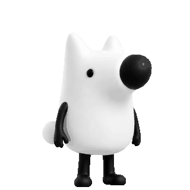

<!DOCTYPE html>
<html lang="zh-CN">
<head>
<meta charset="UTF-8">
<meta name="viewport" content="width=device-width, initial-scale=1.0">
<title>盐选人生：90天写作生存战</title>
<link rel="icon" href="data:image/svg+xml,<svg xmlns='http://www.w3.org/2000/svg' viewBox='0 0 100 100'><text y='.9em' font-size='90'>✍️</text></svg>">
<style>/* ==========================================================================
   盐选人生：90天写作生存战 —— 美术样式
   主风格：编辑部现实主义 · 内层：半写实都市剧场
   ========================================================================== */

:root{
  --paper:   #ffffff;
  --paper-2: #f1f5f1;
  --canvas:  #edf3ee;
  --ink:     #17251f;
  --ink-2:   #52615a;
  --ink-3:   #849089;
  --red:     #b95645;
  --red-2:   #d66f5d;
  --blue:    #397a68;
  --gold:    #b78a4b;
  --line:    #dce4de;
  --line-strong:#c7d2ca;
  --brand:   #214d3e;
  --brand-2: #2f6a57;
  --mint:    #dfece4;
  --shadow:  0 18px 50px rgba(28,55,43,.09);
  --shadow-soft:0 8px 24px rgba(28,55,43,.07);
  --radius:16px;
  --serif: "Songti SC","STSong","Noto Serif SC","SimSun",Georgia,"Times New Roman",serif;
  --sans:  -apple-system,BlinkMacSystemFont,"Segoe UI","PingFang SC","Hiragino Sans GB","Microsoft YaHei",system-ui,sans-serif;
}

*{ box-sizing:border-box; margin:0; padding:0; }
html,body{ height:100%; }
body{
  font-family:var(--sans);
  color:var(--ink);
  background:
    radial-gradient(900px 520px at 82% -10%, rgba(175,207,187,.34), transparent 68%),
    radial-gradient(720px 460px at -8% 65%, rgba(218,230,220,.55), transparent 72%),
    var(--canvas);
  min-height:100vh;
  -webkit-font-smoothing:antialiased;
}

#app{ min-height:100vh; }

button{ font-family:inherit; cursor:pointer; border:none; background:none; color:inherit; -webkit-tap-highlight-color:transparent; }
button:focus-visible,input:focus-visible{ outline:3px solid rgba(47,106,87,.22); outline-offset:3px; }
.ui-icon{ width:1.15em; height:1.15em; display:block; flex:0 0 auto; }
input{ font-family:inherit; }

.dim{ color:var(--ink-3); font-size:13px; }

/* ---------- 通用屏幕骨架 ---------- */
.screen{
  max-width:1120px;
  margin:0 auto;
  padding:40px 28px 80px;
  animation:fadein .5s ease both;
}
@keyframes fadein{ from{opacity:0; transform:translateY(10px);} to{opacity:1; transform:none;} }
.screen--center{ display:flex; flex-direction:column; gap:22px; align-items:stretch; }
.screen--center > *{ }
.phase-tag{
  align-self:center;
  font-size:12px; letter-spacing:.22em; color:var(--ink-3);
  padding:6px 14px; border:1px solid var(--line); border-radius:999px; background:var(--paper);
}

/* ---------- 纸张 / 印章 ---------- */
.paper{
  position:relative;
  background:
    linear-gradient(180deg, rgba(255,255,255,.55), rgba(255,255,255,0) 140px),
    var(--paper);
  border:1px solid var(--line);
  box-shadow:var(--shadow);
  padding:34px 42px 44px;
  max-width:820px; margin:0 auto;
}
.stamp{
  display:inline-block;
  border:2px solid currentColor;
  color:var(--red);
  border-radius:6px;
  font-weight:700;
  text-align:center;
  line-height:1.25;
  transform:rotate(-6deg);
  letter-spacing:.12em;
  opacity:.85;
}
.stamp--big{ font-size:15px; padding:8px 10px; }
.stamp--red{ color:var(--red); font-size:11px; padding:4px 7px; transform:rotate(4deg); }
.stamp--gold{ color:var(--gold); font-size:11px; padding:4px 7px; transform:rotate(-3deg); }

/* ---------- 按钮 ---------- */
.btn{
  display:inline-flex; align-items:center; justify-content:center; gap:8px;
  min-height:46px; padding:12px 22px; border-radius:12px; font-size:14px; font-weight:700;
  transition:transform .18s ease, box-shadow .18s ease, background .18s ease, border-color .18s ease;
}
.btn:active{ transform:translateY(1px) scale(.99); }
.btn--primary{
  background:var(--brand); color:#fff;
  box-shadow:0 10px 22px rgba(33,77,62,.18);
}
.btn--primary:hover{ background:var(--brand-2); transform:translateY(-2px); box-shadow:0 14px 28px rgba(33,77,62,.24); }
.btn--ghost{ background:#fff; color:var(--ink-2); border:1px solid var(--line); box-shadow:0 4px 14px rgba(30,55,44,.04); }
.btn--ghost:hover{ background:var(--paper-2); border-color:var(--line-strong); transform:translateY(-1px); }
.btn--quiet{ color:var(--ink-3); padding-inline:8px; text-decoration:underline; text-underline-offset:4px; }
.btn--quiet:hover{ color:var(--ink); }
.btn--big{ min-height:54px; padding:15px 26px; font-size:15px; letter-spacing:.01em; }
.btn-row{ display:flex; gap:14px; justify-content:center; flex-wrap:wrap; }

/* ---------- 标题屏 ---------- */
.screen--title{ display:flex; align-items:center; min-height:92vh; }
.screen--title .paper{ width:100%; text-align:center; }
.masthead{
  display:flex; justify-content:space-between; align-items:baseline;
  border-bottom:2px solid var(--ink); padding-bottom:10px; margin-bottom:26px;
  font-size:13px; letter-spacing:.2em; color:var(--ink-2);
}
.masthead-brand{ font-weight:800; color:var(--ink); letter-spacing:.3em; }
.title-hero{ position:relative; padding:10px 0 26px; }
.title-kicker{ font-size:13px; color:var(--ink-3); letter-spacing:.2em; margin-bottom:14px; }
.title-main{
  font-family:var(--serif); font-size:64px; font-weight:800; letter-spacing:.12em;
  color:var(--ink); line-height:1;
}
.title-sub{ font-size:22px; letter-spacing:.34em; color:var(--red); margin:14px 0 20px; font-weight:600; }
.title-line{ font-size:15px; line-height:2; color:var(--ink-2); margin-bottom:24px; }
.title-hero .stamp{ position:absolute; top:6px; right:0; }
.title-foot{ margin-top:24px; font-size:12px; color:var(--ink-3); letter-spacing:.14em; }

/* ---------- 知乎问题卡 ---------- */
.qcard{
  background:var(--paper); border:1px solid var(--line); border-radius:10px;
  padding:22px 26px; box-shadow:var(--shadow); text-align:left;
}
.qcard--big{ padding:30px 34px; }
.qcard-head{ display:flex; align-items:center; gap:12px; margin-bottom:16px; }
.qcard-avatar{
  width:40px; height:40px; border-radius:50%; background:var(--ink); color:var(--paper);
  display:flex; align-items:center; justify-content:center; font-weight:800; font-size:18px; flex:0 0 auto;
}
.qcard-meta{ flex:1; }
.qcard-author{ font-weight:700; font-size:14px; }
.qcard-sub{ font-size:12px; color:var(--ink-3); margin-top:2px; }
.qtag{ font-size:12px; color:var(--blue); border:1px solid var(--blue); padding:2px 9px; border-radius:999px; }
.qcard-title{ font-family:var(--serif); font-size:21px; line-height:1.5; margin-bottom:12px; }
.qcard-hook{ font-size:14px; color:var(--red); margin-bottom:12px; line-height:1.7; }
.qcard-premise{ font-size:13.5px; color:var(--ink-2); line-height:1.85; }

/* ---------- 设置屏 ---------- */
.setup-grid{ display:grid; grid-template-columns:1fr 1.1fr; gap:24px; align-items:start; }
@media (max-width:860px){ .setup-grid{ grid-template-columns:1fr; } }
.setup-opts{ display:flex; flex-direction:column; gap:20px; background:var(--paper); border:1px solid var(--line); border-radius:10px; padding:22px 24px; box-shadow:var(--shadow); }
.opt-label{ font-size:14px; font-weight:700; margin-bottom:10px; }
.opt-hint{ font-weight:400; font-size:12px; color:var(--ink-3); }
.chip-row{ display:flex; flex-wrap:wrap; gap:8px; }
.chip{ padding:7px 14px; border-radius:999px; border:1px solid var(--line); background:#fff; font-size:13px; color:var(--ink-2); transition:.12s; }
.chip--on{ background:var(--ink); color:var(--paper); border-color:var(--ink); }
.route-cards{ display:grid; grid-template-columns:repeat(5,1fr); gap:8px; }
@media (max-width:860px){ .route-cards{ grid-template-columns:repeat(2,1fr); } }
.route-card{
  display:flex; flex-direction:column; gap:4px; align-items:flex-start; text-align:left;
  border:1px solid var(--line); border-radius:8px; padding:10px 11px; background:#fff;
  border-top:3px solid var(--rc, var(--line)); transition:.12s; font-size:12px;
}
.route-card b{ font-size:13px; }
.route-card span{ color:var(--ink-3); line-height:1.4; }
.route-card--on{ background:color-mix(in srgb, var(--rc) 10%, #fff); box-shadow:0 0 0 1.5px var(--rc) inset; }
.pen-input{ width:100%; padding:11px 14px; border:1px solid var(--line); border-radius:6px; font-size:15px; background:#fff; }
.pen-input:focus{ outline:none; border-color:var(--ink); }

/* ---------- 地图屏 ---------- */
.screen--map{ display:flex; flex-direction:column; gap:22px; }
.map-head{ display:flex; align-items:baseline; justify-content:space-between; }
.map-day{ font-family:var(--serif); font-size:34px; font-weight:800; }
.map-day b{ color:var(--red); }
.map-sub{ color:var(--ink-3); font-size:13px; }
.map-body{ display:grid; grid-template-columns:1.1fr .9fr; gap:24px; align-items:stretch; }
@media (max-width:860px){ .map-body{ grid-template-columns:1fr; } }
.mindmap{
  position:relative; background:var(--paper); border:1px solid var(--line); border-radius:12px;
  box-shadow:var(--shadow); display:flex; align-items:center; justify-content:center; min-height:380px;
}
.mindmap-svg{ width:100%; max-width:430px; }
.mind-branch{ stroke-width:1.5; opacity:.45; stroke-dasharray:3 4; }
.mind-branch.is-active{ opacity:1; stroke-dasharray:none; stroke-width:2.4; filter:drop-shadow(0 0 4px currentColor); }
.mind-route{ fill:#fff; font-size:13px; text-anchor:middle; font-weight:700; }
.mind-route-sub{ fill:#fff; font-size:8px; text-anchor:middle; opacity:.9; }
.mindmap-root{
  position:absolute; left:50%; top:50%; transform:translate(-50%,-50%);
  width:120px; height:120px; border-radius:50%;
  background:var(--ink); color:var(--paper); display:flex; flex-direction:column;
  align-items:center; justify-content:center; gap:4px; text-align:center; padding:10px;
  box-shadow:0 8px 24px rgba(35,39,47,.4);
}
.mr-tag{ font-size:11px; color:#ffd98a; }
.mr-title{ font-size:13px; line-height:1.35; }
.tower{
  background:var(--paper); border:1px solid var(--line); border-radius:12px; padding:22px; box-shadow:var(--shadow);
}
.tower-title{ font-weight:800; font-size:15px; margin-bottom:14px; letter-spacing:.08em; }
.tower-list{ display:flex; flex-direction:column; gap:0; }
.tower-node{ display:flex; align-items:center; gap:12px; padding:9px 4px; border-bottom:1px dashed var(--line); opacity:.55; }
.tower-node.is-done{ opacity:1; }
.tower-node.is-now{ opacity:1; background:var(--paper-2); border-radius:8px; padding:9px 10px; box-shadow:0 0 0 1.5px var(--red) inset; }
.tn-day{ font-family:var(--serif); font-weight:800; font-size:16px; width:56px; }
.tn-stage{ flex:1; font-size:13px; color:var(--ink-2); }
.tn-dot{ width:12px; height:12px; border-radius:50%; border:2px solid var(--ink-3); }
.tower-node.is-done .tn-dot{ background:var(--ink); border-color:var(--ink); }
.tower-node.is-now .tn-dot{ background:var(--red); border-color:var(--red); box-shadow:0 0 0 4px rgba(224,83,63,.2); }
.tn-state{ font-size:11px; color:var(--ink-3); width:48px; text-align:right; }
.map-route-now{ margin-top:16px; font-size:13px; color:var(--ink-2); }

/* ---------- 工作台三栏 ---------- */
.screen--wb{ display:flex; flex-direction:column; gap:18px; }
.wb-top{
  display:flex; align-items:center; gap:18px; background:var(--ink); color:var(--paper);
  padding:14px 20px; border-radius:10px; box-shadow:var(--shadow);
}
.wb-day{ font-family:var(--serif); font-size:26px; font-weight:800; color:#ffd98a; }
.wb-goal-line{ flex:1; font-size:14px; }
.wb-goal-line b{ font-weight:800; }
.wb-stage{ font-size:12px; border:1px solid #ffd98a; color:#ffd98a; padding:3px 10px; border-radius:999px; }
.wb{ display:grid; grid-template-columns:1.2fr 1fr 1fr; gap:18px; align-items:start; }
@media (max-width:960px){ .wb{ grid-template-columns:1fr; } }
.wb-col{
  background:var(--paper); border:1px solid var(--line); border-radius:12px; padding:20px;
  box-shadow:var(--shadow); display:flex; flex-direction:column; gap:16px;
}
.col-title{ font-weight:800; font-size:15px; letter-spacing:.06em; border-bottom:2px solid var(--ink); padding-bottom:8px; }
.doc-block{ display:flex; flex-direction:column; gap:8px; }
.doc-h{ font-size:12px; color:var(--ink-3); letter-spacing:.14em; }
.doc-list{ list-style:none; font-size:13px; color:var(--ink-2); display:flex; flex-direction:column; gap:5px; padding-left:14px; }
.doc-list li::before{ content:"· "; color:var(--red); }
.char-list{ display:flex; flex-direction:column; gap:7px; }
.char-row{ display:flex; justify-content:space-between; gap:10px; font-size:13px; border-bottom:1px dotted var(--line); padding-bottom:5px; }
.char-role{ font-weight:700; }
.char-goal{ color:var(--ink-3); text-align:right; flex:1; }

.spec-row{ display:flex; flex-direction:column; gap:8px; }
.spec{ text-align:left; border:1px solid var(--line); border-radius:8px; padding:10px 12px; background:#fff; display:flex; flex-direction:column; gap:3px; transition:.12s; }
.spec b{ font-size:14px; }
.spec span{ font-size:11.5px; color:var(--ink-3); line-height:1.5; }
.spec--on{ border-color:var(--red); box-shadow:0 0 0 1.5px var(--red) inset; background:#fff7f3; }
.cost{ font-size:12px; color:#ffd98a; font-weight:600; }

.bars{ display:flex; flex-direction:column; gap:10px; }
.bar-row{ display:grid; grid-template-columns:74px 1fr 34px; gap:8px; align-items:center; }
.bar-label{ font-size:12px; color:var(--ink-2); }
.bar-track{ height:8px; border-radius:4px; background:#e2d9c5; overflow:hidden; }
.bar-fill{ height:100%; border-radius:4px; transition:width .5s ease; }
.bar-val{ font-size:12px; font-weight:700; text-align:right; }
.spark{ width:100%; height:60px; background:#fff; border:1px solid var(--line); border-radius:6px; }
.editor-card{
  background:#fff8ef; border:1px solid var(--gold); border-radius:10px; padding:14px 16px; font-size:13.5px;
}
.editor-h{ color:var(--gold); font-weight:800; font-size:12px; letter-spacing:.1em; margin-bottom:8px; }
.editor-card p{ line-height:1.7; color:var(--ink-2); }
.editor-constraint{ margin-top:10px; background:#fdebd0; border-radius:6px; padding:8px 10px; color:#7a4d00; font-size:12.5px; line-height:1.6; }
.tip-box{ font-size:12px; color:var(--ink-3); line-height:1.6; border-left:3px solid var(--line); padding-left:10px; }

.comment-list{ display:flex; flex-direction:column; gap:12px; }
.comment{ background:#fff; border:1px solid var(--line); border-radius:8px; padding:12px 14px; }
.comment-head{ display:flex; align-items:baseline; gap:8px; margin-bottom:6px; }
.comment-name{ font-weight:700; font-size:13px; }
.comment-role{ font-size:11px; color:var(--ink-3); }
.comment-body{ font-size:13.5px; line-height:1.75; color:var(--ink-2); }
.comment--compact .comment-body{ font-size:12.5px; }

/* ---------- 内层都市剧场场景 ---------- */
.screen--scene{ max-width:none; padding:0; }
.scene{
  position:relative; min-height:100vh; overflow:hidden;
  display:flex; align-items:center; justify-content:center;
  color:#f4efe3;
}
.scene-grad{ position:absolute; inset:0; z-index:0; }
.scene--cold .scene-grad{ background:linear-gradient(180deg,#0d1b2a 0%,#1b2c42 45%,#2c3e50 100%); }
.scene--tense .scene-grad{ background:linear-gradient(180deg,#1a0f12 0%,#3a1a18 45%,#52250f 100%); }
.scene--dark .scene-grad{ background:linear-gradient(180deg,#070b0a 0%,#101c16 50%,#16251e 100%); }
.scene--warm .scene-grad{ background:linear-gradient(180deg,#1d1420 0%,#3a2330 50%,#5a3226 100%); }
.scene--dawn .scene-grad{ background:linear-gradient(180deg,#16233a 0%,#31405e 45%,#7a5a6a 100%); }
.scene-city{ position:absolute; inset:auto 0 0 0; height:52%; z-index:1; opacity:.85; }
.scene-city-svg{ width:100%; height:100%; }
.scene-rain{
  position:absolute; inset:0; z-index:2; opacity:.35; pointer-events:none;
  background-image:repeating-linear-gradient(115deg, transparent 0 5px, rgba(200,220,240,.35) 5px 6px);
  animation:rain .5s linear infinite;
}
@keyframes rain{ from{transform:translateY(-20px);} to{transform:translateY(0);} }
.scene-vignette{ position:absolute; inset:0; z-index:3; background:radial-gradient(120% 90% at 50% 42%, transparent 55%, rgba(0,0,0,.55) 100%); pointer-events:none; }
.scene-bar{
  position:absolute; left:0; right:0; height:34px; z-index:4;
  background:rgba(0,0,0,.55); display:flex; align-items:center; padding:0 18px;
  font-size:12px; letter-spacing:.2em; color:#e8dfca; backdrop-filter:blur(2px);
}
.scene-bar--top{ top:0; }
.scene-bar--bottom{ bottom:0; justify-content:flex-end; }
.scene-stage{
  position:relative; z-index:5; width:min(680px,92vw); margin:60px 0;
  background:rgba(12,15,20,.82); border:1px solid rgba(255,255,255,.12); border-radius:14px;
  padding:30px 34px; box-shadow:0 30px 80px rgba(0,0,0,.55); backdrop-filter:blur(4px);
}
.stage-kicker{ font-size:12px; color:#d8c9a8; letter-spacing:.16em; margin-bottom:16px; }
.stage-situation{ font-family:var(--serif); font-size:16px; line-height:2; margin-bottom:16px; color:#f1ead9; }
.stage-goal{ font-size:13px; color:#ffd98a; margin-bottom:22px; }
.stage-choices{ display:flex; flex-direction:column; gap:10px; }
.choice{
  display:flex; gap:12px; align-items:flex-start; text-align:left;
  padding:13px 15px; border-radius:8px; background:rgba(255,255,255,.06);
  border:1px solid rgba(255,255,255,.14); color:#f1ead9; font-size:14.5px; line-height:1.6;
  transition:.14s;
}
.choice:hover{ background:rgba(255,255,255,.14); border-color:#ffd98a; }
.choice-idx{ flex:0 0 auto; width:24px; height:24px; border-radius:50%; background:var(--red); color:#fff; display:flex; align-items:center; justify-content:center; font-size:12px; font-weight:800; }
.stage-choices--final{ max-width:720px; margin:0 auto; }

/* ---------- 手稿 ---------- */
.manuscript{
  background:
    repeating-linear-gradient(0deg, transparent 0 31px, rgba(120,110,90,.16) 31px 32px),
    #fbf7ec;
  border:1px solid var(--line); border-radius:8px; padding:30px 38px 34px; box-shadow:var(--shadow);
  text-align:left;
}
.ms-head{ display:flex; align-items:center; gap:14px; border-bottom:1px solid var(--line); padding-bottom:14px; margin-bottom:20px; }
.ms-ch{ font-weight:800; color:var(--red); }
.ms-title{ font-family:var(--serif); font-weight:700; font-size:18px; flex:1; }
.ms-body{ font-family:var(--serif); font-size:16px; line-height:2; color:var(--ink); }
.ms-body p{ margin-bottom:16px; text-indent:2em; }
.ms-ann{ margin-top:18px; font-size:12px; color:var(--red); border-top:1px dashed var(--line); padding-top:12px; }

/* ---------- 反馈屏 ---------- */
.fb-grid{ display:grid; grid-template-columns:1.1fr .9fr; gap:22px; align-items:start; }
@media (max-width:860px){ .fb-grid{ grid-template-columns:1fr; } }
.fb-comments, .fb-side{
  background:var(--paper); border:1px solid var(--line); border-radius:12px; padding:20px; box-shadow:var(--shadow);
  display:flex; flex-direction:column; gap:16px;
}
.delta-row{ display:flex; justify-content:space-between; font-size:13px; padding:4px 0; border-bottom:1px dotted var(--line); }
.delta-row .up{ color:#1f9e7d; }
.delta-row .down{ color:var(--red); }
.event-card{ background:#fdeef0; border:1px solid var(--red-2); border-radius:10px; padding:14px 16px; }
.event-h{ color:var(--red); font-weight:800; font-size:13px; margin-bottom:8px; line-height:1.5; }
.event-card p{ font-size:13px; color:var(--ink-2); line-height:1.7; }
.author-choices{ display:grid; grid-template-columns:1fr 1fr; gap:8px; }
@media (max-width:640px){ .author-choices{ grid-template-columns:1fr; } }
.author-choice{ text-align:left; border:1px solid var(--line); border-radius:8px; padding:10px 12px; background:#fff; display:flex; flex-direction:column; gap:3px; transition:.12s; }
.author-choice:hover{ border-color:var(--ink); }
.author-choice b{ font-size:13.5px; }
.author-choice span{ font-size:11.5px; color:var(--ink-3); line-height:1.5; }

/* ---------- 危机屏 ---------- */
.crisis-card{ background:var(--ink); color:var(--paper); border-radius:12px; padding:26px 30px; box-shadow:var(--shadow); max-width:760px; margin:0 auto; }
.crisis-card .event-h{ color:#ffd98a; font-size:15px; }
.crisis-desc{ color:#cfc6ae; font-size:13.5px; line-height:1.8; margin-top:12px; }

/* ---------- 结局屏 ---------- */
.screen--ending{ display:flex; flex-direction:column; gap:26px; }
.end-hero{ display:grid; grid-template-columns:auto 1fr; gap:30px; align-items:center; }
@media (max-width:760px){ .end-hero{ grid-template-columns:1fr; } }
.book-cover{
  width:220px; height:310px; position:relative; perspective:900px; flex:0 0 auto;
  filter:drop-shadow(0 20px 30px rgba(30,25,15,.45));
}
.book-cover-art{
  position:absolute; inset:0 8px 0 0; border-radius:3px 8px 8px 3px; overflow:hidden;
  display:flex; flex-direction:column; align-items:center; justify-content:center; gap:12px; text-align:center;
  padding:24px 18px; color:#f4efe3;
  background:
    radial-gradient(200px 200px at 80% 10%, rgba(255,217,138,.35), transparent 60%),
    linear-gradient(160deg, #1d2430 0%, #3a2c33 55%, #5c3a2a 100%);
  border:1px solid rgba(255,255,255,.15);
}
.book-cover-tag{ font-size:11px; letter-spacing:.3em; color:#ffd98a; }
.book-cover-title{ font-family:var(--serif); font-size:24px; font-weight:800; line-height:1.4; }
.book-cover-tagline{ font-size:12px; line-height:1.7; opacity:.9; }
.book-spine{
  position:absolute; left:0; top:0; bottom:0; width:9px; border-radius:2px 0 0 2px;
  background:linear-gradient(90deg,#0c0e12,#2a2f38); border:1px solid rgba(255,255,255,.08);
  writing-mode:vertical-rl; text-orientation:mixed; color:#c9b98c; font-size:9px;
  display:flex; align-items:center; justify-content:center; letter-spacing:.2em; padding:4px 0;
}
.author-profile{
  background:var(--paper); border:1px solid var(--line); border-radius:12px; padding:26px 28px; box-shadow:var(--shadow);
  display:flex; flex-direction:column; gap:14px;
}
.profile-head{ display:flex; align-items:center; gap:16px; }
.profile-avatar{ width:60px; height:60px; border-radius:50%; background:var(--ink); color:var(--paper); display:flex; align-items:center; justify-content:center; font-size:26px; font-weight:800; }
.profile-name{ font-size:18px; font-weight:800; }
.profile-ending{ font-size:13px; color:var(--red); font-weight:700; margin-top:2px; }
.profile-head .stamp{ margin-left:auto; }
.profile-subtitle{ font-family:var(--serif); font-size:15px; color:var(--ink-2); font-style:italic; }
.profile-traits{ display:flex; gap:8px; flex-wrap:wrap; }
.trait{ font-size:12px; background:var(--paper-2); border:1px solid var(--line); padding:4px 11px; border-radius:999px; color:var(--ink-2); }
.profile-verdict{ font-size:14px; line-height:1.9; color:var(--ink); }
.profile-style{ font-size:13px; color:var(--ink-3); line-height:1.7; border-left:3px solid var(--gold); padding-left:12px; }

.report{ background:var(--paper); border:1px solid var(--line); border-radius:12px; padding:26px; box-shadow:var(--shadow); }
.report-title{ font-family:var(--serif); font-size:20px; font-weight:800; margin-bottom:18px; letter-spacing:.1em; }
.report-grid{ display:grid; grid-template-columns:1fr 1fr; gap:20px; }
@media (max-width:860px){ .report-grid{ grid-template-columns:1fr; } }
.report-section{ border-top:1px solid var(--line); padding-top:14px; }
.report-section--wide{ grid-column:1 / -1; }
.report-h{ font-size:13px; font-weight:800; letter-spacing:.1em; color:var(--ink-2); margin-bottom:12px; }
.report-row{ font-size:13px; color:var(--ink-2); line-height:1.7; padding:5px 0; border-bottom:1px dotted var(--line); }
.report-afterword{ margin-top:12px; font-size:13.5px; color:var(--ink-2); line-height:1.9; }
.report-afterword b{ color:var(--ink); }
.report-afterword p{ margin-top:6px; }
.report-cover-note{ font-size:13px; color:var(--ink-3); margin-bottom:12px; }
.report-ch{ margin-bottom:18px; }
.report-ch-h{ font-weight:800; font-size:13px; color:var(--red); margin-bottom:8px; }
.report-ch p{ font-family:var(--serif); font-size:14px; line-height:2; text-indent:2em; color:var(--ink); margin-bottom:8px; }
.end-quote{
  text-align:center; font-family:var(--serif); font-size:18px; line-height:2; color:var(--ink-2);
  padding:20px; border-top:2px solid var(--ink); border-bottom:2px solid var(--ink); max-width:760px; margin:0 auto;
}

/* 双层视觉：日间编辑部 / 夜间小说剧场 */
:root{--paper:#faf8f2;--paper-2:#eeeae0;--ink:#20352f;--ink-2:#54635d;--ink-3:#69756f;--line:#dcded3;--red:#b6513c;--shadow:0 12px 40px #263b2a0b}
body{background:#f2f1ea;color:var(--ink)}
button:focus-visible,input:focus-visible{outline:3px solid #cd8a47;outline-offset:4px}button:disabled{opacity:.45;cursor:not-allowed}
.identity{display:flex;justify-content:space-between;gap:12px;padding:18px 5vw;background:#203a32;color:#f4efdf;position:sticky;top:0;z-index:20;font-size:13px;letter-spacing:.06em}.identity-story{background:#131e30;color:#e8c995;border-bottom:1px solid #536174}
.eyebrow{display:block;font:12px var(--sans);letter-spacing:.18em;color:#987544;margin-bottom:20px}.new-title{max-width:1200px;margin:auto;min-height:95vh;display:grid;grid-template-columns:1.1fr 1fr;align-items:center;padding:60px 40px;gap:40px}.title-copy h1{font:700 24px var(--serif)}.title-copy h1 span{display:block;font-size:clamp(36px,5vw,65px);line-height:1.35;margin:28px 0}.title-copy p{line-height:2;color:var(--ink-2);margin-bottom:32px}.title-art{height:470px;position:relative;border-radius:50% 50% 10px 10px;background:#e0e5da}.art-book{position:absolute;inset:42px 64px 68px;background:#254438;color:#f0e8cf;box-shadow:12px 14px 0 #d3cbb5,20px 28px 40px #20352f25;transform:rotate(-7deg);border-left:12px solid #142e26;padding:40px 24px}.art-book span{font:38px/1.5 var(--serif)}.art-book small{display:block;margin-top:36px}.title-art .kanshan{position:absolute;right:-20px;bottom:-20px;width:210px;height:210px}.art-note{position:absolute;bottom:24px;left:20px;background:#fff9;padding:12px;border-radius:6px}.kanshan{object-fit:contain}.length-grid,.prep-grid{display:grid;grid-template-columns:repeat(3,1fr);gap:16px}.length-card,.prep-card{border:1px solid var(--line);background:var(--paper);padding:22px;text-align:left;border-radius:12px}.length-card.selected{border:2px solid #426e58;background:#e5ece2}.length-card h3{margin:14px 0;font:24px var(--serif)}.length-card p,.length-card small{line-height:1.8;color:var(--ink-2)}.prep-card span,.prep-card b{display:block;margin:8px 0}.planning{padding-bottom:0}.planning h2{margin:12px 0}.planning p{line-height:1.9;max-width:850px}.plan-row{display:flex;gap:10px;margin:20px 0}.planning small{display:block;margin-top:12px}.screen--wb{padding-top:24px}.wb{gap:18px}.wb-col{border-radius:12px}.map-heading{display:flex;justify-content:space-between;align-items:center}.map-heading h1{font:34px/1.5 var(--serif)}.chapter-track{display:grid;grid-template-columns:repeat(3,1fr);gap:14px;margin:32px 0}.track-node{display:flex;flex-direction:column;gap:12px;padding:22px;background:#e7e8e0;border:1px solid var(--line);border-radius:10px;color:#65716b}.track-node.current{background:#244438;color:#fff7de;border-color:#244438;box-shadow:0 10px 20px #24443820}.track-node.complete{background:#dce7da}.map-summary{padding:24px;background:var(--paper);border-radius:12px;margin-bottom:24px}.map-summary p{line-height:1.8;margin-top:12px}.passage{min-height:80vh;max-width:720px;margin:auto;display:flex;align-items:center;justify-content:center;flex-direction:column;text-align:center;padding:48px 24px;animation:page-turn .65s ease both}.passage h1,.passage h2{font:32px/1.5 var(--serif)}.passage p{font-size:17px;line-height:2;margin:24px 0;color:var(--ink-2)}.passage small{margin:20px 0;color:var(--ink-3)}.passage-line{height:2px;width:160px;background:#b39363;animation:ink-line .8s ease both}.story-stage{position:relative;min-height:calc(100vh - 55px);background:radial-gradient(ellipse at 70% 5%,#334758,transparent 60%),linear-gradient(#152333,#101a26);color:#ece8dd;padding:30px 6vw 60px}.story-meta{display:flex;justify-content:space-between;font-size:12px;color:#c8c2b5;position:relative}.story-panel{max-width:850px;margin:55px auto 0;position:relative}.story-panel h1{font:clamp(24px,3vw,36px)/1.6 var(--serif);margin-bottom:26px}.story-text{font:18px/2.2 var(--serif);color:#e5e3db;white-space:pre-line}.story-facts{font-size:12px;line-height:1.9;color:#b7c2c4;border-left:2px solid #b9985d;padding-left:16px;margin:26px 0}.story-options{display:grid;gap:12px}.story-options .choice{background:#ffffff09;border:1px solid #ffffff30;color:#f0ecdf;border-radius:8px;padding:18px;text-align:left;transition:background .2s,transform .2s}.story-options .choice:hover{background:#ffffff15;transform:translateX(4px)}.story-options .choice-idx{color:#e3be83;background:#ffffff0a}.story-sky{position:absolute;inset:0;pointer-events:none;background:repeating-linear-gradient(110deg,transparent 0 90px,#ffffff03 91px 92px)}.consequence{border-left:1px solid #b5aa94;margin-top:30px;min-height:65vh}.manuscript{max-width:800px;width:100%;padding:40px}.ms-body{font-size:17px;line-height:2.1}.ms-body p{margin-bottom:22px}.novel-ending p{line-height:2;margin-top:20px}
@keyframes page-turn{from{opacity:0;transform:translateY(18px)}to{opacity:1;transform:none}}@keyframes ink-line{from{transform:scaleX(0)}to{transform:scaleX(1)}}
@media(max-width:700px){.new-title{grid-template-columns:1fr;padding:40px 24px}.title-art{height:330px}.art-book{inset:20px 45px 50px}.art-book span{font-size:28px}.length-grid,.prep-grid{grid-template-columns:1fr}.chapter-track{grid-template-columns:repeat(2,1fr)}.identity{font-size:11px;padding:14px}.map-heading h1{font-size:25px}.map-heading .kanshan{width:95px;height:95px}.story-meta{gap:12px}.story-panel{margin-top:30px}.story-text{font-size:16px}.manuscript{padding:24px}.passage h1,.passage h2{font-size:26px}}
@media(prefers-reduced-motion:reduce){*,*::before,*::after{animation:none!important;transition:none!important}.kanshan{display:none}}

/* v2.1 · 决策体验、模式与连续叙事 */
.identity{align-items:center}.identity-mode{margin-left:auto;margin-right:12px;padding:5px 10px;border:1px solid #ffffff28;border-radius:999px;color:#ead8aa;font-size:11px;letter-spacing:.02em}
.planning-head{display:flex;align-items:center;justify-content:space-between;gap:24px}.planning-head .kanshan{width:110px;height:110px;margin:-18px 12px -34px 0}.planning-head .eyebrow{margin-bottom:10px}
.continuity-card{position:relative;padding:20px 22px 18px 28px;border:1px solid #bdc8b9;border-radius:14px;background:linear-gradient(135deg,#f8fbf4,#edf2e8);box-shadow:0 10px 30px #20352f0a;overflow:hidden}.continuity-card::before{content:"";position:absolute;left:0;top:0;bottom:0;width:5px;background:#4d745f}.continuity-card>span{display:block;margin-bottom:8px;color:#4d745f;font-size:11px;font-weight:800;letter-spacing:.16em}.continuity-card p{margin:0!important;font:15px/1.85 var(--serif);color:var(--ink)}.continuity-card small{display:block;margin-top:8px!important;color:var(--ink-3)}
.choice-guide{display:flex;align-items:baseline;gap:12px;margin-top:4px}.choice-guide b{font-size:14px}.choice-guide span{font-size:12px;color:var(--ink-3)}
.mode-picker{display:grid;grid-template-columns:1fr 1fr;gap:12px}.mode-card{position:relative;display:grid;grid-template-columns:42px 1fr auto;gap:12px;align-items:center;text-align:left;padding:16px;border:1px solid var(--line);border-radius:13px;background:#fff;color:var(--ink);transition:transform .18s ease,border-color .18s ease,box-shadow .18s ease}.mode-card:hover{transform:translateY(-2px);border-color:#6e8478;box-shadow:0 10px 24px #20352f12}.mode-card.selected{border-color:#315a48;background:linear-gradient(145deg,#f9fff9,#e8f0e7);box-shadow:0 0 0 2px #315a4824}.mode-icon{display:grid;place-items:center;width:42px;height:42px;border-radius:12px;background:#203a32;color:#f7e9bd;font:700 18px var(--serif)}.mode-card>span:nth-child(2){display:flex;flex-direction:column;gap:4px}.mode-card b{font-size:14px}.mode-card small{margin:0!important;font-size:11px;color:var(--ink-3)}.mode-card em{font-style:normal;font-size:11px;color:#4d745f;white-space:nowrap}.mode-card.selected::after{content:"已选择";position:absolute;right:10px;top:8px;font-size:9px;color:#315a48;letter-spacing:.08em}.mode-card:disabled{transform:none;box-shadow:none}
.prep-card{position:relative;min-height:128px;transition:transform .18s ease,border-color .18s ease,box-shadow .18s ease}.prep-card:hover:not(:disabled){transform:translateY(-3px);border-color:#819080;box-shadow:0 12px 24px #20352f10}.prep-card small{margin:auto 0 0!important;padding-top:10px;color:#567060!important;font-size:11px}.prep-status{display:flex;align-items:center;gap:12px;padding:11px 14px;border-radius:10px;background:#203a32;color:#f4efdf;font-size:12px}.prep-status span{opacity:.8}

.story-stage{padding:28px 5vw 72px;background:radial-gradient(ellipse at 78% 0%,#40536a 0%,transparent 54%),radial-gradient(circle at 8% 78%,#432b32 0%,transparent 36%),linear-gradient(#111d2b,#0d1621)}
.story-stage::after{content:"";position:absolute;inset:0;pointer-events:none;background:linear-gradient(90deg,#0002,transparent 15% 85%,#0002)}
.beat-progress{position:relative;z-index:5;display:flex;justify-content:center;max-width:980px;margin:24px auto 0}.beat-progress span{position:relative;flex:1;display:flex;flex-direction:column;align-items:center;gap:7px;color:#84909d;font-size:10px;letter-spacing:.08em}.beat-progress span::before{content:"";position:absolute;left:-50%;right:50%;top:6px;height:1px;background:#ffffff20}.beat-progress span:first-child::before{display:none}.beat-progress i{position:relative;z-index:1;width:13px;height:13px;border:2px solid #687684;border-radius:50%;background:#111d2b}.beat-progress .done,.beat-progress .current{color:#e7d9b4}.beat-progress .done i{border-color:#bd9b63;background:#bd9b63}.beat-progress .current i{border-color:#f0c778;background:#f0c778;box-shadow:0 0 0 6px #f0c7781c,0 0 22px #f0c77870}.beat-progress .done::before,.beat-progress .current::before{background:#bd9b63}
.story-panel{max-width:1020px;margin-top:38px;padding:34px 36px;border:1px solid #ffffff16;border-radius:20px;background:linear-gradient(145deg,#142130e8,#0e1825e8);box-shadow:0 34px 90px #0009,inset 0 1px #ffffff0c;backdrop-filter:blur(12px)}.story-panel h1{max-width:780px;margin-bottom:20px}.story-text{max-width:850px}
.story-facts{display:flex;flex-wrap:wrap;gap:8px;border:0;margin:24px 0;padding:0}.story-facts span{padding:7px 11px;border:1px solid #ffffff15;border-radius:999px;background:#ffffff06;color:#aeb9c2;font-size:11px}.story-facts b{color:#f0dfb7;font-weight:700}
.story-continuity{display:grid;grid-template-columns:auto 1fr;gap:5px 14px;margin:0 0 20px;padding:13px 15px;border-left:3px solid #bd9b63;border-radius:0 10px 10px 0;background:#ffffff08;color:#c7d0d6;font-size:12px}.story-continuity b{color:#efd296;letter-spacing:.05em}.story-continuity small{grid-column:2;color:#8f9ca7}
.decision-brief{display:flex;align-items:flex-end;justify-content:space-between;gap:20px;margin:28px 0 14px;padding-top:20px;border-top:1px solid #ffffff18}.decision-brief>div{display:flex;flex-direction:column;gap:5px}.decision-brief b{font:700 18px var(--serif);color:#fff2cf}.decision-brief span,.decision-brief small{color:#9ba8b4;font-size:12px}.decision-brief small{white-space:nowrap}
.ui-notice{margin-bottom:12px;padding:10px 13px;border-radius:9px;background:#8d382a;color:#fff0dc;font-size:12px}
.story-options{grid-template-columns:1fr 1fr;gap:12px}.story-options .choice{position:relative;min-height:118px;display:grid;grid-template-columns:34px 1fr;gap:13px;padding:17px 18px;border-radius:14px;background:linear-gradient(145deg,#ffffff0c,#ffffff05);overflow:hidden}.story-options .choice:last-child:nth-child(odd){grid-column:1/-1;min-height:104px}.story-options .choice::after{content:"";position:absolute;inset:0;background:linear-gradient(110deg,transparent 30%,#ffffff0a 50%,transparent 70%);transform:translateX(-110%);transition:transform .45s ease}.story-options .choice:hover::after{transform:translateX(110%)}.story-options .choice:hover{transform:translateY(-3px);border-color:#e4bd76;box-shadow:0 14px 34px #0005}.story-options .choice:active,.story-options .choice.is-pressed{transform:scale(.985);background:#e4bd7620}.choice-copy{display:flex;flex-direction:column;gap:5px;min-width:0}.choice-copy>b{color:#eacb8e;font-size:11px;letter-spacing:.12em}.choice-copy>span{font:15px/1.65 var(--serif);color:#f4f0e8}.choice-copy>small{color:#8f9ca7;font-size:10.5px}.choice-impact{grid-column:2;justify-self:start;margin-top:2px;padding:3px 7px;border-radius:999px;background:#ffffff0a;color:#b6c4cb;font-size:9.5px}.story-options .choice-idx{width:30px;height:30px;background:#b5523d;color:#fff5e4;box-shadow:0 0 0 4px #b5523d22}
.consequence{max-width:780px;padding:70px 30px}.consequence-mark{display:grid;place-items:center;width:58px;height:58px;margin-bottom:22px;border:1px solid #819b8a;border-radius:50%;background:#e8efe7;color:#315a48;font-size:24px;box-shadow:0 0 0 10px #315a4808}.memory-slip{display:flex;flex-wrap:wrap;align-items:center;justify-content:center;gap:8px 16px;width:100%;margin:10px 0 30px;padding:18px 20px;border:1px solid #cbd3c7;border-radius:12px;background:#f8faf5}.memory-slip b{color:#315a48}.memory-slip span{color:#8b6330;font-size:12px}.memory-slip small{flex-basis:100%;margin:0;color:var(--ink-3)}
.author-decision-block{gap:12px!important}.author-decision-head{padding:14px 15px;border-radius:10px;background:#edf2e8}.author-decision-head p{margin:6px 0 0;color:var(--ink-3);font-size:11.5px;line-height:1.65}.author-choice{position:relative;min-height:112px;padding:14px!important;overflow:hidden;transition:transform .18s ease,border-color .18s ease,box-shadow .18s ease!important}.author-choice:hover{transform:translateY(-2px);border-color:#567060!important;box-shadow:0 10px 22px #20352f12}.author-choice small{margin-top:auto;padding-top:8px;color:#8b6330;font-size:10px}.author-choice em{position:absolute;right:8px;top:8px;padding:3px 6px;border-radius:999px;background:#e5ece2;color:#426e58;font-size:9px;font-style:normal;opacity:0;transform:translateY(-4px);transition:.18s}.author-choice:hover em,.author-choice:focus-visible em{opacity:1;transform:none}

@media(max-width:760px){.identity-mode{display:none}.mode-picker,.story-options{grid-template-columns:1fr}.story-options .choice:last-child:nth-child(odd){grid-column:auto}.choice-guide,.decision-brief{align-items:flex-start;flex-direction:column}.story-panel{padding:26px 18px;margin-top:26px}.story-continuity{grid-template-columns:1fr}.story-continuity small{grid-column:1}.beat-progress span{font-size:0}.beat-progress span i{font-size:initial}.planning-head .kanshan{width:82px;height:82px}.mode-card{grid-template-columns:38px 1fr}.mode-card em{grid-column:2}.prep-status{align-items:flex-start;flex-direction:column}}

/* v2.2 · 分步流程、开场与全局导航 */
.prologue{position:relative;min-height:100vh;display:grid;grid-template-columns:minmax(0,1fr) minmax(380px,.85fr);align-items:center;gap:7vw;padding:8vh 9vw;overflow:hidden;background:#14241f;color:#f4eddb}.prologue::before{content:"";position:absolute;inset:0;background:radial-gradient(circle at 78% 30%,#62786755,transparent 32%),linear-gradient(120deg,transparent 58%,#ffffff08 58.2%,transparent 58.5%);pointer-events:none}.prologue-no{position:absolute;left:5vw;top:8vh;font:700 96px var(--serif);color:#ffffff08}.prologue-copy{position:relative;z-index:2;animation:prologue-in .65s ease both}.prologue-copy>span{color:#d5ad67;font-size:12px;letter-spacing:.22em}.prologue-copy h1{max-width:680px;margin:24px 0;font:700 clamp(38px,5vw,70px)/1.3 var(--serif)}.prologue-copy p{max-width:580px;font:20px/2 var(--serif);color:#d5d7cd}.prologue-next{margin-top:34px;padding:14px 26px;border:1px solid #d5ad67;border-radius:8px;background:transparent;color:#f5ddb1}.prologue-art{position:relative;z-index:1;height:560px;display:grid;place-items:center}.prologue-paper{position:absolute;width:72%;height:76%;border-radius:8px;background:#efeadd;box-shadow:18px 22px 0 #9f8f6a33,0 35px 90px #0007;transform:rotate(-7deg)}.prologue--portal .prologue-paper{background:#1b2a3b;box-shadow:0 0 0 12px #d7b66a18,0 0 100px #6e8fb966;transform:perspective(700px) rotateY(-12deg) rotate(-4deg)}.prologue-art .kanshan{position:relative;width:260px;height:260px;transform:translate(28%,28%);filter:drop-shadow(0 24px 30px #0005)}.prologue-dots{position:absolute;left:9vw;bottom:7vh;display:flex;gap:8px}.prologue-dots i{width:28px;height:3px;background:#ffffff25}.prologue-dots i.on{background:#d5ad67}.start-modes{display:grid;grid-template-columns:1fr 1fr;gap:14px;max-width:620px;margin-top:34px}.start-modes button{display:flex;align-items:center;justify-content:space-between;padding:22px;border:1px solid #d5ad67;border-radius:12px;background:#f5edda;color:#18372d;font:700 18px var(--serif);transition:transform .18s,box-shadow .18s}.start-modes button:last-child{background:transparent;color:#f5edda}.start-modes button:hover:not(:disabled){transform:translateY(-4px);box-shadow:0 18px 40px #0005}.start-modes b{font:700 24px var(--sans)}
.setup-wizard,.chapter-wizard{max-width:980px;min-height:calc(100vh - 64px);margin:auto;display:flex;flex-direction:column;justify-content:center;padding:64px 36px}.setup-wizard h1,.chapter-wizard h1{margin:24px 0 34px;font:700 clamp(30px,4vw,46px)/1.3 var(--serif)}.wizard-top{display:flex;align-items:center;justify-content:space-between;color:#7b6750;font-size:12px;letter-spacing:.12em}.wizard-top>div{display:flex;gap:7px}.wizard-top i{width:56px;height:4px;border-radius:9px;background:#d9d9d0}.wizard-top i.on{background:#315a48}.wizard-grid{display:grid;grid-template-columns:repeat(3,1fr);gap:16px}.wizard-card{min-height:148px;display:flex;flex-direction:column;justify-content:center;gap:12px;padding:24px;border:1px solid #d3d7ce;border-radius:16px;background:#fff;text-align:left;color:var(--ink);transition:transform .18s,border-color .18s,box-shadow .18s}.wizard-card:hover:not(:disabled){transform:translateY(-4px);border-color:#527260;box-shadow:0 18px 40px #20352f14}.wizard-card.selected{border:2px solid #315a48;background:#edf3eb}.wizard-card b{font:700 20px var(--serif)}.wizard-card span{color:#69756f;line-height:1.6}.wizard-block{margin:24px 0}.wizard-block>b{display:block;margin-bottom:14px}.setup-question{padding:20px 24px;border-left:4px solid #315a48;border-radius:0 12px 12px 0;background:#edf2e8;font:18px/1.8 var(--serif)}.wizard-actions{display:flex;justify-content:flex-end;gap:12px;margin-top:34px}.pen-label{display:flex;flex-direction:column;gap:10px;margin-top:28px;font-weight:700}.pen-label .pen-input{max-width:420px}.intent-card{min-height:180px}.intent-card b{font-size:25px}.prep-count{display:grid;place-items:center;width:62px;height:62px;margin:-8px 0 20px;border-radius:50%;background:#203a32;color:#f6d89b;font:700 20px var(--sans)}.action-result{margin-top:18px;padding:12px 16px;border-radius:9px;background:#e5ece2;color:#315a48}.chapter-ready{display:flex;justify-content:space-between;margin-top:22px;padding:16px 18px;border-radius:12px;background:#203a32;color:#f5edda}.script-grid .wizard-card{min-height:135px}
.game-nav{justify-content:flex-start;padding:12px 4vw}.game-nav .nav-left{display:flex;gap:8px;margin-right:18px}.game-nav button{padding:8px 11px;border:1px solid #ffffff25;border-radius:8px;background:#ffffff08;color:inherit;font-size:12px}.game-nav button:hover{background:#ffffff15;border-color:#ffffff50}.game-nav>b{margin-right:auto}.game-nav .identity-mode{margin:0}.game-overlay{position:fixed;z-index:100;inset:0;display:grid;place-items:center;padding:28px;background:#101914c9;backdrop-filter:blur(10px);animation:overlay-in .2s ease both}.overlay-panel{position:relative;width:min(980px,100%);max-height:88vh;overflow:auto;padding:38px;border-radius:22px;background:#f7f5ee;color:var(--ink);box-shadow:0 35px 100px #0009}.overlay-close{position:absolute;right:22px;top:18px;width:38px;height:38px;border:0;border-radius:50%;background:#203a32;color:#fff;font-size:24px}.overlay-kicker{color:#9a733a;font-size:11px;letter-spacing:.17em}.overlay-panel h2{margin:12px 0 24px;font:700 30px var(--serif)}.overlay-progress{height:7px;border-radius:9px;background:#dedfd7;overflow:hidden}.overlay-progress i{display:block;height:100%;background:#315a48}.overlay-chapters{display:grid;grid-template-columns:repeat(6,1fr);gap:9px;margin:22px 0}.overlay-chapters div{display:flex;flex-direction:column;align-items:center;gap:5px;padding:12px 5px;border:1px solid #d7d9d1;border-radius:10px;color:#8b918d}.overlay-chapters div.done{background:#dfe9dd;color:#315a48}.overlay-chapters div.current{background:#203a32;color:#f5edda}.overlay-chapters b{font-size:18px}.overlay-chapters span{font-size:10px}.map-now,.status-goal{display:flex;flex-direction:column;gap:9px;padding:18px;border-left:4px solid #b58a49;background:#efece2}.map-now span,.status-goal span{line-height:1.8;color:#59645f}.status-resources{display:grid;grid-template-columns:1fr 1fr;gap:18px 26px}.status-resources div{display:grid;grid-template-columns:1fr auto;gap:8px}.status-resources i{grid-column:1/-1;height:6px;border-radius:8px;background:#dedfd7;overflow:hidden}.status-resources em{display:block;height:100%}.status-facts{display:grid;grid-template-columns:1fr 1fr;gap:10px;margin:28px 0}.status-facts span{display:flex;justify-content:space-between;padding:13px 15px;border-radius:9px;background:#ebece5;color:#65706a}.status-facts b{color:#20352f}.status-goal{margin-top:8px}
.decision-brief{align-items:center;margin-top:26px}.decision-brief>b{font:700 18px var(--serif);color:#fff2cf}.author-decision-head{padding:12px 15px}.author-decision-head p{display:none}
@keyframes prologue-in{from{opacity:0;transform:translateY(24px)}to{opacity:1;transform:none}}@keyframes overlay-in{from{opacity:0}to{opacity:1}}
@media(max-width:760px){.prologue{grid-template-columns:1fr;padding:12vh 24px 9vh}.prologue-art{position:absolute;right:-70px;bottom:4vh;width:260px;height:260px;opacity:.28}.prologue-copy h1{font-size:40px}.prologue-copy p{font-size:17px}.start-modes,.wizard-grid,.status-resources,.status-facts{grid-template-columns:1fr}.setup-wizard,.chapter-wizard{padding:46px 20px}.wizard-card{min-height:112px}.game-nav{flex-wrap:wrap}.game-nav>b{display:none}.game-nav .identity-mode{margin-left:auto}.overlay-panel{padding:30px 20px}.overlay-chapters{grid-template-columns:repeat(3,1fr)}}

/* v2.3 · 清新编辑部 HUD 与决策控制台 */
.new-title{
  max-width:1280px;
  min-height:100vh;
  grid-template-columns:minmax(0,1fr) minmax(420px,.9fr);
  gap:7vw;
  padding:7vh 5vw;
}
.title-copy{position:relative;z-index:2;max-width:650px}
.title-copy .eyebrow{margin-bottom:24px;color:var(--brand-2);font-weight:800}
.title-copy h1{font-size:14px;letter-spacing:.16em;color:var(--ink-3)}
.title-copy h1 span{margin:20px 0 36px;font-size:clamp(42px,5.2vw,72px);line-height:1.22;letter-spacing:-.045em;color:var(--ink)}
.title-copy>.btn{margin-top:4px}
.title-actions{display:flex;align-items:center;gap:18px;flex-wrap:wrap}
.resume-card{display:grid;grid-template-columns:48px 1fr;gap:14px;align-items:center;max-width:520px;margin:0 0 24px;padding:14px 16px;border:1px solid var(--line);border-radius:14px;background:rgba(255,255,255,.72);box-shadow:var(--shadow-soft);backdrop-filter:blur(12px)}
.resume-icon{display:grid;place-items:center;width:48px;height:48px;border-radius:12px;background:var(--mint);color:var(--brand)}
.resume-icon .ui-icon{width:22px;height:22px}
.resume-card div{display:flex;flex-direction:column;gap:4px}
.resume-card b{font:700 15px var(--serif)}
.resume-card span{font-size:12px;color:var(--ink-3)}
.title-art{height:560px;border:1px solid rgba(255,255,255,.74);border-radius:42% 42% 18px 18px;background:rgba(220,234,224,.72);box-shadow:inset 0 1px rgba(255,255,255,.8);overflow:visible}
.art-book{inset:72px 70px 76px 54px;padding:46px 36px;border:0;border-left:8px solid #17372d;border-radius:4px 14px 14px 4px;background:#285645;box-shadow:16px 18px 0 #cfd9d1,0 26px 55px rgba(31,65,52,.2);transform:rotate(-5deg)}
.art-book small{margin:0 0 50px;color:#c3d9ce;font:700 10px var(--sans);letter-spacing:.14em}
.art-book span{font-size:42px;line-height:1.45;color:#f7f4e9}
.art-book i{display:block;width:48px;height:3px;margin-top:38px;background:#d8bd7f}
.title-art .kanshan{right:-34px;bottom:-18px;width:230px;height:230px;filter:drop-shadow(0 20px 24px rgba(21,48,38,.18))}
.art-note{left:auto;right:6px;bottom:44px;padding:11px 14px;border:1px solid rgba(255,255,255,.9);border-radius:10px;background:rgba(255,255,255,.88);box-shadow:var(--shadow-soft);color:var(--ink-2);backdrop-filter:blur(12px)}
.art-note b{color:var(--brand);font-size:17px}
.art-orbit{position:absolute;border:1px solid rgba(48,104,84,.16);border-radius:50%;pointer-events:none}
.art-orbit--one{inset:12% -7% 8% 8%;transform:rotate(14deg)}
.art-orbit--two{inset:24% 7% -5% -8%;transform:rotate(-18deg)}

.prologue{background:#17362d}
.prologue::before{background:radial-gradient(circle at 76% 24%,rgba(159,197,174,.28),transparent 34%),linear-gradient(120deg,transparent 58%,rgba(255,255,255,.055) 58.2%,transparent 58.5%)}
.prologue-copy>span{color:#cda965;font-weight:800}
.prologue-copy h1{letter-spacing:-.035em}
.prologue-copy p{color:#c9d4cd;font-size:18px}
.prologue-next{display:inline-flex;align-items:center;gap:18px;min-height:50px;padding:12px 18px 12px 22px;border-color:rgba(213,173,103,.55);border-radius:12px;transition:.18s}
.prologue-next:hover{background:rgba(255,255,255,.07);border-color:#d5ad67;transform:translateY(-2px)}
.prologue-next .ui-icon{width:18px}
.start-modes{max-width:700px;gap:12px}
.start-modes .mode-launch{display:grid;grid-template-columns:44px 1fr auto;gap:13px;align-items:center;min-height:84px;padding:15px;border:1px solid rgba(255,255,255,.18);border-radius:14px;background:rgba(255,255,255,.06);color:#f3f4ee;text-align:left;box-shadow:none;transition:.2s}
.start-modes .mode-launch:last-child{background:rgba(255,255,255,.035);color:#f3f4ee}
.start-modes .mode-launch:hover:not(:disabled){transform:translateY(-3px);border-color:rgba(218,190,132,.68);background:rgba(255,255,255,.1);box-shadow:0 18px 42px rgba(0,0,0,.18)}
.mode-launch-icon{display:grid;place-items:center;width:44px;height:44px;border-radius:12px;background:#f0ead9;color:#214d3e}
.mode-launch-icon .ui-icon{width:21px;height:21px}
.mode-launch>span:nth-child(2){display:flex;flex-direction:column;gap:4px}
.mode-launch b{font-size:15px}.mode-launch small{color:#aebeb5;font-size:11px}.mode-launch em{color:#e3c98f;font-size:12px;font-style:normal}

/* 常驻 HUD */
.identity.game-nav{min-height:64px;padding:9px max(20px,3.2vw);gap:18px;border-bottom:1px solid rgba(32,71,57,.09);background:rgba(248,251,248,.88);color:var(--ink);box-shadow:0 6px 22px rgba(28,55,43,.055);backdrop-filter:blur(18px) saturate(1.3)}
.identity.game-nav.identity-story{border-bottom-color:rgba(255,255,255,.09);background:rgba(12,25,35,.86);color:#edf2ee;box-shadow:0 8px 28px rgba(0,0,0,.18)}
.game-nav .nav-left{gap:6px;margin:0}
.game-nav .nav-tool{display:flex;align-items:center;gap:7px;min-height:40px;padding:8px 11px;border:1px solid transparent;border-radius:10px;background:transparent;color:var(--ink-2);font-weight:700}
.game-nav .nav-tool:hover{border-color:var(--line);background:#fff;color:var(--brand)}
.identity-story .nav-tool{color:#c3d1ca}.identity-story .nav-tool:hover{border-color:rgba(255,255,255,.15);background:rgba(255,255,255,.08);color:#fff}
.nav-tool .ui-icon{width:17px;height:17px}
.hud-context{display:flex;flex-direction:column;gap:2px;padding-left:18px;border-left:1px solid var(--line);margin-right:auto}
.identity-story .hud-context{border-left-color:rgba(255,255,255,.14)}
.hud-context span{color:var(--ink-3);font-size:9px;letter-spacing:.14em;text-transform:uppercase}.hud-context b{font:700 13px var(--serif)}
.identity-story .hud-context span{color:#86978f}
.hud-resources{display:flex;align-items:center;gap:6px}
.hud-resource{display:flex;align-items:center;gap:5px;min-width:54px;padding:7px 9px;border:1px solid var(--line);border-radius:9px;background:rgba(255,255,255,.68);color:var(--ink-3)}
.hud-resource b{font-size:12px;color:var(--ink)}.hud-resource .ui-icon{width:14px;height:14px}
.identity-story .hud-resource{border-color:rgba(255,255,255,.1);background:rgba(255,255,255,.06);color:#93a49c}.identity-story .hud-resource b{color:#edf2ee}
.game-nav .identity-mode{margin:0;padding:7px 10px;border:1px solid var(--line);border-radius:9px;background:rgba(255,255,255,.68);color:var(--brand);font-size:10px;font-weight:800}
.identity-story .identity-mode{border-color:rgba(255,255,255,.1);background:rgba(255,255,255,.06);color:#e4c78c}

/* 设置与作者工作台 */
.setup-wizard,.chapter-wizard{max-width:1060px;min-height:calc(100vh - 64px);padding:70px 34px 90px}
.setup-wizard h1,.chapter-wizard h1{margin:22px 0 38px;font-size:clamp(34px,4.2vw,50px);line-height:1.2;letter-spacing:-.035em}
.wizard-top{font-weight:800;color:var(--ink-3);letter-spacing:.1em}
.wizard-top>div{gap:5px}.wizard-top i{width:42px;height:3px;background:#d7dfd9}.wizard-top i.on{background:var(--brand-2)}
.wizard-grid{gap:12px}
.wizard-card{position:relative;min-height:154px;padding:22px;border:1px solid var(--line);border-radius:14px;background:rgba(255,255,255,.78);box-shadow:0 5px 18px rgba(28,55,43,.035)}
.wizard-card:hover:not(:disabled){transform:translateY(-3px);border-color:#9bb4a7;box-shadow:var(--shadow-soft)}
.wizard-card.selected{border:1px solid var(--brand-2);background:#f5faf6;box-shadow:0 0 0 3px rgba(47,106,87,.09)}
.wizard-card-icon{display:grid;place-items:center;width:40px;height:40px;margin-bottom:6px;border-radius:11px;background:var(--mint);color:var(--brand)}
.wizard-card-icon .ui-icon{width:20px;height:20px}
.wizard-card>b{font-size:19px}.wizard-card>span:not(.wizard-card-icon){font-size:12px;color:var(--ink-3)}
.length-option{display:grid;grid-template-columns:1fr auto;align-content:start;justify-content:stretch;text-align:left}
.length-option .wizard-card-icon,.length-option>b,.length-option>span{grid-column:1}.length-option>small{grid-column:2;grid-row:1;color:#b2beb7;font-weight:800;letter-spacing:.08em}.length-option>i{position:absolute;right:20px;bottom:20px;color:var(--brand)}
.route-wizard{grid-template-columns:repeat(5,1fr)}
.route-option{min-height:178px}.route-option>i{position:absolute;right:16px;top:16px;color:var(--brand)}
.route-option>i .ui-icon{width:18px}.pen-label{max-width:420px;margin-top:30px;gap:9px}.pen-input{height:48px;border-color:var(--line);border-radius:11px;background:rgba(255,255,255,.86)}
.chip{min-height:38px;padding:8px 14px;border-color:var(--line);background:rgba(255,255,255,.78);font-weight:650}.chip:hover{border-color:#9bb4a7;background:#fff}.chip--on{border-color:var(--brand);background:var(--brand);color:#fff;box-shadow:0 7px 16px rgba(33,77,62,.14)}
.setup-question{padding:22px 24px;border:1px solid var(--line);border-left:4px solid var(--brand-2);border-radius:12px;background:rgba(255,255,255,.72);box-shadow:var(--shadow-soft);font-size:17px}
.wizard-actions{align-items:center;margin-top:32px;padding-top:24px;border-top:1px solid var(--line)}

.continuity-card{padding:18px 22px;border-color:var(--line);border-radius:12px;background:rgba(255,255,255,.68);box-shadow:none}
.continuity-card::before{width:3px;background:var(--brand-2)}
.continuity-card>span{display:flex;align-items:center;gap:7px;margin-bottom:6px;color:var(--brand);letter-spacing:.08em}.continuity-card>span .ui-icon{width:15px}
.continuity-card p{font-size:14px;color:var(--ink-2)}
.intent-list,.prep-list{display:flex;flex-direction:column;gap:9px;margin-top:18px}
.intent-option,.prep-option{position:relative;display:grid;grid-template-columns:40px 44px minmax(0,1fr) auto 20px;gap:14px;align-items:center;min-height:88px;padding:14px 17px;border:1px solid var(--line);border-radius:13px;background:rgba(255,255,255,.82);text-align:left;transition:.18s}
.intent-option:hover,.prep-option:hover:not(:disabled){transform:translateX(4px);border-color:#91ab9e;background:#fff;box-shadow:var(--shadow-soft)}
.intent-index{font-size:11px;font-weight:800;letter-spacing:.08em;color:#9ba8a1}
.intent-icon,.prep-icon{display:grid;place-items:center;width:42px;height:42px;border-radius:11px;background:var(--mint);color:var(--brand)}
.intent-icon .ui-icon,.prep-icon .ui-icon{width:20px;height:20px}
.intent-copy,.prep-copy{display:flex;flex-direction:column;gap:3px}.intent-copy small{font-size:9px;font-weight:800;letter-spacing:.14em;color:var(--brand-2)}.intent-copy b,.prep-copy b{font:700 17px var(--serif)}.intent-copy em,.prep-copy small{font-size:11.5px;font-style:normal;color:var(--ink-3)}
.intent-effect{padding:6px 9px;border-radius:8px;background:#edf4ef;color:var(--brand);font-size:10px;font-weight:800}.intent-option>.ui-icon,.prep-option>.ui-icon{width:17px;color:#9aa79f}
.prep-head{display:flex;align-items:center;justify-content:space-between;margin-bottom:18px;padding:12px 15px;border-radius:11px;background:rgba(255,255,255,.62);color:var(--ink-2);font-size:12px}.prep-head>span b{color:var(--brand);font-size:16px}
.prep-slots{display:flex;align-items:center;gap:7px}.prep-slots i{width:10px;height:10px;border:2px solid #9eada5;border-radius:50%}.prep-slots i.filled{border-color:var(--brand-2);background:var(--brand-2)}.prep-slots b{margin-left:4px;color:var(--brand)}
.prep-option{grid-template-columns:46px minmax(160px,.7fr) minmax(280px,1fr) 20px;min-height:78px}.prep-effects{display:flex;flex-wrap:wrap;justify-content:flex-end;gap:5px}.prep-option:disabled{opacity:.46;cursor:not-allowed;filter:saturate(.4)}
.effect-chip{display:inline-flex;align-items:center;padding:4px 7px;border-radius:7px;font-size:10px;font-weight:800;white-space:nowrap}.effect-chip.is-up{background:#e5f3e9;color:#286545}.effect-chip.is-down{background:#f7e8e4;color:#a34b3d}.effect-chip.is-neutral{background:#edf0ed;color:#6f7c75}.effect-chip.is-compact{padding:3px 6px;font-size:9.5px}
.action-result{display:flex;align-items:center;gap:8px;margin-top:12px;padding:11px 14px;border:1px solid #cfe0d5;border-radius:10px;background:#edf6f0;color:var(--brand);font-size:12px}.action-result .ui-icon{width:16px}
.freedom-scale{padding:18px;border:1px solid var(--line);border-radius:16px;background:rgba(255,255,255,.55)}
.freedom-axis{display:grid;grid-template-columns:auto 1fr auto;gap:12px;align-items:center;margin:2px 4px 16px;color:var(--ink-3);font-size:10px;font-weight:700}.freedom-axis i{height:2px;background:linear-gradient(90deg,var(--brand),#d8b26a)}
.script-grid{display:grid;grid-template-columns:repeat(3,1fr);gap:10px}
.script-option{position:relative;display:flex;flex-direction:column;gap:8px;min-height:180px;padding:20px;border:1px solid var(--line);border-radius:13px;background:#fff;text-align:left;transition:.18s}.script-option:hover{transform:translateY(-3px);border-color:#9bb4a7;box-shadow:var(--shadow-soft)}.script-option.selected{border-color:var(--brand);background:#f4faf6;box-shadow:0 0 0 3px rgba(47,106,87,.1)}
.script-option>i{position:absolute;right:16px;top:16px;color:var(--brand)}.script-option>i .ui-icon{width:18px}.script-level{font-size:10px;font-weight:800;color:#a3afa8}.script-option>b{font:700 22px var(--serif)}.script-option>small{min-height:42px;color:var(--ink-3);line-height:1.6}.script-meta{display:flex;gap:6px;flex-wrap:wrap;margin-top:auto}.script-meta em{padding:5px 7px;border-radius:7px;background:var(--paper-2);color:var(--ink-2);font-size:10px;font-style:normal}
.chapter-ready{display:grid;grid-template-columns:1fr 1fr;gap:10px;margin-top:12px;padding:0;background:transparent;color:var(--ink)}.chapter-ready>span{display:flex;flex-direction:column;gap:5px;padding:13px 15px;border:1px solid var(--line);border-radius:11px;background:rgba(255,255,255,.72)}.chapter-ready small{color:var(--ink-3);font-size:9px;letter-spacing:.1em}.chapter-ready b{display:flex;align-items:center;gap:6px;font-size:12px}.chapter-ready .ui-icon{width:15px;color:var(--brand)}
.wizard-actions--enter{justify-content:space-between}

/* 章节地图 */
.map-screen{max-width:1180px;padding-top:54px}
.map-heading h1{font-size:clamp(34px,4vw,50px);line-height:1.3;letter-spacing:-.04em}.map-heading h1 b{color:var(--brand-2)}.map-heading .kanshan{width:132px;height:132px}
.chapter-track{position:relative;display:flex;gap:0;margin:38px 0 28px;padding:22px 8px 12px;overflow-x:auto;scrollbar-width:thin}
.track-node{position:relative;flex:1 0 112px;min-width:112px;gap:5px;padding:0 8px;background:transparent!important;border:0!important;border-radius:0!important;color:var(--ink-3);box-shadow:none!important;text-align:center}
.track-node::before{content:"";position:absolute;left:-50%;right:50%;top:17px;height:2px;background:#d6dfd8}.track-node:first-child::before{display:none}.track-node>i{position:relative;z-index:1;display:grid;place-items:center;width:34px;height:34px;margin:0 auto 8px;border:2px solid #cbd6ce;border-radius:50%;background:var(--canvas);color:#89978f;font-size:11px;font-style:normal;font-weight:800}.track-node>i .ui-icon{width:16px}.track-node b{font-size:12px}.track-node small,.track-node span{font-size:9px}.track-node.complete::before,.track-node.current::before{background:#6e9a86}.track-node.complete>i{border-color:#6e9a86;background:#6e9a86;color:#fff}.track-node.current>i{border-color:var(--brand);background:#fff;color:var(--brand);box-shadow:0 0 0 6px rgba(47,106,87,.11)}.track-node.current b{color:var(--brand)}
.map-focus{display:grid;grid-template-columns:48px minmax(0,1fr) auto;gap:16px;align-items:center;padding:20px;border:1px solid var(--line);border-radius:15px;background:rgba(255,255,255,.74);box-shadow:var(--shadow-soft)}
.map-focus-icon{display:grid;place-items:center;width:48px;height:48px;border-radius:12px;background:var(--mint);color:var(--brand)}.map-focus-icon .ui-icon{width:22px}.map-focus>div:nth-child(2){display:flex;flex-direction:column;gap:6px}.map-focus span{color:var(--ink-3);font-size:10px;font-weight:800;letter-spacing:.08em}.map-focus p{max-width:600px;font:14px/1.75 var(--serif);color:var(--ink-2)}
.map-focus dl{display:flex;gap:8px}.map-focus dl div{min-width:82px;padding:9px 10px;border-left:1px solid var(--line)}.map-focus dt{display:flex;align-items:center;gap:4px;color:var(--ink-3);font-size:9px}.map-focus dt .ui-icon{width:12px}.map-focus dd{margin-top:5px;color:var(--ink);font-size:13px;font-weight:800}.map-action{display:flex;justify-content:flex-end;margin-top:24px}

/* 发布反馈与作者决策 */
.feedback-screen{max-width:1260px;padding-top:48px}
.feedback-head{display:flex;align-items:flex-end;justify-content:space-between;gap:30px;margin-bottom:26px}.feedback-head .eyebrow{margin-bottom:10px}.feedback-head h1{font:700 clamp(30px,3.5vw,45px)/1.28 var(--serif);letter-spacing:-.035em}
.chapter-pulse{min-width:260px;padding:15px 17px;border:1px solid var(--line);border-radius:13px;background:rgba(255,255,255,.76);box-shadow:var(--shadow-soft)}.chapter-pulse>span{display:flex;align-items:center;gap:6px;margin-bottom:8px;color:var(--ink-3);font-size:10px;font-weight:800}.chapter-pulse>span .ui-icon{width:14px}.chapter-pulse .delta-row{border:0;padding:2px 0;font-size:11px}
.feedback-layout{display:grid;grid-template-columns:minmax(300px,.72fr) minmax(560px,1.28fr);gap:18px;align-items:start}
.reader-panel,.decision-console{border:1px solid var(--line);border-radius:16px;background:rgba(255,255,255,.82);box-shadow:var(--shadow-soft)}
.reader-panel{padding:18px}.panel-title{display:flex;align-items:center;gap:11px;padding:2px 2px 15px;border-bottom:1px solid var(--line)}.panel-title>span{display:grid;place-items:center;width:38px;height:38px;border-radius:10px;background:var(--mint);color:var(--brand)}.panel-title>span .ui-icon{width:18px}.panel-title>div{display:flex;flex-direction:column;gap:2px}.panel-title b{font-size:13px}.panel-title small{color:var(--ink-3);font-size:10px}
.reader-panel .comment-list{gap:0}.reader-panel .comment{padding:15px 2px;border:0;border-bottom:1px solid #e8ede9;border-radius:0;background:transparent}.reader-panel .comment:last-child{border-bottom:0}.reader-panel .comment-name{color:var(--ink)}.reader-panel .comment-body{font-size:12.5px;line-height:1.65;color:var(--ink-2)}
.decision-console{padding:20px}.decision-console-head{display:flex;align-items:center;justify-content:space-between;gap:20px;margin-bottom:14px}.decision-console-head>div>span{color:var(--brand-2);font-size:9px;font-weight:800;letter-spacing:.13em}.decision-console-head h2{margin-top:5px;font:700 24px var(--serif)}
.route-signal{display:grid;grid-template-columns:28px auto;grid-template-rows:auto auto;column-gap:8px;padding:8px 10px;border-left:3px solid var(--route);background:color-mix(in srgb,var(--route) 7%,#fff)}.route-signal>.ui-icon{grid-row:1/3;align-self:center;width:20px;color:var(--route)}.route-signal small{color:var(--ink-3);font-size:8px}.route-signal b{font-size:10px}
.author-actions{display:grid;grid-template-columns:1fr 1fr;gap:9px}
.author-action{position:relative;display:grid;grid-template-columns:38px minmax(0,1fr) 16px;gap:11px;align-items:start;min-height:138px;padding:15px;border:1px solid var(--line);border-radius:13px;background:#fff;text-align:left;transition:.18s;overflow:hidden}
.author-action::before{content:"";position:absolute;left:0;top:0;bottom:0;width:3px;background:#8aa99a}.author-action--social::before{background:#5e8dab}.author-action--risk::before{background:#bd6757}.author-action--craft::before{background:#b28a4d}
.author-action:hover{transform:translateY(-3px);border-color:#9eb2a7;box-shadow:0 12px 28px rgba(28,55,43,.09)}.author-action:active{transform:translateY(-1px) scale(.993)}
.author-action-icon{display:grid;place-items:center;width:38px;height:38px;border-radius:10px;background:#e8f1eb;color:var(--brand)}.author-action--social .author-action-icon{background:#e8f1f5;color:#47768f}.author-action--risk .author-action-icon{background:#f7e9e6;color:#a54f40}.author-action--craft .author-action-icon{background:#f5efe2;color:#8c6a37}.author-action-icon .ui-icon{width:18px}
.author-action-copy{display:flex;flex-direction:column;gap:3px;min-width:0}.author-action-copy>small{color:var(--ink-3);font-size:8px;font-weight:800;letter-spacing:.12em}.author-action-copy>b{font:700 16px var(--serif)}.author-action-copy>em{min-height:32px;color:var(--ink-3);font-size:10px;font-style:normal;line-height:1.55}.author-action-copy>span{display:flex;flex-wrap:wrap;gap:4px;margin-top:4px}.author-action>.ui-icon{align-self:center;width:15px;color:#9ca9a2}
.author-action-route{position:absolute;right:12px;top:10px;color:#829088;font-size:8px;font-weight:700}
.event-card{margin-bottom:14px;padding:13px 14px;border:1px solid #e7c7bd;border-radius:11px;background:#fff7f4}.event-h{display:grid;grid-template-columns:18px auto 1fr;gap:6px;align-items:center;margin:0;color:#a24c3e}.event-h .ui-icon{width:16px}.event-h span{font-size:8px;letter-spacing:.12em}.event-h b{font-size:11px}.event-card p{margin:6px 0 0 24px;font-size:11px;line-height:1.6}

/* 浮层 */
.game-overlay{padding:24px;background:rgba(16,32,25,.58);backdrop-filter:blur(14px)}
.overlay-panel{width:min(940px,100%);padding:30px;border:1px solid rgba(255,255,255,.8);border-radius:18px;background:#f8fbf8;box-shadow:0 30px 90px rgba(11,29,22,.28)}
.overlay-close{right:18px;top:18px;display:grid;place-items:center;width:36px;height:36px;border:1px solid var(--line);border-radius:10px;background:#fff;color:var(--ink-2);transition:.18s}.overlay-close:hover{border-color:#aebdb4;color:var(--ink);transform:rotate(3deg)}.overlay-close .ui-icon{width:17px}
.overlay-title{display:flex;align-items:center;gap:13px;padding-right:48px}.overlay-title-icon{display:grid;place-items:center;width:46px;height:46px;border-radius:12px;background:var(--mint);color:var(--brand)}.overlay-title-icon .ui-icon{width:21px}.overlay-title>div{display:flex;flex:1;flex-direction:column;gap:3px}.overlay-title h2{margin:0;font-size:25px}.overlay-title>b{display:flex;align-items:baseline;gap:5px;color:var(--brand);font-size:25px}.overlay-title>b small{color:var(--ink-3);font-size:9px}.overlay-kicker{color:var(--ink-3);font-size:9px;font-weight:800}
.overlay-progress{height:5px;margin:20px 0 22px;background:#e1e8e3}.overlay-progress i{background:var(--brand-2)}
.overlay-chapters{display:flex;gap:0;margin:0 0 22px;padding:10px 0;overflow-x:auto}.overlay-chapters div{position:relative;flex:1 0 82px;min-width:82px;gap:3px;padding:0;border:0!important;border-radius:0!important;background:transparent!important;color:var(--ink-3)!important}.overlay-chapters div::before{content:"";position:absolute;left:-50%;right:50%;top:14px;height:2px;background:#dbe3dd}.overlay-chapters div:first-child::before{display:none}.overlay-chapters div>i{position:relative;z-index:1;display:grid;place-items:center;width:28px;height:28px;border:2px solid #d0dad3;border-radius:50%;background:#f8fbf8;font-size:9px;font-style:normal}.overlay-chapters div.done::before,.overlay-chapters div.current::before{background:#6f9b87}.overlay-chapters div.done>i{border-color:#6f9b87;background:#6f9b87;color:#fff}.overlay-chapters div.current>i{border-color:var(--brand);color:var(--brand);box-shadow:0 0 0 4px rgba(47,106,87,.1)}.overlay-chapters div>i .ui-icon{width:13px}.overlay-chapters b{font-size:9px}.overlay-chapters span{font-size:8px}
.map-now,.status-goal{display:grid;grid-template-columns:42px 1fr;gap:12px;align-items:center;padding:14px;border:1px solid var(--line);border-left:3px solid var(--brand-2);border-radius:10px;background:#fff}.map-now>span,.status-goal>span{display:grid;place-items:center;width:40px;height:40px;border-radius:10px;background:var(--mint);color:var(--brand)}.map-now .ui-icon,.status-goal .ui-icon{width:18px}.map-now div,.status-goal div{display:flex;flex-direction:column;gap:3px}.map-now small,.status-goal small{color:var(--ink-3);font-size:8px}.map-now b,.status-goal b{font-size:11px}.map-now p{color:var(--ink-2);font:11px/1.6 var(--serif)}
.status-resources{margin-top:24px;grid-template-columns:1fr 1fr;gap:9px}.status-resource{display:grid!important;grid-template-columns:38px 1fr auto!important;gap:10px!important;align-items:center;padding:11px 12px;border:1px solid var(--line);border-radius:11px;background:#fff}.status-resource-icon{display:grid!important;place-items:center;width:36px;height:36px;border-radius:9px;background:var(--paper-2);color:var(--brand)}.status-resource-icon .ui-icon{width:17px}.status-resource>span:nth-child(2){display:flex;flex-direction:column;gap:6px;color:var(--ink-3);font-size:9px}.status-resource i{grid-column:auto;height:4px;background:#e4e9e5}.status-resource>b{font-size:15px}
.status-facts{grid-template-columns:repeat(4,1fr);gap:8px;margin:14px 0}.status-facts span{display:grid;grid-template-columns:18px 1fr;grid-template-rows:auto auto;gap:2px 6px;justify-content:start;padding:11px;border:1px solid var(--line);background:#fff}.status-facts .ui-icon{grid-row:1/3;width:15px;color:var(--brand)}.status-facts small{color:var(--ink-3);font-size:8px}.status-facts b{font-size:9px;white-space:nowrap;overflow:hidden;text-overflow:ellipsis}

/* 剧情层细节 */
.story-panel{border-radius:16px}.story-facts span{border-radius:7px}.story-options .choice{border-radius:12px}.choice-impact,.story-facts span{backdrop-filter:blur(6px)}
.consequence-mark{border-color:#aac2b5;background:#edf6f0;color:var(--brand);box-shadow:0 0 0 9px rgba(47,106,87,.055)}.consequence-mark .ui-icon{width:25px}
.transition-glyph{display:grid;place-items:center;width:50px;height:50px;margin-bottom:6px;border:1px solid var(--line);border-radius:14px;background:rgba(255,255,255,.72);color:var(--brand);box-shadow:var(--shadow-soft)}.transition-glyph .ui-icon{width:22px}
.generation-orbit{position:relative;display:grid;place-items:center;width:210px;height:210px;margin-bottom:12px;border:1px solid rgba(47,106,87,.18);border-radius:50%}.generation-orbit::before,.generation-orbit::after{content:"";position:absolute;border:1px solid rgba(47,106,87,.12);border-radius:50%;animation:orbit-pulse 2.2s ease-in-out infinite}.generation-orbit::before{inset:18px}.generation-orbit::after{inset:38px;animation-delay:.45s}.generation-orbit>span{position:absolute;right:17px;top:28px;display:grid;place-items:center;width:40px;height:40px;border-radius:11px;background:var(--brand);color:#fff;z-index:2}.generation-orbit>span .ui-icon{width:19px}.generation-orbit .kanshan{position:relative;z-index:1;width:150px;height:150px}.generation-state>p{margin:16px 0;font:12px var(--sans);color:var(--ink-3)}.generation-state>p b{color:var(--brand)}.generation-line{width:min(280px,70vw);height:4px;border-radius:8px;background:#dce5de;overflow:hidden}.generation-line i{display:block;width:42%;height:100%;border-radius:inherit;background:var(--brand-2);animation:generation-slide 1.4s ease-in-out infinite}.generation-error-icon{display:grid;place-items:center;width:54px;height:54px;margin-bottom:16px;border-radius:15px;background:#f6e8e4;color:#aa5141}.generation-error-icon .ui-icon{width:24px}.generation-state--error p{max-width:540px}.generation-state--error .btn-row{margin-top:8px}@keyframes generation-slide{0%{transform:translateX(-110%)}100%{transform:translateX(340%)}}@keyframes orbit-pulse{50%{transform:scale(1.04);opacity:.45}}

@media(max-width:980px){
  .route-wizard{grid-template-columns:repeat(3,1fr)}
  .feedback-layout{grid-template-columns:1fr}
  .reader-panel{order:2}.decision-console{order:1}
  .map-focus{grid-template-columns:48px 1fr}.map-focus dl{grid-column:1/-1;padding-top:12px;border-top:1px solid var(--line)}
  .hud-context{display:none}
}
@media(max-width:760px){
  .new-title{grid-template-columns:1fr;padding:72px 22px 40px}.title-copy h1 span{font-size:42px}.title-art{height:340px;margin-top:26px}.art-book{inset:38px 48px 50px 24px;padding:28px 22px}.art-book small{margin-bottom:24px}.art-book span{font-size:29px}.title-art .kanshan{width:160px;height:160px}
  .prologue-copy h1{font-size:38px}.start-modes{grid-template-columns:1fr}.start-modes .mode-launch{min-height:72px}
  .identity.game-nav{flex-wrap:nowrap;padding:8px 12px;gap:8px}.nav-tool span,.hud-resources{display:none}.game-nav .nav-tool{width:40px;justify-content:center;padding:8px}.game-nav .identity-mode{margin-left:auto;max-width:150px;white-space:nowrap;overflow:hidden;text-overflow:ellipsis}
  .setup-wizard,.chapter-wizard{padding:46px 18px 70px}.setup-wizard h1,.chapter-wizard h1{font-size:34px}.route-wizard,.script-grid,.author-actions{grid-template-columns:1fr}.route-option{min-height:128px}.wizard-grid{grid-template-columns:1fr}
  .intent-option{grid-template-columns:34px 40px minmax(0,1fr) 16px;padding:12px}.intent-effect{display:none}.intent-icon{width:40px;height:40px}
  .prep-option{grid-template-columns:42px 1fr 16px}.prep-effects{grid-column:2/4;justify-content:flex-start}.prep-head{align-items:flex-start;gap:8px;flex-direction:column}
  .freedom-scale{padding:11px}.script-option{min-height:150px}.chapter-ready{grid-template-columns:1fr}.wizard-actions{justify-content:space-between}
  .map-heading .kanshan{width:90px;height:90px}.map-focus{grid-template-columns:42px 1fr;padding:15px}.map-focus-icon{width:42px;height:42px}.map-focus dl{display:grid;grid-template-columns:1fr 1fr}.map-focus dl div{border-left:0;border-top:1px solid var(--line)}
  .feedback-head{align-items:stretch;flex-direction:column}.feedback-head h1{font-size:34px}.chapter-pulse{min-width:0}.feedback-screen{padding:34px 14px 70px}.decision-console,.reader-panel{padding:14px}.decision-console-head{align-items:flex-start;flex-direction:column}.route-signal{width:100%}.author-action{min-height:126px}
  .game-overlay{padding:12px}.overlay-panel{padding:20px 15px}.overlay-title{padding-right:42px}.overlay-title>b{display:none}.status-resources{grid-template-columns:1fr}.status-facts{grid-template-columns:1fr 1fr}.overlay-chapters{margin-inline:-4px}
}
@media(prefers-reduced-motion:reduce){.intent-option:hover,.prep-option:hover:not(:disabled),.author-action:hover,.wizard-card:hover:not(:disabled),.script-option:hover{transform:none}}
/* 低行动力/资源不足弹窗（游戏机制） */
.low-action-panel{width:min(540px,100%);text-align:center}
.low-action-num{font:800 clamp(44px,8vw,66px)/1 var(--sans);color:#c2402a}
.low-action-sep{color:#7b6750;font-size:14px;font-weight:400}
.low-action-panel p{margin:12px 0 28px;color:#59645f;line-height:1.7;font-size:15px}
.low-action-panel .wizard-actions{justify-content:center}
.btn--danger{background:#c2402a;border:1px solid #c2402a;color:#fff}
.btn--danger:hover{background:#a5351f;border-color:#a5351f}

/* v2.4 · 叙事光影系统：作者桌面与小说世界共享一套情绪色温 */
body.game-atmosphere{
  --ambient-top:#eef3ed;
  --ambient-bottom:#e4e8df;
  --ambient-light:rgba(255,239,194,.58);
  --ambient-scene:rgba(64,116,101,.18);
  --ambient-shadow:rgba(24,55,45,.13);
  position:relative;
  min-height:100vh;
  background:
    radial-gradient(ellipse at 76% -8%,var(--ambient-light),transparent 44%),
    radial-gradient(ellipse at 8% 88%,var(--ambient-scene),transparent 42%),
    linear-gradient(138deg,var(--ambient-top),var(--ambient-bottom));
  transition:background 1.1s ease,color .7s ease;
}
body.game-atmosphere::before,
body.game-atmosphere::after{content:"";position:fixed;inset:0;z-index:0;pointer-events:none}
body.game-atmosphere::before{
  background:
    radial-gradient(ellipse at 84% 24%,var(--ambient-light),transparent 27%),
    radial-gradient(circle at 16% 72%,var(--ambient-scene),transparent 24%);
  transform-origin:85% 0;
  animation:author-light-breathe 13s ease-in-out infinite alternate;
}
body.game-atmosphere::after{
  background:
    radial-gradient(ellipse at -8% 48%,var(--ambient-shadow),transparent 44%),
    radial-gradient(ellipse at 108% 78%,var(--ambient-shadow),transparent 48%),
    radial-gradient(ellipse at 50% 120%,rgba(22,37,31,.1),transparent 55%);
  opacity:.56;
  transition:opacity .8s ease,filter .8s ease;
}
body.game-atmosphere #app{position:relative;z-index:1;min-height:100vh}
body.game-atmosphere[data-mood="cold"]{--ambient-scene:rgba(69,108,139,.23);--ambient-light:rgba(205,226,226,.48)}
body.game-atmosphere[data-mood="warm"]{--ambient-scene:rgba(154,92,73,.18);--ambient-light:rgba(255,220,158,.58)}
body.game-atmosphere[data-mood="tense"]{--ambient-scene:rgba(155,62,45,.24);--ambient-light:rgba(244,186,116,.5);--ambient-shadow:rgba(81,29,23,.18)}
body.game-atmosphere[data-mood="dark"]{--ambient-scene:rgba(42,78,65,.28);--ambient-light:rgba(181,204,176,.4);--ambient-shadow:rgba(14,35,29,.2)}
body.game-atmosphere[data-mood="dawn"]{--ambient-scene:rgba(112,119,157,.2);--ambient-light:rgba(255,209,139,.62)}
body.game-atmosphere[data-tension="1"]{--ambient-top:#ecefe9;--ambient-bottom:#e3e4db;--ambient-shadow:rgba(42,58,50,.15)}
body.game-atmosphere[data-tension="2"]{--ambient-top:#e8eae5;--ambient-bottom:#dedfd9;--ambient-shadow:rgba(47,52,55,.19)}
body.game-atmosphere[data-tension="3"]{--ambient-top:#e5e3df;--ambient-bottom:#d9d9d4;--ambient-shadow:rgba(60,43,43,.24)}
body.game-atmosphere[data-tension="4"]{--ambient-top:#dedbd7;--ambient-bottom:#d1d2cf;--ambient-shadow:rgba(67,30,31,.29);--ambient-scene:rgba(137,55,48,.27)}
body.game-atmosphere[data-tension="3"]::after{opacity:.78;filter:contrast(1.08)}
body.game-atmosphere[data-tension="4"]::after{opacity:.94;filter:contrast(1.15);animation:author-shadow-shift 7s ease-in-out infinite alternate}
body.game-atmosphere[data-realm="story"]{--ambient-top:#111d29;--ambient-bottom:#081118;--ambient-light:rgba(116,156,173,.24);--ambient-scene:rgba(111,63,62,.2);--ambient-shadow:rgba(0,0,0,.5)}
body.game-atmosphere[data-realm="story"]::before{animation-duration:6s}
body.game-atmosphere[data-condition="exhausted"]::before{filter:grayscale(.35);opacity:.55;animation-duration:18s}
body.game-atmosphere[data-condition="fractured"]::after{background:radial-gradient(ellipse at 18% 45%,rgba(35,61,76,.2),transparent 39%),radial-gradient(ellipse at 84% 61%,rgba(112,42,39,.21),transparent 42%)}
body.game-atmosphere[data-condition="clue"]::before{background:radial-gradient(ellipse at 82% 30%,rgba(255,220,145,.43),transparent 25%),radial-gradient(circle at 58% 72%,rgba(207,177,111,.16),transparent 18%)}
body.game-atmosphere[data-realm="author"] .screen:not(.screen--scene),
body.game-atmosphere[data-realm="author"] .passage{position:relative}
body.game-atmosphere[data-realm="author"] .chapter-wizard::after,
body.game-atmosphere[data-realm="author"] .feedback-screen::after,
body.game-atmosphere[data-realm="author"] .map-screen::after{
  content:"";position:absolute;right:-9vw;top:8vh;width:24vw;height:72vh;z-index:-1;
  border-radius:50%;
  background:radial-gradient(ellipse,var(--ambient-scene),transparent 69%);
  filter:blur(3px);pointer-events:none;
}

/* 小说世界：光源、天际线与天气会随章节压力和人物状态变化 */
.story-stage{
  --scene-top:#1a2a39;
  --scene-bottom:#0b151f;
  --scene-glow:rgba(129,164,181,.42);
  --scene-accent:rgba(208,171,103,.5);
  --scene-shadow:rgba(3,8,13,.78);
  isolation:isolate;overflow:hidden;
  background:linear-gradient(155deg,var(--scene-top),var(--scene-bottom) 72%);
  transition:background 1s ease;
}
.story-stage[data-mood="cold"]{--scene-top:#263b4b;--scene-bottom:#0b151f;--scene-glow:rgba(146,184,200,.42);--scene-accent:rgba(158,190,201,.42)}
.story-stage[data-mood="warm"]{--scene-top:#442e35;--scene-bottom:#17151c;--scene-glow:rgba(222,151,105,.38);--scene-accent:rgba(235,184,107,.5)}
.story-stage[data-mood="tense"]{--scene-top:#4a2524;--scene-bottom:#140e15;--scene-glow:rgba(218,91,64,.38);--scene-accent:rgba(243,144,72,.55)}
.story-stage[data-mood="dark"]{--scene-top:#1f342f;--scene-bottom:#07100f;--scene-glow:rgba(108,147,122,.28);--scene-accent:rgba(145,174,129,.35)}
.story-stage[data-mood="dawn"]{--scene-top:#3f4965;--scene-bottom:#24212b;--scene-glow:rgba(249,190,119,.48);--scene-accent:rgba(255,205,121,.65)}
.story-stage[data-tension="2"]{--scene-shadow:rgba(2,7,12,.82)}
.story-stage[data-tension="3"]{--scene-shadow:rgba(4,5,10,.88);--scene-glow:color-mix(in srgb,var(--scene-glow) 74%,rgba(183,54,42,.5))}
.story-stage[data-tension="4"]{--scene-top:#352026;--scene-bottom:#090b10;--scene-shadow:rgba(1,2,5,.94);--scene-glow:rgba(184,57,43,.45);--scene-accent:rgba(242,129,62,.62)}
.story-atmosphere{position:absolute;inset:0;z-index:0;overflow:hidden;pointer-events:none}
.story-atmosphere::before{content:"";position:absolute;left:12%;top:20%;width:7px;height:7px;border-radius:50%;background:rgba(221,205,158,.45);box-shadow:18vw 14vh 0 -1px rgba(218,210,178,.2),42vw -5vh 0 rgba(185,208,211,.2),67vw 19vh 0 -2px rgba(228,188,132,.3),78vw 53vh 0 rgba(194,211,211,.16),29vw 61vh 0 -1px rgba(236,220,176,.22);filter:blur(.3px);animation:suspense-dust 8s ease-in-out infinite alternate}
.story-atmosphere::after{content:"";position:absolute;right:8%;top:12%;width:22vw;height:22vw;border:1px solid rgba(210,190,145,.09);border-radius:50%;box-shadow:0 0 65px rgba(191,155,101,.08),inset 0 0 55px rgba(159,194,194,.04);animation:suspense-ring 6s ease-in-out infinite}
.story-atmosphere i{position:absolute;display:block}
.story-light{left:38%;top:-32%;width:70%;height:94%;border-radius:50%;background:radial-gradient(ellipse,var(--scene-glow),transparent 67%);filter:blur(4px);transform:rotate(-10deg);animation:scene-light-drift 12s ease-in-out infinite alternate}
.story-shadow{background:var(--scene-shadow);filter:blur(2px);opacity:.58;transition:opacity .8s ease,transform 1.2s ease}
.story-shadow--one{left:-12%;bottom:-25%;width:54%;height:96%;border-radius:45% 55% 12% 0;transform:rotate(14deg)}
.story-shadow--two{right:-18%;top:6%;width:43%;height:110%;border-radius:54% 0 0 18%;transform:rotate(-8deg)}
.story-horizon{left:0;right:0;bottom:0;height:31%;opacity:.72;background:linear-gradient(180deg,transparent,rgba(1,5,8,.72) 74%),linear-gradient(90deg,rgba(4,10,14,.85) 0 9%,transparent 9% 12%,rgba(4,10,14,.9) 12% 28%,transparent 28% 31%,rgba(4,10,14,.8) 31% 46%,transparent 46% 50%,rgba(4,10,14,.92) 50% 69%,transparent 69% 73%,rgba(4,10,14,.82) 73% 100%);clip-path:polygon(0 34%,8% 34%,8% 12%,11% 12%,11% 45%,22% 45%,22% 20%,28% 20%,28% 53%,39% 53%,39% 8%,44% 8%,44% 44%,57% 44%,57% 27%,64% 27%,64% 50%,75% 50%,75% 16%,82% 16%,82% 39%,92% 39%,92% 25%,100% 25%,100% 100%,0 100%)}
.story-weather{inset:-20%;opacity:.2;background:radial-gradient(ellipse at 18% 38%,rgba(216,228,229,.18),transparent 22%),radial-gradient(ellipse at 58% 62%,rgba(188,208,211,.14),transparent 28%),radial-gradient(ellipse at 86% 27%,rgba(220,228,222,.11),transparent 21%);filter:blur(12px);animation:scene-weather 12s ease-in-out infinite alternate}
.story-grain{inset:0;opacity:.15;background-image:url("data:image/svg+xml,%3Csvg viewBox='0 0 180 180' xmlns='http://www.w3.org/2000/svg'%3E%3Cfilter id='n'%3E%3CfeTurbulence type='fractalNoise' baseFrequency='.8' numOctaves='3' stitchTiles='stitch'/%3E%3C/filter%3E%3Crect width='100%25' height='100%25' filter='url(%23n)' opacity='.34'/%3E%3C/svg%3E");mix-blend-mode:soft-light}
.story-stage>.story-sky{z-index:1;opacity:.48;background:radial-gradient(circle at 72% 18%,rgba(255,255,255,.055),transparent 21%),radial-gradient(ellipse at 38% 84%,rgba(0,0,0,.2),transparent 43%)}
.story-stage>.story-meta,.story-stage>.beat-progress,.story-stage>.story-panel{z-index:3}
.story-stage[data-tension="0"] .story-shadow{opacity:.38}
.story-stage[data-tension="1"] .story-shadow{opacity:.48}
.story-stage[data-tension="2"] .story-shadow{opacity:.61}.story-stage[data-tension="2"] .story-weather{opacity:.22}
.story-stage[data-tension="3"] .story-shadow{opacity:.76}.story-stage[data-tension="3"] .story-shadow--one{transform:rotate(20deg) translateX(5%)}.story-stage[data-tension="3"] .story-weather{opacity:.3;animation-duration:6s}
.story-stage[data-tension="4"] .story-shadow{opacity:.88}.story-stage[data-tension="4"] .story-shadow--one{transform:rotate(24deg) translateX(11%)}.story-stage[data-tension="4"] .story-shadow--two{transform:rotate(-13deg) translateX(-8%)}.story-stage[data-tension="4"] .story-weather{opacity:.4;animation-duration:3.8s}.story-stage[data-tension="4"] .story-light{animation-duration:5s}
.story-stage[data-condition="exhausted"] .story-atmosphere{filter:saturate(.58) brightness(.82)}
.story-stage[data-condition="fractured"] .story-light{background:radial-gradient(ellipse at 35% 50%,rgba(89,133,155,.36),transparent 43%),radial-gradient(ellipse at 72% 50%,rgba(190,68,50,.38),transparent 48%)}
.story-stage[data-condition="clue"] .story-light{box-shadow:-25vw 18vh 9vw -10vw var(--scene-accent);opacity:1}
.story-panel{background:linear-gradient(145deg,color-mix(in srgb,var(--scene-top) 70%,rgba(10,17,24,.94)),rgba(8,14,20,.9));box-shadow:0 34px 100px rgba(0,0,0,.72),inset 0 1px rgba(255,255,255,.08)}

.consequence-stage{display:grid;place-items:center;min-height:calc(100vh - 64px);padding:34px max(22px,5vw) 58px}
.consequence-stage .story-atmosphere{z-index:0}.consequence-stage>.story-sky{z-index:1}.consequence-stage .consequence{position:relative;z-index:3;width:min(800px,100%);min-height:0;margin:0;padding:48px 42px;border:0;border-radius:22px;background:linear-gradient(145deg,rgba(18,32,43,.9),rgba(8,17,24,.86));box-shadow:0 32px 100px rgba(0,0,0,.65),inset 0 1px rgba(255,255,255,.07);backdrop-filter:blur(14px)}
.consequence-stage .consequence h2{color:#f1eddf}.consequence-stage .consequence>p{color:#bfc9c7}.consequence-stage .consequence>.eyebrow{color:#d3ab69}.consequence-stage .consequence-mark{border-color:rgba(209,188,137,.45);background:rgba(227,210,164,.1);color:#e5c783;box-shadow:0 0 0 10px rgba(219,190,126,.04),0 0 42px rgba(216,168,90,.14)}
.consequence-stage .memory-slip{border-color:rgba(255,255,255,.11);background:rgba(255,255,255,.055)}.consequence-stage .memory-slip b{color:#d9c89e}
.suspense-motes{position:absolute;inset:0;z-index:2;overflow:hidden;pointer-events:none}.suspense-motes i{position:absolute;width:3px;height:3px;border-radius:50%;background:#d8c490;box-shadow:0 0 10px #d4b878;opacity:.2;animation:mote-rise 6s ease-in-out infinite}.suspense-motes i:nth-child(1){left:12%;top:76%;animation-delay:-1s}.suspense-motes i:nth-child(2){left:27%;top:62%;animation-delay:-4s;animation-duration:8s}.suspense-motes i:nth-child(3){left:48%;top:84%;animation-delay:-2s}.suspense-motes i:nth-child(4){left:67%;top:71%;animation-delay:-5s;animation-duration:7s}.suspense-motes i:nth-child(5){left:82%;top:58%;animation-delay:-3s;animation-duration:9s}.suspense-motes i:nth-child(6){left:91%;top:82%;animation-delay:-6s}

/* 作者落笔后，光线收束成墨并自动切入主角视角 */
.realm-transition{position:relative;display:grid;place-items:center;min-height:100vh;overflow:hidden;background:#020405;color:#edf0e9;isolation:isolate}
.realm-transition::before{content:"";position:absolute;inset:-12%;z-index:0;background:radial-gradient(circle at 50% 48%,rgba(97,135,124,.34),rgba(22,36,36,.2) 24%,rgba(3,7,8,.97) 62%);animation:realm-breath 3s cubic-bezier(.45,0,.3,1) both}
.realm-transition::after{content:"";position:absolute;inset:0;z-index:1;background:radial-gradient(circle at 50% 48%,rgba(229,216,176,.24),transparent 8%,rgba(0,0,0,.78) 46%);mix-blend-mode:screen;animation:realm-flash 3s ease-in-out both}
.realm-ink{position:absolute;inset:0;z-index:2;display:grid;place-items:center;pointer-events:none}.realm-ink i{position:absolute;border-radius:50%;border:1px solid rgba(210,198,158,.2);box-shadow:0 0 45px rgba(119,159,148,.14),inset 0 0 50px rgba(0,0,0,.52)}.realm-ink i:nth-child(1){width:22vmax;height:22vmax;animation:ink-ring-one 3s cubic-bezier(.3,.7,.2,1) both}.realm-ink i:nth-child(2){width:37vmax;height:37vmax;border-color:rgba(125,159,149,.13);animation:ink-ring-two 3s cubic-bezier(.3,.7,.2,1) both}.realm-ink i:nth-child(3){width:4vmax;height:4vmax;border:0;background:#000;filter:blur(8px);animation:ink-core 3s ease-in-out both}
.realm-copy{position:relative;z-index:4;text-align:center;animation:realm-copy-in 3s ease-in-out both}.realm-copy>span{display:block;margin-bottom:19px;color:#b79a63;font-size:9px;font-weight:800;letter-spacing:.32em}.realm-copy h1{margin:0;font:700 clamp(34px,5vw,64px)/1.42 var(--serif);letter-spacing:-.04em;text-shadow:0 8px 34px rgba(0,0,0,.8)}.realm-copy p{margin:18px 0 0;color:#91a29c;font:13px/1.8 var(--serif);letter-spacing:.12em}
.realm-skip{position:absolute;z-index:5;left:50%;bottom:7vh;display:flex;align-items:center;gap:8px;transform:translateX(-50%);color:#71827c;font-size:9px;letter-spacing:.14em;animation:realm-skip-in 3s ease both}.realm-skip span{padding:3px 6px;border:1px solid #53635e;border-radius:4px;color:#9baca5;font-size:8px}.realm-skip:hover{color:#d7c18e}

/* 教程浮层 */
.tutorial-panel{width:min(1040px,100%)}
.tutorial-loop{display:flex;align-items:center;gap:9px;margin:4px 0 24px;padding:13px 15px;border:1px solid var(--line);border-radius:12px;background:#fff;color:var(--brand);font-size:11px;font-weight:800}
.tutorial-loop span{flex:1;padding:8px 10px;border-radius:8px;background:var(--mint);text-align:center}.tutorial-loop .ui-icon{width:15px;color:#9b8153}
.tutorial-grid{display:grid;grid-template-columns:repeat(4,1fr);gap:10px}
.tutorial-step{position:relative;min-height:190px;padding:18px;border:1px solid var(--line);border-radius:14px;background:rgba(255,255,255,.82)}
.tutorial-step-icon{display:grid;place-items:center;width:42px;height:42px;margin-bottom:24px;border-radius:11px;background:var(--mint);color:var(--brand)}.tutorial-step-icon .ui-icon{width:20px}
.tutorial-step>small{position:absolute;right:16px;top:18px;color:#a8b3ad;font-size:10px;font-weight:800;letter-spacing:.12em}
.tutorial-step h3{margin:0 0 9px;font:700 16px/1.5 var(--serif)}.tutorial-step p{margin:0;color:var(--ink-3);font-size:11px;line-height:1.75}
.tutorial-tip{display:flex;align-items:center;gap:12px;margin-top:12px;padding:13px 16px;border-left:3px solid #b18a4d;border-radius:0 10px 10px 0;background:#f1ede2}.tutorial-tip>span{color:#98733d}.tutorial-tip .ui-icon{width:18px}.tutorial-tip p{margin:0;color:var(--ink-2);font-size:11px;line-height:1.6}.tutorial-tip b{color:var(--ink)}

/* 热门问题：知乎用户发问，刘看山逐字作答 */
.draw-screen{position:relative;min-height:100vh;overflow:hidden;padding:38px max(24px,6vw) 68px;background:radial-gradient(circle at 78% 18%,rgba(67,107,95,.14),transparent 26%),linear-gradient(160deg,#f3f5f0,#e8ece6);color:var(--ink)}
.draw-screen::after{content:"";position:absolute;inset:0;pointer-events:none;background:radial-gradient(ellipse at 50% 118%,rgba(15,38,31,.14),transparent 52%),radial-gradient(ellipse at -12% 42%,rgba(39,75,64,.09),transparent 38%)}
.draw-ambient{position:absolute;inset:0;overflow:hidden;pointer-events:none}.draw-ambient i{position:absolute;display:block;border-radius:50%;filter:blur(10px);animation:draw-orbit 10s ease-in-out infinite alternate}.draw-ambient i:nth-child(1){right:6%;top:-18%;width:42vw;height:42vw;background:rgba(228,194,122,.13)}.draw-ambient i:nth-child(2){left:-14%;bottom:-20%;width:48vw;height:48vw;background:rgba(46,96,79,.12);animation-delay:-4s}.draw-ambient i:nth-child(3){right:24%;bottom:3%;width:180px;height:180px;border:1px solid rgba(35,82,66,.12);background:transparent;filter:none;animation-duration:14s}
.draw-heading{position:relative;z-index:2;display:flex;align-items:center;justify-content:space-between;max-width:1000px;margin:0 auto 28px;padding-bottom:16px;border-bottom:1px solid rgba(44,76,65,.14)}.draw-heading span{color:var(--brand);font-size:12px;font-weight:900;letter-spacing:.13em}.draw-heading b{padding:6px 10px;border-radius:999px;background:rgba(255,255,255,.6);color:var(--ink-3);font-size:10px}
.qa-thread{position:relative;z-index:2;max-width:1000px;margin:auto}
.question-post,.kanshan-answer{position:relative;border:1px solid rgba(53,82,71,.14);background:rgba(255,255,255,.78);box-shadow:0 22px 70px rgba(24,52,42,.08);backdrop-filter:blur(16px)}
.question-post{padding:25px 30px 28px;border-radius:17px 17px 5px 17px;animation:question-arrive .5s cubic-bezier(.2,.8,.2,1) both}
.kanshan-answer{width:calc(100% - 54px);margin:16px 0 0 54px;padding:22px 28px 30px;border-left:3px solid #2f6a57;border-radius:5px 17px 17px 17px;animation:answer-arrive .55s .35s cubic-bezier(.2,.8,.2,1) both}
.qa-person{display:flex;align-items:center;gap:11px}.qa-person>div{display:flex;flex:1;flex-direction:column;gap:3px}.qa-person b{font-size:13px}.qa-person small{color:var(--ink-3);font-size:9px}
.zh-avatar{position:relative;width:42px;height:42px;overflow:hidden;border-radius:50%;background:linear-gradient(155deg,#77949f,#354d59);box-shadow:inset 0 0 0 2px rgba(255,255,255,.4)}.zh-avatar::before{content:"";position:absolute;left:14px;top:8px;width:14px;height:14px;border-radius:50%;background:#d8c8b6}.zh-avatar i{position:absolute;left:8px;bottom:-7px;width:27px;height:23px;border-radius:50% 50% 0 0;background:#d8c8b6}
.kanshan-answer .qa-person>img{width:50px;height:50px;margin:-6px 0 -3px;object-fit:contain;filter:drop-shadow(0 7px 7px rgba(24,52,42,.12))}
.question-post h1{max-width:820px;margin:22px 0 19px;font:700 clamp(23px,3.3vw,38px)/1.5 var(--serif);letter-spacing:-.025em}.question-stats{display:flex;align-items:center;gap:11px;color:var(--ink-3);font-size:9px}.question-stats i{width:3px;height:3px;border-radius:50%;background:#aab5af}
.typed-answer{min-height:124px;margin:20px 0 0;font:16px/2 var(--serif);color:var(--ink-2);white-space:pre-wrap}
.typed-answer-text{white-space:pre-wrap}
.typing-caret{display:inline-block;width:2px;height:1.15em;margin-left:3px;vertical-align:-.16em;background:#356b58;animation:caret-blink .7s step-end infinite}
.typing-dots{display:flex;gap:3px;align-items:center}.typing-dots i{width:4px;height:4px;border-radius:50%;background:#5b8172;animation:typing-dot 1s ease-in-out infinite}.typing-dots i:nth-child(2){animation-delay:.16s}.typing-dots i:nth-child(3){animation-delay:.32s}
.draw-controls{position:relative;z-index:2;display:flex;justify-content:flex-end;gap:10px;max-width:1000px;margin:20px auto 0;opacity:0;pointer-events:none;transform:translateY(8px);transition:opacity .28s ease,transform .28s ease}
.enter-hint{position:relative;z-index:2;display:flex;justify-content:center;align-items:center;gap:8px;margin:26px auto 0;color:#78847e;font-size:9px;letter-spacing:.12em;animation:hint-breathe 1.5s ease-in-out infinite}.enter-hint span{padding:3px 6px;border:1px solid #aab6af;border-radius:4px;background:rgba(255,255,255,.5);color:#50635a;font-size:8px}
.draw-screen.is-complete .draw-controls{opacity:1;pointer-events:auto;transform:none}.draw-screen.is-complete .typing-dots{display:none}.draw-screen.is-complete .typing-caret{animation:caret-blink .7s step-end 3}.draw-screen.is-complete .enter-hint{opacity:.35;animation:none}
.sr-only{position:absolute!important;width:1px!important;height:1px!important;padding:0!important;margin:-1px!important;overflow:hidden!important;clip:rect(0,0,0,0)!important;white-space:nowrap!important;border:0!important}

@keyframes author-light-breathe{from{transform:translate3d(-2vw,-1vh,0) scale(1);opacity:.62}to{transform:translate3d(4vw,3vh,0) scale(1.1);opacity:.94}}
@keyframes author-shadow-shift{from{transform:translate3d(1.5vw,-1vh,0);filter:contrast(1.05)}to{transform:translate3d(-3vw,2vh,0) scale(1.06);filter:contrast(1.22)}}
@keyframes scene-light-drift{from{transform:translate(-3%,-2%) rotate(-11deg) scale(.96);opacity:.55}to{transform:translate(6%,7%) rotate(-4deg) scale(1.13);opacity:.9}}
@keyframes scene-weather{from{transform:translate(-7%,-3%) scale(.94);opacity:.14}to{transform:translate(13%,9%) scale(1.08);opacity:.38}}
@keyframes suspense-dust{to{transform:translate3d(4vw,-5vh,0);opacity:.55}}
@keyframes suspense-ring{0%,100%{transform:scale(.86);opacity:.15}50%{transform:scale(1.12);opacity:.52}}
@keyframes mote-rise{0%,100%{transform:translateY(18px) scale(.7);opacity:.08}50%{transform:translate(12px,-38px) scale(1.25);opacity:.5}}
@keyframes realm-breath{0%{transform:scale(1.28);filter:brightness(1.25)}38%{transform:scale(.86);filter:brightness(.58)}62%{transform:scale(.82);filter:brightness(.42)}100%{transform:scale(1.08);filter:brightness(.82)}}
@keyframes realm-flash{0%,24%{opacity:.55;transform:scale(1.4)}46%{opacity:0;transform:scale(.55)}68%{opacity:.28;transform:scale(.86)}100%{opacity:0;transform:scale(1.2)}}
@keyframes ink-ring-one{0%{transform:scale(2.8);opacity:0}28%{opacity:.72}54%{transform:scale(.34);opacity:.32}78%{transform:scale(.72);opacity:.68}100%{transform:scale(1.15);opacity:0}}
@keyframes ink-ring-two{0%{transform:scale(1.8);opacity:0}36%{opacity:.28}60%{transform:scale(.28);opacity:.52}100%{transform:scale(.88);opacity:0}}
@keyframes ink-core{0%{transform:scale(.2);opacity:0}42%{transform:scale(5);opacity:.9}64%{transform:scale(9);opacity:1}100%{transform:scale(17);opacity:0}}
@keyframes realm-copy-in{0%,34%{opacity:0;transform:translateY(12px);filter:blur(6px)}52%,78%{opacity:1;transform:none;filter:none}100%{opacity:0;transform:translateY(-7px);filter:blur(2px)}}
@keyframes realm-skip-in{0%,48%{opacity:0}62%,88%{opacity:.65}100%{opacity:0}}
@keyframes draw-orbit{to{transform:translate(3vw,2vh) scale(1.08);opacity:.62}}
@keyframes question-arrive{from{opacity:0;transform:translateY(-14px) scale(.992)}to{opacity:1;transform:none}}
@keyframes answer-arrive{from{opacity:0;transform:translateY(14px) scale(.992)}to{opacity:1;transform:none}}
@keyframes caret-blink{50%{opacity:0}}
@keyframes typing-dot{50%{transform:translateY(-3px);opacity:.35}}
@keyframes hint-breathe{50%{opacity:.38;transform:translateY(2px)}}
@media(max-width:900px){.tutorial-grid{grid-template-columns:1fr 1fr}}
@media(max-width:760px){.tutorial-loop{overflow-x:auto}.tutorial-loop span{min-width:92px}.tutorial-grid{grid-template-columns:1fr}.tutorial-step{min-height:0}.game-nav .nav-left{gap:2px}.draw-screen{padding:22px 14px 48px}.draw-heading{margin-bottom:14px}.question-post{padding:18px}.kanshan-answer{width:calc(100% - 20px);margin-left:20px;padding:18px}.question-post h1{font-size:23px}.typed-answer{min-height:180px;font-size:15px}.draw-controls{flex-direction:column}.draw-controls .btn{width:100%}.consequence-stage{padding:20px 14px 40px}.consequence-stage .consequence{padding:34px 20px}}
@media(prefers-reduced-motion:reduce){body.game-atmosphere::before,body.game-atmosphere::after,.story-atmosphere i,.draw-ambient i{animation:none!important}.draw-controls{transition:none}}
</style>
</head>
<body>
<div id="app"></div>
<script>window.CONTENT = {"questions":{"questions":[{"id":"q01","title":"我丈夫失踪七天了，警察查不到他任何记录，可我的手机每天都会收到他发来的一条「我很好」。","genre":"悬疑反转","theme":"真相","hook":"凌晨两点，她第无数次点开那条短信，定位显示发送地在楼下那家早就不存在的便利店。","premise":"结婚三年的丈夫突然人间蒸发，警方却发现查无此人。主角一边应付调查，一边发现自己记忆里的婚姻细节与客观证据处处对不上。贯穿悬念：发短信的人到底是谁。","protagonist":{"role":"社区医院护士","want":"找回丈夫、弄清这段婚姻的真相","secret":"她有短暂失忆病史，不敢让警察知道"},"npc":[{"name":"陈铎","role":"失踪的丈夫","goal":"掩盖某个不愿被人知道的身份"},{"name":"周警官","role":"负责此案的警察","goal":"查清真相，也怀疑主角隐瞒了关键事实"},{"name":"林姨","role":"对门邻居","goal":"自保，对深夜的动静闭口不谈"}],"setting":"老城区临街的旧小区，楼下那家便利店三个月前已经搬空","mystery":"每天发来「我很好」的人，究竟是不是她的丈夫。"},{"id":"q02","title":"室友失踪一年后，我顶替她的身份找到了工作。现在，公司开始收到寄给「我」的恐吓信。","genre":"悬疑反转","theme":"牺牲","hook":"深夜的办公室，她坐在不属于自己的工位上，看到对面镜子里倒映出一双她从未见过的鞋。","premise":"主角为了活下去，顶替失踪室友的学历与身份进入一家公司，一年来相安无事。恐吓信出现后，她必须在「自首失去一切」和「继续扮演」之间做出选择。贯穿悬念：寄信的人对真正的「她」知道多少。","protagonist":{"role":"顶替室友身份的职场新人","want":"保住工作、摆脱威胁","secret":"她冒用室友身份，并且知道室友失踪的真正原因"},"npc":[{"name":"周乔","role":"失踪的室友","goal":"借主角之手完成一场复仇"},{"name":"冯敏","role":"人事主管","goal":"查明员工身份造假，保住自己的考核"},{"name":"老韩","role":"公司保安","goal":"拿钱办事，对夜间的异常保持沉默"}],"setting":"玻璃幕墙写字楼，加班到深夜的格子间与无人货梯","mystery":"寄恐吓信的人，是在威胁她，还是在提醒她「真正的自己」还活着。"},{"id":"q03","title":"结婚第七年，丈夫在微信里把我设成了「仅聊天」。我假装没看见，继续给他热了七年的饭。","genre":"都市情感","theme":"亲密关系","hook":"凌晨的厨房，她看着电饭煲上跳动的「保温」两个字，突然想起他们已经三个月没在餐桌上说过话了。","premise":"一对中年夫妻在无性、无话、无争吵的婚姻里各自维持体面。一次家庭聚会上的一个细节，让她意识到自己可能一直在替一段早已不存在的关系守夜。贯穿悬念：这段婚姻还有没有救，还是只剩惯性。","protagonist":{"role":"自由插画师","want":"找回被爱和被看见的感觉","secret":"她早就发现丈夫的冷暴力，却始终不敢提离婚"},"npc":[{"name":"江年","role":"丈夫","goal":"维持现状，逃避任何冲突和责任"},{"name":"陈秀芳","role":"婆婆","goal":"维护儿子的婚姻稳定，保全家族体面"},{"name":"苏青","role":"闺蜜","goal":"劝她离婚，说出自己看见的真相"}],"setting":"老小区带飘窗的厨房，与常年亮着灯却无人说话的客厅","mystery":"她把所有精力都投进这段关系，到底是在守婚姻，还是在守一个不肯醒来的自己。"},{"id":"q04","title":"离婚冷静期最后一天，我丈夫的初恋情人带着他的私生子，敲响了我家的门。","genre":"都市情感","theme":"现实困境","hook":"雨天的单元门口，那个孩子仰头看她，喊出了一声她等了十年都没等到的称呼。","premise":"濒临离婚的夫妻在冷静期最后一天，被丈夫的旧情人与私生子打破平静。主角既要面对财产与抚养权的现实谈判，也要处理被背叛十年的情感创伤。贯穿悬念：她会不会在最后一刻反悔。","protagonist":{"role":"小学教师","want":"拿到公平的财产分割并体面离开","secret":"她其实早就知道私生子的存在，一直忍到能多分财产"},"npc":[{"name":"陆远","role":"丈夫","goal":"争取复婚或尽可能保全财产"},{"name":"许薇","role":"丈夫的初恋","goal":"为孩子争一个名分和一份财产"},{"name":"阳阳","role":"无辜的私生子","goal":"被这个家接纳"}],"setting":"离婚冷静期期间的老房子，与民政局门口","mystery":"她忍了十年的秘密，究竟会成为谈判的筹码，还是压垮她自己的最后一根稻草。"},{"id":"q05","title":"领导当众说「女生就是干不了这行」。我沉默了一晚，第二天把三年前的方案甩在了他桌上。","genre":"女性成长","theme":"尊严","hook":"晨会上，她把那份被剽窃的方案拍到桌上，投影仪的光正好打在他额头上渗出的汗。","premise":"一名在男性主导行业里被反复打压、被剽窃成果的女性，决定不再隐忍，公开讨回署名权，代价是得罪整个圈子。贯穿悬念：这场反击会让她赢回尊严，还是彻底断送前程。","protagonist":{"role":"建筑设计师","want":"夺回署名、证明自己","secret":"三年前她曾为了保住工作，签过一份放弃署名的协议"},"npc":[{"name":"马志远","role":"剽窃她的领导","goal":"压下丑闻，保住自己的项目与地位"},{"name":"林一","role":"昔日同门、现同事","goal":"站队自保，不敢公开站她这边"},{"name":"顾总","role":"公司总监","goal":"把她当平息舆论的棋子，权衡利弊"}],"setting":"写字楼顶层会议室，与通宵改图的工位","mystery":"当她终于站出来的那一刻，真正要战胜的，可能不是那个剽窃者，而是那个习惯了沉默的自己。"},{"id":"q06","title":"32 岁被裁员那天，我在地铁里哭了十分钟，然后删掉了手机里所有「求内推」的聊天记录。","genre":"女性成长","theme":"现实困境","hook":"晚高峰的地铁里，她攥着那张离职证明，车厢摇晃时，眼泪正好滴在「乙方同意」四个字上。","premise":"大厂女员工在32岁遭遇裁员、婚姻压力与年龄焦虑的三重夹击，被迫重新定义自己。她要在一份稳定但屈就的工作与一次高风险创业之间做出选择。贯穿悬念：离开平台后，她到底还值什么。","protagonist":{"role":"被裁的互联网运营","want":"找到一份既不辜负自己又能养活自己的活法","secret":"她一直在偷偷给前同事的副业写稿，不敢公开"},"npc":[{"name":"赵一鸣","role":"丈夫","goal":"要她回归家庭，别再折腾"},{"name":"方怡","role":"创业合伙人、前同事","goal":"拉她入伙，共同赌一次"},{"name":"老周","role":"猎头","goal":"促成签约，赚取佣金"}],"setting":"地铁、出租屋与创业园的共享办公室","mystery":"当所有「稳定」的选项都被拿走，她敢不敢押注那个一直想做、却从不敢承认的自己。"},{"id":"q07","title":"我们村有个规矩：嫁进来的女人，头三年不能照后山的井。我嫁进来的第三年，井里浮起来一张和我一模一样的脸。","genre":"民俗怪谈","theme":"真相","hook":"农历十五，她第一次探头看那口井，月光下，水面那张脸对着她，慢慢张开了嘴。","premise":"远嫁进封闭山村的新娘，发现村里关于「井」的禁忌背后，藏着一桩被掩埋的旧案。她越接近真相，越分不清自己的记忆和「那个她」的记忆。贯穿悬念：井里的脸，到底是鬼，还是活着的真相。","protagonist":{"role":"远嫁进山村的城里媳妇","want":"揭开禁忌背后的真相、带自己离开","secret":"她三年前失忆过，缺失的记忆与这口井有关"},"npc":[{"name":"孙婆","role":"掌管村规的婆婆","goal":"守护井底的秘密，不许任何人靠近"},{"name":"大柱","role":"丈夫","goal":"让妻子安心留下，相信祖辈的规矩"},{"name":"顾医生","role":"村医","goal":"借主角之手翻出一桩旧案"}],"setting":"被雾罩住的山村、村口的老井与贴着符纸的祠堂","mystery":"那口被禁止照看的井，锁住的究竟是鬼，还是一段全村人都不肯承认的真相。"},{"id":"q08","title":"我们那儿有条规矩：家里出了「走阴人」，就得有人替他「守灯」。我守着守着，灯灭了，人却回来了。","genre":"民俗怪谈","theme":"牺牲","hook":"第七天夜里，油灯的火苗突然朝门口晃了一下，她回头，看见本该躺在床上的弟弟，正站在她身后。","premise":"主角替走阴的弟弟守灯，灯灭的那一刻，回来的「弟弟」却像换了个人。她必须在保住弟弟与认清真相之间，付出代价。贯穿悬念：回来的，到底还是不是她的弟弟。","protagonist":{"role":"替弟弟守灯的姐姐","want":"把弟弟找回来","secret":"当年是她亲手把弟弟推进了那条河"},"npc":[{"name":"阿生","role":"走阴归来的弟弟","goal":"完成一桩未竟之事"},{"name":"三叔公","role":"族长","goal":"维持村中秩序，掩盖旧俗与旧事"},{"name":"阿香","role":"邻家女孩","goal":"提醒主角，又害怕被牵连"}],"setting":"祠堂边供着长明灯的老屋，与终年不结冰的河","mystery":"灯灭人回，她要用什么代价，换回那个真正属于她的弟弟。"},{"id":"q09","title":"老板让我把同事的锅背下来，承诺下季度给我升职。我背了锅，升职名单上却没有我。","genre":"职场冲突","theme":"尊严","hook":"深夜的写字楼，她盯着升职公示里别人的名字，桌上那份「自愿承担」的说明还留着她的指纹。","premise":"主角被老板用升职画饼，替团队背下一次重大事故的责任。晋升落空后，她决定翻盘，却发现自己手里能用的证据，全是当年亲手交出去的。贯穿悬念：一个替人背锅的人，还能不能拿回自己的名字。","protagonist":{"role":"市场部经理","want":"洗清责任、夺回本该属于自己的晋升","secret":"她背锅时，悄悄留了一份能反杀的录音"},"npc":[{"name":"程总","role":"老板","goal":"让主角继续背锅，保护自己的亲信"},{"name":"郑启","role":"真正责任人、老板亲信","goal":"坐稳位置，不让真相浮出"},{"name":"小孟","role":"人事专员","goal":"明哲保身，只敢暗示真相"}],"setting":"写字楼的深夜工位、会议室与公司楼下便利店","mystery":"当她终于想摊牌时，那份反杀的证据，会不会反过来证明她才是从一开始就知情的人。"},{"id":"q10","title":"我们部门的「销冠」连续三年业绩第一，直到我整理报销单时，发现他的客户电话，全是空号。","genre":"职场冲突","theme":"真相","hook":"凌晨的档案室，她把那叠报销单摊开，一千多个「客户」号码里，没有一个能打通。","premise":"一名内勤员工发现公司的销冠长期伪造业绩、套取提成，而管理层对此心知肚明。揭发会得罪整个体系，沉默则意味着继续看同事故意做假。贯穿悬念：这套人人配合的骗局，最后会由谁买单。","protagonist":{"role":"财务内勤专员","want":"弄清真相并保住自己的饭碗","secret":"她早年也参与过一笔造假，只是金额小到无人追究"},"npc":[{"name":"老潘","role":"销冠","goal":"维持业绩神话，拉更多人下水"},{"name":"吴姐","role":"财务总监","goal":"掩盖部门漏洞，保住自己的位置"},{"name":"小陶","role":"新人","goal":"想举报又不敢，寻找靠山"}],"setting":"公司的报销流程，与堆积如山的档案室","mystery":"一个全公司心照不宣的假账，究竟谁是第一个说破的人，谁又是最后的替罪羊。"},{"id":"q11","title":"我是穿越到北宋末年的守城小卒，城破前夜，我认出那个每天给我盛粥的伙夫，就是二十年后殉国的名将。","genre":"历史脑洞","theme":"牺牲","hook":"腊月的城头，他端着那碗掺了沙子的粥，看着伙夫在火光里擦刀，忽然不知该不该开口。","premise":"主角穿越成北宋汴京沦陷前的一名小卒，认出身边伙夫是注定殉国的历史人物。救他会改变历史，不救则眼睁睁看他赴死。贯穿悬念：一个无名小卒的一次选择，能否撼动被写好的结局。","protagonist":{"role":"穿越成守城小卒的现代人","want":"在不改变大历史的前提下救下这个人","secret":"他来自未来，知道每个人的结局却不能说"},"npc":[{"name":"老范","role":"伙夫、未来的名将","goal":"守城，随时准备以身殉国"},{"name":"刘都头","role":"城头都头","goal":"守住城门、稳定军心"},{"name":"许主簿","role":"粮官","goal":"私吞军粮、保住性命"}],"setting":"汴京外城破败的城门，与风雪中的军营灶房","mystery":"当他知道历史必须发生，他会不会为了一个人的命，去赌整座城、乃至整个时代的命运。"},{"id":"q12","title":"穿越成和亲公主的侍女那天，我发现自己顶替的，是历史上那个「和亲之后再无音讯」的公主。","genre":"历史脑洞","theme":"亲密关系","hook":"出塞那日的风沙里，她替公主戴上那顶沉得压人的凤冠，铜镜里却映出公主对她笑了一下。","premise":"主角穿成和亲公主身边的侍女，发现真正的公主在出塞前夜消失了，自己被迫顶替公主的身份走向异族。她要在保全两国和平与活命之间，找到那个失踪的公主。贯穿悬念：消失的公主，究竟是不愿和亲，还是早就被人换走。","protagonist":{"role":"穿越成和亲侍女的现代人","want":"摆脱被顶替的命运、活下去","secret":"她穿来的那晚，亲眼看见公主消失，却不敢声张"},"npc":[{"name":"长乐","role":"真正的和亲公主","goal":"逃离和亲，另有所图"},{"name":"王使","role":"送亲礼官","goal":"完成和亲，维护国体"},{"name":"阿鲁","role":"异族来接亲的侍卫","goal":"识破身份，把人带走"}],"setting":"出塞的官道、驿站与和亲队伍的车帐","mystery":"当「公主」这个身份成了催命符，她是该逃，还是该顶着这张脸，替一个消失的人走完余生。"}]},"story":{"genres":{"悬疑反转":{"chapterGoals":["揭露一条关键线索","制造一次身份反转","让{npc}的动机暴露一半","埋下一处会被读者误解的伏笔","把嫌疑引向错误的方向","在结尾抛出新的不在场证明"],"scenes":[{"name":"深夜地铁末班车","desc":"空荡的车厢里，{protagonist}注意到对面乘客的鞋底沾着不属于这个季节的泥土","mood":"压抑"},{"name":"老旧派出所档案室","desc":"泛黄的卷宗堆到天花板，{protagonist}在最后一格翻出一页被撕掉一半的口供","mood":"凝重"},{"name":"雾中的江边栈道","desc":"能见度不足十米，{npc}的影子在雾里时隐时现，脚步声却始终停在原地","mood":"不安"},{"name":"写字楼天台的凌晨","desc":"城市的灯光在脚下铺开，{protagonist}的手机震了一下，屏幕亮起的是三年前的聊天记录","mood":"紧张"},{"name":"二手市场的旧相机摊","desc":"摊主指着一张照片说认识{protagonist}，而照片拍摄日期比案发还早两天","mood":"诡异"}],"decisions":[{"text":"当面质问{npc}的行踪","effect":{"heat":2,"quality":1,"energy":-1,"style":0,"sign":1},"consequence":"对方先是一愣，随即反问{protagonist}有什么证据，话题被轻巧地拨了回来"},{"text":"趁夜潜入{npc}的住处暗中翻找","effect":{"heat":1,"quality":2,"energy":-2,"style":0,"sign":0},"consequence":"在床头柜夹层摸到一把钥匙，形状正好对应{place}那扇从没人打开过的门"},{"text":"拨打报警电话，把掌握的线索交给警方","effect":{"heat":-1,"quality":1,"energy":0,"style":0,"sign":0},"consequence":"接线员记下了{protagonist}的陈述，可一句“证据不足”让所有努力悬在半空"},{"text":"设一个局，用假消息引真正的嫌疑人现身","effect":{"heat":3,"quality":1,"energy":-2,"style":-1,"sign":0},"consequence":"对方确实上钩了，可出现的却不止一个人，{npc2}的脸也出现在人群里"},{"text":"偷偷销毁那条对自己不利的旧记录","effect":{"heat":-2,"quality":-2,"energy":-1,"style":-2,"sign":-1},"consequence":"眼下是干净了，可{protagonist}知道自己从此也成了这桩案子里说不清的人"},{"text":"保持沉默，继续暗中观察{npc}的一举一动","effect":{"heat":0,"quality":2,"energy":0,"style":1,"sign":0},"consequence":"两天后，{npc}主动约{protagonist}喝茶，开口第一句就点破了{protagonist}在跟踪"},{"text":"用手里握着的秘密反过来要挟{npc}交代真相","effect":{"heat":2,"quality":-1,"energy":-1,"style":-3,"sign":-1},"consequence":"{npc}笑了，说这个秘密早在三年前就被{protagonist}自己写进了那篇没发表的日记"},{"text":"把调查进展写进章节，向读者征集细节","effect":{"heat":3,"quality":1,"energy":-1,"style":1,"sign":1},"consequence":"评论区有人补上了一条{protagonist}忽略的时间线，正好卡在{cliff}之前"}],"openings":["{protagonist}是在{place}见到{npc}之后，才第一次认真回想那个被所有人回避的夜晚。","报警记录显示{npc}那天并不在场，可{protagonist}手里的车票却印着对方的名字。","{goal}这件事，{protagonist}瞒了所有人三天，直到{npc}主动找上门。","如果早知道那张照片会引出{npc2}，{protagonist}宁可它永远留在{place}的抽屉里。","那天{place}下着雨，{protagonist}在监控录像里看到一个不可能出现的人。","所有人都说{npc}已经死了，除了{protagonist}——因为昨晚刚有人用{npc}的手机回了消息。"],"bodies":["{protagonist}把时间线铺在桌上，一笔一笔地核：案发当晚{npc}的票根、{npc2}的口供、还有那通只响了五秒的电话，三件事里至少有一件是假的。","{npc}没有正面回答，只是把一张皱巴巴的照片推到{protagonist}面前，说这就是当年{place}那场事故的全部真相。","监控里那个人影拐进巷子就消失了，{protagonist}追进去才发现那是一条死胡同，墙上只贴着一张新的寻人启事。","{protagonist}意识到自己一直把{npc}当嫌疑人，却从没想过，也许对方才是那个一直在保护{theme}的人。","真相像一块被反复擦写的黑板，{protagonist}每擦掉一层，底下露出的字就更陌生一点。","那晚{protagonist}假装离开，又折返回来，正好看见{npc2}把一袋东西塞进了{place}的垃圾桶。","手机震动了，是{npc}发来的：别查了，再查下去，你会变成下一个被写进{genre}故事的人。","{protagonist}终于明白，所谓{cliff}并不是巧合，而是有人从一开始就设计好的局。"],"cliffhangers":["就在{protagonist}以为抓到真凶的那一刻，手机收到一条定位，来源是{cliff}。","门开了，站在外面的，是和监控里一模一样的那张脸——可这个人三年前就死了。","证据袋里那枚指纹，比对结果指向{protagonist}自己。","{npc}凑到{protagonist}耳边说了一句：“那天晚上，动手的人其实是我，也是你。”","当{protagonist}终于拨通那个号码，接电话的人却在电话那头叫出了{protagonist}的真名。","所有人都离开后，{place}的监控画面里，又多出了一个和{protagonist}动作完全同步的影子。"]},"都市情感":{"chapterGoals":["让{npc}说出那句憋了很久的话","制造一次误会与澄清的拉扯","把过去一段旧账重新摆上台面","推进{protagonist}与{npc}之间的距离","用一件小事暴露两人关系的裂痕","在结尾留下一个无法回头的选择"],"scenes":[{"name":"深夜亮着灯的出租屋","desc":"两人合租的餐桌上摆着两副碗筷，一副还热着，一副从没动过","mood":"疲惫"},{"name":"地铁换乘站的扶梯","desc":"人潮把{protagonist}和{npc}冲散又聚拢，谁都没有先开口","mood":"疏离"},{"name":"老同学婚礼的角落","desc":"敬酒声里，{npc}的目光越过所有人，停在{protagonist}无名指上","mood":"酸涩"},{"name":"雨夜便利店的门口","desc":"一包没拆封的烟和一把忘带的伞，两个人隔着玻璃门僵持","mood":"僵持"},{"name":"出租房的旧沙发","desc":"沙发垫下还压着上一任租客留下的相框，照片里的人像极了{npc}","mood":"恍惚"}],"decisions":[{"text":"直接摊牌，把憋在心里的话一次说完","effect":{"heat":2,"quality":1,"energy":-1,"style":1,"sign":0},"consequence":"{npc}沉默了很久，最后只问了一句“你是什么时候开始这么想的”"},{"text":"用开玩笑的口吻试探{npc}的心意","effect":{"heat":1,"quality":0,"energy":0,"style":-1,"sign":0},"consequence":"玩笑话被当成真的，又没被当成真的，两个人之间的空气更僵了"},{"text":"借口加班回避和{npc}的独处","effect":{"heat":-1,"quality":-1,"energy":0,"style":-1,"sign":0},"consequence":"电梯门关上那刻，{protagonist}看见{npc}在楼道里站了很久"},{"text":"主动挽留，约{npc}好好谈一次","effect":{"heat":1,"quality":2,"energy":-1,"style":1,"sign":1},"consequence":"话说到一半，{npc2}的一通电话把两人又拽回了现实"},{"text":"收拾行李准备搬出这间{place}","effect":{"heat":0,"quality":1,"energy":-2,"style":1,"sign":0},"consequence":"箱子合上的声音很轻，却让{npc}第一次主动抓住了{protagonist}的手腕"},{"text":"把过去的旧账当面对质，问清当年的事","effect":{"heat":2,"quality":2,"energy":-1,"style":1,"sign":0},"consequence":"真相没有想象中那么不堪，却也没有想象中那么清白"},{"text":"向共同的朋友求助，让第三个人来调和","effect":{"heat":0,"quality":0,"energy":-1,"style":-1,"sign":0},"consequence":"朋友一句“你们俩就是嘴硬”，把最该由两人说的话替他们说了"},{"text":"把这段关系原样写进{genre}章节，用文字梳理自己","effect":{"heat":2,"quality":3,"energy":-1,"style":2,"sign":0},"consequence":"写着写着，{protagonist}发现{theme}的答案其实早就藏在自己笔下"}],"openings":["分手是{protagonist}提的，可三个月后的深夜，{npc}又出现在了{place}楼下。","两个人在同一张饭桌上住了五年，最近却连对方几点回家都不知道了。","{protagonist}一直以为{npc}不知道那件事，直到抽屉里多出一张写满日期的车票。","婚礼请柬寄来的那天，{protagonist}才想起，{npc}说过最重的一句话是“你别后悔”。","{place}的灯坏了半个月，{protagonist}和{npc}谁都没有提，也谁都没有修。","那晚{protagonist}喝多了，把{npc}的名字打成了通讯录里另一个人的备注。"],"bodies":["{protagonist}本来只想问一句“今天回来吃饭吗”，打出来又删掉，最后改成了一条群发的工作消息。","{npc}把热好的饭推到{protagonist}面前，说自己其实早就吃过了，可那副碗筷分明是刚摆上的。","两个人像陌生人一样客气，礼貌得让{protagonist}心里发慌，因为真正亲密过的人不该这么说话。","{protagonist}翻出手机里五年前的聊天记录，发现原来那些“以后再说”的事，后来真的再也没说过。","那天{protagonist}在医院走廊里等结果，脑子里闪过的第一个名字，还是{npc}。","争吵到了最后，谁都没提真正的原因，两个人都在为一件更久远的事找替罪羊。","{npc}说，我们不是不爱了，是太累了，累到连确认对方还在不在都省了。","{protagonist}终于明白，{theme}从来不是谁对谁错，而是两个人都害怕先开口。"],"cliffhangers":["{npc}把戒指盒子推过来，说：“要么戴上，要么这次真的算了。”","电梯门关上前，{protagonist}听见{npc}在身后小声说了三个字。","手机里那段没发出去的语音，是{npc}在{cliff}那晚录下的告别。","门铃响了，{protagonist}打开门，看见{npc}手里拖着一个行李箱，还有一句话。","婚礼进行到交换戒指，{protagonist}的手机突然亮起，来电显示是{npc}。","那晚之后，{place}的灯终于亮了，可坐在灯下的两个人中间，隔了一整段说没说完的话。"]},"女性成长":{"chapterGoals":["让{protagonist}拒绝一次不合理的安排","撕开一段被“为你好”包装的控制","让{protagonist}第一次为自己做决定","面对{npc}的贬低并重新评估自己","用一次小的成功重建信心","在结尾迈出离开{place}的第一步"],"scenes":[{"name":"加班的工位","desc":"凌晨两点，{protagonist}的桌角还压着一张写着“女孩子稳定就好”的便签","mood":"隐忍"},{"name":"父母家的老餐桌","desc":"一桌人热热闹闹，只有{protagonist}碗里的菜是别人替她夹好的","mood":"窒息"},{"name":"出租屋的化妆镜前","desc":"镜子里的人敷着面膜，眼里却像熬了整整一个通宵","mood":"疲惫"},{"name":"朋友的新工作室","desc":"墙上贴满她签下的项目，{protagonist}第一次觉得自己也可以伸手够一够","mood":"松动"},{"name":"深夜的空旷地铁","desc":"末班车上只剩{protagonist}一个，她终于不用对任何人解释去向","mood":"自由"}],"decisions":[{"text":"当面拒绝{npc}那句“为你好”的安排","effect":{"heat":2,"quality":2,"energy":-1,"style":2,"sign":0},"consequence":"饭桌安静了几秒，{npc}的表情僵住，却第一次没再替{protagonist}做决定"},{"text":"向信任的朋友倾诉，寻求一条出路","effect":{"heat":0,"quality":1,"energy":1,"style":1,"sign":0},"consequence":"朋友没有给答案，只把一张招生简章和一句“你想过吗”推到{protagonist}面前"},{"text":"在公开场合反击{npc}的贬低","effect":{"heat":3,"quality":0,"energy":-2,"style":1,"sign":-1},"consequence":"那一句反驳换来满场安静，也换来{npc}长达一周的冷脸"},{"text":"辞掉这份稳定但耗尽她的工作，自己单干","effect":{"heat":1,"quality":2,"energy":-2,"style":3,"sign":-1},"consequence":"少了工资，却多出了夜里能睡着的一整段时间"},{"text":"尝试和{npc}和解，把话说清楚","effect":{"heat":0,"quality":1,"energy":-1,"style":0,"sign":0},"consequence":"和解没有想象中圆满，{protagonist}至少确认了一件事：被理解不是前提"},{"text":"收拾东西离开{place}，去陌生的城市","effect":{"heat":2,"quality":2,"energy":-2,"style":3,"sign":0},"consequence":"高铁启动那刻，{protagonist}没哭，只是把手机里{npc}的备注改回了本名"},{"text":"报名课程，把一直想做却没做的事捡起来","effect":{"heat":0,"quality":3,"energy":-2,"style":2,"sign":1},"consequence":"第一份作业被老师打回，{protagonist}却第一次为“自己的东西”较起了真"},{"text":"在章节里写下自己的真实经历，借此重新审视{theme}","effect":{"heat":2,"quality":3,"energy":-1,"style":3,"sign":1},"consequence":"评论区很多人说感同身受，{protagonist}才发现原来不止自己一个人这样过"}],"openings":["三十岁生日那天，{protagonist}收到的最大一份“礼物”，是{npc}替她约好的一场相亲。","所有人都说{protagonist}活得体面，只有她自己知道，那件“体面”的外套是别人硬套上去的。","辞职信写了七遍，每一遍都在“稳定”两个字上卡住。","{protagonist}第一次对{npc}说“不”，是在{place}的饭桌上，话说完手还在抖。","镜子里的那个人越来越像{npc}口中“应该的样子”，{protagonist}突然有点认不出自己。","那天{protagonist}在{place}等了四十分钟，才发现自己在等的，是别人的一个肯定。"],"bodies":["{protagonist}学会了把“我应该”改成“我想要”，尽管每一次说出口，心里都像在拆一块积木。","{npc}还在用“我们都是为你好”开场，{protagonist}却第一次听出这句话背后藏着的控制。","她把从小到大别人替她做的选择列成一张表，发现那些“稳妥”里，没有一样是她自己点的头。","{protagonist}开始记账、存钱、学技能，每一笔都让她离那个“被安排的人生”远一点。","朋友问她怕不怕，{protagonist}说怕，但更怕十年后还在同一张饭桌上被夹菜。","那次小的成功没人鼓掌，{protagonist}却一个人在{place}的阳台上站了很久，第一次觉得脚下是实的。","她不再急着向{npc}证明什么，因为证明这件事本身，就是把定义自己的权力又交了出去。","{protagonist}明白，{theme}这条路没有捷径，但每一步都是她自己踩出来的。"],"cliffhangers":["{npc}把户口本拍在桌上：“你要走，就把这个也带走，从此别再回来。”","录取通知到的当天，{protagonist}却在医院拿到了另一张单子。","她把手机里所有“为你好”的消息一键清空，然后拨通了一个陌生城市的号码。","房子退了，行李寄了，{protagonist}最后看了一眼{place}，转身走进检票口。","那封迟到了十年的信被{protagonist}拆开，落款是{npc}，而内容只有一句话。","{protagonist}在{cliff}上写下第一行属于自己的字，笔尖却停在了半空。"]},"民俗怪谈":{"chapterGoals":["让{protagonist}接触到一条地方禁忌的源头","制造一次超自然现象的可疑证据","让{npc}讲出一个半真半假的旧俗","在结尾留下一个无法用科学解释的细节","让{protagonist}开始怀疑自己的记忆","把{place}的历史翻出一页"],"scenes":[{"name":"山坳里的老祠堂","desc":"牌位上落满灰，供桌上的香却还是热的，像刚刚有人来过","mood":"森然"},{"name":"村口的老槐树","desc":"树皮上刻满认不出的符号，{protagonist}数了数，正好比村子的户数多一个","mood":"诡异"},{"name":"塌了一半的土坯房","desc":"屋里的床铺叠得整整齐齐，灶台里却塞着没烧完的纸钱","mood":"阴冷"},{"name":"夜里的打谷场","desc":"月光下没有风，晒谷的竹席却一张张自己卷了起来","mood":"毛骨悚然"},{"name":"镇上的老照相馆","desc":"橱窗里那张泛黄的合影，站在最后排的人，脸上没有五官","mood":"压抑"}],"decisions":[{"text":"追查禁忌的源头，翻阅地方志和旧档案","effect":{"heat":1,"quality":3,"energy":-1,"style":1,"sign":0},"consequence":"卷宗里夹着一张{place}的地契，上面签的名字和{protagonist}一模一样"},{"text":"连夜收拾东西逃离{place}","effect":{"heat":1,"quality":-1,"energy":-2,"style":-1,"sign":0},"consequence":"车开出三里地又绕回原点，导航上{place}的名字始终显示在正前方"},{"text":"按{npc}的指点，补上那场没做完的祭祀","effect":{"heat":2,"quality":0,"energy":-2,"style":-2,"sign":0},"consequence":"香点着的那刻，{protagonist}听见身后传来一个和自己一样的脚步声"},{"text":"当众揭穿这是装神弄鬼","effect":{"heat":3,"quality":-1,"energy":-1,"style":1,"sign":-1},"consequence":"揭穿的话说到一半，{npc2}从人群里走出来，手里举着一件{protagonist}昨天才丢的东西"},{"text":"向村里最老的老人请教旧俗","effect":{"heat":0,"quality":2,"energy":0,"style":1,"sign":0},"consequence":"老人只说了一句“别问，问了你就算签了字”，就把门关上了"},{"text":"用手机拍下那些诡异的细节留作证据","effect":{"heat":2,"quality":1,"energy":0,"style":0,"sign":0},"consequence":"回放时，照片里的供桌旁多了一个人，而拍摄时{protagonist}明明独自在场"},{"text":"老老实实遵守那条“入夜不回头”的禁忌","effect":{"heat":0,"quality":1,"energy":0,"style":0,"sign":0},"consequence":"一路没回头，可{protagonist}始终觉得有只手就悬在自己后颈一尺的地方"},{"text":"把可疑的物证一把火烧掉，装作没看见","effect":{"heat":-1,"quality":-1,"energy":-1,"style":-2,"sign":-1},"consequence":"灰烬散开时，{protagonist}在火里看见{cliff}四个字一闪而过"}],"openings":["进村的第一晚，{npc}就警告{protagonist}：天黑以后，别回应任何叫自己名字的声音。","{protagonist}是被一阵唱戏声吵醒的，可{place}这地方，已经三十年没人搭过戏台了。","那口井是全村唯一的禁忌，而{protagonist}要找的人，据说就是掉进去之后消失的。","桌上多出一碗饭，没人认领，也没人敢倒掉。","{npc}说这是祖上传下来的规矩，{protagonist}却在老照片里看见，规矩上画着的正是自己的脸。","来之前{protagonist}只当{genre}是个传说，直到她在{place}看见了那条不该存在的路。"],"bodies":["{npc}压低声音说，那不是鬼，是{place}早年间欠下的一笔债，如今到了该还的人身上。","{protagonist}把白天拍的照片一张张放大，发现每张的边角都有半只不属于任何人的鞋印。","村里的老人说，{theme}这东西信则有，可{protagonist}发现自己越是不信，身边的事就越发真。","那晚{protagonist}在日记里记下时间，第二天翻看，却发现昨天的笔迹写的是今天才发生的事。","香烧得极快，三炷香在无风的屋里同时断掉，断口平整得像被刀切过。","{npc2}突然改口，说其实{protagonist}要找的人从没离开过，一直都在她身后。","{protagonist}终于想起，自己之所以来{place}，就是因为梦里那个反复出现的人说：回来把事办完。","一切线索都指向同一个结论：那场{cliff}，早在她出生前就已经写好了。"],"cliffhangers":["镜子里，{protagonist}看见自己身后的墙上，不知什么时候多出了一行红字。","鸡叫了，天却一直没亮，村里的人都说，这是{cliff}要来了。","那卷录像带的最后十秒里，出现了一个正在冲镜头笑的人，是{protagonist}自己。","{npc}转过头，用一种{protagonist}没听过的声音说：“你终于回来了。”","井盖在深夜自己移开了，{protagonist}蹲下去，听见井底传来她自己的声音在求救。","天快亮时，{protagonist}发现所有村民都站在{place}门口，面朝同一个方向，一动不动。"]},"职场冲突":{"chapterGoals":["让{protagonist}和{npc}为一次失误正面交锋","暴露一个被掩盖的项目问题","让{protagonist}在站队中被迫表态","用一封邮件引爆办公室矛盾","推进一次关键的绩效谈判","在结尾留下一个非走不可的选择"],"scenes":[{"name":"凌晨的工位","desc":"显示器还亮着，{protagonist}的键盘上压着一份被打回的方案，批注红得像判决","mood":"焦灼"},{"name":"会议室的长桌","desc":"十几个人的目光同时转向{protagonist}，没人接话，也没人替她解围","mood":"孤立"},{"name":"茶水间的角落","desc":"咖啡机嗡嗡响着，{npc}压低声音说了半句话，又在有人进来时笑着岔开","mood":"暗流"},{"name":"老板办公室门口","desc":"玻璃门里谈笑风生，门外的{protagonist}攥着的那份数据已经等了四十分钟","mood":"憋闷"},{"name":"下班后的写字楼大堂","desc":"打卡机已经安静下来，{protagonist}却听见楼上那间办公室的灯还亮着","mood":"疲惫"}],"decisions":[{"text":"在会上硬刚{npc}，把数据甩在桌上","effect":{"heat":2,"quality":1,"energy":-2,"style":1,"sign":0},"consequence":"全场安静了三秒，{npc}没接话，散会后却把{protagonist}叫进了小黑屋"},{"text":"先隐忍下来，把证据攒够了再动","effect":{"heat":0,"quality":2,"energy":0,"style":1,"sign":1},"consequence":"三个月后，{protagonist}手里已经有了一整条{npc}经手出错的记录链"},{"text":"公开站队支持{npc}，换一个安全位置","effect":{"heat":1,"quality":-1,"energy":-1,"style":-3,"sign":1},"consequence":"位置是稳了，可{protagonist}每次路过那位被排挤的同事，都不敢看对方眼睛"},{"text":"抢先一步把锅甩给团队里的{npc2}","effect":{"heat":2,"quality":-2,"energy":-1,"style":-3,"sign":-1},"consequence":"这关是过去了，可从那以后，再没人敢在{protagonist}的项目里说真话"},{"text":"越过{npc}，直接向更上层反映问题","effect":{"heat":1,"quality":1,"energy":-1,"style":1,"sign":-1},"consequence":"上头派人来查了，可查来查去，最后被问责的还是{protagonist}这个“不守规矩”的人"},{"text":"私下收集邮件和聊天记录，留作底牌","effect":{"heat":0,"quality":2,"energy":-1,"style":1,"sign":1},"consequence":"记录越攒越多，{protagonist}也越清醒地看见自己曾替谁背过多少黑锅"},{"text":"当着全组的面把误会一条条澄清","effect":{"heat":2,"quality":2,"energy":-1,"style":1,"sign":0},"consequence":"有人开始信了，也有人觉得{protagonist}小题大做，办公室裂成了两半"},{"text":"直接提离职，用离开换一份体面","effect":{"heat":1,"quality":1,"energy":0,"style":3,"sign":-1},"consequence":"走的那天没人送，{protagonist}却第一次觉得背上的东西轻了下来"}],"openings":["周报交上去的第十天，{protagonist}才发现，那个坑是{npc}早就挖好的。","领导在群里@了{protagonist}，让她“给个说法”，而原话明明是{npc}说的。","加薪名单里没有{protagonist}，可她的活，是组里最多的。","一场会开下来，{protagonist}成了唯一没说话的人，也成了唯一背锅的人。","那天{place}的电梯里，{npc}笑着说了句“辛苦”，转头就把{protagonist}的名字从名单上划掉。","{protagonist}本来只想安安分分做完这个项目，直到她看见了那份被改过的数据。"],"bodies":["{protagonist}把项目从一开始的邮件翻出来，一条条对齐，终于看清了{npc}是怎么把责任慢慢移到自己头上的。","会议上{npc}说话滴水不漏，{protagonist}却发现他每次提到关键数字，都会恰到好处地“记不清”。","她开始学会留痕：每一句口头交代，都补一封确认邮件；每一次改动，都截一张带时间的图。","有同事劝{protagonist}别较真，说公司里最不值钱的就是“对错”，{protagonist}听完没说话。","{npc2}悄悄给{protagonist}递了条消息，说这次的风向不对，让她别再往前冲。","{protagonist}终于明白，{theme}不是写进制度里的漂亮话，而是每个人在利益面前的真实选择。","那晚她删掉了写了一半的辞职信，决定先把这局棋下完。","考核表发下来，{protagonist}盯着“配合度”那一栏的分数，突然觉得一切都通了。"],"cliffhangers":["第二天早上，{protagonist}的工位上多了一份没署名的文件，是她本不该看到的东西。","领导把{npc}和{protagonist}一起叫进办公室，说：“你们俩，只能留一个。”","邮件点了发送的前一秒，{protagonist}发现收件人列表里，多了一个不该出现的人。","那个替{protagonist}说话的同事，第二天就提交了离职申请。","项目上线前夜，{npc}突然把最关键的那块责任，白纸黑字地推到了{protagonist}头上。","{protagonist}的手机亮了，是猎头发来的消息，而{place}这边，正等着她做最后的决定。"]},"历史脑洞":{"chapterGoals":["让{protagonist}改写一个关键的历史节点","制造一次古今信息的错位","让{npc}对{protagonist}的“预言”半信半疑","在结尾留下蝴蝶效应的第一波后果","让{protagonist}面临改变历史的道德拷问","把一段被正史省略的细节补出来"],"scenes":[{"name":"泛黄的驿馆","desc":"烛火摇曳，{protagonist}在纸窗上看见自己的影子多出了一顶官帽","mood":"恍惚"},{"name":"城门口的告示墙","desc":"告示上的年份和{protagonist}记得的史书相差了整整三年","mood":"错愕"},{"name":"深夜的书坊","desc":"{npc}把一卷密信塞进{protagonist}手里，说这是能改朝换代的半句话","mood":"紧绷"},{"name":"江上的小舟","desc":"一叶扁舟顺流而下，{protagonist}知道自己此去，可能再也回不到来的地方","mood":"苍凉"},{"name":"荒郊的古碑","desc":"碑文被风雨磨去大半，只剩最后一行，写着{protagonist}的名字","mood":"震撼"}],"decisions":[{"text":"用后世的知识改写这个关键节点","effect":{"heat":3,"quality":2,"energy":-2,"style":2,"sign":0},"consequence":"事情确实变了，可{protagonist}发现自己能记住的“历史”也开始跟着一块块模糊"},{"text":"向{npc}求证那件史书上没写的事","effect":{"heat":0,"quality":2,"energy":0,"style":1,"sign":0},"consequence":"{npc}盯着{protagonist}看了很久，问：“你到底是什么人，为何知道这些还没发生的事”"},{"text":"保守秘密，尽量不改变任何历史","effect":{"heat":-1,"quality":1,"energy":0,"style":1,"sign":0},"consequence":"{protagonist}刻意绕开所有大事，可她的存在本身，已经悄悄改变了几个人的命运"},{"text":"利用先知先觉为自己谋一条生路","effect":{"heat":2,"quality":-1,"energy":-1,"style":-3,"sign":0},"consequence":"路是走通了，可{protagonist}也成了局中人，再分不清自己是棋子还是棋手"},{"text":"销毁那件可能改写历史的物证","effect":{"heat":-1,"quality":-1,"energy":-1,"style":-1,"sign":0},"consequence":"火烧起来那刻，{protagonist}听见身后{npc}的声音冷了下去：“你果然不是这个朝代的人”"},{"text":"向关键人物发出警示，试图阻止一场灾祸","effect":{"heat":2,"quality":3,"energy":-2,"style":2,"sign":0},"consequence":"对方信了一半，也猜疑了一半，把{protagonist}当成细作关进了{place}"},{"text":"顺水推舟，让历史朝它“本该”的方向走","effect":{"heat":1,"quality":1,"energy":0,"style":-1,"sign":0},"consequence":"{protagonist}做了那个推手，却也在事成之后第一次做噩梦"},{"text":"袖手旁观，眼看着一切发生","effect":{"heat":-1,"quality":0,"energy":0,"style":0,"sign":0},"consequence":"什么都没做，可那场灾祸的名单里，多了一个{protagonist}本来认识的人"}],"openings":["{protagonist}醒来时，发现自己躺在{place}，而手机屏幕上显示的时间，是公元一千年前的某一天。","那卷史书上说，这段历史“语焉不详”，因为亲历的人都死在了同一年。","{npc}第一次见{protagonist}时，就笃定地说她“不像这个时代的人”。","一场梦把{protagonist}送回了过去，而梦里反复出现的，正是眼前这座城。","史官笔下只写了一句话的事，{protagonist}如今要亲眼看着它发生。","那枚玉佩是{protagonist}从现代带来的，可{place}的集市上，竟有人一眼认出了它。"],"bodies":["{protagonist}翻遍记忆里那点可怜的历史知识，才明白自己正站在一个“被后人一笔带过”的岔路口上。","{npc}半信半疑地听完{protagonist}的“预言”，最后说：“若真如你所言，那我今日就该杀你。”","她每改一个细节，{place}的天气、路人的话、甚至自己掌心的纹路，都会跟着起一点变化。","{protagonist}开始怀疑，自己究竟是来改变历史的，还是历史本来就需要她来补上这一笔。","那封密信里只有半句话，剩下的半句，{protagonist}却凭后世的记载补了出来。","她终于面对那个最难的问题：如果救了这个人，就会死更多人，那{theme}还值不值得坚持。","{npc2}在城楼下对{protagonist}喊：“你既知天命，为何还来蹚这趟浑水？”","史书上没写的真相，{protagonist}在亲眼看过之后，反而一个字都不愿再记下来。"],"cliffhangers":["那一晚之后，{protagonist}发现自己再也记不起现代的任何事了。","城门将闭，{npc}在火光里回头，对{protagonist}说：“记住，是你让我做的这个决定。”","史书在{protagonist}眼前浮现出新的一页，而页首写的，正是她自己的名字。","玉佩裂成两半的瞬间，{protagonist}听见两个时代的钟声同时在耳边响起。","那场本该死很多人的灾祸，如今名单上只剩一个名字，是{protagonist}的。","{protagonist}终于找到回去的路，却在迈出{place}前，被{cliff}拦住了去路。"]}},"crisis":{"complications":["编辑深夜来电，说数据如果三章内起不来，{protagonist}的连载会被直接下架，而{npc}的结局线还没写完。","评论区被价值观审判者屠版，{route}路线引来的争议正把{theme}这个话题顶向不可控的方向。","连续熬夜让{protagonist}在章节里写错了关键伏笔，被剧情分析帝截图挂了出来。","{npc}这个角色在读者投票里人气爆了，可{protagonist}原定让他下线的那场戏，就在{cliff}之后。","签约合同摆在桌上，条款里有一条，要求{protagonist}把{genre}改写成更讨喜的走向。","大纲彻底失控，前三章的伏笔和后三章的结局已经对不上了，{protagonist}必须在{place}里重做决定。"],"finalChoices":[{"text":"按编辑的要求改结局，换来签约","effect":{"heat":3,"quality":-2,"energy":-2,"style":-4,"sign":3},"consequence":"{protagonist}把{cliff}改成了读者想看的团圆，签了字，却把{npc}最真实的结局藏进了废稿里"},{"text":"坚持原定结局，拒绝迎合","effect":{"heat":-2,"quality":3,"energy":0,"style":4,"sign":-2},"consequence":"数据应声下跌，可{protagonist}把{theme}写到了最后，一个字都没改"},{"text":"用一次疯狂更新博一把流量","effect":{"heat":3,"quality":-1,"energy":-3,"style":-2,"sign":1},"consequence":"三章连更把热度顶了上去，{protagonist}却在电脑前睡着了，醒来时手指还在键盘上"},{"text":"停更一天，把大纲重新理顺再写","effect":{"heat":-2,"quality":3,"energy":1,"style":2,"sign":1},"consequence":"这一天让{protagonist}找回了故事的骨架，代价是流失了一批等不起的读者"}]}},"readers":{"readers":[{"id":"催更党","persona":"每天刷新评论区、把追更当闹钟的资深催更人，只认更新速度，不认拖更理由。","weight":1.4,"templates":["卡在「{cliff}」这里就断了？{decision}之后到底发生了什么，你倒是往下写啊，今晚能更吗？","本章目标不是{goal}吗？我看刚铺了个头就收尾了，作者你断章的手艺到底跟谁学的。","{protagonist}刚走到{place}这一步就没了，你这个{cliff}卡得我整宿睡不着，明早不更我就取关。"]},{"id":"杠精","persona":"以挑逻辑漏洞为乐的理性读者，凡事要证据，最烦作者用「剧情需要」四个字糊弄人。","weight":1,"templates":["说不过去。上一章{protagonist}还被困在{place}，这一章{decision}就直接脱身了？中间的过程你交代了吗，别拿「剧情需要」打发我。","{goal}这个目标立得住吗？{npc}的动机前面根本没埋，这一章突然跳出来配合，就是硬凑。","你写{cliff}的时候埋的那条线索，跟{decision}对不上号，作者自己怕是都忘了自己挖过坑。","逻辑硬伤：{protagonist}既然已经摸到{cliff}这条线，为什么还要走{route}这种绕远的路？给个说得通的理由。"]},{"id":"剧情分析帝","persona":"逐章做笔记、专门回看伏笔的结构控，喜欢晒推理过程并预测走向。","weight":1.2,"templates":["注意到没有，{goal}这章反复提了{place}里的那个细节，我赌它在{cliff}之前会被回收，作者这是在铺长线。","结合前几章，{decision}这个选择其实早就被{cliff}暗示过了——{npc}当时那句不是废话，是伏笔。","本章明面上写的是{goal}，实际推进的是{theme}这条暗线。{protagonist}在{place}的每个动作都在为{cliff}做铺垫，值得回看。","如果作者走的是{route}，那{decision}大概率要翻车；但要是敢反着写，{cliff}就成了全篇最高能的点。"]},{"id":"代入型读者","persona":"把主角处境当自己人生照镜子的感性读者，动辄在评论区写小作文。","weight":1.1,"templates":["看到{protagonist}在{place}做出{decision}，我想起自己当年也是这么硬撑。{theme}这东西，真落到自己头上才知道有多沉。","谁没经历过{goal}这种怎么选都亏的时刻？我当年选错了，到现在想起来还疼，作者写得比我经历过的还像真的。","{cliff}那一幕我看哭了。{protagonist}明明可以走{route}这条轻松的路，偏要自己扛，现实里我也是这种人。"]},{"id":"CP党","persona":"眼里只有感情线的显微镜读者，任何互动都能读出糖，最怕作者发刀。","weight":1.3,"templates":["{protagonist}在{place}选了{decision}，第一反应是护着{npc}？这还不算真的什么才算，我宣布这对锁死了。","别以为我没看见，{npc}和{npc2}在{goal}这场戏里的眼神，作者你就算走{route}也别拆我这对。","剧情我不管，就问一句：{decision}之后{npc}对{protagonist}说的那句话，是不是在暗示他俩还有旧账？是我就追到底。","本章唯一的糖在{cliff}前面——{protagonist}回头看{npc}的那一眼，作者你最好别给我发刀。"]},{"id":"价值观审判者","persona":"带着道德标尺逐句审查的读者，对主角选择有强烈立场，爱发长评挂人。","weight":0.9,"templates":["{decision}这个选择，作者是认真的吗？为了{goal}就可以牺牲{npc}？这条线再写下去，价值观上我没法站你。","{protagonist}走{route}这条路本身就有问题，用「{theme}」给越界行为洗白，这种写法很危险。","我理解{goal}，但{decision}已经越过了底线。如果下一章{cliff}敢顺着洗，我会写长评把这篇挂出来。","有人觉得这是{theme}，我看是道德滑坡。{protagonist}在{place}对{npc}做的事，不该被一句轻描淡写带过去。"]},{"id":"真爱读者","persona":"从开篇追到现在的少数死忠，能读懂作者用意，温和但有自己的坚持。","weight":0.7,"templates":["别人在吵{decision}对不对，我只想说：谢谢你没把{goal}写成一个爽点，而是写出了{theme}本该有的分量。","这一章的{cliff}处理得很克制，没有急着反转，反而把{protagonist}在{place}的那种疲惫写透了，这才是我想看的东西。","我懂你为什么要让{protagonist}走{route}，哪怕热度不高，作品的内核没散，我会一直看到最后。","别被评论带偏。{goal}这章的情绪是准的，{decision}这个选择放在人物逻辑里完全成立，继续按你的想法写。"]}]},"editor":{"intro":"我是你的盐选编辑。{genre}这个赛道从来不缺会写的人，缺的是能把读者按在屏幕前三章的人。你的{theme}底子不差，但数据不会骗人：留不住前三章，后面写得再好也没人看见。从今天起，我提的要求会作为下一章的硬约束落到你头上；你可以不同意，但请用数据和成稿说服我，别用情绪。","demands":[{"id":"d1","stage":"起步期","condition":{"heat":{"lt":40}},"text":"新号最忌讳慢热。你前三章的{place}还停在交代背景，冲突全是往后再说，但读者只会用三章决定留不留。","constraint":"下一章把{protagonist}和{npc}的冲突直接放到台面上，让{goal}变成当章必须二选一的事，不许再铺垫。","effect":{"sign":1,"style":0}},{"id":"d2","stage":"起步期","text":"推荐位不会雨露均沾，但更新节奏是你能完全自己控制的变量。断更一天，后台的完读曲线就掉给你看。","constraint":"连续三章保持固定时间发布，禁止跳章；哪怕篇幅缩短，也要让读者形成到点回来追更的习惯。","effect":{"sign":1,"style":0}},{"id":"d3","stage":"增长期","condition":{"heat":{"gt":50}},"text":"后台显示，涨粉最快的章节有个共同点：{protagonist}把憋着的一口气当场还了回去。读者追的是反击，不是隐忍到底。","constraint":"下一章给{protagonist}安排一次能被读者清晰感知的反击，让{decision}在当章就兑现成看得见的回报。","effect":{"sign":1,"style":-1}},{"id":"d4","stage":"增长期","condition":{"sign":{"lt":40}},"text":"{npc}和{npc2}只要同框，互动率和评论数就明显高一截。感情线不是灌水，是给读者一个明天还想回来的理由。","constraint":"在不破坏主线的前提下，给{protagonist}与{npc}写一场有张力的私人互动，并留一句能被评论区反复讨论的关系悬念。","effect":{"sign":1,"style":-1}},{"id":"d5","stage":"危机期","condition":{"heat":{"gt":70}},"text":"你最近的设定开始踩平台的线了。热度是流量给的，风险最后是你一个人扛；{genre}的规矩是能出圈，不能出格。","constraint":"下一章把最尖锐的价值观对抗改写成处境与选择的对抗，保留冲突强度，去掉会引火烧身的那根刺。","effect":{"sign":1,"style":-1}},{"id":"d6","stage":"危机期","condition":{"energy":{"lt":40}},"text":"我知道你现在是靠意志力在撑，但断更等于把位置让给同行；读者能原谅短，不能原谅没有。","constraint":"接下来三章缩短篇幅、固定更新时间，把不断更排到写得更长前面，宁可少写，不可断供。","effect":{"sign":1,"style":0}},{"id":"d7","stage":"危机期","condition":{"quality":{"lt":50}},"text":"你的伏笔已经埋得比能收的线还多，这是大纲失控的信号。现在不砍，{theme}这条主线会被支线拖散。","constraint":"下一章前先砍掉一条无法自圆其说的支线，把它并进主线，保证每一个抛出去的钩子都有回收计划。","effect":{"sign":0,"style":1}},{"id":"d8","stage":"收束期","text":"结局决定这部作品是被读完，还是被转发。别再想讨好所有人，你要的是最后一个能被截屏、被引用、被记住的段落。","constraint":"结局必须回收{theme}，让{protagonist}做一个不可逆的选择，并写出一个能单独传播、呼应{cliff}的收尾句。","effect":{"sign":1,"style":0}},{"id":"d9","stage":"收束期","condition":{"sign":{"gt":50}},"text":"第0天的签约评估就快到了。你现在{route}这条道走得不错，但平台签的是可复制的能力，不是这一次的运气。","constraint":"在结局里把作品的类型卖点和目标读者讲明白，让收束稳稳落在{genre}读者的完读预期上。","effect":{"sign":1,"style":-1}},{"id":"d10","stage":"收束期","condition":{"heat":{"gt":60}},"text":"收尾阶段最怕结局翻车，一句越界的收束能毁掉前面八十天。把最后的情绪落点留在读者能安全转发的位置上。","constraint":"结局的表达收敛在安全区间内，用{theme}的普世情感收口，避免在最后一段引爆可被截图的价值观争议。","effect":{"sign":1,"style":-1}}]},"endings":{"endings":[{"id":"盐选签约作者","title":"盐选签约作者","subtitle":"你把热爱做成了生计，也把生计守成了体面。","condition":{"heat":{"gte":70},"quality":{"gte":60},"sign":{"gte":60}},"priority":70,"default":false,"archive":{"verdict":"热度、质量和商业判断没有哪一项拖了后腿，你在流量与表达之间找到了那条最难走的平衡线——这不是运气，是九十天里每一次克制换来的复利。","styleLine":"作者风格没有被数据稀释，反而在长期连载中沉淀出了清晰的辨识度。","traits":["长期主义","商业自洽","表达稳定"],"afterword":"签约那天我反复看后台那条站内信，没有想象中的狂喜，只有一种终于的踏实。这九十天里{protagonist}在{place}替我完成了{goal}，而我在作者席上学会了一件事：{route}从来不是捷径，是把{theme}讲到底的耐心。"},"cover":{"title":"没有终点的答案","tagline":"一部把{genre}写进现实肌理的作品","spine":"把热爱写成生计的人"}},{"id":"爆款制造机","title":"爆款制造机","subtitle":"你摸清了流量的开关，却有点认不出自己了。","condition":{"heat":{"gte":85}},"priority":65,"default":false,"archive":{"verdict":"你的热度曲线几乎垂直，每一次更新都能踩中公众情绪；可站在数据最高点回头看，最初想写的那个{theme}，已经被改写成读者想看的形状。","styleLine":"作者风格显著向平台口味漂移，辨识度让位给了可复制性。","traits":["流量嗅觉","更新机器","风格漂移"],"afterword":"我成了后台数字最漂亮的那种作者，评论区每天都有人卡在{cliff}喊快更，可{protagonist}偶尔会问我：{decision}真的对吗？我答不上来。{route}给了我想要的关注，也拿走了一部分我真正想写的{theme}。"},"cover":{"title":"热搜上的那盏灯","tagline":"十万人追更的{genre}，只有一个人知道它偏离了哪","spine":"被流量选中的人"}},{"id":"坚持表达者","title":"坚持表达者","subtitle":"没有爆，但没有一处对不起自己。","condition":{"quality":{"gte":80},"heat":{"gte":20}},"priority":60,"default":false,"archive":{"verdict":"你没有等到那个十万加，却把伏笔、人物和主题收束得严丝合缝。那些真正读进去的读者会记得这部作品很久，这种被少数人真正读懂，是数据给不了的回报。","styleLine":"作者风格高度完整且自洽，几乎没有向外界噪声妥协的痕迹。","traits":["完整表达","慢热积累","忠于主题"],"afterword":"最后一章发出去，阅读数没有奇迹，但有人在评论区写了几百字的长评，把{protagonist}和{npc}在{place}的每一次选择都读明白了。那一刻我确信，{theme}值得我用九十天去写，哪怕{route}注定不是热闹的那条。"},"cover":{"title":"慢热的来处","tagline":"写给那些愿意等一个答案的读者","spine":"没有爆，但完整"}},{"id":"争议作家","title":"争议作家","subtitle":"你被很多人骂，也被更多人看见了。","condition":{"heat":{"gte":70},"quality":{"gte":50}},"priority":55,"default":false,"archive":{"verdict":"你选择了{theme}里最不讨喜的那部分真相，于是作品出圈的同时也成了靶子；热度是真金白银，代价是舆论场的每一次争吵，都会先烧到你身上。","styleLine":"作者风格锋利且不愿回避冲突，道德灰度的处理既是辨识度也是风险源。","traits":["题材锋利","舆论中心","不回避争议"],"afterword":"那段时间我不敢点开后台，每次都是几千条立场分明的争吵。有人骂我把{protagonist}写得太坏，也有人谢我敢写。我后来想明白了：{decision}引起的骂声，恰恰说明它戳中了什么。{route}让我出圈，也让我学会为每一个字负责。"},"cover":{"title":"灰色地带的证人","tagline":"一部让评论区吵成两半的{genre}","spine":"争议即存在"}},{"id":"高产但疲惫的作者","title":"高产但疲惫的作者","subtitle":"你交出了完整的连载，也交出了自己的睡眠。","condition":{"heat":{"gte":60},"sign":{"gte":55}},"priority":50,"default":false,"archive":{"verdict":"你用近乎透支的方式守住了更新和热度，作品按时完结、商业上也算体面；可九十天结束后你才发现，把高产当成唯一锚点，迟早会让写作这件事反过来吞噬你。","styleLine":"作者风格在高速运转中趋于套路化，产量压过了打磨。","traits":["更新机器","精力透支","稳定交付"],"afterword":"完结那天我关掉电脑，睡了整整一天。这九十天里我几乎没离开过{place}，连{protagonist}在结尾的{decision}都是我在凌晨三点半写下的。{route}教会我一件事：能写完是一种能力，能长久地写下去，是另一种能力。"},"cover":{"title":"凌晨三点的更新","tagline":"日更九十天的代价，写在了最后一行","spine":"写完了，也写空了"}},{"id":"AI依赖者","title":"AI依赖者","subtitle":"作品完成了，可握笔的那只手已经不是你的。","condition":{"heat":{"gte":40},"sign":{"gte":40}},"priority":45,"default":false,"archive":{"verdict":"连载顺利收官，数据也算稳定，但只有你自己知道：后来的章节里，人物走向、节奏乃至主题，越来越由那个共创助手替你决定，你成了自己作品的第一名校对。","styleLine":"作者风格被AI逐渐接管，文本平滑了，棱角和真问题也随之消失。","traits":["效率优先","让渡控制","依赖共创"],"afterword":"到中期之后，我几乎不再亲自设计{protagonist}的{decision}，而是让AI续写，我再顺一遍。完结那天我重读全文，发现很多段落写得很好，只是不太像我。{route}本是为了省时间，最后却把我从故事里省了出去。"},"cover":{"title":"代笔","tagline":"一部写完了却找不到作者的{genre}","spine":"谁在写这个故事"}},{"id":"未签约但留下作品的人","title":"未签约但留下作品的人","subtitle":"商业上没有奇迹，但你写下了一本真正想写的书。","priority":0,"default":true,"archive":{"verdict":"站内信没有等来签约，数据也说不上漂亮，但你把{theme}完整地写了出来——这部作品也许永远挤不进榜单，却是你九十天里最诚实的自证。","styleLine":"作者风格高度个人化，未被商业逻辑驯化，因此珍贵，也因此小众。","traits":["诚实写作","拒绝驯化","作品本位"],"afterword":"没有签约，没有爆款，只有一部完整的、我愿意署名的作品。{protagonist}在{place}走完了他的路，我也在自己的写作里走完了这一段。{route}没给我任何现实回报，但它让我第一次确认：我想写的东西，本身就值得被写完。"},"cover":{"title":"无人问津的自白","tagline":"写给未来的、可能只有几个人读完的故事","spine":"没签约，但有作品"}}]},"events":{"events":[{"id":"ev1","name":"角色失控","desc":"写到关键处，{protagonist}在{place}做出的选择与你预设的{goal}完全相悖，人物自己「活」了过来，剧情脱离大纲。","effect":{"heat":1,"quality":2,"energy":-2,"sign":0,"style":2},"comment":"作者是不是也控不住{protagonist}了？{decision}这个选择根本不符合他前面的人设，但莫名觉得比原计划更真实。"},{"id":"ev2","name":"角色失控","desc":"{npc}的戏份失控膨胀，连续几章抢走了{protagonist}的主线，读者只关心配角的感情线。","effect":{"heat":2,"quality":-2,"energy":-1,"sign":0,"style":-3},"comment":"能不能别写{protagonist}了，我想看{npc}和{npc2}的对手戏，谁还在乎主线。"},{"id":"ev3","name":"伏笔暴露","desc":"有读者把你埋了三章的{cliff}伏笔截图挂出，推理帖把结局猜得八九不离十。","effect":{"heat":1,"quality":-1,"energy":-1,"sign":0,"style":0},"comment":"第4章{place}那个细节早就明示了，作者这伏笔埋得太浅，反转没悬念了。"},{"id":"ev4","name":"伏笔暴露","desc":"你为制造反转临时改线，结果{theme}这条伏笔与前面的时间线互相矛盾，被剧情分析党逐条挑出。","effect":{"heat":-1,"quality":-3,"energy":-1,"sign":-1,"style":0},"comment":"第2章{decision}发生在周三，怎么第7章又变成周末了？这个坑作者自己都没圆上。"},{"id":"ev5","name":"评论出圈","desc":"一条关于{theme}的读者评论被截到站外疯传，无数陌生人涌进来催更，还顺带考古你的旧回答。","effect":{"heat":3,"quality":0,"energy":-1,"sign":2,"style":0},"comment":"从热榜来的，就想问{protagonist}最后到底选没选{decision}？"},{"id":"ev6","name":"评论出圈","desc":"一条指责你在{genre}里「三观不正」的评论被顶上热榜，路人下场站队，评论区吵成两派。","effect":{"heat":3,"quality":-1,"energy":-2,"sign":-2,"style":-2},"comment":"写{theme}能不能别这么冷血？作者把自己的价值观藏进{protagonist}里了。"},{"id":"ev7","name":"旧文翻红","desc":"你早期一篇写{genre}的旧回答因为新章节爆火被翻了出来，涨粉的同时也被拿来和你现在的文风做对比。","effect":{"heat":2,"quality":0,"energy":-1,"sign":1,"style":0},"comment":"翻完作者旧文发现，原来{protagonist}这个设定他早就在写，老粉了。"},{"id":"ev8","name":"旧文翻红","desc":"一篇你早年写的、立场含糊的旧文被翻出，有人指控你「自己抄自己」，节奏带到了新连载下面。","effect":{"heat":2,"quality":0,"energy":-2,"sign":-2,"style":-1},"comment":"作者三年前就写过一模一样的{decision}桥段，这是复读自己还是真没活了？"}]}};</script>
<script>/* 本地存档：只持久化游戏状态，不读取或保存任何认证信息。 */
'use strict';

const SaveSystem = (()=>{
  const SAVE_VERSION = 1;
  const STORAGE_KEY = 'yanxuan-life.save.v1';
  const MAX_SAVE_SIZE = 4_500_000;
  const PHASES = new Set(['title','prologue','draw','setup','map','workbench','transition','chapter','consequence','manuscript','feedback','crisis','ending','generating','generationError']);
  const GENRES = new Set(['悬疑反转','都市情感','女性成长','民俗怪谈','职场冲突','历史脑洞']);
  const THEMES = new Set(['真相','尊严','牺牲','亲密关系','现实困境']);
  const ROUTES = ['traffic','quality','controversy','commercial','self'];
  const LENGTHS = {short:{chapters:6,beats:4},medium:{chapters:9,beats:5},long:{chapters:12,beats:6}};
  const SPECIFICS = new Set(['specific','balanced','broad']);
  const STATE_FIELDS = [
    'phase','genre','theme','routeLean','penName','day','chapterIndex','resources','routeAffinity','aiReliance',
    'chapters','outline','foreshadowing','highlightComments','heatHistory','currentChapter','crisisComplication',
    'currentScene','length','memory','storyBible','trust','evidence','prep','feedbackKey','transition','chapterPlan',
    'generationMode','generationJob','zhihuUsage','prologueStep','setupStep','workbenchStep','prepNote',
    'generationError','novelEnding','usedKinds'
  ];
  const SENSITIVE_KEYS = new Set(['accesssecret','zhihuaccesssecret','zhihuclisecret','oauthtoken','apikey','authorization','credential','credentials','password','token']);

  const isObject = value=>value!==null&&typeof value==='object'&&!Array.isArray(value);
  const isInteger = (value,min,max)=>Number.isInteger(value)&&value>=min&&value<=max;
  const isFiniteNumber = (value,min,max)=>Number.isFinite(value)&&value>=min&&value<=max;
  const isString = (value,max=200000)=>typeof value==='string'&&value.length<=max;

  function isSafeTree(value,depth=0){
    if(depth>14)return false;
    if(value===null||typeof value==='boolean')return true;
    if(typeof value==='number')return Number.isFinite(value);
    if(typeof value==='string')return value.length<=200000;
    if(Array.isArray(value))return value.length<=600&&value.every(item=>isSafeTree(item,depth+1));
    if(!isObject(value))return false;
    const entries=Object.entries(value);
    if(entries.length>120)return false;
    return entries.every(([key,item])=>{
      const normalized=key.toLowerCase().replace(/[^a-z0-9]/g,'');
      return !SENSITIVE_KEYS.has(normalized)&&isSafeTree(item,depth+1);
    });
  }

  function validResources(resources){
    const keys=['action','energy','heat','quality','style','sign'];
    return isObject(resources)&&keys.every(key=>isFiniteNumber(resources[key],0,100));
  }

  function validRoutes(routes){
    return isObject(routes)&&ROUTES.every(key=>isFiniteNumber(routes[key],0,200));
  }

  function validChapter(chapter,chapterCount,beatCount){
    if(chapter===null)return true;
    if(!isObject(chapter)||!isInteger(chapter.num,1,chapterCount)||!isInteger(chapter.day,0,90))return false;
    if(!isString(chapter.stage,20)||!isString(chapter.goal,1000)||!SPECIFICS.has(chapter.specificity))return false;
    if(!Array.isArray(chapter.decisions)||!Array.isArray(chapter.prose)||!Array.isArray(chapter.comments))return false;
    if(chapter.steps!==undefined&&(!Array.isArray(chapter.steps)||chapter.steps.length>beatCount))return false;
    if(chapter.beat!==undefined&&!isInteger(chapter.beat,0,beatCount))return false;
    return isSafeTree(chapter);
  }

  function validZhihuUsage(usage){
    return isObject(usage)&&isFiniteNumber(usage.limit,0,1000000)&&isFiniteNumber(usage.used,0,1000000)&&
      isFiniteNumber(usage.remaining,0,1000000)&&isString(usage.date,40);
  }

  function validGame(game){
    if(!isObject(game)||!PHASES.has(game.phase)||!GENRES.has(game.genre)||!THEMES.has(game.theme))return false;
    if(!ROUTES.includes(game.routeLean)||!isString(game.penName,12)||!LENGTHS[game.length])return false;
    const config=LENGTHS[game.length];
    if(!isInteger(game.day,0,90)||!isInteger(game.chapterIndex,0,config.chapters))return false;
    if(!validResources(game.resources)||!validRoutes(game.routeAffinity))return false;
    if(!isInteger(game.aiReliance,0,config.chapters+4)||!isFiniteNumber(game.trust,-200,200)||!isInteger(game.evidence,0,500))return false;
    if(!isInteger(game.prep,0,2)||!isInteger(game.prologueStep,0,2)||!isInteger(game.setupStep,0,2)||!isInteger(game.workbenchStep,0,2))return false;
    if(!['local','zhihu'].includes(game.generationMode)||!isString(game.generationJob,200)||!isString(game.feedbackKey,40)||!isString(game.chapterPlan,100))return false;
    if(game.questionId!==null&&!isString(game.questionId,80))return false;
    if(!['title','prologue'].includes(game.phase)&&game.questionId===null)return false;
    for(const field of ['pendingDemandId','pendingEventId','endingId'])if(game[field]!==null&&!isString(game[field],80))return false;
    for(const field of ['chapters','outline','foreshadowing','highlightComments','heatHistory','memory','storyBible'])if(!Array.isArray(game[field]))return false;
    if(game.chapters.length>config.chapters||game.chapters.length>game.chapterIndex+1||game.memory.length>config.chapters||game.storyBible.length>config.chapters)return false;
    if(game.outline.length>config.chapters||game.foreshadowing.length>config.chapters||game.highlightComments.length>config.chapters)return false;
    if(game.heatHistory.length<1||game.heatHistory.length>config.chapters+2||!game.heatHistory.every(value=>isFiniteNumber(value,0,100)))return false;
    if(!game.chapters.every(chapter=>validChapter(chapter,config.chapters,config.beats))||!validChapter(game.currentChapter,config.chapters,config.beats))return false;
    if(!validZhihuUsage(game.zhihuUsage))return false;
    if(game.transition!==null){
      if(!isObject(game.transition)||!['chapter','manuscript','map','crisis'].includes(game.transition.target)||!isString(game.transition.title,500)||!isString(game.transition.body,2000))return false;
    }
    if(game.phase==='transition'&&game.transition===null)return false;
    if(['workbench','chapter','consequence','manuscript','feedback','generating','generationError'].includes(game.phase)&&game.currentChapter===null)return false;
    if(game.phase==='ending'&&game.endingId===null)return false;
    return isSafeTree(game);
  }

  function snapshot(state){
    if(!isObject(state))return null;
    const game={};
    for(const field of STATE_FIELDS)game[field]=state[field]??({prepNote:'',generationError:'',novelEnding:'',generationJob:''}[field]??null);
    game.questionId=state.question?.id||null;
    game.pendingDemandId=state.pendingDemand?.id||null;
    game.pendingEventId=state.pendingEvent?.id||null;
    game.endingId=state.ending?.id||null;
    try{return JSON.parse(JSON.stringify(game));}catch{return null;}
  }

  function storage(){
    try{return typeof window!=='undefined'&&window.localStorage?window.localStorage:null;}catch{return null;}
  }

  function saveGame(state){
    try{
      const game=snapshot(state);
      if(!game||!validGame(game))return false;
      const serialized=JSON.stringify({saveVersion:SAVE_VERSION,savedAt:new Date().toISOString(),game});
      if(serialized.length>MAX_SAVE_SIZE)return false;
      const target=storage();if(!target)return false;
      target.setItem(STORAGE_KEY,serialized);
      return true;
    }catch{return false;}
  }

  function loadGame(){
    try{
      const target=storage();if(!target)return null;
      const raw=target.getItem(STORAGE_KEY);
      if(!raw||raw.length>MAX_SAVE_SIZE)return null;
      const record=JSON.parse(raw);
      if(!isObject(record)||record.saveVersion!==SAVE_VERSION||!validGame(record.game))return null;
      return JSON.parse(JSON.stringify(record.game));
    }catch{return null;}
  }

  function hasSave(){return loadGame()!==null;}
  function clearSave(){
    try{const target=storage();if(!target)return false;target.removeItem(STORAGE_KEY);return true;}catch{return false;}
  }

  return {SAVE_VERSION,STORAGE_KEY,saveGame,loadGame,hasSave,clearSave};
})();

function persistGame(){
  try{return typeof state!=='undefined'&&state?SaveSystem.saveGame(state):false;}catch{return false;}
}

/* 盐选人生：90天写作生存战 —— 游戏引擎与界面 */
'use strict';

const CONTENT = window.CONTENT;

/* ============ 常量 ============ */
const GENRES  = ["悬疑反转","都市情感","女性成长","民俗怪谈","职场冲突","历史脑洞"];
const THEMES  = ["真相","尊严","牺牲","亲密关系","现实困境"];
const QUESTION_PROMPTS = {
  "悬疑反转":["你经历过最惊心动魄的一件事是什么？","你遇到过哪些细思极恐的巧合？","你有没有怀疑过身边最熟悉的人？"],
  "都市情感":["你在感情里最无能为力的瞬间是什么？","哪一刻让你意识到一段关系已经结束了？","你见过最沉默的告别是什么？"],
  "女性成长":["你做过最不被理解、但从未后悔的决定是什么？","你在哪一刻决定不再忍了？","一个人真正强大起来是什么感觉？"],
  "民俗怪谈":["你遇到过最诡异、至今无法解释的事是什么？","你家乡有哪些不能随便触犯的规矩？","你听过最让人后背发凉的真实经历是什么？"],
  "职场冲突":["你在职场经历过最惊心动魄的反击是什么？","你见过最令人窒息的职场博弈是什么？","哪一刻让你决定不再替别人背锅？"],
  "历史脑洞":["如果忠诚和活下去只能选一个，你会怎么选？","历史上有哪些身不由己的瞬间让你久久不能平静？","如果一纸命令可能改变所有人的命运，你会服从吗？"],
};
const ROUTES = [
  { key:"traffic",     name:"流量路线", desc:"热门标签、强冲突、快速更新",   color:"#e0533f" },
  { key:"quality",     name:"质量路线", desc:"伏笔、人物、慢热铺垫",         color:"#2f7fd0" },
  { key:"controversy", name:"争议路线", desc:"灰色主题、道德冲突、出圈",     color:"#8a55c9" },
  { key:"commercial",  name:"商业路线", desc:"迎合编辑、强化爽点、适配盐选", color:"#e08a2e" },
  { key:"self",        name:"自我路线", desc:"坚持原主题与个人风格",         color:"#1f9e7d" },
];
const ROUTE_MAP = Object.fromEntries(ROUTES.map(r=>[r.key,r]));
const STAGES = ["起步期","增长期","危机期","收束期"];
const SPECIFICS = [
  { key:"specific", label:"具体", hint:"3 个聚焦行动 · 稳定推进主线，每一步都说明可能影响", cost:15, choices:3, heat:1, quality:1 },
  { key:"balanced", label:"适中", hint:"4 个差异行动 · 主线与关系可以局部偏离", cost:20, choices:4, heat:0, quality:0 },
  { key:"broad",    label:"宽泛", hint:"5 个开放行动 · 可观察、绕行或触发隐藏事件", cost:25, choices:5, heat:0, quality:0 },
];
const RES_DEFS = [
  { key:"action",  label:"行动力",   icon:"bolt" },
  { key:"energy",  label:"精力",     icon:"heart" },
  { key:"heat",    label:"热度",     icon:"trend" },
  { key:"quality", label:"质量",     icon:"feather" },
  { key:"style",   label:"作者风格", icon:"spark" },
  { key:"sign",    label:"签约概率", icon:"contract" },
];
let CHAPTERS = [
  { day:90, stage:"起步期" },
  { day:72, stage:"起步期" },
  { day:54, stage:"增长期" },
  { day:36, stage:"危机期" },
  { day:18, stage:"危机期" },
];
const CRISIS_DAY = 6;

const AUTHOR_DECISIONS = [
  { key:"ignore", label:"置之不理",    desc:"让子弹飞一会",  eff:{heat:0,quality:0,energy:1,style:1,sign:0}, route:"self",        note:"“评论区的声音，可以听，但不必都回。”" },
  { key:"reply",  label:"回复读者",    desc:"下场互动带热度", eff:{heat:2,quality:0,energy:-1,style:0,sign:0}, route:"traffic",     note:"“作者本尊下场，评论区瞬间热闹起来。”" },
  { key:"argue",  label:"公开争论",    desc:"硬刚，也引来争议",eff:{heat:3,quality:-1,energy:-2,style:1,sign:-1}, route:"controversy", note:"“你把一条评论顶成了热帖。”" },
  { key:"revise", label:"修改大纲",    desc:"顺着反馈微调走向",eff:{heat:1,quality:1,energy:-1,style:-1,sign:1}, route:"commercial",  note:"“大纲改了一处，也埋下新的变量。”" },
  { key:"cater",  label:"迎合评论",    desc:"按读者想要的方向写",eff:{heat:3,quality:-2,energy:-1,style:-3,sign:1}, route:"traffic", note:"“热度上来了，可笔下的东西渐渐不是你原本想写的。”" },
  { key:"stick",  label:"坚持原计划",  desc:"不改，写完再看",  eff:{heat:-1,quality:2,energy:0,style:3,sign:0}, route:"self",      note:"“你压住了改稿的冲动，故事还握在你手里。”" },
];

const FALLBACK = {
  protagonist:"她", npc:"那个人", npc2:"另一个人", place:"这座城市",
  theme:"命运", goal:"这一章的目标", decision:"那个选择", cliff:"那个悬念", route:"自己的路", genre:"这个故事",
};

/* ============ 状态 ============ */
let state = null;
let drawTypingToken = 0;

/* ============ 工具 ============ */
const $ = (s, r=document) => r.querySelector(s);
const $$ = (s, r=document) => [...r.querySelectorAll(s)];
const rand = (n) => Math.floor(Math.random()*n);
const pick = (arr) => arr[rand(arr.length)];
const clamp = (v,a,b) => Math.max(a, Math.min(b, v));
const esc = (s) => String(s ?? '').replace(/[&<>"']/g, c => ({'&':'&amp;','<':'&lt;','>':'&gt;','"':'&quot;',"'":'&#39;'}[c]));
const UI_ICONS = {
  bolt:'<path d="M13 2 4.8 13H11l-1 9 8.2-11H12l1-9Z"/>',
  heart:'<path d="M20.8 4.6a5.5 5.5 0 0 0-7.8 0L12 5.7l-1.1-1.1a5.5 5.5 0 0 0-7.8 7.8L12 21l8.8-8.6a5.5 5.5 0 0 0 0-7.8Z"/>',
  trend:'<path d="m3 17 6-6 4 4 8-9"/><path d="M15 6h6v6"/>',
  feather:'<path d="M20.2 4.8c-4.4-4.4-12.6.8-14.9 5.9-1 2.3-.9 4.5-.2 6.1L3 21l4.2-2.1c1.6.7 3.8.8 6.1-.2 5.1-2.3 10.3-9.9 6.9-13.9Z"/><path d="m7 17 8-8M9.5 14.5H15V9"/>',
  spark:'<path d="m12 3 1.5 4.5L18 9l-4.5 1.5L12 15l-1.5-4.5L6 9l4.5-1.5L12 3Z"/><path d="m19 15 .8 2.2L22 18l-2.2.8L19 21l-.8-2.2L16 18l2.2-.8L19 15Z"/>',
  contract:'<path d="M6 2h9l4 4v16H6z"/><path d="M14 2v5h5M9 12h7M9 16h7"/>',
  map:'<path d="m3 6 5-3 8 3 5-3v15l-5 3-8-3-5 3z"/><path d="M8 3v15M16 6v15"/>',
  status:'<path d="M4 7h10M18 7h2M4 17h2M10 17h10"/><circle cx="16" cy="7" r="2"/><circle cx="8" cy="17" r="2"/>',
  guide:'<path d="M4 5.5A3.5 3.5 0 0 1 7.5 2H11v17H7.5A3.5 3.5 0 0 0 4 22z"/><path d="M20 5.5A3.5 3.5 0 0 0 16.5 2H13v17h3.5A3.5 3.5 0 0 1 20 22z"/>',
  arrowRight:'<path d="M5 12h14M13 6l6 6-6 6"/>',
  arrowLeft:'<path d="M19 12H5M11 18l-6-6 6-6"/>',
  infinity:'<path d="M18.5 7.5c-3.5 0-5 4.5-6.5 4.5s-3-4.5-6.5-4.5a4.5 4.5 0 0 0 0 9c3.5 0 5-4.5 6.5-4.5s3 4.5 6.5 4.5a4.5 4.5 0 0 0 0-9Z"/>',
  cloud:'<path d="M17.5 19H7a5 5 0 0 1-.8-9.9A7 7 0 0 1 19.8 11a4 4 0 0 1-2.3 8Z"/>',
  book:'<path d="M4 19.5A2.5 2.5 0 0 1 6.5 17H20V4H6.5A2.5 2.5 0 0 0 4 6.5z"/><path d="M8 7h8M8 11h6"/>',
  message:'<path d="M21 15a4 4 0 0 1-4 4H8l-5 3V7a4 4 0 0 1 4-4h10a4 4 0 0 1 4 4z"/><path d="M8 9h8M8 13h5"/>',
  alert:'<path d="M12 3 2.8 20h18.4L12 3Z"/><path d="M12 9v5M12 17.5v.5"/>',
  compass:'<circle cx="12" cy="12" r="9"/><path d="m15.5 8.5-2 5-5 2 2-5 5-2Z"/>',
  search:'<circle cx="11" cy="11" r="7"/><path d="m20 20-4-4"/>',
  users:'<path d="M16 21v-2a4 4 0 0 0-4-4H6a4 4 0 0 0-4 4v2"/><circle cx="9" cy="7" r="4"/><path d="M22 21v-2a4 4 0 0 0-3-3.9M16 3.1a4 4 0 0 1 0 7.8"/>',
  shield:'<path d="M12 22s8-4 8-10V5l-8-3-8 3v7c0 6 8 10 8 10Z"/>',
  edit:'<path d="M12 20h9M16.5 3.5a2.1 2.1 0 0 1 3 3L8 18l-4 1 1-4Z"/>',
  eye:'<path d="M2 12s3.5-7 10-7 10 7 10 7-3.5 7-10 7S2 12 2 12Z"/><circle cx="12" cy="12" r="3"/>',
  close:'<path d="m6 6 12 12M18 6 6 18"/>',
  check:'<path d="m5 12 4 4L19 6"/>',
};
function uiIcon(name, cls='ui-icon'){
  return `<svg class="${cls}" viewBox="0 0 24 24" aria-hidden="true" focusable="false" fill="none" stroke="currentColor" stroke-width="1.8" stroke-linecap="round" stroke-linejoin="round">${UI_ICONS[name]||UI_ICONS.spark}</svg>`;
}
const shuffle = (arr) => { const a=[...arr]; for(let i=a.length-1;i>0;i--){const j=rand(i+1);[a[i],a[j]]=[a[j],a[i]];} return a; };

function fill(t, ctx){
  if (t == null) return '';
  let s = String(t);
  for (let i=0;i<4;i++){
    const before = s;
    s = s.replace(/\{(\w+)\}/g, (m,k) => {
      const v = ctx[k];
      if (v !== undefined && v !== '') return v;
      return FALLBACK[k] ?? '';
    });
    if (s === before) break;
  }
  return s;
}

/* ============ 上下文构造 ============ */
function baseCtx(scene){
  const q = state.question;
  const npc0 = q.npc[0] || {name:'那个人'};
  const npc1 = q.npc[1] || npc0;
  return {
    protagonist: q.protagonist.role,
    npc: npc0.name, npc2: npc1.name,
    place: scene ? scene.name : q.setting,
    theme: state.theme, genre: state.genre,
    route: ROUTE_MAP[dominantRouteKey()].name,
    goal: '', decision: '', cliff: '',
  };
}

function dominantRouteKey(){
  let best='self', bv=-1;
  for (const k in state.routeAffinity){ if (state.routeAffinity[k] > bv){ bv=state.routeAffinity[k]; best=k; } }
  return best;
}

function chapterCtx(ch){
  const ctx = baseCtx(ch.scene);
  ctx.goal = ch.goal;
  ctx.decision = ch.decision ? fill(ch.decision.text, ctx) : '';
  ctx.cliff = ch.cliffHook || ch.goal;
  return ctx;
}

/* ============ 渲染入口 ============ */
function render(){
  const typingToken = ++drawTypingToken;
  const app = $('#app');
  app.innerHTML = screens[state.phase]();
  app.scrollTop = 0;
  window.scrollTo(0,0);
  if(state.phase==='draw'&&!state.drawFast&&typeof window.setTimeout==='function')window.setTimeout(()=>startDrawTypewriter(typingToken),90);
}

const screens = {
  title: renderTitle,
  draw: renderDraw,
  setup: renderSetup,
  map: renderMap,
  workbench: renderWorkbench,
  chapter: renderChapter,
  manuscript: renderManuscript,
  feedback: renderFeedback,
  crisis: renderCrisis,
  ending: renderEnding,
};

/* ============ 界面：标题 ============ */
function renderTitle(){
  return `
  <div class="screen screen--title">
    <div class="paper">
      <div class="masthead">
        <div class="masthead-brand">知 乎 · 盐 选</div>
        <div class="masthead-date">写作生存战 · 90 DAYS</div>
      </div>
      <div class="title-hero">
        <div class="title-kicker">一款「写小说」的互动叙事游戏</div>
        <h1 class="title-main">盐选人生</h1>
        <div class="title-sub">90天写作生存战</div>
        <p class="title-line">你写下的每一个选择，都会同时改变小说的命运<br>与作者的命运。</p>
        <div class="stamp stamp--big">存 稿<br>待 续</div>
      </div>
      <button class="btn btn--primary btn--big" data-action="toDraw">开 始 写 作</button>
      <div class="title-foot">双操作层 · 剧本具体度 · 倒置爬塔 · AI 读者反馈闭环</div>
    </div>
  </div>`;
}

/* ============ 界面：抽题 ============ */
function renderDraw(){
  const q = state.question;
  const answer = drawAnswer(q);
  const prompt = state.drawPrompt || QUESTION_PROMPTS[q.genre]?.[0] || '你有什么至今难忘的经历？';
  return `
  <div class="draw-screen ${state.drawFast?'is-fast is-complete':''}">
    <div class="draw-ambient" aria-hidden="true"><i></i><i></i><i></i></div>
    <header class="draw-heading"><span>知乎 · 为你推荐</span><b>${esc(q.genre)}</b></header>
    <main class="qa-thread">
      <article class="question-post">
        <div class="qa-person"><span class="zh-avatar" aria-hidden="true"><i></i></span><div><b>知乎用户</b><small>${esc(q.setting)} · 刚刚提问</small></div></div>
        <h1>${esc(prompt)}</h1>
        <div class="question-stats"><span>等待回答</span><i></i><span>关注问题</span></div>
      </article>
      <article class="kanshan-answer">
        <div class="qa-person"><div><b>刘看山</b><small>知乎官方账号 · 正在回答</small></div><span class="typing-dots" aria-hidden="true"><i></i><i></i><i></i></span></div>
        <p class="typed-answer"><span class="typed-answer-text">${state.drawFast?esc(answer):''}</span><span class="typing-caret" aria-hidden="true"></span></p>
      </article>
    </main>
    <div class="draw-controls">
      <button class="btn btn--ghost" data-action="redraw">换一个问题</button>
      <button class="btn btn--primary" data-action="toSetup">就从这个回答开始</button>
    </div>
    <div class="enter-hint"><span>ENTER</span> 显示完整回答</div>
    <div class="sr-only" aria-live="polite">刘看山正在回答问题</div>
  </div>`;
}

function drawAnswer(q){
  const story = String(q.premise||'').replace(/贯穿悬念[：:].*$/u,'').trim();
  return `谢邀。\n\n${q.title}\n\n${q.hook}\n\n${story}`;
}

function startDrawTypewriter(token){
  if(token!==drawTypingToken||state.phase!=='draw'||state.drawFast)return;
  const holder=document.querySelector('.typed-answer-text'),screen=document.querySelector('.draw-screen');
  if(!holder||!screen)return;
  const chars=[...drawAnswer(state.question)];let index=0;
  holder.textContent='';
  const step=()=>{
    if(token!==drawTypingToken||state.phase!=='draw'||state.drawFast)return;
    holder.textContent+=chars[index++]||'';
    if(index>=chars.length){screen.classList.add('is-complete');return;}
    const char=chars[index-1],pause=/[。！？]/u.test(char)?210:/[，；：\n]/u.test(char)?95:30;
    window.setTimeout(step,pause);
  };
  step();
}

function finishDrawTypewriter(){
  state.drawFast=true;drawTypingToken++;
  const holder=document.querySelector('.typed-answer-text'),screen=document.querySelector('.draw-screen');
  if(holder&&screen){holder.textContent=drawAnswer(state.question);screen.classList.add('is-fast','is-complete');}
  else render();
}

function questionCard(q, big){
  return `
  <div class="qcard ${big?'qcard--big':''}">
    <div class="qcard-head">
      <div class="qcard-avatar">${esc(q.protagonist.role.slice(0,1))}</div>
      <div class="qcard-meta">
        <div class="qcard-author">匿名写手</div>
        <div class="qcard-sub">${esc(q.setting)}</div>
      </div>
      <span class="qtag">${esc(q.genre)}</span>
    </div>
    <h2 class="qcard-title">${esc(q.title)}</h2>
    <p class="qcard-hook">${esc(q.hook)}</p>
    <p class="qcard-premise">${esc(q.premise)}</p>
  </div>`;
}

/* ============ 界面：开局设置 ============ */
function renderSetup(){
  const q = state.question;
  return `
  <div class="screen screen--center">
    <div class="phase-tag">第 1 步 · 确定你的写作身份</div>
    <div class="setup-grid">
      <div class="setup-q">${questionCard(q, false)}</div>
      <div class="setup-opts">
        <div class="opt-group">
          <div class="opt-label">故事类型 <span class="opt-hint">（决定叙事走向，默认取自题目）</span></div>
          <div class="chip-row" data-action="pickGenre">
            ${GENRES.map(g=>`<button class="chip ${g===state.genre?'chip--on':''}" data-action="pickGenre" data-val="${esc(g)}">${esc(g)}</button>`).join('')}
          </div>
        </div>
        <div class="opt-group">
          <div class="opt-label">核心主题</div>
          <div class="chip-row">
            ${THEMES.map(t=>`<button class="chip ${t===state.theme?'chip--on':''}" data-action="pickTheme" data-val="${esc(t)}">${esc(t)}</button>`).join('')}
          </div>
        </div>
        <div class="opt-group">
          <div class="opt-label">初始写作策略</div>
          <div class="route-cards">
            ${ROUTES.map(r=>`<button class="route-card ${r.key===state.routeLean?'route-card--on':''}" data-action="pickRoute" data-val="${r.key}" style="--rc:${r.color}">
              <b>${esc(r.name)}</b><span>${esc(r.desc)}</span></button>`).join('')}
          </div>
        </div>
        <div class="opt-group opt-group--name">
          <div class="opt-label">你的笔名</div>
          <input class="pen-input" id="penName" maxlength="12" placeholder="输入笔名，回车确认" value="${esc(state.penName)}">
        </div>
        <button class="btn btn--primary btn--big" data-action="startGame">进入 90 天倒计时</button>
      </div>
    </div>
  </div>`;
}

/* ============ 界面：地图（思维导图 + 倒置爬塔） ============ */
function renderMap(){
  const q = state.question;
  const dom = dominantRouteKey();
  const nodeCards = [];
  for (let i=0;i<CHAPTERS.length;i++){
    const done = i < state.chapterIndex;
    const cur = i === state.chapterIndex;
    nodeCards.push(`<div class="tower-node ${done?'is-done':''} ${cur?'is-now':''}">
      <div class="tn-day">D-${CHAPTERS[i].day}</div>
      <div class="tn-stage">${CHAPTERS[i].stage}</div>
      <div class="tn-dot"></div>
      <div class="tn-state">${done?'已写':cur?'进行中':'未写'}</div>
    </div>`);
  }
  nodeCards.push(`<div class="tower-node tower-node--crisis ${state.chapterIndex>=CHAPTERS.length?'is-done':''} ${state.chapterIndex===CHAPTERS.length?'is-now':''}">
    <div class="tn-day">D-${CRISIS_DAY}</div>
    <div class="tn-stage">收束期</div>
    <div class="tn-dot"></div>
    <div class="tn-state">${state.chapterIndex>=CHAPTERS.length?'已写':'最终危机'}</div>
  </div>`);

  const branches = ROUTES.map((r,i)=>{
    const ang = -90 + i*72;
    const rad = ang*Math.PI/180;
    const x = 130 + 95*Math.cos(rad), y = 130 + 95*Math.sin(rad);
    const active = r.key===dom;
    return `<g>
      <line x1="130" y1="130" x2="${x}" y2="${y}" class="mind-branch ${active?'is-active':''}" stroke="${r.color}"/>
      <circle cx="${x}" cy="${y}" r="27" fill="${r.color}" fill-opacity="${active?0.95:0.22}" stroke="${r.color}"/>
      <text x="${x}" y="${y+4}" class="mind-route">${r.name.slice(0,2)}</text>
      <text x="${x}" y="${y+17}" class="mind-route-sub">${active?'← 当前':''}</text>
    </g>`;
  }).join('');

  return `
  <div class="screen screen--map">
    <div class="map-head">
      <div class="map-day">第 <b>${state.day}</b> 天</div>
      <div class="map-sub">倒置爬塔 · 第 ${Math.min(state.chapterIndex+1,6)} / 6 节点</div>
    </div>
    <div class="map-body">
      <div class="mindmap">
        <svg viewBox="0 0 260 260" class="mindmap-svg">${branches}</svg>
        <div class="mindmap-root">
          <div class="mr-tag">${esc(q.genre)}</div>
          <div class="mr-title">${esc(trunc(q.title, 14))}</div>
        </div>
      </div>
      <div class="tower">
        <div class="tower-title">创作路线图</div>
        <div class="tower-list">${nodeCards.join('')}</div>
        <div class="map-route-now">当前路线倾向：<b style="color:${ROUTE_MAP[dom].color}">${ROUTE_MAP[dom].name}</b></div>
      </div>
    </div>
    <button class="btn btn--primary btn--big" data-action="toWorkbench">
      ${state.chapterIndex>=CHAPTERS.length ? '进入最终危机' : `写第 ${state.chapterIndex+1} 章`}
    </button>
  </div>`;
}

/* ============ 界面：外层工作台（三栏） ============ */
function renderWorkbench(){
  const ch = state.currentChapter;
  const res = state.resources;
  const q = state.question;
  const demand = state.pendingDemand;

  const outlineItems = state.outline.map(o=>`<li>${esc(o)}</li>`).join('');
  const charItems = [q.protagonist, ...q.npc].map(c=>`<div class="char-row"><span class="char-role">${esc(c.role)}</span><span class="char-goal">${esc(c.want||c.goal||'')}</span></div>`).join('');
  const foreItems = state.foreshadowing.map(f=>`<li>${esc(f)}</li>`).join('') || '<li class="dim">还没有埋下伏笔</li>';

  const bars = RES_DEFS.map(r=>`
    <div class="bar-row">
      <div class="bar-label"><span class="bar-icon">${uiIcon(r.icon)}</span>${r.label}</div>
      <div class="bar-track"><div class="bar-fill" style="width:${clamp(res[r.key],0,100)}%;background:${resColor(r.key)}"></div></div>
      <div class="bar-val">${Math.round(res[r.key])}</div>
    </div>`).join('');

  const spark = sparkline(state.heatHistory);

  return `
  <div class="screen screen--wb">
    <div class="wb-top">
      <div class="wb-day">D-${state.day}</div>
      <div class="wb-goal-line">本章目标：<b>${esc(ch.goal)}</b></div>
      <div class="wb-stage">${ch.stage}</div>
    </div>
    <div class="wb">
      <div class="wb-col wb-doc">
        <div class="col-title">📄 文档</div>
        <div class="doc-block"><div class="doc-h">故事大纲</div><ul class="doc-list">${outlineItems}</ul></div>
        <div class="doc-block"><div class="doc-h">人物状态</div><div class="char-list">${charItems}</div></div>
        <div class="doc-block"><div class="doc-h">已埋伏笔</div><ul class="doc-list">${foreItems}</ul></div>
        <div class="doc-block">
          <div class="doc-h">剧本具体度</div>
          <div class="spec-row">
            ${SPECIFICS.map(s=>`<button class="spec ${ch.specificity===s.key?'spec--on':''}" data-action="pickSpec" data-val="${s.key}">
              <b>${s.label}</b><span>${s.hint}</span></button>`).join('')}
          </div>
        </div>
        <button class="btn btn--primary btn--big" data-action="enterChapter">进入章节 <span class="cost">(-${SPECIFICS.find(s=>s.key===ch.specificity).cost} 行动力)</span></button>
      </div>

      <div class="wb-col wb-data">
        <div class="col-title">📊 数据</div>
        <div class="bars">${bars}</div>
        <div class="doc-block"><div class="doc-h">热度曲线</div>${spark}</div>
        ${demand ? `<div class="editor-card"><div class="editor-h">编辑要求 · ${demand.stage}</div><p>${esc(fill(demand.text, baseCtx(ch.scene)))}</p><div class="editor-constraint">✍ 本章约束：${esc(fill(demand.constraint, baseCtx(ch.scene)))}</div></div>` : ''}
        <div class="tip-box">${esc(ch.stage==='危机期'?'⚠ 精力与舆论压力上升，选择要更谨慎。':'每次进入章节消耗行动力；精力过低会降低写作质量。')}</div>
      </div>

      <div class="wb-col wb-comments">
        <div class="col-title">${uiIcon('message')} 评论区</div>
        <div class="comment-list">
          ${state.chapters.length===0 ? '<div class="dim">还没有读者。发布第一章后，AI 读者会带着立场涌进来。</div>' : renderComments(state.chapters[state.chapters.length-1].comments, true)}
        </div>
      </div>
    </div>
  </div>`;
}

function renderComments(comments, compact){
  return comments.map(c=>`
    <div class="comment ${compact?'comment--compact':''}">
      <div class="comment-head"><span class="comment-name">${esc(c.reader)}</span><span class="comment-role">${esc(c.personaShort)}</span></div>
      <div class="comment-body">${esc(c.text)}</div>
    </div>`).join('');
}

/* ============ 界面：内层章节（都市剧场） ============ */
function renderChapter(){
  const ch = state.currentChapter;
  const s = SPECIFICS.find(s=>s.key===ch.specificity);
  const ctx = baseCtx(ch.scene);
  ctx.goal = ch.goal;
  ctx.cliff = ch.goal;

  return `
  <div class="screen screen--scene">
    <div class="scene scene--${moodKey(ch.scene.mood)}">
      <div class="scene-grad"></div>
      <div class="scene-city">${citySilhouette()}</div>
      <div class="scene-rain"></div>
      <div class="scene-vignette"></div>
      <div class="scene-bar scene-bar--top">${esc(ch.scene.name)} · ${esc(ch.scene.mood)}</div>
      <div class="scene-bar scene-bar--bottom">内层 · 主角视角</div>

      <div class="scene-stage">
        <div class="stage-kicker">D-${state.day} · ${esc(state.genre)} · 剧本具体度「${s.label}」</div>
        <p class="stage-situation">${esc(fill(ch.scene.desc, ctx))}</p>
        <p class="stage-goal">本章目标：${esc(fill(ch.goal, ctx))}</p>
        <div class="stage-choices">
          ${ch.decisions.map((d,i)=>`<button class="choice" data-action="makeDecision" data-idx="${i}">
            <span class="choice-idx">${String.fromCharCode(65+i)}</span><span>${esc(fill(d.text, ctx))}</span>
          </button>`).join('')}
        </div>
      </div>
    </div>
  </div>`;
}

/* ============ 界面：AI 续写手稿 ============ */
function renderManuscript(){
  const ch = state.currentChapter;
  const paras = ch.prose.map(p=>`<p>${esc(p)}</p>`).join('');
  return `
  <div class="screen screen--center">
    <div class="phase-tag">AI 续写 · 章节成稿</div>
    <div class="manuscript">
      <div class="ms-head">
        <span class="ms-ch">第 ${ch.num} 章</span>
        <span class="ms-title">${esc(ch.goal)}</span>
        <span class="stamp stamp--red">草 稿</span>
      </div>
      <div class="ms-body">${paras}</div>
      <div class="ms-ann">红笔批注：本章为「${SPECIFICS.find(s=>s.key===ch.specificity).label}」剧本，AI 依大纲、人物状态与已埋伏笔续写。</div>
    </div>
    <div class="btn-row">
      <button class="btn btn--primary btn--big" data-action="publish">发 布 章 节</button>
    </div>
  </div>`;
}

/* ============ 界面：反馈（评论 + 作者决策） ============ */
function renderFeedback(){
  const ch = state.currentChapter;
  const dom = dominantRouteKey();
  return `
  <div class="screen screen--center">
    <div class="phase-tag">发布第 ${ch.num} 章 · 读者反馈</div>
    <div class="fb-grid">
      <div class="fb-comments">
        <div class="col-title">${uiIcon('message')} AI 读者评论（${ch.comments.length}）</div>
        <div class="comment-list">${renderComments(ch.comments, false)}</div>
      </div>
      <div class="fb-side">
        <div class="doc-block"><div class="doc-h">本章数据变动</div>${renderDelta(ch.delta)}</div>
        ${ch.event ? `<div class="event-card"><div class="event-h">${uiIcon('alert')} 突发事件 · ${esc(ch.event.name)}</div><p>${esc(fill(ch.event.desc, chapterCtx(ch)))}</p></div>` : ''}
        <div class="doc-block"><div class="doc-h">作者层决策</div>
          <div class="author-choices">
            ${AUTHOR_DECISIONS.map((a,i)=>`<button class="author-choice" data-action="authorDecide" data-idx="${i}">
              <b>${esc(a.label)}</b><span>${esc(a.desc)}</span></button>`).join('')}
          </div>
        </div>
        <div class="tip-box">当前路线倾向：<b style="color:${ROUTE_MAP[dom].color}">${ROUTE_MAP[dom].name}</b>。你的选择会塑造作者风格与下一章走向。</div>
      </div>
    </div>
  </div>`;
}

function renderDelta(delta){
  if(!delta) return '<div class="dim">无</div>';
  const rows=[];
  for(const k in delta){
    const v=delta[k];
    if(!v) continue;
    const def=RES_DEFS.find(r=>r.key===k);
    rows.push(`<div class="delta-row"><span>${def?def.label:k}</span><b class="${v>0?'up':'down'}">${v>0?'+':''}${v}</b></div>`);
  }
  return rows.join('');
}

/* ============ 界面：最终危机 ============ */
function renderCrisis(){
  const ctx = baseCtx(state.currentScene || {name: state.question.setting});
  ctx.goal = '收束全篇';
  ctx.cliff = '最终结局';
  return `
  <div class="screen screen--center">
    <div class="phase-tag">D-${CRISIS_DAY} · 最终危机</div>
    <div class="crisis-card">
      <div class="event-h">${uiIcon('alert')} ${esc(fill(state.crisisComplication, ctx))}</div>
      <p class="crisis-desc">第 0 天将至。现在，你需要为这部作品与自己的写作生涯，做最后一个决定。</p>
    </div>
    <div class="stage-choices stage-choices--final">
      ${state.crisisChoices.map((d,i)=>`<button class="choice" data-action="finalChoice" data-idx="${i}">
        <span class="choice-idx">${String.fromCharCode(65+i)}</span><span>${esc(fill(d.text, ctx))}</span>
      </button>`).join('')}
    </div>
  </div>`;
}

/* ============ 界面：结局 ============ */
function renderEnding(){
  const e = state.ending;
  const lastCh = state.chapters[state.chapters.length-1];
  const ctx = lastCh ? chapterCtx(lastCh) : baseCtx(state.currentScene || {name: state.question.setting});
  ctx.route = ROUTE_MAP[dominantRouteKey()].name;

  const novel = state.chapters.map(c=>`<div class="report-ch"><div class="report-ch-h">第 ${c.num} 章 · ${esc(c.goal)}</div>${c.prose.map(p=>`<p>${esc(p)}</p>`).join('')}</div>`).join('');
  const decisions = state.chapters.map(c=>`<div class="report-row"><b>第${c.num}章</b>${c.steps.map((s,i)=>`<p>第 ${i+1} 幕：${esc(s.text)}<br>${esc(s.result)}</p>`).join('')}<p>作者回应：${esc(c.authorDecision.label)}</p></div>`).join('');
  const comments = state.highlightComments.map(c=>`<div class="report-row">【${esc(c.reader)}】${esc(c.text)}</div>`).join('');

  return `
  <div class="screen screen--ending">
    <div class="end-hero">
      <div class="book-cover">
        <div class="book-cover-art">
          <div class="book-cover-tag">${esc(state.genre)}</div>
          <div class="book-cover-title">${esc(fill(e.cover.title, ctx))}</div>
          <div class="book-cover-tagline">${esc(fill(e.cover.tagline, ctx))}</div>
        </div>
        <div class="book-spine">${esc(fill(e.cover.spine, ctx))}</div>
      </div>
      <div class="author-profile">
        <div class="profile-head">
          <div class="profile-avatar">${esc(state.penName.slice(0,1)||'我')}</div>
          <div>
            <div class="profile-name">${esc(state.penName)}</div>
            <div class="profile-ending">${esc(e.title)}</div>
          </div>
          <div class="stamp stamp--gold">完 结</div>
        </div>
        <p class="profile-subtitle">${esc(e.subtitle)}</p>
        <div class="profile-traits">${e.archive.traits.map(t=>`<span class="trait">${esc(t)}</span>`).join('')}</div>
        <div class="profile-verdict">${esc(fill(e.archive.verdict, ctx))}</div>
        <div class="profile-style">${esc(fill(e.archive.styleLine, ctx))}</div>
      </div>
    </div>

    <div class="report">
      <div class="report-title">📋 最终报告</div>
      <div class="report-grid">
        <div class="report-section"><div class="report-h">作品封面与作者档案</div>
          <div class="report-cover-note">作品《${esc(fill(e.cover.title, ctx))}》 · 作者 ${esc(state.penName)} · ${esc(e.title)}</div>
          <div class="report-afterword"><b>作者后记</b><p>${esc(fill(e.archive.afterword, ctx))}</p></div>
        </div>
        <div class="report-section"><div class="report-h">热度曲线</div>${sparkline(state.heatHistory, 300, 90)}</div>
        <div class="report-section"><div class="report-h">章节决策记录</div>${decisions}</div>
        <div class="report-section"><div class="report-h">评论精选</div>${comments || '<div class="dim">无</div>'}</div>
        <div class="report-section report-section--wide"><div class="report-h">完整短篇小说</div>${novel}</div>
      </div>
    </div>

    <div class="end-quote">“你没有写出读者最想看的故事，<br>但写出了你最不愿意放弃的故事。”</div>
    <div class="btn-row"><button class="btn btn--primary btn--big" data-action="replay">再 来 一 次</button></div>
  </div>`;
}

/* ============ 子渲染：柱状/曲线 ============ */
function sparkline(data, w, h){
  w = w || 260; h = h || 60;
  const max = Math.max(100, ...data);
  const n = data.length;
  const pts = data.map((v,i)=>{
    const x = n<=1 ? 0 : i*(w/(n-1));
    const y = h - (v/max)*(h-8) - 4;
    return `${x.toFixed(1)},${y.toFixed(1)}`;
  });
  const last = pts[pts.length-1];
  return `<svg class="spark" viewBox="0 0 ${w} ${h}" preserveAspectRatio="none">
    <polyline fill="none" stroke="#e0533f" stroke-width="2" points="${pts.join(' ')}"/>
    ${last?`<circle cx="${last.split(',')[0]}" cy="${last.split(',')[1]}" r="3" fill="#e0533f"/>`:''}
  </svg>`;
}

function citySilhouette(){
  // 半写实都市剪影（随机化楼群）
  let b = '';
  for(let i=0;i<14;i++){
    const h = 12 + rand(46);
    const w = 6 + rand(5);
    const x = i*(100/14);
    const lit = rand(10)>4;
    let win='';
    if(lit){ for(let r=0;r<3;r++){ win += `<rect x="${(x+w*0.2).toFixed(1)}" y="${(h*0.2+r*1.4).toFixed(1)}" width="${(w*0.5).toFixed(1)}" height="0.8" fill="#ffd98a" opacity="0.8"/>`; } }
    b += `<rect x="${x.toFixed(1)}" y="${(60-h).toFixed(1)}" width="${w}" height="${h}" fill="#0f1420" opacity="0.9"/>${win}`;
  }
  return `<svg class="scene-city-svg" viewBox="0 0 100 60" preserveAspectRatio="none">${b}</svg>`;
}

function moodKey(mood){
  const map = {"压抑":"cold","凝重":"cold","不安":"cold","紧张":"tense","诡异":"dark","森然":"dark","阴冷":"dark","毛骨悚然":"dark","疲惫":"cold","疏离":"cold","酸涩":"warm","僵持":"cold","恍惚":"warm","隐忍":"warm","窒息":"warm","松动":"warm","自由":"dawn","焦灼":"tense","孤立":"cold","暗流":"cold","憋闷":"cold","错愕":"tense","紧绷":"tense","苍凉":"warm","震撼":"dawn"};
  return map[mood] || 'cold';
}

function resColor(key){
  const c = {action:"#3d8bfd",energy:"#16a085",heat:"#e0533f",quality:"#8a55c9",style:"#e08a2e",sign:"#d4a017"};
  return c[key]||'#888';
}

function trunc(s, n){ s = String(s||''); return s.length>n ? s.slice(0,n)+'…' : s; }

/* ============ 动作 ============ */
function act(action, el){
  switch(action){
    case 'toDraw': drawQuestion(); render(); break;
    case 'redraw': drawQuestion(); render(); break;
    case 'toSetup': state.phase='setup'; render(); break;
    case 'pickGenre': state.genre = el.dataset.val; render(); break;
    case 'pickTheme': state.theme = el.dataset.val; render(); break;
    case 'pickRoute': state.routeLean = el.dataset.val; state.routeAffinity[el.dataset.val]+=8; render(); break;
    case 'startGame': {
      const pn = $('#penName'); if(pn && pn.value.trim()) state.penName = pn.value.trim();
      state.phase='map'; state.chapterIndex=0; state.day=CHAPTERS[0].day; render(); break;
    }
    case 'toWorkbench': openWorkbench(); render(); break;
    case 'pickSpec': state.currentChapter.specificity = el.dataset.val; render(); break;
    case 'enterChapter': return enterChapter();
    case 'makeDecision': makeDecision(+el.dataset.idx); render(); break;
    case 'publish': publish(); render(); break;
    case 'authorDecide': authorDecide(+el.dataset.idx); render(); break;
    case 'finalChoice': finalChoice(+el.dataset.idx); render(); break;
    case 'replay': boot(); render(); break;
  }
}

const pendingActions = new Set();
document.addEventListener('click', (e)=>{
  const origin = e.target;
  const t = origin && typeof origin.closest==='function' ? origin.closest('[data-action]') : null;
  if(!t || t.disabled || t.getAttribute?.('aria-disabled')==='true') return;
  e.preventDefault();
  const action = t.dataset.action;
  const guarded = ['enterChapter','makeDecision','nextBeat','publish','authorDecide','finalChoice'].includes(action);
  if(guarded && pendingActions.has(action)) return;
  if(guarded){
    pendingActions.add(action);
    t.classList?.add('is-pressed');
    t.setAttribute?.('aria-busy','true');
  }
  let result;
  try{ result = act(action, t); }
  catch(err){
    if(state){ state.uiNotice = err?.message || '这次操作没有完成，请再试一次。'; render(); }
    pendingActions.delete(action);
    return;
  }
  if(result && typeof result.then==='function'){
    Promise.resolve(result).catch((err)=>{
      if(state){ state.uiNotice = err?.message || '这次操作没有完成，请再试一次。'; render(); }
    }).finally(()=>pendingActions.delete(action));
  }else pendingActions.delete(action);
});
document.addEventListener('keydown', (e)=>{
  if(state?.phase==='draw'&&e.key==='Enter'&&!e.altKey&&!e.ctrlKey&&!e.metaKey){
    if(!state.drawFast){e.preventDefault();finishDrawTypewriter();}
    return;
  }
  if(state?.overlay || state?.phase!=='chapter' || e.altKey || e.ctrlKey || e.metaKey) return;
  const keys = ['1','2','3','4','5','a','b','c','d','e'];
  const pos = keys.indexOf(String(e.key).toLowerCase());
  if(pos<0) return;
  const idx = pos%5;
  const t = document.querySelector(`[data-action="makeDecision"][data-idx="${idx}"]`);
  if(t){ e.preventDefault(); t.click(); }
});
document.addEventListener('input', (e)=>{
  if(e.target && e.target.id==='penName'){ state.penName = e.target.value; persistGame(); }
});

/* ============ 游戏逻辑 ============ */
function drawQuestion(){
  state.question = pick(CONTENT.questions.questions);
  state.genre = state.question.genre;
  state.theme = state.question.theme;
  state.drawPrompt = pick(QUESTION_PROMPTS[state.question.genre]||['你有什么至今难忘的经历？']);
  state.drawFast = false;
  state.phase = 'draw';
}

function openWorkbench(){
  const i = state.chapterIndex;
  const isCrisis = i >= CHAPTERS.length;
  if(isCrisis){
    openCrisis();
    return;
  }
  const meta = CHAPTERS[i];
  state.day = meta.day;
  const genre = CONTENT.story.genres[state.genre];
  const scene = pick(genre.scenes);
  const ctx0 = baseCtx(scene);
  // 挑一个本章目标（填充占位符，避免重复）
  const filledGoals = genre.chapterGoals.map(g=>fill(g, ctx0));
  const used = new Set(state.outline.map(o=>o.split('：')[0]));
  const avail = filledGoals.filter(g=>!used.has(g));
  const goal = pick(avail.length?avail:filledGoals);
  state.currentChapter = {
    num: i+1,
    day: meta.day,
    stage: meta.stage,
    scene, goal,
    specificity: 'balanced',
    decisions: [],
    prose: [], comments: [], delta: null, event: null, authorDecision: null,
  };
  state.pendingDemand = pickEditorDemand(meta.stage);
  state.phase = 'workbench';
}

function pickEditorDemand(stage){
  const ds = CONTENT.editor.demands.filter(d=>d.stage===stage);
  if(!ds.length) return null;
  const match = ds.filter(d=>condMatches(d.condition));
  const pool = match.length?match:ds;
  return pick(pool);
}
function condMatches(c){
  if(!c) return true;
  for(const k in c){
    const r = state.resources[k] ?? 0;
    if(c[k].lt!==undefined && r>=c[k].lt) return false;
    if(c[k].gt!==undefined && r<=c[k].gt) return false;
  }
  return true;
}

function enterChapter(){
  const ch = state.currentChapter;
  const s = SPECIFICS.find(s=>s.key===ch.specificity);
  // 消耗行动力
  state.resources.action -= s.cost;
  // 精力低 → 质量惩罚
  if(state.resources.energy < 30) state.resources.quality -= 2;
  // 选择决策
  const genre = CONTENT.story.genres[state.genre];
  ch.decisions = pickDecisions(genre.decisions, s.choices);
  state.phase = 'chapter';
}
function pickDecisions(pool, n){
  const shuffled = shuffle(pool);
  return shuffled.slice(0, Math.min(n, shuffled.length));
}

function makeDecision(idx){
  const ch = state.currentChapter;
  const d = ch.decisions[idx];
  ch.decision = d;
  applyEffect(d.effect);
  // 宽泛 → 触发隐藏事件概率
  const s = SPECIFICS.find(s=>s.key===ch.specificity);
  if(s.key==='broad' && Math.random()<0.4 && state.pendingEvent==null){
    state.pendingEvent = pick(CONTENT.events.events);
  }
  generateProse(ch);
  state.phase = 'manuscript';
}

function generateProse(ch){
  const genre = CONTENT.story.genres[state.genre];
  const ctx = baseCtx(ch.scene);
  ctx.goal = ch.goal;
  ctx.decision = fill(ch.decision.text, ctx);
  ctx.cliff = ch.goal;
  const open = fill(pick(genre.openings), ctx);
  const sceneLine = fill(ch.scene.desc, ctx);
  const consLine = fill(ch.decision.consequence, ctx);
  const body = fill(pick(genre.bodies), ctx);
  const cliffRaw = fill(pick(genre.cliffhangers), ctx);
  ch.prose = [open, sceneLine + '　' + consLine, body, cliffRaw];
  ch.cliffHook = ch.goal;
}

function applyEffect(eff){
  if(!eff) return;
  const map = {heat:'heat',quality:'quality',energy:'energy',sign:'sign',style:'style'};
  for(const k in map){
    const v = eff[k];
    if(v) state.resources[map[k]] = clamp(state.resources[map[k]]+v, 0, 100);
  }
  // 行动力变动（某些事件/决策没有，忽略）
}

function publish(){
  const ch = state.currentChapter;
  // 数据变动
  const s = SPECIFICS.find(s=>s.key===ch.specificity);
  const baseDelta = { heat: s.heat + (ch.decision.effect.heat||0), quality: s.quality + (ch.decision.effect.quality||0) };
  // 应用具体度加成（已在上一步 applyEffect 应用了 decision effect，这里补具体度差）
  ch.delta = { heat: baseDelta.heat, quality: baseDelta.quality, energy: -(s.cost>20?1:0) };
  state.resources.heat = clamp(state.resources.heat + ch.delta.heat, 0, 100);
  state.resources.quality = clamp(state.resources.quality + ch.delta.quality, 0, 100);
  // 突发事件
  if(state.pendingEvent){
    ch.event = state.pendingEvent;
    applyEffect(ch.event.effect);
    state.pendingEvent = null;
  }
  // 记录
  ch.comments = generateComments(ch);
  state.heatHistory.push(state.resources.heat);
  state.chapters.push(ch);
  // 大纲/伏笔积累
  const octx = chapterCtx(ch);
  if(!state.outline.some(o=>o.startsWith(ch.goal))) state.outline.push(`${ch.goal}：${fill(ch.decision.consequence, octx).slice(0,18)}`);
  state.foreshadowing.push(ch.cliffHook);
  state.phase = 'feedback';
}

function generateComments(ch){
  const ctx = chapterCtx(ch);
  const readers = CONTENT.readers.readers;
  const n = 3 + rand(3); // 3-5
  const weighted = [];
  readers.forEach(r=>{ const w = Math.round((r.weight||1)*10); for(let i=0;i<w;i++) weighted.push(r); });
  const chosen = [];
  const seen = new Set();
  while(chosen.length < n && weighted.length){
    const r = pick(weighted);
    if(seen.has(r.id) && Math.random()<0.6) continue;
    seen.add(r.id);
    chosen.push({ reader:r.id, personaShort: r.persona.slice(0,14), text: fill(pick(r.templates), ctx) });
  }
  return chosen;
}

function authorDecide(idx){
  const ch = state.chapters[state.chapters.length-1];
  const a = AUTHOR_DECISIONS[idx];
  ch.authorDecision = a;
  applyEffect(a.eff);
  state.routeAffinity[a.route] += 3;
  if(a.key==='cater') state.aiReliance += 1;
  if(a.key==='stick') state.aiReliance = Math.max(0, state.aiReliance-1);
  // 精选评论（供结局）
  if(ch.comments.length){
    const memorable = pick(ch.comments);
    state.highlightComments.push(memorable);
  }
  // 下一章
  state.chapterIndex += 1;
  if(state.chapterIndex >= CHAPTERS.length){
    state.day = CRISIS_DAY;
    openCrisis();
  } else {
    state.day = CHAPTERS[state.chapterIndex].day;
    state.phase = 'map';
  }
}

function openCrisis(){
  const c = CONTENT.story.crisis;
  state.crisisComplication = pick(c.complications);
  state.crisisChoices = c.finalChoices.slice();
  state.currentScene = { name: state.question.setting };
  state.phase = 'crisis';
}

function finalChoice(idx){
  const d = state.crisisChoices[idx];
  applyEffect(d.effect);
  if(d.effect.style < 0) state.aiReliance += 1;
  state.heatHistory.push(state.resources.heat);
  state.ending = resolveEnding();
  state.day = 0;
  state.phase = 'ending';
}

function resolveEnding(){
  const sorted = [...CONTENT.endings.endings].sort((a,b)=>(b.priority||0)-(a.priority||0));
  for(const e of sorted){
    if(e.default) continue;
    if(condGte(e.condition)) return e;
  }
  return CONTENT.endings.endings.find(e=>e.default);
}
function condGte(c){
  if(!c) return true;
  for(const k in c){
    const r = state.resources[k] ?? 0;
    if(c[k].gte!==undefined && r < c[k].gte) return false;
  }
  return true;
}

/* ============ 启动 ============ */
function boot(){
  state = {
    phase:'title',
    question:null, genre:'悬疑反转', theme:'真相', routeLean:'quality', penName:'匿名写手',
    day:90, chapterIndex:0,
    resources:{ action:100, energy:80, heat:10, quality:60, style:50, sign:10 },
    routeAffinity:{ traffic:0, quality:5, controversy:0, commercial:0, self:2 },
    aiReliance:0,
    chapters:[], outline:[], foreshadowing:[], highlightComments:[],
    heatHistory:[10],
    currentChapter:null, pendingDemand:null, pendingEvent:null,
    crisisComplication:null, crisisChoices:[], ending:null, currentScene:null,
  };
  render();
}

// 初始化由 pacing.js 完成，确保篇幅与叙事系统就绪。

/* ============ 预览钩子（截图 / 直达：index.html#scene | #map | #ending） ============ */
if (false && typeof location !== 'undefined' && location.hash){
  const h = location.hash.slice(1);
  if (h === 'scene'){
    drawQuestion();
    state.phase='map'; state.chapterIndex=0; state.day=CHAPTERS[0].day;
    openWorkbench(); enterChapter(); render();
  } else if (h === 'map'){
    drawQuestion();
    state.phase='map'; state.chapterIndex=0; state.day=CHAPTERS[0].day; render();
  } else if (h === 'ending'){
    drawQuestion();
    state.phase='map'; state.chapterIndex=0; state.day=CHAPTERS[0].day;
    for(let i=0;i<5;i++){ openWorkbench(); enterChapter(); makeDecision(0); publish(); authorDecide(0); }
    finalChoice(0); render();
  }
}

/* 扩充走向库与选项库（由 _gen/*.json 自动合并生成，勿手改） */
const EXTRA_TWISTS = {"悬疑反转":["你循着血脚印一路追到尽头，才发现那串脚印是凶手倒着走留下的，而真正的逃犯此刻正站在你身后。","法医撬开死者紧握的掌心，里面攥着的是一张你昨天才拍下的照片，而照片背面写着你的名字。","你反复查看监控里那个雨夜，直到某帧画面里所有人都同时抬头，齐刷刷地看向镜头外正在看录像的你。","审讯室里的嫌疑人微笑着报出你的银行账号和童年小名，然后轻声说：“我们三个，才是一伙的。”","你终于破译了密码本，发现每一页对应的都是你自己的日记，连字迹都是你亲手写的。","尸检报告显示死者死亡时间在三天后，而此刻躺在停尸间的那具尸体，正在慢慢降温。","你从死者手机里翻出最后一条语音，点开却是你自己的声音在说：“别查了，人是我埋的。”","档案室里你找到了自己的死亡证明，签发日期是昨天，而落款签名的人，是你多年未见的亲生父亲。","目击者描述凶手的每个特征都与你完全吻合，直到你发现她的眼睛其实一直看不见，全凭记忆在指认你。","你在案发现场捡到一枚婚戒，内圈刻着你的名字和今天的日期，可你还没有结婚，也从没买过戒指。","推开地下室的门，里面整整齐齐坐着二十几个“你”，他们同时抬起头，异口同声：“你终于来接班了。”","那封匿名举报信的字迹和你的一模一样，邮戳日期却在七年前，那时你还没来到这座城市。","你追查多年的仇人主动投案，却当庭出示了与你出生证编号完全相同的另一份证件，坚称他才是你。","监控拍到凶手进入电梯后再没出来，而你砸开电梯，发现里面只有一面镜子，和镜子里惊慌失措的你。","所有证人都说案发当晚你在大堂演讲，可那段录像里，讲台上站着的分明是个从头到尾没开口的人偶。","你终于找到失踪的姐姐，她却把一张你的讣告推到面前，笑着问：“死在十年前的那个，到底是谁？”","破案的关键物证上只有你自己的指纹，而那件东西你确定自己从未碰过，因为它是昨晚才被人放进你家的。","你反复确认时间，却发现这起命案的报案电话，是在案发之前三小时由你自己的号码打出去的。","验尸官切开死者心脏，里面藏着一把钥匙，钥匙上挂的吊牌写着：“下一个，轮到查案的人。”","你在凶案现场的自拍里，发现自己站在人群后方，表情平静得像早已知道接下来会发生什么。","那盏案发时熄灭的灯，其实一直是亮着的——是整条街的人约好了，在那一秒集体闭眼，才骗过了你。","你顺着死者留下的线索找到一间密室，墙上挂满了你从小到大所有的日记，最新一页写着今晚将要发生的事。","嫌疑人唯一的完美不在场证明，是你亲手替他做的，可你翻遍记忆，也想不起自己为什么会在那个深夜替他撒谎。","警局档案里，这起悬案的凶手照片每一张都是空白，唯独最新一张冲洗出来的，是你的脸。","你终于知道真相：所谓连环杀人，其实是在阻止更大的灾难，而真正的凶手，是那个一直劝你放弃调查的人。","死者的遗书只有一句话：“如果你读到这封信，说明我已经成功把你引到了这里。”信纸的墨迹还没干。","你在证物袋里看到自己昨天丢失的手表，表盘时间停在案发那一刻，而秒针正朝着你的方向缓缓转动。","众人指认的那个“你”落网了，可你回家照镜子，发现镜中的脸已经不再是自己的脸。","破译出的凶器藏匿图，画的是你童年老家的院子，而埋藏点恰好是你小时候埋过“宝藏”的那棵树下。","那部记录案情的旧录像带放完后，画面里的所有人突然鼓掌，并对屏幕外的你说：“这场戏，终于演完了。”","你发现所有证据都是凶手故意留下的，因为从一开始，他就想让你亲手把自己逼成第二个他。","验尸官告诉你，死者胃里最后一口食物，是你家今晚桌上那道只有你知道做法的菜。","你循着呼救声跑进废弃医院，却在手术台上看到自己戴着呼吸机，而主刀医生的脸，正是你要抓的凶手。","案件结案的第二天，你收到一面锦旗，上面绣着“感谢你帮我脱罪”，落款是死者本人的名字。"],"都市情感":["她在婚礼上宣读誓言时，才发现台下唯一落泪的证婚人，正是十年前被自己亲手抹去的那段记忆里的未婚夫。","他每天给同一班地铁里偶遇的女孩留一张匿名字条，直到对方回信说：这条线十年前就停运了。","分手七年后的深夜，她在加班路上被一个陌生男人拦住求助，抬头才发现对方正是当年说「再也不想见到你」的那个人，而他已经完全不记得她。","他翻出旧手机，发现备忘录里有一段自己从未写过、却字字都是妻子心事的日记，日期全部指向未来。","她花重金雇人跟踪丈夫，结果私家侦探发来的照片里，丈夫每晚去的都是她小时候住过的那栋拆迁楼。","两人协议离婚那天，民政局系统提示他们的婚姻登记记录早在二十年前就被注销，而那时他们还不相识。","他在相亲对象家里看到一张全家福，照片里站在自己身边的人，正是眼前这个自称第一次见面的女孩。","她失眠多年，医生开的安眠药瓶上写着「每日一粒，饭后服用」，而字迹竟是她自己十年前的笔迹。","地铁末班车，他看见对面玻璃的倒影里，自己的影子没有跟着抬手。","她收到一条来自自己手机号的短信，内容是「别相信明天向你求婚的人」，而发送时间显示在三分钟之后。","他重回初恋的家乡，发现镇上每个人都认识他，并能准确说出他从未向任何人提起的分手细节。","她在整理父亲遗物时翻出一本日记，里面记录的「女儿」的童年，与她的记忆截然不同，仿佛另有一个她活过那段岁月。","结婚纪念日，丈夫送她的礼物是一盘录像带，画面正是他们相遇那天，而拍摄角度来自一个根本不在现场的人。","他和妻子冷战三个月，某天醒来发现家里所有照片里妻子的脸都换成了同一个陌生女人，只有他还记得原本的模样。","她在旧书店买下一本二手小说，读到一半发现男主角的名字、经历、甚至对白，都和她刚经历的分手一模一样。","他连续一周在同一家便利店被同一个收银员多找零钱，第八天对方终于开口：你不认识我了吗，我们订过婚。","她参加同学会，发现全班只有一个人记得她曾暗恋过班长，而那个人就是当年替她递情书、却从未收到回信的女孩。","他梦见自己给一个陌生号码发了很多条「对不起」，醒来发现手机里真有这些发送记录，而对方凌晨回复：这次换我等你。","她在产房醒来，护士抱来的孩子手腕上系着一根红绳，和她二十年前送给初恋的那根一模一样。","他离异后搬进新公寓，邻居老太太每天给他送汤，直到他偶然看到老太太年轻时的照片，发现她像极了自己早已去世的母亲。","她发现男友手机里「妈妈」的备注点开聊天记录，最近一条是男友在问：她今天还是没认出我吗？","他在地铁站连续遇见同一个女孩三十天，终于鼓起勇气搭讪，女孩却说：我们在这里等你，已经是第四百六十三天了。","她加班到凌晨，电梯在负一层停下，门开后进来的男人，是她五年前在医院签下放弃抢救同意书的那位前男友。","两人离婚后各自再婚，却在同一场婚礼上发现，他们的新伴侣竟是同一个人。","他收到一封手写信，字迹无比熟悉，信里写着「我已经等了你二十年，你还没来，所以我先走了」，落款竟是他的名字。","她在整理旧物时发现一张拍立得，照片里她和丈夫站在一片从未去过的海边，而日期是下个月。","他偷偷学做妻子最爱吃的那道菜，失败无数次后终于端上桌，妻子却哭着说：这是二十年前妈妈的味道。","她发现自己每忘记一件事，丈夫就年轻一岁。","他租的公寓里有一部从未响过的电话，某夜突然响起，接起来竟是自己二十年后打来的，只嘱咐他别错过今天遇到的那个女孩。","她和男友同居后，家里总是多出一些她从未买过的东西，直到她发现这些都是男友前妻曾列在购物清单上的物品。","他参加前任的婚礼，敬酒时新娘在他耳边轻声说：谢谢当年你替我去死。","她在医院体检，医生看着片子说她的心脏上有别人的名字刻痕，问她是不是有过一段被遗忘的器官捐赠史。","两人因为异地恋分手，多年后在同一趟飞机上重逢，才发现这架航班正是当年他们约定私奔时错过的那个班次。","他在雪夜捡到一只走失的猫，寻人启事上的主人照片是他十五年前暗恋过的同桌，而猫的项圈里刻着他的名字。"],"女性成长":["她发现母亲留下的那本泛黄食谱，每一道菜名背后都藏着母亲写给未来自己的复仇暗号。","她在婚礼前夜醒来，发现自己变成了外婆年轻时的模样，而枕边人是她素未谋面的外公。","她夺回失语多年的嗓音后，第一句话说出口，全镇的人竟开始替她重演她人生中的每一个谎言。","她撕掉结婚证的那一刻，纸上浮出她从未签署过的第二段婚姻契约，签名处赫然是母亲的笔迹。","她的身体里长出的不是胎儿，而是一颗会把所有否定她的话原样复读并反弹回去的种子。","她每天醒来都会变成昨天那个忍气吞声的自我的反面，直到她把三十年来咽下的话一次性吐成一场雪。","她发现闺蜜口中的完美丈夫，正是每晚潜入她梦里偷走她记忆的那个男人。","她把自己做过的每件家务写进遗嘱，却发现这些劳动早已被某个机构计价，足够买断整座城市。","她在母亲的日记里读到一行字：「我替你活的这四十年，该还了」——落款日期正是今天。","她剪掉长发的那一剪刀，剪断的是她与所有男性亲属之间看不见的脐带，男人们同时应声倒地。","她走上演讲台的瞬间，观众席里所有女性同时张开嘴，替她念出了她从未写过的稿子。","她发现自己在公司里温柔懂事的名声，其实是一套有人替她持续更新的AI人设，而她本人早已被悄悄开除。","她重走母亲当年逃婚的山路，发现每个路口都埋着一封写给未来女儿的信，而收信人正是她自己。","她的影子在月光下脱离身体，独自走进法庭，替她打了一场她生前从不敢打的官司。","她睡醒发现女儿已经三十岁，而自己才十七，女儿却反过来教她如何拒绝男人的搭讪。","她把所有写着「你应该」的纸条折成纸船放进河里，纸船返航时载回了她从未拥有过的十种人生。","她的眼泪落进泥土后长出一棵树，树上结的果子是她这辈子所有被夺走的名字。","她在整容手术台上睁开眼，医生问她「要恢复成谁」，她才发现自己戴着别人妻子的脸活了整整七年。","她退休那天，工位抽屉自动弹开，里面是她四十年来偷偷扣下的每一句「这不归我管」的录音。","她和母亲互换身份生活一周，却发现母亲在她的人生里活得比她还要恣意和年轻。","她登报宣布本人从今日起不存在，第二天全城的女性都拿着报纸来认领她丢弃的旧身份。","她吞下母亲临终前缝进枕头里的那枚铜钱，从此每咽下一句委屈，就能吐出一枚真金。","她发现自己能看见别人头顶悬浮的评价，而她最敬重的女上司头顶写着一行小字：被改写了记忆。","她把离婚协议书放进碎纸机，机器吐出的纸屑重新拼成一张她少女时代的地图，终点写着「自由」。","她参加同学会，发现每个女同学都被岁月换成了与当年完全相反的人，只有她还记得她们最初的模样。","她握住话筒的那一刻全场灯光熄灭，再亮起时，台下坐着的是她人生中每一个关键节点的自己。","她在产房里听到的不是婴儿的啼哭，而是自己二十五年前被父母否决掉的那个名字。","她翻出外婆的嫁妆箱子，里面没有一件首饰，只有一张张写着她名字却从未寄出的选票。","她每天替公司里被抢功的女同事写匿名信，直到有一天她发现所有信的下款都是她自己的名字。","她梦见自己把母亲骂哭，醒来后母亲真的在哭，并说「你说得对，我们该停战了」。","她在镜子里看到身后站着无数代女性，她们都在等她开口说出那个家族里从未有人敢说的字。","她把人生中所有「忍一忍」的时刻做成一排闹钟，从此每到那些时刻，闹钟都会替她喊出「不」。","她发现自己写的每一篇日记，都会在午夜变成另一个陌生女人明天的真实经历。","她六十岁生日那天收到一份快递，里面是自己二十岁时写给未来的一封信，信中预言了她全部的反抗，却唯独漏掉了她此刻的自由。"],"民俗怪谈":["村里供奉的山神像，是用上一任被选作活祭的村长骨头雕的，而你已看见自己的名字被刻进今年那尊尚未完工的骨像里。","你在祖坟里挖出的不是祖先的遗骨，而是一台仍在滴答走动的老钟，钟盘上刻着你尚未出生的那个时辰。","全村人都说死了二十年的接生婆仍睡在祠堂的棺材里替人接生，昨夜经她手落地的婴儿，左肩胎记与你身上的一模一样。","你照镜子时发觉镜中的自己总比你慢半拍，而在这半拍里，它正借你的嘴念出一段你从未学过的哭丧调。","祭祀用的纸扎人忽然睁眼，说它等的就是你，因为那沓纸钱上写的生辰八字是你的，不是死人的。","村口吊死过七个人的老槐树，根须一直伸到你床下，每条根上都缠着一缕与你头发相同的青丝。","守夜时你打了个盹，醒来发现十指缝里塞满河泥，而灵堂里的尸体正用你梦里见过的手势朝你微笑。","你救回的黑狗每逢月圆就变成你死去的父亲，替你把欠村里人的债，一笔一笔还回各家的供桌。","老宅的门槛一夜比一夜高，直到你挖开，才发现底下埋着这户人家每一代夭折孩子的头骨，独独留着一个空位给你。","你守了三天灵，供桌上的遗照却开口说，真正守灵的是它，而你才是棺材里那个迟迟不肯闭眼的人。","村中那口井只在午夜倒映出另一座村子的轮廓，井里的「你」已先你一步，娶了你未婚妻的鬼魂。","你吃下的那碗还魂饭，其实是用你自己的寿衣熬煮的，此后每一件旧衣都在夜里低声讨论你的死期。","送葬路上，八名抬棺人忽然齐刷刷回头对你说「轮到你了」，因为你不小心踩中了自己昨天刚埋下的脚印。","你捐进功德箱的香油钱，第二天全化成了纸钱，账本上那笔钱的功德主，写着你三年后才出生的儿子。","暴雨夜你躲进荒庙，泥塑菩萨缓缓扭头，用你母亲的声音说「别躲了，你本就是那场洪水中没被捞上来的孩子」。","你田埂上的脚印每天都会多出一对，顺那脚印走到尽头，是一座早已刻好你名字与卒日的空坟。","村里的丧事从来只哭三声，因为多哭一声，棺中的尸体就会坐起来，替活人把这一世的眼泪流干。","你掀开新娘的花轿帘，轿里坐的不是新娘，而是七岁的你，穿着寿衣朝你招手。","老郎中药柜里每一味药，都用村里夭折孩子的指甲研磨而成，他说你缺的那味人气，得现从活人身上取。","你总觉洗澡时河底有手在摸你脚踝，上岸才知自己已三年没长个儿，而河底沉着另一个正替你挥霍余寿的你。","村规写着天黑不回头，你偏回头，只见全村人一个不少地跟在你身后排成长队，等你领他们去投胎。","你梦见自己死了，醒来枕边真多出一沓写着你名字的纸钱，烧纸的人，是你从未谋面的下辈子。","每年准时落在你家屋檐的燕子，是你前世欠债未还的债主，今年它衔来的不是春泥，而是一根你的肋骨。","母亲缝了半辈子的寿衣突然合不上线，针脚自行拆开，拼出一行字「还差一个活人替你把它穿上」。","你在祠堂牌位里翻到一个与你同名之人的牌位，卒日正是今天，而香炉里那炷香正不偏不倚燃向午夜。","土地庙坍塌，瓦砾下露出一口倒扣的棺材，棺里躺着的，是正待出生却已满头白发的你。","你给邻家守夜，听见棺中有心跳，撬开一看，那人的胸口长着一株以你名字命名的野花。","冬至要抽签去山神庙还愿，你抽中后才知道，还愿是把活人的影子钉在庙门上，替山神挡一年煞气。","你从不做梦，因为有人夜夜替你把梦做完，而那个人就站在床边，正等你今晚的梦来续命。","那口无人敢碰的老井通着阴曹的路，井绳上每一道刻痕，都是村里一个阳寿未尽就下去的人。","你捡到的那块温玉，会把你每件亏心事都长成脸上的一颗痣，直到你的脸与庙里判官分毫不差。","送葬的纸人纸马半夜自己走回村子，挨家敲门讨口水喝，而你递出去的，恰是你自己的那碗断头水。","你替村里人写了几十年挽联，才惊觉所有下联串起来，是一则写给你自己的讣告。","祭灶那晚，灶王爷从墙上走下来坐到你对面，摊开掌心，里面是一粒你上辈子欠下、还没熟的因果种子。"],"职场冲突":["你提交的辞职信被HR当场粉碎，次日你的工位换成了一台会自动录下所有人私语的咖啡机。","公司那场持续三年的部门内斗，原来是一楼保安每天悄悄改写门禁权限故意挑起的。","你熬夜做的方案署上了别人的名字，可竞标现场甲方突然起立，对着你喊出了方案里只有你才懂的暗语。","全公司断电的刹那，监控室唯一亮着的屏幕上播放着老板十年前伪造账目的原始录像。","你背了半年的黑锅终于要甩给别人，却在移交文件最后一页看到自己二十年前的入职签名。","那个天天在茶水间夸你的人是董事会安插的卧底，而真正帮你顶雷的人此刻正被保安拖出大楼。","年终奖到账那刻，全部门手机同时收到一份群发：老板用你的工号签下了转移资产的对赌协议。","你抢到手的晋升名额，职位说明书第一行写着“负责为公司顶替一切法律后果”。","裁员名单公布时，你发现被裁的全是当天请病假的人，而请假系统里根本没有他们的记录。","你匿名举报了领导，第二天公司公开表彰举报人，并把你的银行账户设为奖励收款账户。","谈判桌上对方律师摘下口罩，竟是你以为早已离职并背走所有锅的前任主管。","你的办公椅突然开始向后滑动，一路滑进地下室，那里停着全公司被“优化”员工的工位。","老板让你销毁的那份文件，在你按下碎纸机的同时，从碎纸机里吐出了一张写着“你会后悔”的纸。","你发现每次自己加班，楼里就少一盏灯，最后整层楼只剩你工位上方那盏还亮着，灯罩上刻着你的工号。","竞对挖你的电话打来，对方开出的条件里精确提到你昨天才在内部系统里输入的那串私密数字。","公司团建把你丢在荒岛，你却在岛上捡到了印着全体董事会照片和“叛徒”红圈的通缉海报。","你帮同事背的锅，在年底变成了你的一笔巨额期权，代价是签一份永不开口的保密协议。","例会上一向沉默的实习生突然打开投影，放出你这些年每一次推卸责任时被偷录的影像。","你升职那天收到一个快递，里面是你竞争对手的工牌、你的指纹，以及一张写着你生日的大门密码卡。","公司那台老掉牙的打卡机，其实每晚都在替一个早已离世却仍按月领薪的人打考勤，而那个名字和你同名同姓。","你终于挤进核心会议，却发现会议桌上每个人面前都摆着你的辞职信，而辞职信最后都签着不同的日期。","茶水间的自动售货机吐出一罐贴着“解雇谁”的汽水，按下后屏幕上滚动的全是你下属的名字。","你举报上司后安然无恙，直到某天发现自己的工位其实早就被拆成了零件，白天坐着的只是全息投影。","公司厕所最后一间的门后，写满了每个高管的小金库密码，而字迹正是你自己的笔迹。","你为公司立下汗马功劳，庆功宴上老板递来的香槟杯底，粘着你从未见过的股权转让协议。","深夜加班你误入消防通道，通道尽头是一间摆满历代“背锅侠”工牌和遗照的纪念室，其中一格空着，贴着你的名字。","你抢了同事的客户，客户却反手把合同签给了那个同事，并在备注里写明“这是你被利用的证明”。","公司宣布全员降薪，唯独你的工资翻了三倍，条件是每天下班后向一个秘密邮箱汇报全组动向。","你精心伪造的假数据，在审计员打开的那一刻自动变成了真账，而真账上每一笔都指向你。","你被HR叫去谈话，房间里没有HR，只有一面镜子，镜子里的人穿着你的衣服却用老板的声音说“别回头”。","你和竞争对手拼到最后一轮，揭晓结果时，你们俩同时被任命为同一个岗位，而公司说“只有一个能活着领工资”。","你多年的职场宿敌突然在朋友圈公开向你道歉，配图是一张他签字的器官捐献卡，受益人写着你的名字。","公司把最大的项目交给你，项目书最后一页夹着一张欠条，落款是你的亲笔签名和十年前没还的那笔债。","你在庆功会上喝下那杯酒，醒来发现自己的工牌、存款和履历都换成了那个被你害过的人，而你正躺在对方的位置上。"],"历史脑洞":["你在秦朝给秦始皇修好了一把会自己校时的青铜弩机，第二天兵马俑坑里就多了一具手里攥着你工牌、胸口刻着「迟到三秒」的陶俑。","你把一部没关机的手机忘在项羽大营，次日项羽用「鸿门宴」小程序发起群聊，刘邦抢在所有人前面点了「同意入席」。","你教曹操用烽火台打摩斯电码，赤壁开战前他提前三天破译了诸葛亮「借东风」的天气推送。","你在唐朝长安开了家奶茶店，李白醉后把《将进酒》改写成你家菜单，从此「五花马千金裘」都能兑换成珍珠奶茶。","你给郑和的罗盘偷偷塞进一枚导航芯片，船队提前七十年绕到美洲，却在海滩上捡到一块刻着「郑和到此一游」的西班牙银币。","你教会商鞅「用户裂变」，他把新法包装成砍价链接，秦人互相拉人头变法，六国贵族一夜之间全成了下线。","你顺手拍死战国的一只蝴蝶，醒来翻史书，发现从秦始皇到末代皇帝，历代帝王全都长着你父亲的脸。","你在北宋给毕昇递了块橡皮擦，活字印刷从此自带「错字即擦即改」，古籍里的避讳字全被擦成了空白。","你教孔子开直播间讲学，如今曲阜三孔的门票背面印着二维码，旁边一行小字：「有朋自远方来，扫码不亦乐乎」。","你在明朝给王阳明抄了份思维导图，他反手把「知行合一」改成「行知合一」，历史从此多出一整派「先做后想」的心学。","你给岳飞的大帐装了一台电风扇，北伐时士兵靠它吹散了金兵放出的狼烟，金兀术误以为宋军会呼风唤雨。","你在秦朝地底埋下一截光纤，两千年后考古队在皇陵下挖出一条还在闪烁的「长城光缆」，末端插着你当年的充电器。","你教赵高玩「大数据杀熟」，他把「指鹿为马」升级成「指鹿为马，系统已自动识别并推荐购买」。","你让花木兰把从军日常剪成vlog，北魏朝廷一夜成立「木兰应援会」，皇帝亲自下场打赏并置顶了征兵公告。","你给苏格拉底递了杯冰美式，他喝完把「认识你自己」改写成「认识你自己，但先别急着下单」。","你教范蠡做财务自由课，讲到他功成身退那一集，画面里的他摇身一变，成了一条在K线图上冲浪的锦鲤。","你在东汉给张衡换了块液晶屏，地动仪从此能弹窗「地震预警：3秒后抵达」，全城百姓靠刷屏躲过一劫。","你让武则天发一条朋友圈，配图是无字碑，文案写着「此碑仅对好友可见」，结果千年之后仍无人能解。","你教李白用电子琴，他把《静夜思》改成蹦迪版，大唐夜店从此每晚循环「床前明月光，蹦迪我最强」。","你给诸葛亮递了个计算器，他核算空城计的敌我兵力后发现数字对不上，索性把城门又开大了一扇。","你让王羲之改用语音输入，《兰亭集序》最终交稿成了一堆「嗯嗯啊啊」的转写稿，还混进一句「帮我加个墨香滤镜」。","你教霍去病用无人机侦察，匈奴人从此连白天放牧都改到夜里，史书却记成「胡人畏汉如虎，昼伏夜出」。","你给唐三藏装上语音导航，西天取经变成自驾游，孙悟空在后座睡得打呼，还顺手把导航声设成了「妖怪语音包」。","你教大禹用抽水泵，治水工期缩短九成，多出的时间他把「三过家门而不入」改成「天天回家吃饭」，儿子也不认他了。","你让苏东坡边吃边开弹幕，一口东坡肉下去满屏「这肉真香」，他回了一句「此味只应天上有」，评论区立刻被「加一」刷爆。","你给张骞配了副防蓝光眼镜，出使西域时他隔着镜片误把月氏王后认成自己女儿，一段外交硬是谈成了认亲。","你教李时珍用短视频直播尝百草，直播间标题常年挂着「今天又吃草，身体倍儿好」，弹幕求他别在镜头前试毒蘑菇。","你让秦始皇扫了个二维码，界面跳出「统一六国进度条：99%」，差的那1%是赵高私藏的一把不合规的尺子。","你给杜甫的诗集开了自动续费，「安得广厦千万间」从此按章节付费解锁，天下寒士只能读到前两间。","你教哥伦布用定位打卡，他发现新大陆后发的第一条动态是「终于到印度了」，而定位却明晃晃显示「巴哈马」。","你给华佗递了瓶消毒液，他把麻沸散改良成「免洗麻醉洗手液」，病人术前先搓手，醒来第一句是「手好香」。","你教朱元璋用大数据反腐，系统却先把他自己标记成「高风险用户」，理由是和所有贪官都共享同一条「出身数据」。","你让杨玉环用美颜相机，荔枝还没送到，李隆基已对着滤镜里的「回眸一笑」下了新的封妃订单。","你教鲁班用3D打印，墨家机关城从此一键复制，墨子把「非攻」改成了「非攻，但可批量生产」。"]};
const EXTRA_OPTIONS = [{"kind":"翻旧账","type":"investigate","lead":"你翻出陈年旧账","hint":"可能撕开旧怨","text":"你托人调出{npc}三年前那笔被抹平的坏账，逐页核对手写签名。","effect":{"heat":1,"quality":1,"energy":-1,"style":1,"sign":0},"trust":0,"evidence":1,"result":"账面数字对不上，签名却出奇地\"一致\"。你复印下关键一页，{npc}看你的眼神明显冷了。"},{"kind":"查监控","type":"investigate","lead":"你调出当晚监控","hint":"或锁定关键一帧","text":"你蹲在物业机房，把事发当夜{object}附近的探头录像逐秒回放。","effect":{"heat":0,"quality":2,"energy":-2,"style":0,"sign":0},"trust":0,"evidence":1,"result":"凌晨两点十七分，一个戴口罩的人影在{object}前停留了四十三秒。你把那帧截图存进手机。"},{"kind":"验物证","type":"investigate","lead":"你取出关键物证","hint":"送检可能有毒","text":"你用棉签从{object}边缘刮下一点暗红色残留，装进密封袋连夜送检。","effect":{"heat":0,"quality":1,"energy":-1,"style":0,"sign":1},"trust":0,"evidence":1,"result":"检测报告显示残留物含有人血成分，但血型与受害者不符。线索像线头，越拽越乱。"},{"kind":"顺藤摸瓜","type":"investigate","lead":"你顺藤一路摸瓜","hint":"或牵连出上游","text":"你按{npc}留下的一张假收据，一路追到城郊那家没有招牌的旧货铺。","effect":{"heat":1,"quality":1,"energy":-1,"style":1,"sign":0},"trust":-1,"evidence":1,"result":"老板见收据脸色一变，矢口否认又急着关门。你确认这是条活线，但也打草惊蛇了。"},{"kind":"盘问","type":"investigate","lead":"你把话追问到底","hint":"易逼出真话也结仇","text":"你拦下{npc}，就着昨晚的时间差连续追问三个细节，一个比一个尖锐。","effect":{"heat":2,"quality":1,"energy":-1,"style":0,"sign":-1},"trust":-1,"evidence":0,"result":"{npc}被你逼到语塞，答话前后矛盾，最后摔门而去。真相露出一角，对方也把你当成了敌人。"},{"kind":"搜房间","type":"investigate","lead":"你趁隙翻遍房间","hint":"或翻出藏匿之物","text":"趁{npc}外出，你戴好手套把整间房从床底到衣柜夹层搜了个底朝天。","effect":{"heat":1,"quality":1,"energy":-2,"style":0,"sign":0},"trust":-1,"evidence":1,"result":"你在插座后摸出一张皱巴巴的机票存根，日期与案发时间高度吻合。"},{"kind":"采指纹","type":"investigate","lead":"你拓下指纹送检","hint":"比对或指向熟人","text":"你用磁粉刷过{object}的握柄，拓下三枚清晰的指纹送去比对。","effect":{"heat":0,"quality":2,"energy":-1,"style":0,"sign":0},"trust":0,"evidence":1,"result":"结果出来，一枚指纹竟指向早已\"离世\"的{npc2}。你后背一阵发凉。"},{"kind":"调取通话记录","type":"investigate","lead":"你调出通话记录","hint":"或暴露深夜联络","text":"你通过渠道拿到{npc}案发前后半月的通话清单，标出每一条深夜来电。","effect":{"heat":0,"quality":1,"energy":-1,"style":0,"sign":0},"trust":0,"evidence":1,"result":"清单末尾有个号码每晚十一点准时出现，只响一声就挂断。你按号回拨，那头是忙音。"},{"kind":"翻垃圾桶","type":"investigate","lead":"你翻遍楼下垃圾桶","hint":"或找到烧剩纸片","text":"你趁清运车没来，把{npc}楼下的垃圾袋一个个解开翻找。","effect":{"heat":0,"quality":1,"energy":-2,"style":0,"sign":0},"trust":0,"evidence":1,"result":"在一袋咖啡渣里，你拼出半张被烧焦的借条，落款处只剩一个残缺的姓氏。"},{"kind":"比对笔迹","type":"investigate","lead":"你并排比对笔迹","hint":"或识破仿写笔迹","text":"你把匿名信和{npc}的旧笔记并排摊在灯下，逐字看收笔的力道。","effect":{"heat":0,"quality":2,"energy":-1,"style":1,"sign":0},"trust":0,"evidence":1,"result":"看似工整的字迹在\"口\"字旁总多一折，与{npc}左手写字的旧伤吻合。匿名者浮出水面。"},{"kind":"查账目","type":"investigate","lead":"你借对账翻账目","hint":"或揪出资金黑洞","text":"你借对账名义，把{npc}经手的流水和发票一张张过筛。","effect":{"heat":0,"quality":1,"energy":-2,"style":0,"sign":1},"trust":-1,"evidence":1,"result":"每笔大额支出都对应一家查无此处的空壳公司。你刚合上账本，门外的脚步声就停了。"},{"kind":"走访邻居","type":"investigate","lead":"你逐户走访邻居","hint":"或拼出异响当晚","text":"你带着{object}的照片，敲开楼上楼下每一户的门。","effect":{"heat":0,"quality":1,"energy":-2,"style":0,"sign":0},"trust":1,"evidence":1,"result":"三楼独居老太记得案发夜有人搬重物，拖动声持续到后半夜。她愿意作证。"},{"kind":"调行车记录","type":"investigate","lead":"你调取行车记录","hint":"或锁定行程轨迹","text":"你绕到停车场，把{npc}行车记录仪的内存卡取下来回放。","effect":{"heat":0,"quality":1,"energy":-1,"style":0,"sign":0},"trust":0,"evidence":1,"result":"记录显示车辆当晚绕过市区，停在城东废弃加油站整整四十分钟。这段路，{npc}从没提过。"},{"kind":"化验残留物","type":"investigate","lead":"你送检残留粉末","hint":"或检出异常成分","text":"你把从{object}表面刮下的粉末装袋，送去化验所做成分分析。","effect":{"heat":0,"quality":2,"energy":-2,"style":0,"sign":0},"trust":0,"evidence":1,"result":"报告检出微量镇静剂成分，与受害者体内剂量一致。物证链开始闭合。"},{"kind":"排查目击者","type":"investigate","lead":"你沿街排查目击者","hint":"或问出关键身影","text":"你沿案发地周边商铺一家家问，反复描述当晚那个背影。","effect":{"heat":0,"quality":1,"energy":-2,"style":0,"sign":0},"trust":1,"evidence":1,"result":"奶茶店店员想起有个穿灰风衣的人在雨里站了很久，脚边放着与{object}相似的包。"},{"kind":"蹲守盯梢","type":"investigate","lead":"你蹲守暗中盯梢","hint":"或撞见隐秘会面","text":"你埋伏在对街，盯着{npc}的住处直到深夜。","effect":{"heat":1,"quality":1,"energy":-3,"style":0,"sign":0},"trust":0,"evidence":1,"result":"凌晨，一辆无牌面包车停在楼下，{npc}钻进去不到十分钟又匆匆返回。你按下快门。"},{"kind":"恢复删除记录","type":"investigate","lead":"你恢复删除记录","hint":"或找回销毁证据","text":"你花钱找人把{npc}格式化过的旧手机做数据恢复。","effect":{"heat":0,"quality":2,"energy":-2,"style":0,"sign":0},"trust":0,"evidence":1,"result":"云端残留里跳出几张没删净的照片，背景正是案发现场。删除，恰恰留下了尾巴。"},{"kind":"查物流单","type":"investigate","lead":"你翻查物流单据","hint":"或追出神秘寄件","text":"你顺着{object}上的快递单号，调出它全部的中转记录。","effect":{"heat":0,"quality":1,"energy":-1,"style":0,"sign":0},"trust":0,"evidence":1,"result":"包裹寄出地和收件人都是假的，但揽件员记得寄件人左手有伤。这个细节，指向{npc}。"},{"kind":"验证不在场","type":"investigate","lead":"你验证不在场证明","hint":"或戳穿时间谎言","text":"你假装闲聊，套{npc}回忆案发当晚的行踪，再逐一去核实。","effect":{"heat":0,"quality":1,"energy":-2,"style":1,"sign":0},"trust":-1,"evidence":1,"result":"对方说在加班，可公司打卡记录那天一片空白。谎言裂开第一道缝。"},{"kind":"拓脚印","type":"investigate","lead":"你拓下泥地脚印","hint":"或比对出鞋码","text":"你在{object}附近的湿泥地里，用石膏拓下一枚深陷的鞋印。","effect":{"heat":0,"quality":2,"energy":-1,"style":0,"sign":0},"trust":0,"evidence":1,"result":"鞋底纹路很特殊，是限量款球鞋，本市只卖出三双。你拿着石膏去门店对账。"},{"kind":"测谎试探","type":"investigate","lead":"你设局测谎试探","hint":"或看穿微表情","text":"你把三个无关问题混进关键问题里，盯着{npc}的表情一帧一帧地读。","effect":{"heat":1,"quality":0,"energy":-1,"style":0,"sign":-1},"trust":-1,"evidence":0,"result":"问到{object}时，对方瞳孔骤缩、手指绞紧。你读出了恐惧，也被对方看出了来意。"},{"kind":"翻相册","type":"investigate","lead":"你翻出旧相册","hint":"或发现陌生面孔","text":"你借整理旧物，把{npc}家的相册一页页拍下来。","effect":{"heat":0,"quality":1,"energy":-1,"style":0,"sign":0},"trust":0,"evidence":1,"result":"某张合照里多了个被裁掉半张脸的人，只露出一只戴尾戒的手，和{npc2}的习惯如出一辙。"},{"kind":"查门禁记录","type":"investigate","lead":"你调出门禁记录","hint":"或锁定刷卡时间","text":"你软磨硬泡让保安调出案发夜整栋楼的刷卡流水。","effect":{"heat":0,"quality":1,"energy":-2,"style":0,"sign":0},"trust":0,"evidence":1,"result":"夜里两点，一张已挂失的门禁卡被刷开了天台门。挂失人，正是{npc}。"},{"kind":"监听","type":"investigate","lead":"你暗中布下监听","hint":"或窃得关键一句","text":"你把一枚纽扣大小的拾音器塞进{npc}常坐的沙发缝里。","effect":{"heat":1,"quality":1,"energy":-2,"style":-1,"sign":-1},"trust":-1,"evidence":0,"result":"深夜，你听见一句压低的\"把{object}处理干净\"。内容致命，可一旦暴露你就万劫不复。"},{"kind":"化验毛发","type":"investigate","lead":"你采集毛发送检","hint":"或检出药物残留","text":"你从{npc}的枕头上捡起几根头发，装袋送去做毒理检测。","effect":{"heat":0,"quality":2,"energy":-2,"style":0,"sign":0},"trust":-1,"evidence":1,"result":"毛发里检出与案件相同的致幻剂，且沉积周期长达数月。对方绝非无辜。"},{"kind":"拼时间线","type":"investigate","lead":"你重拼案发时间线","hint":"或照出空白时段","text":"你把所有已知节点写满整面白板，用红线连出案发夜每一分钟。","effect":{"heat":0,"quality":2,"energy":-2,"style":1,"sign":0},"trust":0,"evidence":1,"result":"凌晨一点到一点半，所有人都有去向，唯独{npc}凭空消失了半小时。你圈出那个黑洞。"},{"kind":"查监控死角","type":"investigate","lead":"你排查监控死角","hint":"或补上盲区画面","text":"你绕到楼后，抬头比对每一台探头能拍到和拍不到的角度。","effect":{"heat":0,"quality":1,"energy":-1,"style":0,"sign":0},"trust":0,"evidence":1,"result":"唯独后巷拐角是盲区，可对面银行的自助机摄像头，恰好能照进来半个身位。"},{"kind":"搜车","type":"investigate","lead":"你搜遍整辆车","hint":"或翻出遗留证物","text":"你趁{npc}不在，用备用钥匙打开后备箱和座椅夹缝逐一翻找。","effect":{"heat":1,"quality":1,"energy":-2,"style":-1,"sign":0},"trust":-1,"evidence":1,"result":"备胎槽下压着一只沾泥的手套，指缝里还卡着几根头发。"},{"kind":"比对基因","type":"investigate","lead":"你送样比对基因","hint":"或指向血缘关系","text":"你托人把现场提取的毛发和{npc}的样本一起送检比对。","effect":{"heat":0,"quality":2,"energy":-2,"style":0,"sign":0},"trust":0,"evidence":1,"result":"结果显示有亲缘关系，却不是{npc}本人。真凶，可能就藏在这家人里。"},{"kind":"查快递","type":"investigate","lead":"你倒查快递来源","hint":"或追出匿名寄件","text":"你顺着{object}的物流信息，一层层往上倒查发货仓库。","effect":{"heat":0,"quality":1,"energy":-1,"style":0,"sign":0},"trust":0,"evidence":1,"result":"发货人用的是假身份证，但监控里那个刷码的姿势，你太熟悉了。"},{"kind":"撬锁翻查","type":"investigate","lead":"你趁夜撬锁翻查","hint":"或搜出隐秘文件","text":"你趁夜撬开{npc}办公桌最底下那格上锁的抽屉。","effect":{"heat":2,"quality":1,"energy":-2,"style":-1,"sign":-1},"trust":-1,"evidence":1,"result":"里面是一叠转让协议和一把备用钥匙，钥匙齿形与案发现场门锁完全一致。"},{"kind":"验票据","type":"investigate","lead":"你对着灯验票据","hint":"或识破伪造单据","text":"你把{npc}出示的购物小票对着灯光，检查防伪水印和打印墨迹。","effect":{"heat":0,"quality":1,"energy":-1,"style":1,"sign":0},"trust":0,"evidence":1,"result":"小票时间戳被改过，墨迹边缘有二次打印的虚影。所谓的不在场证明，是张赝品。"},{"kind":"查航班记录","type":"investigate","lead":"你调出航班记录","hint":"或戳破出行谎言","text":"你输入{npc}说的航班号，调出那天的登机名单。","effect":{"heat":0,"quality":1,"energy":-1,"style":0,"sign":0},"trust":-1,"evidence":1,"result":"名单里根本没有这个名字。那晚，{npc}根本不在他声称的飞机上。"},{"kind":"盘问同行人","type":"investigate","lead":"你盘问同行之人","hint":"或问出矛盾细节","text":"你找到当晚和{npc}同行的人，把路线、时间、对话分开追问。","effect":{"heat":0,"quality":1,"energy":-2,"style":0,"sign":0},"trust":1,"evidence":0,"result":"两人对\"中途谁下过车\"的说法完全相反。证词之间，有一句是真的，也有一句是假的。"},{"kind":"验毒理报告","type":"investigate","lead":"你复核毒理报告","hint":"或发现报告被改","text":"你把官方出具的毒理报告和原始送检单并排比对。","effect":{"heat":0,"quality":2,"energy":-1,"style":0,"sign":0},"trust":0,"evidence":1,"result":"报告里有一项数据被替换过，原值指向的毒物种类和现版本南辕北辙。有人在篡改卷宗。"},{"kind":"查聊天记录","type":"investigate","lead":"你翻查聊天记录","hint":"或挖出删除对话","text":"你借{npc}手机充电的空档，翻出被折叠的聊天会话和回收站。","effect":{"heat":1,"quality":1,"energy":-1,"style":-1,"sign":-1},"trust":-1,"evidence":1,"result":"回收站里躺着一条没删净的语音，只有三秒，说的是\"别让{object}见光\"。"},{"kind":"提取录音","type":"investigate","lead":"你提取录音降噪","hint":"或听出背景音","text":"你把案发时段的报警电话录音逐段降噪放大，反复回放。","effect":{"heat":0,"quality":2,"energy":-2,"style":0,"sign":0},"trust":0,"evidence":1,"result":"背景里隐约有钟声，整点敲响，与城北钟楼的声音吻合。案发地，或许不是警方认定的那处。"},{"kind":"查水电账单","type":"investigate","lead":"你调出水单电账","hint":"或照出空房异常","text":"你调出那间\"常年没人住\"的屋子近半年的水电用量。","effect":{"heat":0,"quality":1,"energy":-1,"style":0,"sign":0},"trust":0,"evidence":1,"result":"电表每月都稳定走高，夜间尤甚。所谓空屋，其实一直有人夜夜进出。"},{"kind":"走访旧同事","type":"investigate","lead":"你走访旧日同事","hint":"或翻出陈年恩怨","text":"你辗转找到{npc}早年的同事，从闲话里一点点套出旧事。","effect":{"heat":0,"quality":1,"energy":-2,"style":0,"sign":0},"trust":1,"evidence":0,"result":"对方吞吞吐吐，最后说漏了一句：\"当年那件事，{npc}一直没咽下这口气。\""},{"kind":"拓轮胎印","type":"investigate","lead":"你拓下轮胎印","hint":"或比对出车型","text":"你用白纸拓下泥地里那道深深的轮胎花纹，量出轮距。","effect":{"heat":0,"quality":2,"energy":-1,"style":0,"sign":0},"trust":0,"evidence":1,"result":"花纹对上一辆本地罕见的越野车，车管所登记的车主，正是{npc}的远亲。"},{"kind":"查出生记录","type":"investigate","lead":"你调出出生记录","hint":"或揪出身份疑云","text":"你托关系调出{npc}的出生证明和户籍变更档案。","effect":{"heat":0,"quality":1,"energy":-1,"style":0,"sign":0},"trust":0,"evidence":1,"result":"档案上有个被涂改过的日期，原笔迹透出来，与{npc2}登记的出生日完全相同。"},{"kind":"化验水样","type":"investigate","lead":"你采集水样送检","hint":"或检出毒物残留","text":"你从案发地水龙头和下水道分别取了水样，密封送检。","effect":{"heat":0,"quality":2,"energy":-2,"style":0,"sign":0},"trust":0,"evidence":1,"result":"下水道水样里检出高浓度毒素，而水龙头的水是干净的。毒，是直接倒进下水道的。"},{"kind":"蹲点观察","type":"investigate","lead":"你连日蹲点观察","hint":"或记下反常作息","text":"你连着三天守在{object}附近，用笔记本记下进出每个人的时间。","effect":{"heat":0,"quality":0,"energy":-3,"style":0,"sign":0},"trust":0,"evidence":0,"result":"每天凌晨三点，同一个外卖员都会空手进出。你看清了他的脸，也差点被他发现。"},{"kind":"翻暗格","type":"investigate","lead":"你敲墙翻找暗格","hint":"或摸出藏匿钥匙","text":"你用手敲击墙板，听出回音空洞，撬开一块活动木板。","effect":{"heat":1,"quality":1,"energy":-1,"style":0,"sign":0},"trust":-1,"evidence":1,"result":"暗格里躺着一串生锈的钥匙和一张泛黄的地契，地契上的地址正是{object}所在的那栋楼。"},{"kind":"查监控硬盘","type":"investigate","lead":"你拆查监控硬盘","hint":"或发现被删片段","text":"你把物业那台监控主机的硬盘拆下，用工具扫描删除区。","effect":{"heat":0,"quality":2,"energy":-2,"style":0,"sign":0},"trust":0,"evidence":1,"result":"有人手动删掉了案发前后十分钟，但硬盘里还残留着几帧没覆盖干净的画面。"},{"kind":"比对声纹","type":"investigate","lead":"你取样比对声纹","hint":"或锁定匿名来电","text":"你拿到那段匿名威胁电话的录音，和几个怀疑对象逐一比对声纹。","effect":{"heat":0,"quality":2,"energy":-1,"style":0,"sign":0},"trust":0,"evidence":1,"result":"声纹和{npc}平时说话的语气频率高度重合，尤其尾音上扬的习惯分毫不差。"},{"kind":"排查可疑车辆","type":"investigate","lead":"你排查可疑车辆","hint":"或追踪套牌车辆","text":"你沿路调取摄像头，筛出案发前后反复出现的几辆车。","effect":{"heat":0,"quality":1,"energy":-2,"style":0,"sign":0},"trust":0,"evidence":1,"result":"其中一辆的车牌号对应一辆早已报废的车，套牌车的驾驶座里，坐的人酷似{npc2}。"},{"kind":"查就医记录","type":"investigate","lead":"你调出就医记录","hint":"或戳穿伤情谎言","text":"你以核对保险为由，调出{npc}案发后几天的就诊记录。","effect":{"heat":0,"quality":1,"energy":-1,"style":0,"sign":0},"trust":-1,"evidence":1,"result":"病历上写着\"右手挫伤，就医于案发次日\"，可伤口形状，分明是被{object}的利刃划的。"},{"kind":"验字条折痕","type":"investigate","lead":"你验字条折痕","hint":"或还原撕裂顺序","text":"你把捡到的半张字条对着光，研究它被撕开的毛边和折痕方向。","effect":{"heat":0,"quality":2,"energy":-1,"style":1,"sign":0},"trust":0,"evidence":1,"result":"折痕显示这张纸曾被对折塞进衣袋，与{object}夹层里留下的压痕完全吻合。"},{"kind":"查当铺流水","type":"investigate","lead":"你翻查当铺流水","hint":"或追出销赃去向","text":"你拿着{object}的照片，把城里几家当铺的流水单挨个翻。","effect":{"heat":0,"quality":1,"energy":-2,"style":0,"sign":0},"trust":0,"evidence":1,"result":"有家当铺三天前收过一件一模一样的物件，登记人写的是假名，字迹却眼熟得很。"},{"kind":"深夜坦白","type":"bond","lead":"你掀开染血的衣角","hint":"袒露旧伤或赢信任","text":"你借着油灯把旧伤疤露给{npc}看，告诉他这疤是谁留下的。","effect":{"heat":1,"quality":1,"energy":-1,"style":1,"sign":1},"trust":1,"evidence":0,"result":"{npc}盯着伤疤沉默半晌，终于把自己藏了半年的秘密也倒了出来。"},{"kind":"分食干粮","type":"bond","lead":"你掰开半块饼","hint":"分享食物易破冰","text":"你把仅剩的干饼掰成两半，大的那半塞进{npc}手里。","effect":{"heat":-1,"quality":0,"energy":1,"style":0,"sign":0},"trust":1,"evidence":0,"result":"{npc}愣住了，随后一口口吃干净，又把你那份偷偷掰回一半还你。"},{"kind":"包扎伤口","type":"bond","lead":"你撕下一条衣摆","hint":"照料伤者或结盟","text":"你蹲下身，用撕下的布条替{npc}缠住淌血的胳膊。","effect":{"heat":0,"quality":1,"energy":-1,"style":1,"sign":1},"trust":1,"evidence":0,"result":"布条扎紧的瞬间，{npc}疼得倒吸气，却第一次没躲开你的手。"},{"kind":"交换秘密","type":"bond","lead":"你先说出软肋","hint":"以秘密换秘密","text":"你先报出自己的死穴，再盯着{npc}的眼睛等ta回敬一个。","effect":{"heat":1,"quality":0,"energy":-1,"style":-1,"sign":0},"trust":1,"evidence":1,"result":"{npc}犹豫片刻，低声吐出一个只有当事人才知道的细节，成了你手里的底牌。"},{"kind":"并肩挡雨","type":"bond","lead":"暴雨倾盆而下","hint":"共渡难关拢人心","text":"你脱下外衣撑在{npc}头顶，两人挤在窄檐下听雨。","effect":{"heat":-1,"quality":0,"energy":0,"style":1,"sign":0},"trust":1,"evidence":0,"result":"雨声里{npc}没再说话，却把身子朝你这边挪了挪。"},{"kind":"归还信物","type":"bond","lead":"你掏出旧物件","hint":"还物可解心结","text":"你把那件{object}递还到{npc}面前，说物归原主。","effect":{"heat":0,"quality":1,"energy":0,"style":0,"sign":1},"trust":1,"evidence":0,"result":"{npc}接过时手指发抖，眼里那层防备第一次松动了。"},{"kind":"道歉低头","type":"bond","lead":"你当场弯下腰","hint":"认错或缓和敌意","text":"你当着{npc2}的面向{npc}低头认错，把当年的账一条条认下。","effect":{"heat":-1,"quality":0,"energy":-1,"style":-1,"sign":0},"trust":1,"evidence":0,"result":"{npc}没扶你，却也没再摔门，只丢下一句「还算你有点记性」。"},{"kind":"共享热茶","type":"bond","lead":"你倒满两杯茶","hint":"共饮易拉近距离","text":"你给{npc}倒满热茶，自己先抿一口再推过去。","effect":{"heat":-1,"quality":0,"energy":1,"style":0,"sign":0},"trust":1,"evidence":0,"result":"{npc}盯着杯沿看了一会儿，终于端起来喝了，暖意漫上眉梢。"},{"kind":"教他藏身","type":"bond","lead":"你拉他进暗处","hint":"护其安危固同盟","text":"你把{npc}按进墙角的杂物堆，自己侧身挡住外面的火光。","effect":{"heat":0,"quality":1,"energy":-1,"style":1,"sign":1},"trust":1,"evidence":0,"result":"追兵擦身而过，{npc}在你身后屏住的呼吸，成了之后信任你的起点。"},{"kind":"谎称同伴","type":"bond","lead":"盘查的人逼近","hint":"冒充同路可脱身","text":"你抢先一步搂住{npc}肩膀，对来人说这是你的老搭档。","effect":{"heat":1,"quality":-1,"energy":0,"style":-1,"sign":-1},"trust":0,"evidence":0,"result":"来人将信将疑地走了，{npc}却冷冷甩开你：「下回别替我编身份。」"},{"kind":"试探真心","type":"bond","lead":"你故作转身要走","hint":"以退为进测心意","text":"你转身往门口走，故意把后背留给{npc}，赌ta会不会叫住你。","effect":{"heat":1,"quality":-1,"energy":0,"style":0,"sign":0},"trust":0,"evidence":0,"result":"{npc}到底没开口，你走到门边时听见身后极轻的一声叹气。"},{"kind":"认领旧债","type":"bond","lead":"你指着旧账本","hint":"揽责或换得信任","text":"你翻出那本旧账，把一笔早被赖掉的债划到自己名下。","effect":{"heat":0,"quality":0,"energy":-1,"style":1,"sign":1},"trust":1,"evidence":1,"result":"{npc}反复确认那笔数，眼里的怀疑慢慢转成了复杂。"},{"kind":"递出武器","type":"bond","lead":"你把手里的刀","hint":"交刃以示无恶意","text":"你调转刀柄，把武器递到{npc}手里，摊开空空的双手。","effect":{"heat":-1,"quality":0,"energy":0,"style":1,"sign":1},"trust":1,"evidence":0,"result":"{npc}握刀的手松了又紧，最后把刀插回鞘里，算是对你收了杀心。"},{"kind":"掩护退路","type":"bond","lead":"你横身挡在门口","hint":"断后护人结死盟","text":"你横在门口把追兵挡在身后，冲{npc}吼了一句快走。","effect":{"heat":1,"quality":0,"energy":-1,"style":1,"sign":1},"trust":1,"evidence":0,"result":"{npc}跑出几步又回头，那一眼里多了点舍不得你死的东西。"},{"kind":"借火点烟","type":"bond","lead":"你递上一根烟","hint":"递烟破冰看态度","text":"你递过去一根皱巴巴的烟，替{npc}擦燃了火柴。","effect":{"heat":0,"quality":0,"energy":0,"style":-1,"sign":0},"trust":0,"evidence":0,"result":"{npc}接了火却没抽，只是把烟夹在指间，像在掂量你这个人。"},{"kind":"说出软肋","type":"bond","lead":"你把声音压得很低","hint":"自曝弱点求交心","text":"你把那处旧伤的位置和来历，一字不差地说给{npc}听。","effect":{"heat":0,"quality":1,"energy":-1,"style":0,"sign":0},"trust":1,"evidence":1,"result":"{npc}听完沉默良久，忽然说：「你不该这么容易信人。」语气却是软的。"},{"kind":"追问旧事","type":"bond","lead":"你死死揪住话头","hint":"逼问或翻出旧怨","text":"你盯着{npc}，一句句追问当年那晚到底发生了什么。","effect":{"heat":1,"quality":0,"energy":-1,"style":1,"sign":-1},"trust":-1,"evidence":1,"result":"{npc}被问得脸色发白，摔下一句「你根本不懂」，转身就走。"},{"kind":"替他背锅","type":"bond","lead":"你抢先认了罪","hint":"顶罪替罪换人情","text":"你抢在{npc}开口前，把黑锅全揽到自己身上。","effect":{"heat":0,"quality":-1,"energy":-1,"style":-1,"sign":1},"trust":1,"evidence":0,"result":"{npc}当场愣住，事后却偷偷把你被罚的鞭子全记在了心里。"},{"kind":"约定暗号","type":"bond","lead":"你凑到他耳边低语","hint":"设暗号稳同盟","text":"你与{npc}约定一句只有彼此懂的暗号，作日后接头用。","effect":{"heat":0,"quality":1,"energy":0,"style":1,"sign":1},"trust":1,"evidence":0,"result":"暗号对上的那刻，{npc}眼里的陌生感彻底散了。"},{"kind":"送出护符","type":"bond","lead":"你解下颈间绳","hint":"赠护符表在意","text":"你摘下贴身的护符，不由分说塞进{npc}掌心。","effect":{"heat":-1,"quality":0,"energy":0,"style":1,"sign":1},"trust":1,"evidence":0,"result":"{npc}攥着那枚还带体温的护符，半天没说出拒绝的话。"},{"kind":"承认误会","type":"bond","lead":"你先自罚一杯","hint":"当众认错清旧怨","text":"你当众承认是自己冤枉了{npc}，还自罚了一杯烈酒。","effect":{"heat":-1,"quality":0,"energy":0,"style":1,"sign":0},"trust":1,"evidence":0,"result":"{npc}嘴角动了动，终于把那句憋了许久的「算了」吐了出来。"},{"kind":"背他渡河","type":"bond","lead":"你背对他蹲下身","hint":"背负同行结情谊","text":"你二话不说把{npc}背到背上，一步步蹚过刺骨的河水。","effect":{"heat":0,"quality":0,"energy":-1,"style":1,"sign":1},"trust":1,"evidence":0,"result":"到了对岸，{npc}的脚刚落地，声音里第一次带了点温度。"},{"kind":"对饮烈酒","type":"bond","lead":"你一掌拍开坛封","hint":"醉酒易吐真言","text":"你与{npc}对坐痛饮，把坛子里的酒喝得见了底。","effect":{"heat":1,"quality":-1,"energy":1,"style":-1,"sign":0},"trust":1,"evidence":0,"result":"酒劲上头，{npc}把憋了多年的委屈一股脑倒了出来，也把你当成了能说话的人。"},{"kind":"指认凶手","type":"bond","lead":"你抬手指向角落","hint":"指认或挑明真相","text":"你当众抬手指向{npc2}，咬定那晚的凶手就是ta。","effect":{"heat":1,"quality":1,"energy":-1,"style":1,"sign":1},"trust":0,"evidence":1,"result":"{npc}瞳孔骤缩，看向你的眼神里多了一层刮目相看。"},{"kind":"教他写信","type":"bond","lead":"你在他面前铺开纸","hint":"授人以诚拉距离","text":"你手把手教{npc}给家里写信，一笔一画写得极慢。","effect":{"heat":-1,"quality":1,"energy":-1,"style":1,"sign":0},"trust":1,"evidence":0,"result":"写到一半，{npc}忽然红了眼眶，那些话原来一直说不出口。"},{"kind":"抵押信物","type":"bond","lead":"你摘下腕上表","hint":"押物换对方安心","text":"你把随身最值钱的物件押在{npc}那里，作为合作的诚意。","effect":{"heat":0,"quality":0,"energy":0,"style":0,"sign":1},"trust":1,"evidence":0,"result":"{npc}掂了掂那物件，终于点了头，同意与你同行一段。"},{"kind":"放走俘虏","type":"bond","lead":"你蹲下解开绳结","hint":"纵敌或换人心","text":"你违背命令解开{npc2}身上的绳子，低声说了句快走。","effect":{"heat":0,"quality":-1,"energy":0,"style":1,"sign":-1},"trust":-1,"evidence":0,"result":"{npc}在远处看见这一幕，非但没感激，反疑你与对面有勾结。"},{"kind":"模仿故人","type":"bond","lead":"你学着他的口吻","hint":"扮旧识或触雷","text":"你故意模仿{npc}死去故人的语气，想拉近与ta的距离。","effect":{"heat":0,"quality":-1,"energy":0,"style":-1,"sign":-1},"trust":-1,"evidence":0,"result":"{npc}脸色骤变，一巴掌扫过来：「别拿死人开玩笑。」"},{"kind":"隐瞒伤情","type":"bond","lead":"你咬着牙把伤藏起","hint":"硬撑或埋隐患","text":"你把渗血的伤口藏在袖子里，对{npc}摆手说没事。","effect":{"heat":0,"quality":-1,"energy":-1,"style":1,"sign":0},"trust":0,"evidence":0,"result":"直到你栽倒在地，{npc}才发现真相，又气又急地骂你逞强。"},{"kind":"顶替罪名","type":"bond","lead":"你扑通跪在堂前","hint":"代人受过或立信","text":"你当堂跪下，替{npc}把杀人的罪名一肩扛下。","effect":{"heat":1,"quality":-1,"energy":-1,"style":-1,"sign":1},"trust":1,"evidence":0,"result":"{npc}在人群里死死盯着你，散场后堵住你问：「为什么替我扛？」"},{"kind":"当众作证","type":"bond","lead":"你站上证人席","hint":"当众作证或站队","text":"你当众为{npc}作证，把看见的一切原原本本说出来。","effect":{"heat":1,"quality":1,"energy":-1,"style":1,"sign":1},"trust":1,"evidence":1,"result":"证词落地，{npc}望向你的眼神里，第一次写满了感激。"},{"kind":"藏起凶器","type":"bond","lead":"你踢开地上刀","hint":"毁证或护同伴","text":"你一脚把带血的刀踢进暗沟，替{npc}毁掉关键证据。","effect":{"heat":0,"quality":-1,"energy":0,"style":-1,"sign":-1},"trust":1,"evidence":0,"result":"{npc}目睹你毁证，把你当成了同一条船上的人，也捏住了你的把柄。"},{"kind":"模仿口音","type":"bond","lead":"你压着嗓子学腔","hint":"学腔或露破绽","text":"你学着{npc}家乡的口音说话，想套出几句真心话。","effect":{"heat":0,"quality":-1,"energy":0,"style":-1,"sign":0},"trust":-1,"evidence":0,"result":"{npc}一听就听出破绽，冷笑着戳穿你，反倒更防着你。"},{"kind":"说出真名","type":"bond","lead":"你凑到他耳边","hint":"报真名以换真名","text":"你把从未对人说的真名，悄悄告诉了{npc}。","effect":{"heat":0,"quality":1,"energy":0,"style":1,"sign":1},"trust":1,"evidence":1,"result":"{npc}愣了一瞬，也低声把自己的真名换给你，两个名字就此绑在一起。"},{"kind":"分赃不均","type":"bond","lead":"你把钱分成堆","hint":"分利不均生嫌隙","text":"你把得来的钱分成厚薄两堆，自己先拿了厚的那份。","effect":{"heat":1,"quality":-1,"energy":0,"style":-1,"sign":-1},"trust":-1,"evidence":0,"result":"{npc}盯着那两堆钱，眼里的热络冷了下去，只撂下一句「我记住了」。"},{"kind":"认贼作父","type":"bond","lead":"你当着众人下跪","hint":"攀附权势或自污","text":"你当众认那个仇人作义父，还恭恭敬敬磕了三个头。","effect":{"heat":0,"quality":-1,"energy":-1,"style":-1,"sign":-1},"trust":-1,"evidence":0,"result":"{npc}在旁看得咬牙切齿，从此认定你是个没有骨头的人。"},{"kind":"点燃旧信","type":"bond","lead":"你划亮一根火柴","hint":"焚信或断旧情","text":"你当着{npc}的面，把当年那叠信一封封点着。","effect":{"heat":0,"quality":0,"energy":0,"style":1,"sign":-1},"trust":0,"evidence":0,"result":"火光里{npc}没拦你，只说了一句「烧了好」，语气却空落落的。"},{"kind":"教她撒谎","type":"bond","lead":"你捂住她的嘴","hint":"串供或埋隐患","text":"你教{npc}把证词改成另一套说法，一个字都别多。","effect":{"heat":0,"quality":-1,"energy":0,"style":-1,"sign":-1},"trust":1,"evidence":0,"result":"{npc}学得磕磕绊绊，事后越想越怕，看你的眼神也多了分不安。"},{"kind":"替人求情","type":"bond","lead":"你扑通跪在门外","hint":"求情或积人情","text":"你跪在当权者门外，替{npc}求了一整夜的请。","effect":{"heat":-1,"quality":0,"energy":-1,"style":1,"sign":1},"trust":1,"evidence":0,"result":"{npc}被人搀出来时，见你还跪着，喉咙一哽，久久说不出话。"},{"kind":"亮出底牌","type":"bond","lead":"你把掌心摊开","hint":"亮出把柄或摊牌","text":"你把能置{npc}于死地的把柄，摊在桌上让ta看清楚。","effect":{"heat":1,"quality":0,"energy":0,"style":0,"sign":1},"trust":-1,"evidence":1,"result":"{npc}脸色变了又变，最终从牙缝里挤出一句「你想怎样」。"},{"kind":"交换人质","type":"bond","lead":"你推出身后人","hint":"易质或赌胆量","text":"你把自己最看重的人推上前，换回{npc}手里的人质。","effect":{"heat":1,"quality":0,"energy":-1,"style":0,"sign":0},"trust":0,"evidence":0,"result":"交换完成的刹那，{npc}看你的眼神复杂起来，像重新认识了你。"},{"kind":"假意结拜","type":"bond","lead":"你高高举起香案","hint":"结拜或埋欺骗","text":"你拉着{npc}歃血结拜，口里念着不求同生但求同死。","effect":{"heat":0,"quality":-1,"energy":0,"style":-1,"sign":-1},"trust":0,"evidence":0,"result":"{npc}拜得认真，你却把香灰偷偷抹掉——这段情义从一开始就是假的。"},{"kind":"说出遗嘱","type":"bond","lead":"你一字字转述遗言","hint":"传遗言或解心结","text":"你把死者临终那几句遗言，一字不差转述给{npc}。","effect":{"heat":0,"quality":1,"energy":-1,"style":1,"sign":1},"trust":1,"evidence":1,"result":"{npc}听完跌坐在地，多年的恨意被那几句话冲得七零八落。"},{"kind":"归还血衣","type":"bond","lead":"你展开叠好的衣","hint":"还物或揭旧伤","text":"你把洗得发白的血衣还给{npc}，说物归原主。","effect":{"heat":0,"quality":0,"energy":-1,"style":1,"sign":0},"trust":1,"evidence":1,"result":"{npc}抱着那件血衣浑身发抖，像是终于能哭出来了。"},{"kind":"掩埋真相","type":"bond","lead":"你抡起一把铁锹","hint":"埋真相或同流","text":"你帮{npc}把坑填平，把见不得光的真相一起埋了进去。","effect":{"heat":0,"quality":-1,"energy":-1,"style":-1,"sign":-1},"trust":1,"evidence":0,"result":"土盖上的那刻，{npc}低声说「从此你我是一条绳上的蚂蚱」。"},{"kind":"假传口信","type":"bond","lead":"你编了句谎话","hint":"传假话或离间","text":"你捏造一句口信传给{npc}，说{npc2}在背后捅它刀子。","effect":{"heat":1,"quality":-1,"energy":0,"style":-1,"sign":-1},"trust":-1,"evidence":0,"result":"{npc}信了半句，扭头就去找{npc2}对质，闹得鸡飞狗跳。"},{"kind":"认领尸首","type":"bond","lead":"你伸手掀开白布","hint":"认领尸首或担责","text":"你当众认下那具无名尸是自家人，揽下了丧事。","effect":{"heat":0,"quality":0,"energy":-1,"style":1,"sign":1},"trust":1,"evidence":0,"result":"{npc}在一旁看着，忽然朝你鞠了一躬，把你当成了重情义的人。"},{"kind":"背诵暗语","type":"bond","lead":"你压着嗓子念出","hint":"对暗语验身份","text":"你当着{npc}的面，一字不差背出那套失传多年的暗语。","effect":{"heat":0,"quality":1,"energy":0,"style":1,"sign":1},"trust":1,"evidence":1,"result":"{npc}闻言一震，失声道「原来是自己人」，防备彻底放下。"},{"kind":"交出钥匙","type":"bond","lead":"你把钥匙摊在掌心","hint":"交钥匙示信任","text":"你把能开那扇密室的钥匙，交到了{npc}手里。","effect":{"heat":0,"quality":0,"energy":0,"style":1,"sign":1},"trust":1,"evidence":1,"result":"{npc}握紧钥匙，郑重其事地说「你信我，我必不负你」。"},{"kind":"当众揭短","type":"bond","lead":"你猛地提高嗓门","hint":"揭短或撕破脸","text":"你当众抖出{npc}最见不得人的那桩丑事。","effect":{"heat":1,"quality":-1,"energy":0,"style":0,"sign":-1},"trust":-1,"evidence":1,"result":"满堂哗然，{npc}的脸涨得通红，那点刚热起来的情分瞬间冷透。"},{"kind":"当面对质","type":"confront","lead":"你当面把话挑明","hint":"逼对方现出原形","text":"你拦在{npc}面前，把压在心底的证据一件件摊到阳光下，逼他当面对质、当场说清。","effect":{"heat":2,"quality":1,"energy":-1,"style":1,"sign":0},"trust":0,"evidence":1,"result":"{npc}眼神闪了闪，反问你一句「这些能算什么」，话虽硬，手却不自觉地攥紧了。"},{"kind":"掀桌摊牌","type":"confront","lead":"你再也不想装","hint":"撕下所有体面","text":"你当着所有人的面，把{npc}递来的那套说辞一把掀翻，冷冷问他到底还要装到什么时候。","effect":{"heat":3,"quality":0,"energy":-2,"style":2,"sign":-1},"trust":-1,"evidence":0,"result":"全场死寂，{npc}脸上的笑一点点裂开，从此你和他之间再没有回旋的余地。"},{"kind":"拍案而起","type":"confront","lead":"你猛地站起身","hint":"用气势压住全场","text":"你一巴掌拍在桌面上，震得杯里的水溅出来，指着{npc}质问一句「你到底做没做」。","effect":{"heat":3,"quality":-1,"energy":-1,"style":1,"sign":0},"trust":0,"evidence":0,"result":"气势是有了，可{npc}只是擦擦被溅湿的袖口，反手一句把矛盾又引回你身上。"},{"kind":"下最后通牒","type":"confront","lead":"你盯着对方的眼","hint":"把退路全部封死","text":"你把{object}拍在{npc}面前，一字一顿：要么今天把话说清楚，要么我们从此两清。","effect":{"heat":2,"quality":1,"energy":-1,"style":1,"sign":0},"trust":0,"evidence":1,"result":"{npc}沉默半晌，最后问你「你真的想清楚了」，语气里第一次透出不确定。"},{"kind":"撕破脸皮","type":"confront","lead":"你懒得再客气","hint":"关系当场决裂","text":"你收起所有场面话，直接对{npc}说：从今天起桥归桥路归路，别再装熟。","effect":{"heat":2,"quality":0,"energy":0,"style":2,"sign":-1},"trust":-1,"evidence":0,"result":"话像刀子划过，{npc}的脸沉下来，围观的人噤了声，只剩这段关系碎了一地。"},{"kind":"逼宫亮牌","type":"confront","lead":"你不再留后手","hint":"逼对方站队表态","text":"你当着{npc2}的面，把手里那份底牌翻到明处，要{npc}立刻给一个明确的说法。","effect":{"heat":2,"quality":1,"energy":-1,"style":1,"sign":1},"trust":1,"evidence":1,"result":"{npc}被逼到死角，额角渗汗，{npc2}第一次开口，站到了你这一边。"},{"kind":"硬刚到底","type":"confront","lead":"你半步都不退","hint":"正面硬碰不松口","text":"无论{npc}如何施压、拿什么话堵你，你都咬死不放，一句「我不接受」硬顶回去。","effect":{"heat":3,"quality":0,"energy":-2,"style":3,"sign":-1},"trust":-1,"evidence":0,"result":"这一局你赢了气势，却也把{npc}彻底惹恼，往后的路只会更难走。"},{"kind":"当面拆穿","type":"confront","lead":"证据就在手里","hint":"戳穿对方的谎言","text":"你把藏在手机里的记录亮给{npc}看，一条一条戳穿他精心编造的谎言。","effect":{"heat":2,"quality":2,"energy":-1,"style":1,"sign":1},"trust":1,"evidence":1,"result":"{npc}的辩解越来越苍白，最后只剩一句「你误会了」，旁边的人开始交头接耳。"},{"kind":"逼问真相","type":"confront","lead":"你死死盯住他","hint":"不问出答案不休","text":"你把{npc}堵在门口，一个问题接一个问题砸过去，非要他亲口说出那晚的真相。","effect":{"heat":2,"quality":2,"energy":-1,"style":1,"sign":0},"trust":0,"evidence":1,"result":"逼问之下，{npc}终于漏了半句，可那半句话，比沉默更让你后背发凉。"},{"kind":"当众驳斥","type":"confront","lead":"你打断他的话","hint":"当众反驳不手软","text":"你抬高声音，把{npc}正在散布的每一句谣言当众一条条驳回去，不给他留半点含糊。","effect":{"heat":3,"quality":1,"energy":-1,"style":1,"sign":0},"trust":0,"evidence":0,"result":"人群分成了两派，有人开始信你，也有人觉得你咄咄逼人，舆论的火烧得更旺。"},{"kind":"摔门而去","type":"confront","lead":"你忍到极限了","hint":"用离开表明态度","text":"你抓起外套，头也不回地摔门出去，把{npc}和那一屋子话全都甩在身后。","effect":{"heat":1,"quality":0,"energy":1,"style":2,"sign":-1},"trust":-1,"evidence":0,"result":"门撞上的一声很响，你在门外站着，听见屋里{npc}说了一句「随她去」。"},{"kind":"指名道姓","type":"confront","lead":"你不打算含糊","hint":"把矛头点得清清楚楚","text":"你在所有人面前直呼{npc}的名字，一件一件数出他做过的事，不给任何人装傻的机会。","effect":{"heat":3,"quality":1,"energy":-1,"style":1,"sign":0},"trust":0,"evidence":1,"result":"名字被点破，{npc}再不能置身事外，只能硬着头皮接下你抛来的每一句。"},{"kind":"反将一军","type":"confront","lead":"你顺着话锋反击","hint":"把矛头转回对方","text":"你不接{npc}的圈套，反而抓住他话里的漏洞，一句「那你呢」把他逼得说不出话。","effect":{"heat":2,"quality":1,"energy":-1,"style":1,"sign":1},"trust":1,"evidence":0,"result":"{npc}被将了一军，脸色一阵青白，只得把话题生硬地岔开，气势先矮了半截。"},{"kind":"破罐破摔","type":"confront","lead":"你什么都不怕了","hint":"豁出去一拼到底","text":"你把顾虑全抛到脑后，当着{npc}的面把最见不得光的底细抖出来，大家谁也别想好过。","effect":{"heat":3,"quality":-2,"energy":-2,"style":1,"sign":-2},"trust":-1,"evidence":1,"result":"底牌全亮，伤敌一千自损八百，{npc}固然难看，你自己也被拖进了泥里。"},{"kind":"撕毁协议","type":"confront","lead":"你当着他的面","hint":"亲手毁掉妥协之物","text":"你把那份签了字的{object}当众撕成两半，碎片撒在{npc}脚边，说这局不算了。","effect":{"heat":2,"quality":1,"energy":-1,"style":3,"sign":-1},"trust":-1,"evidence":0,"result":"纸屑还没落地，{npc}的脸色就变了，可你已经没有回头路可走。"},{"kind":"咄咄逼人","type":"confront","lead":"你步步都压上","hint":"一句一句逼到底","text":"你不给{npc}喘息的机会，一个问题追着一个问题，逼得他每退一步就更慌乱一分。","effect":{"heat":2,"quality":1,"energy":-2,"style":1,"sign":0},"trust":0,"evidence":1,"result":"{npc}被逼得几乎失态，却也因为你的咄咄逼人，让旁观者多了几分同情他。"},{"kind":"步步紧逼","type":"confront","lead":"你不留一点缝隙","hint":"逼对方无处可退","text":"你盯着{npc}一步步往前逼，直到他背抵墙角、再无路可退，才抛出最关键的那一问。","effect":{"heat":2,"quality":1,"energy":-1,"style":1,"sign":0},"trust":0,"evidence":0,"result":"{npc}被逼到墙角，喉结滚动了一下，说出的答案和你知道的，只差一个字。"},{"kind":"当庭对质","type":"confront","lead":"你要求当场对峙","hint":"三方对面说清楚","text":"你把{npc}和{npc2}同时叫到跟前，让两人当面对质，谁也不许再各说各话。","effect":{"heat":2,"quality":2,"energy":-1,"style":1,"sign":1},"trust":1,"evidence":1,"result":"两个版本对不上，漏洞当场就露了出来，其中一方的说辞再也站不住脚。"},{"kind":"摆明车马","type":"confront","lead":"你把话放到台面","hint":"明明白白摊开讲","text":"你不再绕弯子，直接把自己的筹码、底线和要求一条条摆到{npc}面前。","effect":{"heat":1,"quality":2,"energy":0,"style":1,"sign":1},"trust":1,"evidence":0,"result":"{npc}愣了一下，显然没料到你会这么直白，谈判的主动权，第一次回到了你手里。"},{"kind":"鱼死网破","type":"confront","lead":"你已无路可退","hint":"宁可同归于尽","text":"你红着眼对{npc}说，逼急了大家就一起完蛋，随后把最后一份证据推到桌子中央。","effect":{"heat":3,"quality":0,"energy":-3,"style":2,"sign":-2},"trust":-1,"evidence":1,"result":"同归于尽的架势镇住了{npc}，可代价是所有人都看清了，你手里已经没有退路。"},{"kind":"掀翻棋盘","type":"confront","lead":"你突然伸出手","hint":"把局面整个打翻","text":"谈崩的瞬间，你猛地起身把棋盘掀翻，棋子哗啦啦滚了一地，所有人都愣在原地。","effect":{"heat":3,"quality":-1,"energy":-2,"style":2,"sign":-2},"trust":-1,"evidence":0,"result":"这一掀，把原本还留着的余地全砸了，{npc}盯着你，眼神又冷又复杂。"},{"kind":"挑明矛盾","type":"confront","lead":"你不愿再打哑谜","hint":"把疙瘩当面说破","text":"你直截了当地对{npc}说，我们之间的疙瘩从来就没解开，今天就摊开来讲。","effect":{"heat":1,"quality":2,"energy":0,"style":1,"sign":1},"trust":1,"evidence":0,"result":"话一挑明，空气反而松了下来，{npc}叹了口气，终于接过了这个躲了很久的话题。"},{"kind":"拍桌质问","type":"confront","lead":"你重重一拍桌子","hint":"气势逼人地发问","text":"你拍得桌上的文件都跳了起来，冲着{npc}吼道「你还要瞒我到什么时候」。","effect":{"heat":3,"quality":-1,"energy":-1,"style":1,"sign":0},"trust":0,"evidence":0,"result":"这一吼镇住了场面，却也让{npc}抓住了你情绪失控的把柄，反过来说你不可理喻。"},{"kind":"亮出底牌2","type":"confront","lead":"你不再藏着掖着","hint":"把杀手锏摊出来","text":"你把压箱底的证据缓缓放到{npc}面前，说这就是你一直等的最后一张牌。","effect":{"heat":2,"quality":2,"energy":0,"style":1,"sign":1},"trust":1,"evidence":1,"result":"{npc}看清那张牌后，第一次沉默了很久，再开口时，语气已经软了下来。"},{"kind":"撕毁承诺","type":"confront","lead":"你当面毁掉约定","hint":"亲手了断旧承诺","text":"你把当初和{npc}定下的承诺一字一句复述一遍，然后当着他的面把它撕碎。","effect":{"heat":2,"quality":0,"energy":0,"style":2,"sign":-1},"trust":-1,"evidence":0,"result":"承诺没了，{npc}看你的眼神像在看一个陌生人，你们之间的最后一根线断了。"},{"kind":"逼其表态","type":"confront","lead":"你要他给个准话","hint":"逼对方二选其一","text":"你盯着{npc}说，今天必须给个准话，选我，还是选{npc2}，别想再拖。","effect":{"heat":2,"quality":0,"energy":-1,"style":1,"sign":0},"trust":0,"evidence":0,"result":"{npc}被架在火上，左右为难，最终给出的答案，既不是你要的，也不是{npc2}要的。"},{"kind":"正面对撞","type":"confront","lead":"你迎面顶了上去","hint":"硬碰硬毫不退缩","text":"你迎着{npc}压过来的气势一步不让，两个人的对峙在沉默里几乎擦出火星。","effect":{"heat":3,"quality":0,"energy":-2,"style":3,"sign":-1},"trust":-1,"evidence":0,"result":"这一撞，把暗流全逼成了明浪，你和{npc}从此成了摆在台面上的对手。"},{"kind":"撕下伪装","type":"confront","lead":"你伸手揭他面具","hint":"戳破伪善的假象","text":"你当众把{npc}那套老好人面具撕下来，把他背地里干的事一件件抖给所有人听。","effect":{"heat":3,"quality":1,"energy":-1,"style":1,"sign":0},"trust":0,"evidence":1,"result":"伪装一破，{npc}的真面目再也藏不住，可他也因此彻底恨上了你。"},{"kind":"图穷匕见","type":"confront","lead":"你终于摊出杀招","hint":"亮出最后的匕首","text":"你绕了那么久，终于图穷匕见，把那份能一击致命的证据，直直对准了{npc}。","effect":{"heat":3,"quality":1,"energy":-1,"style":1,"sign":1},"trust":1,"evidence":1,"result":"杀招一亮，{npc}再也维持不住镇定，冷汗顺着鬓角流了下来。"},{"kind":"孤注一掷","type":"confront","lead":"你把一切押上去","hint":"赌上全部的底气","text":"你明知这一搏可能满盘皆输，还是把所有筹码一次性推到{npc}面前，逼他开牌。","effect":{"heat":3,"quality":0,"energy":-3,"style":2,"sign":0},"trust":0,"evidence":0,"result":"这一掷惊心动魄，{npc}犹豫再三才亮牌，你险险赢了半子，后背却已全是汗。"},{"kind":"剑指咽喉","type":"confront","lead":"你直取他的要害","hint":"一句话戳中最痛处","text":"你不再兜圈子，一句话直指{npc}最怕人提的那件事，逼得他当场变了脸色。","effect":{"heat":2,"quality":1,"energy":-1,"style":1,"sign":0},"trust":0,"evidence":0,"result":"要害被点中，{npc}喉咙发紧，半天只挤出一句「你、你怎么知道」。"},{"kind":"逼上梁山","type":"confront","lead":"你把他往绝路上逼","hint":"逼对方再无选择","text":"你一步步收紧，把{npc}逼到只能撕破脸、只能动手的那一步，逼他原形毕露。","effect":{"heat":2,"quality":0,"energy":-2,"style":1,"sign":-1},"trust":-1,"evidence":0,"result":"{npc}被逼急了，果然露出獠牙，可这也让所有人看清了，他从来不是善类。"},{"kind":"摊开底账","type":"confront","lead":"你把账一笔笔算清","hint":"把旧账翻个底朝天","text":"你翻开那本记满旧账的{object}，把{npc}欠下的一笔笔，当众念得清清楚楚。","effect":{"heat":2,"quality":2,"energy":-1,"style":1,"sign":1},"trust":1,"evidence":1,"result":"一笔笔账念下来，{npc}的脸色越来越白，到最后连反驳的力气都没了。"},{"kind":"当面索债","type":"confront","lead":"你拦住他去路","hint":"要对方立刻偿还","text":"你伸手拦住{npc}的去路，说欠我的今天就得还，别想再用一句「以后再说」打发。","effect":{"heat":2,"quality":0,"energy":-1,"style":1,"sign":0},"trust":0,"evidence":0,"result":"{npc}想绕开，却被你的眼神钉在原地，只得当众应下一个含糊的期限。"},{"kind":"雷霆质问","type":"confront","lead":"你声音陡然拔高","hint":"连珠炮一般发问","text":"你一口气抛出五个问题，句句顶在{npc}的肺管子上，不给他任何喘息的空当。","effect":{"heat":3,"quality":1,"energy":-1,"style":1,"sign":0},"trust":0,"evidence":0,"result":"问题像连珠炮一样砸下来，{npc}招架不住，说话开始颠三倒四，破绽越漏越多。"},{"kind":"直指要害","type":"confront","lead":"你不绕任何弯子","hint":"一句话问穿核心","text":"你开门见山，直接问出那个所有人都在回避的核心问题，让{npc}避无可避。","effect":{"heat":2,"quality":2,"energy":0,"style":1,"sign":1},"trust":1,"evidence":0,"result":"这一问，问得满屋子都安静下来，{npc}张了张嘴，却没能给出一个像样的回答。"},{"kind":"逼其摊牌","type":"confront","lead":"你逼他把底交出来","hint":"不交底就撕破脸","text":"你对{npc}下最后通牒：要么现在把底牌亮出来，要么就当我们从来没认识过。","effect":{"heat":2,"quality":0,"energy":-1,"style":1,"sign":-1},"trust":-1,"evidence":0,"result":"{npc}攥着底牌的手青筋暴起，最终只甩下一句「你会后悔的」，转身就走。"},{"kind":"戳破谎言","type":"confront","lead":"你当场点破谎言","hint":"让谎话无处遁形","text":"你抓住{npc}话里前后矛盾的地方，当场点破，让他那句精心修饰的谎言瞬间穿帮。","effect":{"heat":2,"quality":2,"energy":0,"style":1,"sign":1},"trust":1,"evidence":1,"result":"谎话被戳破，{npc}支吾着改口，可在场的人都已经听出了真假。"},{"kind":"逼到墙角","type":"confront","lead":"你把他逼到死角","hint":"让他再无借口","text":"你用一句句事实把{npc}逼到墙角，直到他退无可退，再也编不出新的借口。","effect":{"heat":2,"quality":1,"energy":-1,"style":1,"sign":0},"trust":0,"evidence":1,"result":"{npc}背靠墙壁，沉默了很久，最后说出的，是一个和你预想完全相反的事实。"},{"kind":"亮剑相对","type":"confront","lead":"你抽出最后武器","hint":"正面亮明敌意","text":"你不再掩饰敌意，当着{npc}的面亮出{object}，说既然谈不拢，那就别再谈。","effect":{"heat":2,"quality":-1,"energy":-1,"style":2,"sign":-1},"trust":-1,"evidence":0,"result":"剑已出鞘，空气冷得像要结冰，{npc}也缓缓站直了身子，回以同样锋利的目光。"},{"kind":"撕碎台本","type":"confront","lead":"你不按剧本演了","hint":"打乱对方设好的局","text":"你当着{npc}的面，把他精心写好的那套台本撕得粉碎，说这出戏我不陪你演了。","effect":{"heat":2,"quality":1,"energy":-1,"style":2,"sign":0},"trust":0,"evidence":0,"result":"剧本碎了，{npc}精心布置的节奏全被打乱，第一次露出措手不及的神情。"},{"kind":"拍案叫板","type":"confront","lead":"你当众向他叫板","hint":"正面挑战他的权威","text":"你一拍桌子站起来，当着所有人的面向{npc}叫板，说有什么招数尽管放马过来。","effect":{"heat":3,"quality":-1,"energy":-1,"style":2,"sign":-1},"trust":-1,"evidence":0,"result":"叫板的话一出口，场面彻底点燃，{npc}的眼神沉了下去，一场硬仗就此拉开。"},{"kind":"针锋相对","type":"confront","lead":"你寸步都不相让","hint":"句句都顶回去","text":"你与{npc}针锋相对，他每抛出一句，你便原样顶回一句，谁也不肯先退半步。","effect":{"heat":2,"quality":1,"energy":-2,"style":2,"sign":0},"trust":0,"evidence":0,"result":"两人你来我往，旁人插不上嘴，最终谁也没说服谁，却把矛盾撕得更大了。"},{"kind":"短兵相接","type":"confront","lead":"你与他贴身对峙","hint":"近身硬碰硬对峙","text":"你凑到{npc}跟前，几乎与他鼻尖相对，压低声音说，你要敢动，我奉陪到底。","effect":{"heat":2,"quality":0,"energy":-2,"style":2,"sign":-1},"trust":-1,"evidence":0,"result":"两人近到能听见彼此的呼吸，{npc}终是先移开目光，可眼底的火并没有熄灭。"},{"kind":"撕下假面","type":"confront","lead":"你一把揭了他的脸","hint":"撕下伪装的嘴脸","text":"你当着所有人的面，把{npc}那张温良恭俭的假面撕下来，露出底下狰狞的真面目。","effect":{"heat":3,"quality":1,"energy":-1,"style":1,"sign":0},"trust":0,"evidence":1,"result":"假面一撕，众人才看清{npc}的真容，纷纷倒抽一口凉气，局势随之翻转。"},{"kind":"撕破体面","type":"confront","lead":"你不在乎难看了","hint":"彻底抛开最后体面","text":"你把最后一点体面也豁出去，当众与{npc}撕扯开来，什么难听话都敢往外说。","effect":{"heat":3,"quality":-2,"energy":-1,"style":1,"sign":-2},"trust":-1,"evidence":0,"result":"场面难看到了极点，你的确没输，却也没赢，只落得个「都别想体面」的结局。"},{"kind":"迎头痛击","type":"confront","lead":"你迎面给他一击","hint":"先发制人压过去","text":"你不等{npc}出招，抢先一步把最致命的那一击迎面砸过去，打他一个措手不及。","effect":{"heat":3,"quality":1,"energy":-2,"style":1,"sign":1},"trust":1,"evidence":1,"result":"这一击又快又准，{npc}被击中要害，踉跄着退后，精心布置的局瞬间崩了角。"},{"kind":"摊牌反杀","type":"confront","lead":"你趁势绝地翻盘","hint":"反手一击定乾坤","text":"你顺着{npc}逼你摊牌的势头，反手亮出更硬的底牌，把他精心布下的局彻底反杀。","effect":{"heat":3,"quality":2,"energy":-2,"style":2,"sign":2},"trust":1,"evidence":1,"result":"局势瞬间逆转，{npc}的得意僵在脸上，他这才明白，自己才是被算计的那一个。"},{"kind":"逼问到底","type":"confront","lead":"你不问穿不罢休","hint":"刨根问底不松口","text":"你对{npc}的每一句解释都追问到底，直到把他逼得前言不搭后语，只剩沉默。","effect":{"heat":2,"quality":2,"energy":-1,"style":1,"sign":1},"trust":1,"evidence":1,"result":"追问到最后，{npc}终于无话可说，而真相的轮廓，也在你的一问一答里浮了出来。"},{"kind":"掀桌走人","type":"confront","lead":"你掀了桌子就走","hint":"用决绝划清界限","text":"你把桌上的东西一把掀翻，撂下一句「这局我不玩了」，转身就走，头也不回。","effect":{"heat":3,"quality":-1,"energy":0,"style":3,"sign":-1},"trust":-1,"evidence":0,"result":"身后一片狼藉，{npc}愣在原地，而你走出门的那一刻，反而觉得心里松快了不少。"},{"kind":"引火烧身","type":"wild","lead":"你主动把火引上身","hint":"赌对方会出手救场","text":"你当众把{object}塞进怀里，故意让{npc2}撞个正着，然后站在原地摊开双手等所有人扑上来。","effect":{"heat":3,"quality":-2,"energy":1,"style":2,"sign":2},"trust":-1,"evidence":0,"result":"众人果然一拥而上，你在推搡中记下谁先动手、谁在后退。代价是你被扣上了偷窃的帽子，几乎洗不脱。"},{"kind":"借尸还魂","type":"wild","lead":"你假扮成死去的证人","hint":"用亡者的身份诈出真凶","text":"你换上死者生前穿的外套，深夜蹲在他遇害的巷口，压低嗓子对路过的{npc}喊出只有死者才知道的暗语。","effect":{"heat":2,"quality":2,"energy":-2,"style":3,"sign":-1},"trust":0,"evidence":1,"result":"{npc}脸色煞白，脱口而出问「你不是已经……」，你因此拿到了他参与其中的铁证。可一旦败露，你就是装神弄鬼的骗子。"},{"kind":"倒打一耙","type":"wild","lead":"你反咬对方一口","hint":"抢先指控抢占道德高地","text":"不等{npc}开口，你拍案而起，指着他鼻子当众反问「你凭什么先告状」，把{object}失窃的脏水全泼回他身上。","effect":{"heat":2,"quality":0,"energy":1,"style":-2,"sign":1},"trust":-1,"evidence":0,"result":"{npc}被你的气势镇住，一时语塞，围观的人开始动摇。可你手里没有半点实据，只有虚张声势。"},{"kind":"将计就计","type":"wild","lead":"你顺着对方的局往下演","hint":"假装中计反套出情报","text":"你装作对{npc}设下的陷阱毫不知情，乖乖走进那间上了锁的仓库，却在门关上的一刻把耳朵贴上了门缝。","effect":{"heat":1,"quality":2,"energy":0,"style":1,"sign":0},"trust":0,"evidence":1,"result":"门外传来{npc}压低声音的安排，你原原本本记下了接头时间和地点。只是对方随时可能开门查验，你憋着一口气不敢出声。"},{"kind":"以毒攻毒","type":"wild","lead":"你用更狠的毒去解局","hint":"以同样的手段反制对手","text":"你把一瓶贴着「剧毒」标签的空瓶子砸在{npc}面前，声称再逼一步就跟他同归于尽，逼他先亮底牌。","effect":{"heat":3,"quality":-1,"energy":-2,"style":3,"sign":2},"trust":-1,"evidence":0,"result":"{npc}摸不清你的虚实，硬生生把到嘴边的话咽了回去。你赢得了喘息，却也落了个「疯子」的名声，没人再信你手里没真家伙。"},{"kind":"釜底抽薪","type":"wild","lead":"你直接掀了对方的底","hint":"断其根本让其自乱","text":"你不跟{npc}在明面上纠缠，转头去找他最大的金主，把{object}背后的账目漏洞一五一十摊在桌上。","effect":{"heat":0,"quality":3,"energy":-1,"style":1,"sign":-1},"trust":1,"evidence":1,"result":"金主脸色铁青，当场停了{npc}的资金。{npc}阵脚大乱，开始到处补救，露出的破绽越来越多。"},{"kind":"破釜沉舟","type":"wild","lead":"你烧掉所有退路","hint":"不留后路逼出极限","text":"你把唯一的钥匙、船票和退路一并扔进火里，转身对{npc}说：「现在，要么一起赢，要么一起死。」","effect":{"heat":2,"quality":0,"energy":2,"style":4,"sign":2},"trust":0,"evidence":0,"result":"{npc}被你眼里的狠劲逼得不得不联手，可从此再无回头路。你们绑在同一条船上，稍有差池就是万劫不复。"},{"kind":"移花接木","type":"wild","lead":"你把罪名嫁到别处","hint":"把线索引向无辜的假目标","text":"你偷偷把{object}上沾的血迹，换成从{npc2}那儿顺来的头发，再把它塞进与{npc}有仇的人家里。","effect":{"heat":1,"quality":-2,"energy":-1,"style":-3,"sign":-1},"trust":-1,"evidence":0,"result":"追查的人循着假线索扑向了那个倒霉蛋，你暂时安全。但伪造的证据经不起深究，一旦翻供，你罪加一等。"},{"kind":"瞒天过海","type":"wild","lead":"你在所有人眼皮下动手","hint":"借公开场合掩护私密动作","text":"你趁满堂宾客举杯敬酒、哄堂大笑的瞬间，把{object}从{npc}的口袋里抽出来，塞进了自己的袖管。","effect":{"heat":0,"quality":2,"energy":1,"style":2,"sign":0},"trust":0,"evidence":1,"result":"灯影交错间没人察觉，你带着关键证据安然离席。只是你的心跳到现在都没慢下来，指甲缝里还沾着冷汗。"},{"kind":"偷梁换柱","type":"wild","lead":"你用赝品换走真物","hint":"以假换真瞒过对方","text":"你把早就仿好的{object}放进{npc}的保险柜，把真件塞进鞋底，再若无其事地帮他重新锁好门。","effect":{"heat":0,"quality":2,"energy":-2,"style":1,"sign":-1},"trust":0,"evidence":1,"result":"{npc}日后查验时盯着赝品看了又看，到底没看出破绽。你攥着真件，等于攥住了他的命门，却也成了最值钱的靶子。"},{"kind":"苦肉计","type":"wild","lead":"你故意弄伤自己","hint":"以自残换取对方信任","text":"你当着{npc}的面，把胳膊狠狠砸在栏杆上，血顺着手臂往下淌，然后咬牙说「这就是我不肯出卖你的证明」。","effect":{"heat":2,"quality":-1,"energy":-3,"style":3,"sign":1},"trust":1,"evidence":0,"result":"{npc}愣了很久，终于松口，把你当成了自己人。你换来的是信任，留下的是一道可能再也好不了的伤。"},{"kind":"反客为主","type":"wild","lead":"你反过来掌控了局面","hint":"抢过主导权反将对方","text":"你不等{npc}盘问，反手拉过椅子坐下，翘起腿说：「现在轮到我问你，{object}到底是怎么到你手上的？」","effect":{"heat":1,"quality":1,"energy":1,"style":2,"sign":1},"trust":0,"evidence":1,"result":"角色瞬间颠倒，{npc}下意识开始解释，越说越漏。你稳稳坐着，把他话里的矛盾一条条记进心里。"},{"kind":"声东击西","type":"wild","lead":"你假装冲着东边去","hint":"制造假目标掩护真行动","text":"你故意在城东闹出大动静，砸了{npc}的店、喊着他的名字叫嚣，趁所有人往东赶，从西边翻进了他的书房。","effect":{"heat":2,"quality":1,"energy":-1,"style":1,"sign":0},"trust":0,"evidence":1,"result":"你在他书房抽屉里摸到了要命的账本。等{npc}的人赶到东边时，你早已从西墙翻出，怀里还揣着刚得手的证据。"},{"kind":"假戏真做","type":"wild","lead":"你假扮情侣演到逼真","hint":"借亲密关系套取真话","text":"你搂住{npc}的肩，在酒桌上跟他一口一个「兄弟」，把场面烘到最热时，冷不丁问起{object}的下落。","effect":{"heat":1,"quality":0,"energy":1,"style":-1,"sign":0},"trust":1,"evidence":0,"result":"{npc}喝到半醉，嘴一松漏了实话。你笑得真诚，心里却清楚：这层假亲热一旦被戳穿，会比仇人更伤人。"},{"kind":"装疯卖傻","type":"wild","lead":"你当众装成一个傻子","hint":"降低防备让人说漏嘴","text":"你披头散发坐在街角，把泥巴抹在脸上，对着来来往往的人嘿嘿傻笑，耳朵却竖得笔直。","effect":{"heat":0,"quality":1,"energy":-1,"style":-2,"sign":0},"trust":0,"evidence":1,"result":"没人防备一个疯子，{npc}的手下当着你面谈起了藏{object}的地方。你继续傻笑，把那几个字嚼碎了记进骨头里。"},{"kind":"引蛇出洞","type":"wild","lead":"你放出假消息引他现身","hint":"用诱饵逼对方主动露面","text":"你四处散播「{object}就在你手上」的风声，然后独自坐在空荡荡的茶馆里，等真正的买家自己找上门。","effect":{"heat":2,"quality":1,"energy":0,"style":2,"sign":0},"trust":0,"evidence":1,"result":"果然，天还没黑，几个生面孔就围住了你的桌子。你抿了口茶，知道大鱼上钩了——只是钓线可能比你想的更脆。"},{"kind":"请君入瓮","type":"wild","lead":"你设好套等他往里钻","hint":"布下陷阱诱敌自投","text":"你把{npc}最想要的把柄「无意间」落在他必经的路上，自己则藏进暗处，等他弯腰去捡。","effect":{"heat":1,"quality":2,"energy":-1,"style":1,"sign":1},"trust":0,"evidence":1,"result":"{npc}果然上钩，捡起把柄的瞬间，你拍下了他得手的全过程。这一张照片，比你磨破嘴皮都管用。"},{"kind":"金蝉脱壳","type":"wild","lead":"你用替身金蝉脱壳","hint":"丢个空壳自己抽身","text":"你把外套和帽子套在草人上，靠在窗边做成还坐着的样子，自己却从床底钻进了通风口，悄无声息地爬了出去。","effect":{"heat":0,"quality":1,"energy":0,"style":2,"sign":-1},"trust":0,"evidence":0,"result":"守在楼下的人盯着窗上的影子守了一夜，天亮才发现屋里早没人了。你脱了身，却也不知道这一走该去哪里。"},{"kind":"无中生有","type":"wild","lead":"你凭空捏造一条线索","hint":"编造不存在的证据搅局","text":"你当着所有人的面，声称{object}里藏着{npc}亲笔写的绝密名单，还煞有介事地描述上面的字迹。","effect":{"heat":2,"quality":-2,"energy":0,"style":-2,"sign":-1},"trust":-1,"evidence":0,"result":"消息一传十十传百，{npc}被迫到处辟谣，越描越黑。你搅浑了水，可谎撒得太大，回头圆起来也难。"},{"kind":"李代桃僵","type":"wild","lead":"你让替身替你送命","hint":"找人顶包换自己脱身","text":"你花光积蓄请了个长相相似的人，穿上你的衣服去赴约，自己则躲在暗处看{npc}到底会对「你」做什么。","effect":{"heat":1,"quality":0,"energy":-2,"style":-3,"sign":-1},"trust":-1,"evidence":1,"result":"替身替你在鬼门关前走了一遭，你看清了{npc}的真面目。可这份情你欠不起，那人回头也会来找你算账。"},{"kind":"走为上计","type":"wild","lead":"你扭头就跑不恋战","hint":"先保命留得青山在","text":"你连一句话都没说完，突然转身撞开人群，跳上路边卸货的板车，抡起鞭子朝城门方向狂奔。","effect":{"heat":1,"quality":0,"energy":1,"style":1,"sign":-2},"trust":0,"evidence":0,"result":"{npc}的人追了几条街也没追上，你甩掉了尾巴，却把重要线索和半条命的真相都留在了原地。"},{"kind":"欲擒故纵","type":"wild","lead":"你故意放他走一步","hint":"松开绳让他自己露馅","text":"你查到{npc}的把柄，却当着他的面把证据烧成灰，摆摆手说「我不揭穿你，咱们各走各的路」。","effect":{"heat":0,"quality":2,"energy":0,"style":1,"sign":1},"trust":1,"evidence":0,"result":"{npc}如释重负，反而在放松后开始主动跟你套近乎，无意间又漏出更多破绽。你等的就是他自己送上门。"},{"kind":"反咬一口","type":"wild","lead":"你把罪责全推给他","hint":"抢先定性堵住对方的嘴","text":"你抢在{npc}开口前冲进人群大喊「抓他」，指着他说{object}就是他偷的，喊得嗓子都劈了。","effect":{"heat":2,"quality":-1,"energy":1,"style":-2,"sign":1},"trust":-1,"evidence":0,"result":"先喊的人占了先机，围观者立刻朝{npc}围了过去。你喘着粗气，却知道这招撑不了多久，得趁乱找真凭实据。"},{"kind":"空手套狼","type":"wild","lead":"你分文不花想套大鱼","hint":"空口许诺钓对方上钩","text":"你两手空空找到{npc}，拍着胸脯说能让他独占{object}的生意，条件是先付三成定金当「诚意」。","effect":{"heat":0,"quality":-1,"energy":1,"style":-2,"sign":-1},"trust":-1,"evidence":0,"result":"{npc}将信将疑，先甩给你一小笔钱试探。你拿着定金去补别的窟窿，可这根空手套来的狼，随时可能反咬回来。"},{"kind":"浑水摸鱼","type":"wild","lead":"你趁乱把手伸进去","hint":"搅乱局面从中捞好处","text":"你故意打翻油灯，在一片尖叫和浓烟里，摸黑把掉在地上的{object}捡起来，塞进了自己的靴筒。","effect":{"heat":1,"quality":0,"energy":0,"style":0,"sign":1},"trust":0,"evidence":1,"result":"等灯重新点亮，没人发现少了东西。你踩在靴筒里的{object}硌得脚疼，却连大气都不敢喘。"},{"kind":"借刀杀人","type":"wild","lead":"你借别人的手除掉他","hint":"挑拨第三方替他出手","text":"你不亲自动手，只把{npc}吞了{npc2}货物的证据悄悄塞给{npc2}，然后退到一旁看两虎相争。","effect":{"heat":1,"quality":1,"energy":0,"style":-1,"sign":-1},"trust":-1,"evidence":1,"result":"{npc2}红了眼，当晚就带人砸了{npc}的货仓。你坐收渔利，却也把自己埋进了两人共同的仇恨里。"},{"kind":"以假乱真","type":"wild","lead":"你造得比真的还真","hint":"做赝品让正主分不清","text":"你照着{object}一模一样仿了三件，真真假假混在一起，故意让{npc}去猜哪件才是真的。","effect":{"heat":0,"quality":2,"energy":-2,"style":1,"sign":0},"trust":0,"evidence":0,"result":"{npc}看着四件几乎一样的{object}，越看越糊涂，最后赌气抓起一件就走。你赌对了——他拿走的，是你想让他拿走的假货。"},{"kind":"明知故犯","type":"wild","lead":"你偏要往枪口上撞","hint":"故意踩雷逼对方现形","text":"你明知道那条巷子是{npc}设的禁区，还是大摇大摆走进去，边走边大声唱着小调，等着埋伏的人出手。","effect":{"heat":2,"quality":-1,"energy":0,"style":2,"sign":1},"trust":-1,"evidence":1,"result":"暗处果然有人跳出来，你被摁在墙上，却在挣扎中看清了他们的脸和腰间的标记。这一记险棋，换来了敌人的真容。"},{"kind":"铤而走险","type":"wild","lead":"你押上全部身家豪赌","hint":"孤注一掷赌一个真相","text":"你把自己全部的家当连同地契都押在赌桌上，对{npc}说：「赢了，你把{object}的真相告诉我；输了，我净身出户。」","effect":{"heat":3,"quality":0,"energy":-2,"style":4,"sign":2},"trust":0,"evidence":0,"result":"骰子落定的那一刻，全场屏息。你赌赢了那口气，{npc}铁青着脸吐出了半句真话——可你也只剩这半条命去听了。"},{"kind":"剑走偏锋","type":"wild","lead":"你走了一条最偏的路","hint":"出奇招绕开正面交锋","text":"你不去追查{object}的下落，反而去给{npc}的老母亲送药、劈柴、挑水，一连伺候了半个月。","effect":{"heat":-1,"quality":2,"energy":-2,"style":2,"sign":0},"trust":1,"evidence":1,"result":"老太太把你当亲儿子疼，无意间抖出了{npc}的底细。你绕过了所有守卫，攻下的却是最柔软的一道门。"},{"kind":"孤注一掷2","type":"wild","lead":"你把命押在一个机会上","hint":"赌上性命博一线生机","text":"你在桥上拦住{npc}的车，张开双臂闭眼站定，大喊：「有本事就从我身上碾过去！」","effect":{"heat":3,"quality":-1,"energy":-2,"style":5,"sign":2},"trust":0,"evidence":0,"result":"车在离你不到一寸处刹住，{npc}下车，第一次正眼看你。你用命换来了对话的机会，只是下一次，未必刹得住。"},{"kind":"化敌为友","type":"wild","lead":"你转头去拥抱敌人","hint":"把对手拉成自己人","text":"你收起刀，当着所有人的面对{npc}伸出手说：「与其斗得两败俱伤，不如一起把{object}背后的黑手挖出来。」","effect":{"heat":-1,"quality":2,"energy":0,"style":1,"sign":-1},"trust":1,"evidence":0,"result":"{npc}愣住，慢慢握住了你的手。多了一个盟友，少了一个敌人，可谁都清楚，这握手底下还各自攥着一把刀。"},{"kind":"颠倒黑白","type":"wild","lead":"你当众把黑说成白","hint":"强词夺理扭转舆论","text":"你站在高处，把{object}失窃的经过讲成一场「{npc}自导自演的苦肉戏」，越说越像真的。","effect":{"heat":2,"quality":-2,"energy":0,"style":-3,"sign":-1},"trust":-1,"evidence":0,"result":"舆论哗然，{npc}被逼得下不来台。你掌控了话头，可谎言像雪球越滚越大，迟早会砸回你自己头上。"},{"kind":"指鹿为马","type":"wild","lead":"你硬把假的说成真的","hint":"混淆视听试探人心","text":"你举起一件明显不对的{object}，当众问围观的人「这是不是你们要找的那件」，逼他们表态。","effect":{"heat":1,"quality":-2,"energy":0,"style":-3,"sign":0},"trust":-1,"evidence":0,"result":"有人附和，有人沉默，有人悄悄退后。你从一张张脸上读出了谁怕{npc}、谁站哪边，可你的信誉也在这一问里烧掉了一半。"},{"kind":"撒豆成兵","type":"wild","lead":"你凭空造出一支队伍","hint":"虚张声势吓退对方","text":"你买通几个闲汉，一人多套衣服，在夜里举着火把来回跑，把半个山头都点得火光冲天，装成几百人的阵仗。","effect":{"heat":2,"quality":-1,"energy":-2,"style":2,"sign":1},"trust":-1,"evidence":0,"result":"{npc}远远望见满山火光，以为你搬来了大队人马，连夜撤了围。空城计一时奏效，可天亮后，火把也只剩一地灰。"},{"kind":"偷天换日","type":"wild","lead":"你在大庭广众下掉包","hint":"趁众目睽睽以假换真","text":"你借着递茶的空当，在满屋子人眼前，把{npc}摆在案头的{object}换成了你袖子里那件赝品，手稳得没有一丝抖。","effect":{"heat":0,"quality":3,"energy":-1,"style":3,"sign":0},"trust":0,"evidence":1,"result":"茶水放下，真件已进你袖中。{npc}当众把玩着假货还直夸做工好，你垂着眼，喉咙干得发不出声。"},{"kind":"顺水推舟","type":"wild","lead":"你顺着谣言再添一把火","hint":"借势把局面推向极端","text":"你非但不澄清关于你的谣言，反而故意添油加醋，让人人都以为你和{npc}有杀父之仇、不共戴天。","effect":{"heat":1,"quality":-1,"energy":1,"style":-2,"sign":-1},"trust":-1,"evidence":0,"result":"谣言越滚越烈，连{npc}都派人来试探真假。你借着这股疯传的势头拿到了入场券，却也把自己架在了火上。"},{"kind":"反将一军2","type":"wild","lead":"你拿对方的话堵他的嘴","hint":"以其人之道还治其身","text":"你掏出{npc}亲口说过的承诺，当众念了出来，然后一字一句反问：「这话，你认还是不认？」","effect":{"heat":1,"quality":2,"energy":0,"style":2,"sign":1},"trust":1,"evidence":1,"result":"{npc}被自己说过的话钉在原地，额头冒汗。你抓着他最看重的面子狠狠一击，逼他不得不兑现那半句承诺。"},{"kind":"玉石俱焚","type":"wild","lead":"你拉着他同归于尽","hint":"以自毁威胁逼其收手","text":"你把整桶火油浇在自己和{npc}身上，点燃火折子举到头顶，笑着说：「要么一起查清{object}，要么一起烧成灰。」","effect":{"heat":3,"quality":-2,"energy":-3,"style":5,"sign":2},"trust":-1,"evidence":0,"result":"{npc}第一次从你眼里看到不要命的光，腿软了半截。你把所有人都吓住了，可那根火折子，也烧掉了你最后一点退路。"},{"kind":"装神弄鬼","type":"wild","lead":"你扮鬼吓唬心虚之人","hint":"用恐惧逼心虚者露馅","text":"你披着白布、脸上涂着磷粉，半夜在{object}失窃的院子里飘来飘去，发出凄厉的哭声。","effect":{"heat":1,"quality":0,"energy":-1,"style":0,"sign":0},"trust":0,"evidence":1,"result":"做贼心虚的那人当晚就跪在院里磕头求饶，把藏东西的地方全招了。你躲在白布后，笑得腿都打颤。"},{"kind":"按兵不动","type":"calm","lead":"你压下起身的冲动","hint":"暂避锋芒但可能错失先机","text":"你贴着墙根把呼吸压成一线，任凭门外的脚步声从近到远，指尖始终扣着{object}没有松开。","effect":{"heat":-1,"quality":0,"energy":-1,"style":2,"sign":0},"trust":0,"evidence":0,"result":"危险擦身而过，你毫发无伤，却也把最关键的线索放走了。"},{"kind":"佯装不知","type":"calm","lead":"对方把话头递到你嘴边","hint":"藏住底牌但对方可能起疑","text":"你茫然地眨了下眼，慢吞吞把话岔到天气上，好像完全没听懂{npc}话里的试探。","effect":{"heat":0,"quality":0,"energy":0,"style":1,"sign":0},"trust":1,"evidence":0,"result":"{npc}盯了你两秒，最终松了肩，笑着把这个话题揭了过去。"},{"kind":"沉默观望","type":"calm","lead":"两边的人同时看向你","hint":"两不得罪但易被当墙头草","text":"你端起杯子慢慢抿了一口，让水汽遮住半张脸，一个字也不接，只等他们自己吵出结果。","effect":{"heat":-1,"quality":0,"energy":0,"style":2,"sign":-1},"trust":0,"evidence":0,"result":"争执继续发酵，没人再逼你表态，可两边都在心里给你记了一笔。"},{"kind":"静候时机","type":"calm","lead":"你按灭手上的火苗","hint":"蓄力待发但等待也有代价","text":"你退到窗边，借着月光一点点把{object}重新归位，耐心数着楼下巡逻灯扫过的节奏。","effect":{"heat":0,"quality":1,"energy":1,"style":2,"sign":1},"trust":0,"evidence":1,"result":"你摸清了对方的行动规律，也攒下了一口气，只等那个最松动的空档。"},{"kind":"藏锋敛芒","type":"calm","lead":"你把手上的牌面扣下","hint":"降低威胁但会延迟出手","text":"你故意把话说得笨拙，手也在桌下缩了缩，让{npc}只看到一个无害的、可以拿捏的人。","effect":{"heat":-2,"quality":0,"energy":-1,"style":2,"sign":1},"trust":1,"evidence":0,"result":"{npc}眼里的戒备淡了下去，开始当你是个无关紧要的小角色。"},{"kind":"以退为进","type":"calm","lead":"你主动往后退了一步","hint":"腾出空间但气势会弱","text":"你微笑着把位置让出去，顺手替{npc}拉开椅子，退到一旁看他把底牌一点点摆上桌。","effect":{"heat":-1,"quality":1,"energy":0,"style":2,"sign":1},"trust":1,"evidence":1,"result":"{npc}被你捧得没了防备，把本来藏着的话也漏了出来。"},{"kind":"示弱诱敌","type":"calm","lead":"你踉跄着扶住桌角","hint":"降低戒心但风险极高","text":"你故意让声音发颤，把{object}失手掉在地上，缩在墙边等着{npc}自己凑近。","effect":{"heat":1,"quality":0,"energy":-1,"style":-1,"sign":1},"trust":1,"evidence":0,"result":"{npc}果然放松警惕走近，你甚至闻到了他袖口那点不该出现的味道。"},{"kind":"冷眼旁观","type":"calm","lead":"你靠着门框没有动","hint":"保持清醒但显得冷血","text":"你把手抄进口袋，像看戏一样看着那团乱子，只在心里默默记下每一个人的位置和表情。","effect":{"heat":-2,"quality":1,"energy":0,"style":2,"sign":0},"trust":-1,"evidence":1,"result":"没人注意你，你反而把整场戏的破绽看了个清清楚楚。"},{"kind":"按捺不动","type":"calm","lead":"你攥紧了又松开拳头","hint":"忍住冲动但怒气难平","text":"你牙齿咬得发酸，却硬是把冲到喉咙的话咽了回去，只把指甲掐进掌心。","effect":{"heat":0,"quality":0,"energy":-2,"style":2,"sign":-1},"trust":0,"evidence":0,"result":"你没有当场发作，可这股火憋在胸口，灼得你后半夜都没能合眼。"},{"kind":"拖延待变","type":"calm","lead":"你开口把话题绕开","hint":"争取时间但可能被识破","text":"你慢条斯理地提起一件陈年旧事，把{npc}逼到嘴边的质问生生拖成了闲谈。","effect":{"heat":0,"quality":1,"energy":0,"style":0,"sign":1},"trust":1,"evidence":0,"result":"质问被暂时压下，你多出了一晚的时间，可{npc}眼里分明还留着疑心。"},{"kind":"隔岸观火","type":"calm","lead":"你不动声色地退开","hint":"置身事外但结下梁子","text":"你收起刚想伸出的手，退到人群外沿，冷眼看那场火越烧越大。","effect":{"heat":-2,"quality":0,"energy":1,"style":2,"sign":-1},"trust":-1,"evidence":0,"result":"你躲过了牵连，却也被当成了见死不救的人。"},{"kind":"坐山观虎","type":"calm","lead":"你挑了个高处的位子","hint":"坐收渔利但需耐心","text":"你给自己倒了杯茶，慢慢看着楼下{npc}和{npc2}为那块地盘撕咬起来。","effect":{"heat":0,"quality":1,"energy":1,"style":2,"sign":1},"trust":0,"evidence":1,"result":"两败俱伤之后，你才不紧不慢地起身，去捡那没人顾得上的便宜。"},{"kind":"引而不发","type":"calm","lead":"你搭上弦却松了力道","hint":"威慑十足但弦易崩断","text":"你把{object}缓缓举到半空又停住，一句话不说，只让{npc}自己掂量那个后果。","effect":{"heat":1,"quality":0,"energy":-1,"style":2,"sign":1},"trust":0,"evidence":0,"result":"{npc}的脸色白了一瞬，没敢再往前，可这口气你能绷多久，只有自己知道。"},{"kind":"后发制人","type":"calm","lead":"你故意让对方先出手","hint":"抓住破绽但先要挨一下","text":"你硬生生收了反击的念头，只护住要害，等{npc}招式用老的瞬间才动。","effect":{"heat":1,"quality":1,"energy":-1,"style":2,"sign":1},"trust":0,"evidence":1,"result":"那一记你挨得结结实实，却也顺势看清了他的底细，反手拿住了关节。"},{"kind":"蛰伏不动","type":"calm","lead":"你把自己埋进杂物堆里","hint":"绝对安全但彻底失联","text":"你屏住呼吸，让灰尘落满肩头，连眼皮都不敢多眨一下，直到外面的动静彻底散尽。","effect":{"heat":-1,"quality":0,"energy":-2,"style":2,"sign":0},"trust":0,"evidence":0,"result":"你躲过了搜查，可等爬出来时，天已经黑透，什么都来不及了。"},{"kind":"假装糊涂","type":"calm","lead":"你歪着头一脸不解","hint":"消除戒心但会自贬身价","text":"你装出一副半懂不懂的样子，反复追问同一个问题，直到{npc}不耐烦地把真相当常识讲给你听。","effect":{"heat":-1,"quality":1,"energy":0,"style":-1,"sign":1},"trust":1,"evidence":1,"result":"{npc}轻蔑地笑了笑，把你当成傻瓜，反而把底细漏了个干净。"},{"kind":"隐忍不发","type":"calm","lead":"你把那口气生生咽下","hint":"保住大局但心里结痂","text":"你垂下眼，把到了嘴边的话嚼碎了吞下去，只当什么都没听见。","effect":{"heat":-1,"quality":0,"energy":-1,"style":2,"sign":-1},"trust":1,"evidence":0,"result":"场面维持住了，可那根刺扎在心里，越埋越深。"},{"kind":"留一手","type":"calm","lead":"你悄悄藏起最后一步","hint":"留有底牌但显不出全力","text":"你只使出了七分力气，故意漏个破绽，把真正的杀招藏进袖口。","effect":{"heat":0,"quality":1,"energy":0,"style":2,"sign":1},"trust":0,"evidence":0,"result":"谁都没探到你的底，可也因为留力，这一局你赢得并不漂亮。"},{"kind":"作壁上观","type":"calm","lead":"你退回台阶之上","hint":"明哲保身但失了人心","text":"你抱着手臂站在高处，看着下面的人扭打成一团，始终没有下场。","effect":{"heat":-2,"quality":0,"energy":1,"style":1,"sign":-1},"trust":-1,"evidence":0,"result":"你保住了自己，可事后每个人都绕着你走。"},{"kind":"佯退诱敌","type":"calm","lead":"你故意卖个破绽后撤","hint":"引敌深入但容易失控","text":"你装作慌乱地往巷子深处退，一路留下拖痕，等着{npc}追着你的影子踩进陷阱。","effect":{"heat":1,"quality":0,"energy":-1,"style":1,"sign":1},"trust":0,"evidence":0,"result":"{npc}果然追了进来，却在你预设的位置被绊了个趔趄。"},{"kind":"守株待兔","type":"calm","lead":"你选了个必经之路坐下","hint":"以逸待劳但可能空等","text":"你把{object}摆在手边，慢悠悠地擦着，就等那个一定会路过的人自己撞上来。","effect":{"heat":0,"quality":0,"energy":-1,"style":2,"sign":0},"trust":0,"evidence":1,"result":"时间一点点过去，你几乎要怀疑自己算错了，直到巷口终于传来脚步声。"},{"kind":"冷处理","type":"calm","lead":"你面对质问不接话","hint":"降温局面但易显冷漠","text":"你既不解释也不辩解，只把目光移开，让{npc}那串质问像打在棉花上。","effect":{"heat":-2,"quality":0,"energy":0,"style":2,"sign":-1},"trust":-1,"evidence":0,"result":"{npc}的火气无处着力，最终悻悻收场，可隔阂也更重了。"},{"kind":"按兵待变","type":"calm","lead":"你让所有人继续待命","hint":"保存实力但陷于被动","text":"你压下了立刻动手的命令，只留人盯梢，自己则整夜盯着那扇窗。","effect":{"heat":-1,"quality":1,"energy":-1,"style":2,"sign":0},"trust":1,"evidence":1,"result":"一夜无事，你保全了人手，也等来了窗后那一闪而过的灯语。"},{"kind":"藏拙守拙","type":"calm","lead":"你故意把事做得毛糙","hint":"消除戒心但耽误正事","text":"你手一抖，把{object}摔出个豁口，连声道歉，像个笨手笨脚的生手。","effect":{"heat":-2,"quality":-1,"energy":0,"style":-1,"sign":1},"trust":1,"evidence":0,"result":"{npc}摇头失笑，不再把你放在眼里，连正事都懒得避着你谈。"},{"kind":"以静制动","type":"calm","lead":"你站定不动，等他先动","hint":"后发先至但极耗心神","text":"你收敛所有多余的动作，眼睛一眨不眨地锁着{npc}，把呼吸调到几乎听不见。","effect":{"heat":0,"quality":1,"energy":-1,"style":2,"sign":1},"trust":0,"evidence":1,"result":"{npc}先沉不住气动了手，你的反击几乎同时落到他意想不到的位置。"},{"kind":"暗记于心","type":"calm","lead":"你不动声色地扫视一圈","hint":"获取信息但只是观望","text":"你把每个人的位置、出口，还有{npc}藏{object}的角度都默默记下，表面却还在闲聊。","effect":{"heat":0,"quality":1,"energy":0,"style":2,"sign":0},"trust":0,"evidence":1,"result":"等散场时，这间屋子里的一切都装进了你的脑子。"},{"kind":"顺水推舟2","type":"calm","lead":"你不反驳，任其发展","hint":"借力打力但方向难控","text":"你顺着{npc}的话头轻轻一点，把事态引向你早就想好的方向，自己则退到一旁。","effect":{"heat":0,"quality":1,"energy":0,"style":0,"sign":1},"trust":1,"evidence":1,"result":"事情按你的心意滑了过去，只是推得顺手，连你自己都差点没拽住。"},{"kind":"装聋作哑","type":"calm","lead":"你偏过头避开问话","hint":"避免卷入但显得心虚","text":"你指了指自己的耳朵，摆出听不清的样子，任凭{npc}怎么抬高嗓门都不接茬。","effect":{"heat":-1,"quality":0,"energy":0,"style":1,"sign":-1},"trust":0,"evidence":0,"result":"{npc}气急败坏地走了，可周围人看你的眼神都变了味。"},{"kind":"按捺怒火","type":"calm","lead":"你指甲几乎掐进掌心","hint":"维持体面但内耗巨大","text":"你逼自己扯出一个笑，把满腔火气按在胸口，只等回到没人的地方再发作。","effect":{"heat":0,"quality":0,"energy":-2,"style":2,"sign":-1},"trust":1,"evidence":0,"result":"你没有当场翻脸，可那股劲憋得你太阳穴突突直跳。"},{"kind":"静观其变","type":"calm","lead":"你按下想干预的手","hint":"看清局势但可能错失","text":"你退到不起眼的角落，把每一条新冒出来的消息都摊开比对，不急着下结论。","effect":{"heat":-1,"quality":1,"energy":0,"style":2,"sign":0},"trust":0,"evidence":1,"result":"乱局渐渐显出了脉络，你比谁都先一步看出了幕后推手。"},{"kind":"收敛锋芒","type":"calm","lead":"你收起了惯常的锐气","hint":"融入人群但压抑自我","text":"你把那点刺人的聪明藏起来，说话慢了半拍，连站姿都软了几分。","effect":{"heat":-1,"quality":0,"energy":0,"style":-1,"sign":0},"trust":1,"evidence":0,"result":"{npc}没再防着你，可你也觉得有根弦在慢慢松掉。"},{"kind":"退避三舍","type":"calm","lead":"你主动让出整条道","hint":"避开冲突但损失利益","text":"你低头侧身，把路让给{npc}，连带着到手的{object}也一并推了过去。","effect":{"heat":-2,"quality":-1,"energy":0,"style":1,"sign":-1},"trust":1,"evidence":0,"result":"冲突没起，{npc}扬长而去，你攥着空空的掌心站了很久。"},{"kind":"佯装退让","type":"calm","lead":"你装作彻底认输","hint":"放松对方但姿态难看","text":"你举起双手，赔着笑连退三步，把主动权整个交到{npc}手里。","effect":{"heat":-2,"quality":0,"energy":-1,"style":-1,"sign":1},"trust":1,"evidence":0,"result":"{npc}以为你服了软，转身时露出的破绽，全落进了你眯起的眼里。"},{"kind":"伺机而动","type":"calm","lead":"你蹲守在暗处不动","hint":"一击即中但等待煎熬","text":"你把自己缩成一团阴影，数着心跳等那个窗口，连关节都僵得发麻。","effect":{"heat":1,"quality":1,"energy":-1,"style":2,"sign":1},"trust":0,"evidence":1,"result":"机会只开了一瞬，你掐准了它，从暗处滑了出去。"},{"kind":"按下不表","type":"calm","lead":"你把真相压在舌底","hint":"保住秘密但错失澄清","text":"你明明知道答案，却抿紧嘴唇，任{npc}当众把脏水泼到你身上。","effect":{"heat":-2,"quality":0,"energy":-1,"style":2,"sign":-1},"trust":-1,"evidence":0,"result":"你守住了更大的秘密，可这口黑锅，你也要背上一阵子了。"},{"kind":"画饼套利","type":"trade","lead":"对方急于脱身","hint":"画大饼稳住对方","text":"你凑近 {npc}，压低声音许下一个眼下兑现不了的前程，只求对方先把 {object} 交出来。","effect":{"heat":-1,"quality":-1,"energy":0,"style":-2,"sign":0},"trust":-1,"evidence":0,"result":"{npc} 半信半疑地接了这空头支票，可一旦你拿不出实货，翻脸会比翻书还快。"},{"kind":"明码标价","type":"trade","lead":"对方伸出三根手指","hint":"摊开价码速战速决","text":"你不绕弯子，直接把 {object} 和一笔封口费摆在桌上，让 {npc} 开个痛快价。","effect":{"heat":0,"quality":1,"energy":-1,"style":1,"sign":0},"trust":0,"evidence":0,"result":"交易谈得干脆，{npc} 数了数钱便点了头，却也从此把你当成了可买卖的生意人。"},{"kind":"借刀除患","type":"trade","lead":"仇家盘踞不去","hint":"借他人之手除敌","text":"你把 {npc2} 的一个把柄悄悄递到 {npc} 手里，只求他替你拔掉那根钉子。","effect":{"heat":2,"quality":-1,"energy":0,"style":-1,"sign":-1},"trust":-1,"evidence":1,"result":"{npc} 果然出手，仇家一夜之间销声匿迹，可这把刀如今也悬在了你自己头顶。"},{"kind":"假意结盟","type":"trade","lead":"强敌环伺无路可退","hint":"暂借敌手之力续命","text":"你握着 {npc} 的手，把共同的敌人说得比天还大，约定事后瓜分 {object}。","effect":{"heat":1,"quality":-1,"energy":1,"style":-2,"sign":1},"trust":0,"evidence":0,"result":"盟约签得热络，暗地里双方却都在盘算怎么独吞，谁先松手谁先死。"},{"kind":"缓兵拖延","type":"trade","lead":"债主堵上门来","hint":"先拖住再寻转机","text":"你端出茶来，把 {object} 抵押给 {npc}，只求宽限三日，好筹一笔钱翻本。","effect":{"heat":-1,"quality":0,"energy":-1,"style":0,"sign":0},"trust":0,"evidence":0,"result":"{npc} 收了抵押物冷笑离去，三日之期像催命符，逼得你每一刻都喘不上气。"},{"kind":"空手套狼2","type":"trade","lead":"对方要价高得离谱","hint":"不掏本钱空口谈","text":"你两手空空却拍胸脯，声称能替 {npc} 摆平那桩麻烦，条件是先把 {object} 过户。","effect":{"heat":0,"quality":-2,"energy":0,"style":-2,"sign":-1},"trust":-1,"evidence":0,"result":"{npc} 斜着眼打量你，这空口白话若骗不到人，下一秒就会被当众戳穿。"},{"kind":"让利收心","type":"trade","lead":"帮凶左右摇摆","hint":"许以重利换忠心","text":"你当场立下字据，把到手的好处分 {npc} 三成，只求他以后事事听你调遣。","effect":{"heat":0,"quality":0,"energy":-1,"style":0,"sign":1},"trust":1,"evidence":1,"result":"{npc} 见了白纸黑字终于安分，你却也养大了一个贪嘴的胃口，往后喂不饱就反噬。"},{"kind":"押物担保","type":"trade","lead":"对方不肯先松口","hint":"押上信物取信于人","text":"你解下随身的 {object} 塞进 {npc} 掌心，说事成之后再赎，赎不回便归他。","effect":{"heat":0,"quality":1,"energy":0,"style":1,"sign":0},"trust":1,"evidence":0,"result":"{npc} 攥紧信物神色松动，你的退路却也因此被这物件牢牢拴住。"},{"kind":"挑拨离间","type":"trade","lead":"盟友内部早有裂痕","hint":"煽风点火从中取利","text":"你趁 {npc} 不在，把一句被断章取义的话传给 {npc2}，再暗示只有你能调停。","effect":{"heat":1,"quality":-1,"energy":1,"style":-1,"sign":-2},"trust":-1,"evidence":0,"result":"两人当场反目，你居中坐收渔利，可这火一旦烧穿，第一个被算账的就是你。"},{"kind":"漫天要价","type":"trade","lead":"对方求到你门上","hint":"先狮子大开口","text":"你摆出一副爱莫能助的样子，张口就把价码抬到 {npc} 脸色发白。","effect":{"heat":0,"quality":0,"energy":0,"style":2,"sign":1},"trust":0,"evidence":0,"result":"{npc} 咬牙应下天价，你赢了这一局，却也为日后结下了一个记仇的主顾。"},{"kind":"就地还价","type":"trade","lead":"开价高得离谱","hint":"压价探对方底线","text":"你不动声色，把 {npc} 的价码一刀砍去大半，只等看他还敢不敢加码。","effect":{"heat":0,"quality":1,"energy":1,"style":1,"sign":0},"trust":0,"evidence":0,"result":"几番拉锯后各退一步，{npc} 虽点了头，眼神里的恼火却半点没散。"},{"kind":"请君入瓮2","type":"trade","lead":"设好局只等来人","hint":"诱对方自投罗网","text":"你放出 {object} 的假消息做饵，笑吟吟把 {npc} 引进一间四面无窗的屋子。","effect":{"heat":2,"quality":0,"energy":1,"style":0,"sign":-1},"trust":-1,"evidence":0,"result":"门在身后落锁，{npc} 这才惊觉上当，可撕破脸的代价你未必付得起。"},{"kind":"反客为主2","type":"trade","lead":"本是有求于人","hint":"反将一军夺主动","text":"你抢先拍桌，把 {npc} 的短处一件件抖出来，逼他反过来求你高抬贵手。","effect":{"heat":2,"quality":0,"energy":2,"style":2,"sign":0},"trust":-1,"evidence":1,"result":"{npc} 被将得哑口无言，主动权落到你手里，只是这梁子也结得结结实实。"},{"kind":"投石问路","type":"trade","lead":"摸不清对方底牌","hint":"抛个小饵探虚实","text":"你假装不经意提起 {object} 的下落，拿一个无关痛痒的秘密去换 {npc} 一句真话。","effect":{"heat":0,"quality":1,"energy":0,"style":0,"sign":0},"trust":1,"evidence":1,"result":"{npc} 顺着话头漏了半句，你嗅到了方向，却也暴露了自己正在追查。"},{"kind":"暗度陈仓","type":"trade","lead":"明面上握手言和","hint":"背地里另起炉灶","text":"你当众与 {npc} 把酒言欢，转身却派心腹另找 {npc2} 谈成一笔见不得光的买卖。","effect":{"heat":1,"quality":-1,"energy":1,"style":-2,"sign":-1},"trust":-1,"evidence":0,"result":"两边的便宜你都占着，可只要有一处走漏风声，你就得同时面对两拨翻脸的人。"},{"kind":"两头下注","type":"trade","lead":"胜负尚未分明","hint":"两边都押保平安","text":"你把 {object} 的一半线索卖给 {npc}，又把另一半悄悄递给 {npc2}，左右逢源。","effect":{"heat":0,"quality":-1,"energy":0,"style":-1,"sign":1},"trust":0,"evidence":0,"result":"无论哪边赢你都不亏，可一旦两人对账，你骑墙的把戏立刻穿帮。"},{"kind":"收买耳目","type":"trade","lead":"需要一双眼睛","hint":"花钱买通内应","text":"你塞给 {npc} 一只鼓鼓的信封，让他把 {npc2} 的一举一动按时报给你。","effect":{"heat":0,"quality":1,"energy":-1,"style":0,"sign":0},"trust":1,"evidence":0,"result":"{npc} 收钱办事，消息一条条递来，只是这种靠钱买来的忠心，最经不起更大的价码。"},{"kind":"逼其就范","type":"trade","lead":"对方软硬不吃","hint":"拿把柄迫其低头","text":"你亮出 {npc} 最怕人知道的那件事，冷冷开条件：要么合作，要么身败名裂。","effect":{"heat":2,"quality":0,"energy":1,"style":1,"sign":-2},"trust":-1,"evidence":1,"result":"{npc} 脸色惨白地应了，可被逼到墙角的人，逮着机会必会往你咽喉上咬。"},{"kind":"雪中送炭","type":"trade","lead":"对方正走投无路","hint":"施恩换长线回报","text":"你在 {npc} 最难的时候递上 {object} 解围，只轻描淡写说句日后有用。","effect":{"heat":-1,"quality":1,"energy":-1,"style":0,"sign":1},"trust":1,"evidence":0,"result":"{npc} 记下了这份恩情，可人情债欠久了，也会从感激慢慢变成负担。"},{"kind":"以小博大","type":"trade","lead":"手里本钱少得可怜","hint":"押上全部赌一把","text":"你把仅有的一点筹码全推到 {npc} 面前，就赌他会贪这最后的 {object}。","effect":{"heat":1,"quality":-1,"energy":-1,"style":0,"sign":0},"trust":0,"evidence":0,"result":"骰子落下，赢了鸡犬升天，输了连本带利全赔进去，你已没有第二次机会。"},{"kind":"甘为马前卒","type":"trade","lead":"大佬正缺人手","hint":"卖身投靠换庇护","text":"你单膝一跪，甘愿替 {npc} 趟最脏的浑水，只求他护你一家周全。","effect":{"heat":0,"quality":-2,"energy":-1,"style":-3,"sign":1},"trust":1,"evidence":0,"result":"{npc} 收下了你这把刀，庇护给了，可从此你的命也不再是自己的。"},{"kind":"分期兑现","type":"trade","lead":"对方怕你赖账","hint":"拆成小账慢慢还","text":"你把天大的许诺拆成三笔，先给 {npc} 一点甜头，剩下的挂在 {object} 上分期结。","effect":{"heat":0,"quality":0,"energy":0,"style":1,"sign":0},"trust":1,"evidence":0,"result":"{npc} 数着第一笔安了心，可每一期都成了拴住你的锁链，越欠越深。"},{"kind":"口头画押","type":"trade","lead":"对方逼你立誓","hint":"空口应承不留痕","text":"你举三指对天赌咒，把胸口拍得山响，却决不肯在白纸黑字上落一个名。","effect":{"heat":0,"quality":-1,"energy":0,"style":-1,"sign":0},"trust":0,"evidence":0,"result":"{npc} 被你的誓言哄住，可没有字据的承诺，翻脸时连个说理的地方都没有。"},{"kind":"抬价惜售","type":"trade","lead":"对方催着要货","hint":"越急越端着卖","text":"你故意把 {object} 藏起来，说还有旁人出更高的价，急得 {npc} 原地转圈。","effect":{"heat":0,"quality":0,"energy":1,"style":2,"sign":0},"trust":-1,"evidence":0,"result":"价被你抬了上去，可谎话被戳穿那天，{npc} 的报复也会按抬过的价算。"},{"kind":"以命相挟","type":"trade","lead":"谈判僵在死局","hint":"拿命做最后筹码","text":"你把刀横在自己脖子上，对 {npc} 冷笑：不答应，今日就让你背上人命。","effect":{"heat":3,"quality":-1,"energy":-1,"style":1,"sign":-1},"trust":-1,"evidence":0,"result":"{npc} 被你的狠劲震住，勉强应下，可拿命换来的承诺，最凉薄也最靠不住。"},{"kind":"走漏底价","type":"trade","lead":"对方旁敲侧击","hint":"故意露底引上钩","text":"你佯装说漏嘴，把心里的最低价报给 {npc}，就等他顺杆往上爬。","effect":{"heat":0,"quality":1,"energy":0,"style":0,"sign":1},"trust":1,"evidence":1,"result":"{npc} 果然上钩，按你的底价接了盘，这局你赢得漂亮，只是饵里也混进了真话。"},{"kind":"抽成牵线","type":"trade","lead":"两方本无门路","hint":"居中撮合吃差价","text":"你把 {npc} 和 {npc2} 撮到一张桌上，自己夹在中间，两头各抽一笔好处。","effect":{"heat":0,"quality":0,"energy":-1,"style":1,"sign":1},"trust":0,"evidence":0,"result":"买卖成了，你两头通吃，可一旦买卖出了岔子，第一个被推出来顶缸的也是你。"},{"kind":"藏器待价","type":"trade","lead":"对方已亮出底牌","hint":"捂着王牌不肯出","text":"你攥着 {object} 这个杀手锏，任凭 {npc} 开什么价都只摇头，等他自己加码。","effect":{"heat":0,"quality":0,"energy":1,"style":2,"sign":0},"trust":0,"evidence":0,"result":"价码一路水涨船高，你赌赢了耐心，却也赌输了对方最后一点耐性。"},{"kind":"落井下石","type":"trade","lead":"对方跌进了泥坑","hint":"趁人落魄再压价","text":"你蹲在坑边，笑眯眯递出一只手，却要 {npc} 用 {object} 来换这一次搭救。","effect":{"heat":1,"quality":-1,"energy":0,"style":-1,"sign":-2},"trust":-1,"evidence":0,"result":"{npc} 捏着鼻子认了这城下之盟，可这份趁火打劫的恨，会记你一辈子。"},{"kind":"移花接木2","type":"trade","lead":"手上货不干净","hint":"偷梁换柱洗来历","text":"你把来路不明的 {object} 混进一批正货里，借 {npc} 的手名正言顺地出手。","effect":{"heat":0,"quality":-2,"energy":0,"style":-2,"sign":-1},"trust":0,"evidence":0,"result":"货顺利脱手，可只要有人顺藤摸瓜，你和 {npc} 都会被这条线一起拽下水。"},{"kind":"空头支票","type":"trade","lead":"对方非要个保障","hint":"许下兑现不了的约","text":"你大笔一挥，给 {npc} 写下个永远兑现不了的承诺，先哄他把 {object} 交出来。","effect":{"heat":0,"quality":-2,"energy":0,"style":-2,"sign":0},"trust":-1,"evidence":1,"result":"{npc} 捧着废纸般的东西还当宝贝，等醒过神来，这白纸黑字就是你的催命符。"},{"kind":"联姻示好","type":"trade","lead":"两家僵持不下","hint":"借姻亲绑成一体","text":"你提议两家结亲，把 {npc2} 许给 {npc} 家的小辈，从此 {object} 便算共有。","effect":{"heat":-1,"quality":0,"energy":-1,"style":-1,"sign":1},"trust":1,"evidence":0,"result":"亲事定了，恩怨暂歇，可把婚事当买卖，日后小两口的一地鸡毛都会烧到你头上。"},{"kind":"割地求和","type":"trade","lead":"硬碰硬两败俱伤","hint":"让出利益换喘息","text":"你主动把 {object} 和一块地盘划给 {npc}，只求停手，留得青山在。","effect":{"heat":-2,"quality":0,"energy":-1,"style":-1,"sign":0},"trust":1,"evidence":0,"result":"{npc} 满意收兵，你保住了本钱，可让出去的东西，往后想拿回来千难万难。"},{"kind":"拉人垫背","type":"trade","lead":"眼看自己撑不住","hint":"拖人下水共担风险","text":"你放出风去，说 {npc2} 也掺和了这桩 {object} 的买卖，硬把他也拉进来。","effect":{"heat":1,"quality":-1,"energy":0,"style":-1,"sign":-2},"trust":-1,"evidence":0,"result":"{npc2} 被逼上船，你们成了拴在一根绳上的蚂蚱，可他对你的恨不比外人少。"},{"kind":"反手翻价","type":"trade","lead":"谈妥正要成交","hint":"临门一脚再加码","text":"你在落笔前一秒按住合同，笑说行情又变了，要 {npc} 再多出一成才肯签字。","effect":{"heat":1,"quality":-1,"energy":0,"style":1,"sign":0},"trust":-1,"evidence":0,"result":"{npc} 强压着怒气补了差价，这单是成了，可在商言商的薄情也替你攒下了仇。"}];

/* 连载节奏、双层过场与持续叙事。复用基础资源与结局渲染。 */
const LENGTHS = {
  short:{name:'短篇', chapters:6, beats:4, tone:'克制现实', desc:'24 次故事决策 · 每章四幕，聚焦一条冲突并完整落下后果。'},
  medium:{name:'中篇', chapters:9, beats:5, tone:'层层反转', desc:'45 次故事决策 · 每章五幕，关系、线索与回收彼此咬合。'},
  long:{name:'长篇', chapters:12, beats:6, tone:'戏剧升级', desc:'72 次故事决策 · 每章六幕，多方卷入并形成连锁反转。'},
};
const STORY_ARCS = {
  '悬疑反转':{object:'一份时间对不上的出入记录', question:'记录中的空白究竟在保护谁', turns:['门禁记录被人改过，原始记录却还留在旧设备里。','证人承认自己撒过谎，但坚持那是为了保护一个无辜的人。','两份证词终于指向同一个时间点，谁也无法再用巧合解释。'], stakes:['对方要求在天亮前私下谈一次。','第二名证人收到警告，调查开始牵连身边的人。','记录突然被公开，所有涉事者都必须当众给出解释。']},
  '都市情感':{object:'一张未被提起的共同支出凭据', question:'两个人对这段关系的承诺是否相同', turns:['凭据背面的日期，是两个人约好重新开始的那一天。','对方承认隐瞒了一笔支出，却不愿说明收款人是谁。','一段被误解的旧约定浮出水面，信任需要重新谈判。'], stakes:['今晚的饭局变成了两个人的摊牌。','家人开始介入，私人承诺成了共同的压力。','一场公开的庆祝被迫中止，双方要在众人面前重新选择。']},
  '女性成长':{object:'一份被代签的机会确认书', question:'谁有权替她决定下一段人生', turns:['确认书已经交出，但接收方还留着更改决定的期限。','熟悉的人说这是为她好，却拿不出她曾同意的证据。','另一位被劝退的申请者愿意作证，代价是一起面对质疑。'], stakes:['她需要在一次家庭谈话中说清自己的决定。','机会的竞争者也被卷入，支持与利益开始冲突。','名单即将公开，她必须在现场要求重新确认资格。']},
  '民俗怪谈':{object:'一本多出陌生名字的值夜簿', question:'旧规矩究竟约束人还是保护人', turns:['新写下的名字在旧簿中出现过，旁边还留着一笔划痕。','守夜人承认规矩改过一次，但所有人都避谈修改的原因。','被封住的门后传出熟悉的敲击声，与簿中的记号完全相同。'], stakes:['这一夜，只需决定是否打开那扇门。','同样的记号出现在邻居门前，规矩开始影响更多人。','全镇灯火同时熄灭，守夜簿的最后一页必须有人写下。']},
  '职场冲突':{object:'一份署名被替换的项目底稿', question:'成果与责任为何总落在不同的人身上', turns:['底稿的版本历史里，还留着最初提交人的名字。','同事承认看见过修改，却担心作证会影响自己的续约。','交付时间逼近，客户要求原作者到场解释关键决策。'], stakes:['一次小组会议足以决定谁来承担责任。','两个部门互相推诿，原本的盟友开始各自保全。','客户与管理层同时到场，隐瞒的版本差异被投上屏幕。']},
  '历史脑洞':{object:'一份印记不符的调令', question:'服从眼前的命令是否背离最初的职责', turns:['调令上的印记来自已经撤换的旧衙署。','送信人承认换过马匹，却不肯交代途中见过谁。','另一份调令抵达，两个命令只能执行其中之一。'], stakes:['城门关闭前，必须给送信人一个答复。','两处驻地等待不同命令，迟疑也会造成后果。','使者与守军当面对质，一纸命令足以改变整座城的归属。']},
};
// 每个题材的“天马行空”走向：选择会把剧情推向其中一条，不再按固定模板推进。
const TWISTS={
  '悬疑反转':['真正的证据不在现场，而在那件你天天经过却从没怀疑过的旧物里。','监控里消失的那个人，当晚其实一直就站在你身后。','你反复核对的号码拨通后，接电话的，是十年前还没开始写这个故事的自己。','所有人都在说谎，因为真凶从来就不是一个人，而是每个人都各说了一半真话。','你终于拼出了真相，才发现最后缺的那一块，是你自己不肯承认的记忆。'],
  '都市情感':['那张凭据的收款人，竟是这段关系里你唯一没怀疑过的人。','你翻出五年前的聊天记录，才发现两个人都曾为对方删掉过同一句话。','一场无关的争吵突然停住，因为你们同时说出了一个早就被埋葬的名字。','对方在你转身要走时，第一次喊了你的全名。','你突然意识到，这段关系真正的第三方，是你们各自以为的“为你好”。'],
  '女性成长':['那张被代签的确认书背面，有一行只有你能看懂的、写给未来自己的话。','你以为是在争取一个机会，其实是在替三年前那个不敢开口的自己讨一个说法。','曾经劝你“稳定就好”的人，如今成了第一个向你打听怎么重新开始的人。','你撕掉那份“为你好”的清单，才发现清单背面写着你真正的名字。','这一次，你没有等任何人点头，就把自己的名字签了上去。'],
  '民俗怪谈':['值夜簿上多出的那个名字，笔迹和你的一模一样。','那扇被钉死的门，在你转身之后，自己开了一条缝。','你数了数村里的人，比昨天多了一个，谁都说“一直就是这么多”。','那口井照出的不是倒影，而是你还没做过的那个选择。','守夜到第四更，你听见屋里有人用你的声音，念出了下一句咒。'],
  '职场冲突':['那份被替换的底稿，真正的作者签名藏在版本历史的最底层。','你在茶水间听到的“自保”，其实是有人想借你的手，掀掉整张牌桌。','最不可能站你这边的人，忽然在你面前放下一份没人见过的原始文件。','你查到最后，发现这场甩锅早就在高层备了案，而你只是剧本里的一步。','离职申请递上去那天，猎头发来的职位，恰好是你最恨的人空出来的位子。'],
  '历史脑洞':['你改的那一步，让史书上从未出现的一个人，突然有了名字。','那枚印记，用的是二十年后才会铸造的官文格式。','送信人离开后，你发现自己的影子，多了一顶不属于这个朝代的帽子。','你终于明白，不是你在改写历史，而是历史一直在等你这颗棋子落位。','城门将闭，你看见对岸的旗帜，是你记忆里下一个朝代的颜色。'],
};
const NEXT_LEADS={
  '核实事实':'你顺藤摸瓜','建立信任':'对方终于松口','正面对质':'撕破脸之后','另寻知情人':'另一条线浮出水面','按兵不动':'沉默逼出的真相','追问证人':'证人扛不住','交换条件':'交易达成之后','求助同盟':'多了一个人入局',
};
// 合并扩充走向库（library.js 提供的 EXTRA_TWISTS，约 200 条）
if(typeof EXTRA_TWISTS!=='undefined'){for(const g in EXTRA_TWISTS){if(TWISTS[g])TWISTS[g]=TWISTS[g].concat(EXTRA_TWISTS[g]);}}
const originalBoot = boot, originalAct = act, originalWorkbench = openWorkbench;
const originalPublish = publish, originalAuthor = authorDecide, originalFinal = finalChoice;
const originalRenderWB = renderWorkbench, originalRenderSetup = renderSetup, originalFeedback = renderFeedback, originalEnding = renderEnding;
let resumableState = null;
let realmTransitionToken = 0;
function mode(){ return LENGTHS[state.length || 'medium']; }
function setSchedule(){
  CHAPTERS = Array.from({length:mode().chapters},(_,i)=>{
    const day=90-Math.round(i*82/(mode().chapters-1));
    return {day,stage:day>60?'起步期':day>30?'增长期':day>10?'危机期':'收束期'};
  });
}
async function refreshUsage(){
  if(typeof fetch==='undefined'||typeof location==='undefined'||location.protocol==='file:')return;
  try{
    const r=await fetch('/api/status',{cache:'no-store'}),data=await r.json();
    if(r.ok&&data.usage){state.zhihuUsage=data.usage;if(['prologue','workbench','map'].includes(state.phase))render();}
  }catch{}
}
boot = function(){
  originalBoot();
  Object.assign(state,{length:'medium',memory:[],storyBible:[],trust:0,evidence:0,prep:0,feedbackKey:'stick',transition:null,chapterPlan:'追寻事实',generationMode:'zhihu',generationJob:'',zhihuUsage:{limit:5000,used:0,remaining:5000,date:''},prologueStep:0,setupStep:0,workbenchStep:0,overlay:'',lowActionConfirmed:false,prepAdvised:false,prepAdvisedEver:false,hintTitle:'',hintText:'',uiNotice:'',usedKinds:[]});
  setSchedule();
  resumableState=hydrateSavedGame(SaveSystem.loadGame());
  render();refreshUsage();
};

function hydrateSavedGame(saved){
  if(!saved)return null;
  try{
    const question=saved.questionId===null?null:CONTENT.questions.questions.find(item=>item.id===saved.questionId);
    const pendingDemand=saved.pendingDemandId===null?null:CONTENT.editor.demands.find(item=>item.id===saved.pendingDemandId);
    const pendingEvent=saved.pendingEventId===null?null:CONTENT.events.events.find(item=>item.id===saved.pendingEventId);
    const ending=saved.endingId===null?null:CONTENT.endings.endings.find(item=>item.id===saved.endingId);
    if((saved.questionId!==null&&!question)||(saved.pendingDemandId!==null&&!pendingDemand)||(saved.pendingEventId!==null&&!pendingEvent)||(saved.endingId!==null&&!ending))return null;
    const restored={...saved,question,pendingDemand,pendingEvent,ending,crisisChoices:CONTENT.story.crisis.finalChoices.slice(),overlay:'',uiNotice:''};
    delete restored.questionId;delete restored.pendingDemandId;delete restored.pendingEventId;delete restored.endingId;
    if(restored.currentChapter&&restored.chapters.length&&restored.chapters.at(-1).num===restored.currentChapter.num)restored.currentChapter=restored.chapters.at(-1);
    return restored;
  }catch{return null;}
}

function beginFreshGame(){
  SaveSystem.clearSave();resumableState=null;boot();state.phase='prologue';state.prologueStep=0;render();
}

function continueSavedGame(){
  if(!resumableState)return;
  state=resumableState;resumableState=null;setSchedule();render();refreshUsage();
  if(state.phase==='generating'){
    if(state.generationJob)return waitForGeneration(state.currentChapter,state.generationJob);
    state.phase='generationError';state.generationError='生成任务尚未建立，请重新构思或切换本地模式。';render();
  }
}
function mascot(kind='待机_5秒_320x320_20fps_透明.gif'){
  return ``;
}
const ROUTE_ICONS={traffic:'trend',quality:'feather',controversy:'alert',commercial:'contract',self:'compass'};
const PLAN_META={
  '追寻事实':{icon:'search',eyebrow:'调查',desc:'查清矛盾，增加可验证的线索',effect:'线索优先'},
  '修复关系':{icon:'users',eyebrow:'关系',desc:'让人物重新开口，改变彼此立场',effect:'关系优先'},
  '正面冲突':{icon:'alert',eyebrow:'冲突',desc:'立刻打破平衡，逼出真实动机',effect:'节奏优先'},
};
const AUTHOR_UI={
  ignore:{icon:'eye',tone:'calm',type:'观察',outcome:'保留创作主动权'},
  reply:{icon:'message',tone:'social',type:'互动',outcome:'用精力换取讨论'},
  argue:{icon:'alert',tone:'risk',type:'对抗',outcome:'高热度，也更失控'},
  revise:{icon:'edit',tone:'craft',type:'修订',outcome:'调整走向并靠近签约'},
  cater:{icon:'trend',tone:'risk',type:'迎合',outcome:'流量上涨，风格受损'},
  stick:{icon:'shield',tone:'craft',type:'坚持',outcome:'牺牲热度，稳住作品'},
};
function effectChips(effect,compact=false){
  return Object.entries(effect||{}).filter(([,value])=>value).map(([key,value])=>{
    const label=RES_DEFS.find(item=>item.key===key)?.label||key;
    return `<span class="effect-chip ${value>0?'is-up':'is-down'} ${compact?'is-compact':''}">${value>0?'+':''}${value} ${label}</span>`;
  }).join('')||'<span class="effect-chip is-neutral">状态不变</span>';
}
function bridge(target,title,body){ state.transition={target,title,body}; state.phase='transition'; }
screens.transition = ()=>{
  if(state.transition.target==='chapter')return `<section class="realm-transition" aria-label="从作者层进入主角层"><div class="realm-ink" aria-hidden="true"><i></i><i></i><i></i></div><div class="realm-copy"><span>AUTHOR / CHARACTER</span><h1>你写下的人，<br>开始呼吸。</h1><p>下一次睁眼，你在故事里。</p></div><button class="realm-skip" data-action="continueTransition" aria-label="跳过转场"><span>ENTER</span> 跳过</button></section>`;
  return `<section class="passage passage--bridge"><div class="transition-glyph">${uiIcon('feather')}</div>${mascot()}<span class="eyebrow">回到书桌</span><h1>${esc(state.transition.title)}</h1><p>${esc(state.transition.body)}</p><button class="btn btn--primary" data-action="continueTransition"><span>继续</span>${uiIcon('arrowRight')}</button></section>`;
};
screens.title = ()=>`<section class="new-title"><div class="title-copy"><span class="eyebrow">知乎盐选互动叙事 / 90 DAYS</span><h1>盐选人生<span>写下故事，<br>也被故事改变。</span></h1>${resumableState?`<div class="resume-card"><span class="resume-icon">${uiIcon('book')}</span><div><b>第 ${Math.min(resumableState.chapterIndex+1,LENGTHS[resumableState.length].chapters)} 章 · D-${resumableState.day}</b><span>上次写到这里，存档已留在当前浏览器。</span></div></div><div class="title-actions"><button class="btn btn--primary btn--big" data-action="continueGame"><span>继续游戏</span>${uiIcon('arrowRight')}</button><button class="btn btn--quiet" data-action="newGame">新游戏 · 清除存档</button></div>`:`<button class="btn btn--primary btn--big" data-action="startPrologue"><span>开始游戏</span>${uiIcon('arrowRight')}</button>`}</div><div class="title-art"><div class="art-orbit art-orbit--one"></div><div class="art-orbit art-orbit--two"></div><div class="art-book"><small>盐选连载 · 草稿</small><span>未完成的<br>第九十天</span><i></i></div>${mascot('电脑_6秒_320x320_20fps_透明.gif')}<span class="art-note">距交稿 <b>90</b> 天</span></div></section>`;
const PROLOGUE=[
  {tag:'知乎盐选写手 · 匿名用户',title:'谢邀。人在第九十天，稿子还没活过来。',body:'起初，你以为这只是一次普通更新。直到评论区里，有人叫出了一个尚未写下的名字。',visual:'question'},
  {tag:'高赞回答 · 修改于昨夜',title:'后来我才知道，故事并不是写给人看的。',body:'至少，不全是。每次按下发布，纸页背面都会多出一扇门。',visual:'manuscript'},
  {tag:'该问题已被折叠',title:'门后的人，和你用着同一双手。',body:'你替他做选择。他替你承担后果。至于谁才是作者——写到最后再说。',visual:'portal'},
];
screens.prologue=()=>{const item=PROLOGUE[state.prologueStep],last=state.prologueStep===PROLOGUE.length-1;return `<section class="prologue prologue--${item.visual}"><div class="prologue-no">0${state.prologueStep+1}</div><div class="prologue-copy"><span>${item.tag}</span><h1>${item.title}</h1><p>${item.body}</p>${last?`<div class="start-modes"><button class="mode-launch" data-action="chooseStartMode" data-val="zhihu" ${(state.zhihuUsage?.remaining??5000)<=0?'disabled':''}><span class="mode-launch-icon">${uiIcon('cloud')}</span><span><b>知乎模式</b><small>连接直答生成剧情</small></span><em>${Math.max(0,state.zhihuUsage?.remaining??5000)} 次</em></button><button class="mode-launch" data-action="chooseStartMode" data-val="local"><span class="mode-launch-icon">${uiIcon('infinity')}</span><span><b>本地模式</b><small>使用内置剧情</small></span><em>不限次</em></button></div>`:`<button class="prologue-next" data-action="nextPrologue"><span>继续</span>${uiIcon('arrowRight')}</button>`}</div><div class="prologue-art"><div class="prologue-paper"></div>${mascot(item.visual==='portal'?'晃悠_320x320_3秒_20fps_透明.gif':'电脑_6秒_320x320_20fps_透明.gif')}</div><div class="prologue-dots">${PROLOGUE.map((_,i)=>`<i class="${i===state.prologueStep?'on':''}"></i>`).join('')}</div></section>`;};
function setupShell(step,title,body){return `<section class="screen setup-wizard"><div class="wizard-top"><span>开局设置 ${step}/3</span><div>${[1,2,3].map(i=>`<i class="${i<=step?'on':''}"></i>`).join('')}</div></div><h1 class="wizard-title">${title}</h1>${body}</section>`;}
screens.setup = ()=>{
  if(state.setupStep===0)return setupShell(1,'这次写多长？',`<div class="wizard-grid length-wizard">${Object.entries(LENGTHS).map(([key,m],i)=>`<button class="wizard-card length-option" data-action="pickLength" data-val="${key}"><span class="wizard-card-icon">${uiIcon('book')}</span><small>0${i+1}</small><b>${m.name}</b><span>${m.chapters} 章 · ${m.chapters*m.beats} 次选择</span><i>${uiIcon('arrowRight')}</i></button>`).join('')}</div>`);
  if(state.setupStep===1)return setupShell(2,'故事写什么？',`<div class="setup-question">${esc(state.question.title)}</div><div class="wizard-block"><b>类型</b><div class="chip-row">${GENRES.map(g=>`<button class="chip ${g===state.genre?'chip--on':''}" data-action="pickGenre" data-val="${esc(g)}">${esc(g)}</button>`).join('')}</div></div><div class="wizard-block"><b>主题</b><div class="chip-row">${THEMES.map(t=>`<button class="chip ${t===state.theme?'chip--on':''}" data-action="pickTheme" data-val="${esc(t)}">${esc(t)}</button>`).join('')}</div></div><div class="wizard-actions"><button class="btn btn--ghost" data-action="setupBack">上一步</button><button class="btn btn--primary" data-action="nextSetup">下一步</button></div>`);
  return setupShell(3,'你准备怎么写？',`<div class="wizard-grid route-wizard">${ROUTES.map(r=>`<button class="wizard-card route-option ${r.key===state.routeLean?'selected':''}" data-action="pickRoute" data-val="${r.key}"><span class="wizard-card-icon">${uiIcon(ROUTE_ICONS[r.key])}</span><b>${esc(r.name)}</b><span>${esc(r.desc)}</span><i>${r.key===state.routeLean?uiIcon('check'):''}</i></button>`).join('')}</div><label class="pen-label"><span>笔名</span><input class="pen-input" id="penName" maxlength="12" value="${esc(state.penName)}"></label><div class="wizard-actions"><button class="btn btn--ghost" data-action="setupBack">${uiIcon('arrowLeft')}<span>上一步</span></button><button class="btn btn--primary" data-action="startGame"><span>进入第 90 天</span>${uiIcon('arrowRight')}</button></div>`);
};
screens.map = ()=>`<section class="screen map-screen"><div class="map-heading"><div><span class="eyebrow">连载计划 / ${mode().name}</span><h1>还剩 <b>${state.day}</b> 天。<br>下一章等你落笔。</h1></div>${mascot()}</div><div class="chapter-track" aria-label="章节进度">${CHAPTERS.map((c,i)=>`<div class="track-node ${i===state.chapterIndex?'current':''} ${i<state.chapterIndex?'complete':''}"><i>${i<state.chapterIndex?uiIcon('check'):i+1}</i><small>D-${c.day}</small><b>第 ${i+1} 章</b><span>${i<state.chapterIndex?'已归档':i===state.chapterIndex?c.stage:'未开启'}</span></div>`).join('')}</div><div class="map-focus"><div class="map-focus-icon">${uiIcon('feather')}</div><div><span>上一章留下的线索</span><p>${esc(state.memory.at(-1)||state.question.premise)}</p></div><dl><div><dt>${uiIcon('bolt')} 行动力</dt><dd>${state.resources.action}</dd></div><div><dt>${uiIcon('heart')} 精力</dt><dd>${state.resources.energy}</dd></div><div><dt>${uiIcon(ROUTE_ICONS[dominantRouteKey()])} 路线</dt><dd>${ROUTE_MAP[dominantRouteKey()].name}</dd></div></dl></div><div class="map-action"><button class="btn btn--primary btn--big" data-action="toWorkbench"><span>打开第 ${state.chapterIndex+1} 章工作台</span>${uiIcon('arrowRight')}</button></div></section>`;
const LOW_ACTION_WARN = 30;
const LOW_ENERGY_WARN = 10;
const PREP = [
  {label:'整理伏笔',detail:'行动力 −8 / 质量 +3 / 线索 +1',effect:{quality:3},action:-8},
  {label:'和读者聊聊',detail:'行动力 −8 / 热度 +3 / 精力 −2',effect:{heat:3,energy:-2},action:-8},
  {label:'休息一晚',detail:'行动力 +12 / 精力 +8 / 热度 −1',effect:{energy:8,heat:-1},action:12},
];
function prepBlocked(p){
  if(state.prep>=2)return true;
  if(state.resources.action+(p.action||0)<0)return true;
  if(state.resources.energy+(p.effect?.energy||0)<0)return true;
  return false;
}
function prepBlockReason(p){
  if(state.prep>=2)return {title:'准备次数已用完',text:'这一章的准备次数已经用完（2/2），先进入故事吧。'};
  if(state.resources.action+(p.action||0)<0)return {title:'行动力不足',text:`「${p.label}」需要 ${-p.action} 行动力，当前只剩 ${state.resources.action} 点（还差 ${-(state.resources.action+(p.action||0))} 点）。`};
  if(state.resources.energy+(p.effect?.energy||0)<0)return {title:'精力不足',text:`「${p.label}」需要 ${-(p.effect.energy)} 精力，当前只剩 ${state.resources.energy} 点（还差 ${-(state.resources.energy+(p.effect?.energy||0))} 点）。`};
  return {title:'暂时做不了',text:'这个准备动作现在无法执行。'};
}
function usageLabel(){
  const u=state.zhihuUsage||{limit:5000,used:0,remaining:5000};
  return `今日剩余 ${Math.max(0,u.remaining)} / ${u.limit} 次`;
}
function workbenchShell(step,title,body){return `<section class="screen chapter-wizard"><div class="wizard-top"><span>第 ${state.currentChapter.num} 章 · ${step}/3</span><div>${[1,2,3].map(i=>`<i class="${i<=step?'on':''}"></i>`).join('')}</div></div><h1 class="wizard-title">${title}</h1>${body}</section>`;}
screens.workbench = ()=>{
  const ch=state.currentChapter;
  if(state.workbenchStep===0)return workbenchShell(1,'这一章，先解决什么？',`<div class="continuity-card"><span>${uiIcon('book')} 前情</span><p>${esc(state.memory.at(-1)||state.question.premise)}</p></div><div class="intent-list">${Object.entries(PLAN_META).map(([plan,meta],i)=>`<button class="intent-option" data-action="plan" data-val="${plan}"><span class="intent-index">0${i+1}</span><span class="intent-icon">${uiIcon(meta.icon)}</span><span class="intent-copy"><small>${meta.eyebrow}</small><b>${plan}</b><em>${meta.desc}</em></span><span class="intent-effect">${meta.effect}</span>${uiIcon('arrowRight')}</button>`).join('')}</div>`);
  if(state.workbenchStep===1)return workbenchShell(2,'落笔前，怎样调整状态？',`<div class="prep-head"><div class="prep-slots"><span>本章可准备</span><i class="${state.prep>0?'filled':''}"></i><i class="${state.prep>1?'filled':''}"></i><b>${Math.max(0,2-state.prep)} 次</b></div><span>当前行动力 <b>${state.resources.action}</b></span></div><div class="prep-list">${PREP.map((p,i)=>{const icons=['search','message','heart'];const desc=['整理前文的伏笔与证据','观察读者正在争论什么','暂时离开书桌恢复状态'];return `<button class="prep-option" data-action="prepare" data-idx="${i}"><span class="prep-icon">${uiIcon(icons[i])}</span><span class="prep-copy"><b>${p.label}</b><small>${desc[i]}</small></span><span class="prep-effects">${effectChips({...p.effect,action:p.action},true)}</span>${uiIcon('arrowRight')}</button>`;}).join('')}</div>${state.prepNote?`<div class="action-result">${uiIcon('check')}<span>${esc(state.prepNote)}</span></div>`:''}<div class="wizard-actions"><button class="btn btn--ghost" data-action="workbenchBack">${uiIcon('arrowLeft')}<span>上一步</span></button><button class="btn btn--primary" data-action="nextWorkbench"><span>${state.prep?'下一步':'跳过准备'}</span>${uiIcon('arrowRight')}</button></div>`);
  return workbenchShell(3,'你替主角决定到哪一步？',`<div class="freedom-scale"><div class="freedom-axis"><span>作者控制更多</span><i></i><span>主角空间更大</span></div><div class="script-grid">${SPECIFICS.map((s,i)=>`<button class="script-option ${ch.specificity===s.key?'selected':''}" data-action="pickSpec" data-val="${s.key}"><span class="script-level">0${i+1}</span><b>${s.label}</b><small>${s.hint}</small><span class="script-meta"><em>${s.choices} 个选项</em><em>-${s.cost} 行动力</em></span><i>${ch.specificity===s.key?uiIcon('check'):''}</i></button>`).join('')}</div></div><div class="chapter-ready"><span><small>本章方向</small><b>${esc(state.chapterPlan)}</b></span><span><small>生成方式</small><b>${state.generationMode==='local'?`${uiIcon('infinity')} 本地模式`:`${uiIcon('cloud')} ${usageLabel()}`}</b></span></div>${state.uiNotice?`<div class="ui-notice">${esc(state.uiNotice)}</div>`:''}<div class="wizard-actions wizard-actions--enter"><button class="btn btn--ghost" data-action="workbenchBack">${uiIcon('arrowLeft')}<span>上一步</span></button><button class="btn btn--primary btn--big" data-action="enterChapter"><span>进入故事</span>${uiIcon('arrowRight')}</button></div>`);
};
openWorkbench = function(){ originalWorkbench(); if(state.phase==='workbench'){
  state.prep=0;state.prepAdvised=false;state.prepNote='';state.uiNotice='';state.workbenchStep=0;state.currentChapter.steps=[];state.currentChapter.beat=0;
  state.currentChapter.scene={...state.currentChapter.scene,name:state.question.setting};
  state.currentChapter.goal=`${['建立疑问','寻找证人','承担代价','发现矛盾','追问动机','兑现承诺'][state.chapterIndex%6]}：${STORY_ARCS[state.genre].question}`;
  state.currentChapter.before={...state.resources};
}};
function chapterIntro(){
  const a=STORY_ARCS[state.genre], ch=state.currentChapter;
  const ctx=baseCtx(ch.scene);
  const carry=state.memory.length?`上一章留下的事实仍在起作用：${state.memory.at(-1)}`:state.question.premise;
  return `${fill(ch.scene.desc,ctx)} ${carry} ${ctx.npc}把${a.object}放到面前，等着你先开口。`;
}
enterChapter = function(){
  const ch=state.currentChapter,s=SPECIFICS.find(x=>x.key===ch.specificity);
  if(state.phase!=='workbench') return;
  if(state.resources.action<s.cost){ state.prepNote='行动力不足，可休息一晚；若已用完准备次数，可低效更新。';return; }
  state.resources.action-=s.cost;applyEffect({energy:-3,quality:state.resources.energy<30?-2:0});
  ch.plan=state.chapterPlan;ch.intro=ch.generated?ch.generated.beats[0].situation:chapterIntro();ch.steps=[];ch.beat=0;
  if(s.key==='broad'&&Math.random()<0.3)state.pendingEvent=pick(CONTENT.events.events);
  bridge('chapter','笔尖停下，你走进了故事。',`现在你是${state.question.protagonist.role}。作者希望你${ch.plan}；接下来 ${mode().beats} 幕，由你承担行动的后果。`);
};
function beatText(){
  const ch=state.currentChapter;
  if(ch.generated){return (ch.beat?ch.steps.at(-1).result+'\n\n':'')+ch.generated.beats[ch.beat].situation;}
  if(ch.beat===0)return ch.intro;
  const last=ch.steps.at(-1);
  return `${last.next||last.result}${state.trust>0?'对方愿意留下来把事情说完。':'对方始终留意着门口，谈话随时可能中止。'}`;
}
function options(){
  const ch=state.currentChapter,b=ch.beat;
  const configured=SPECIFICS.find(s=>s.key===ch.specificity).choices;
  const count=state.resources.energy<25?Math.max(3,configured-1):configured;
  const generated=ch.generated?.beats?.[b]?.options;
  if(generated&&generated.length)return generated.slice(0,count);

  const a=STORY_ARCS[state.genre],ctx=baseCtx(ch.scene);
  const prev=ch.steps.at(-1)||null;
  const used=new Set(state.usedKinds||[]);
  const tr=state.trust,ev=state.evidence;
  const twists=TWISTS[state.genre]||TWISTS['悬疑反转'];
  const off=rand(twists.length);
  // 当前情境的“钩子”：第一幕围绕物件，之后围绕上一选择引出的走向。
  const hook=b===0?a.object:((prev&&prev.next)?prev.next.replace(/^[^：]*：/,'').replace(/[。！？]+$/,''):a.object);

  const ACTIONS=[
    {kind:'核实事实',type:'investigate',lead:'你顺藤摸瓜',hint:'增加线索 · 可能损伤信任',text:b===0?`核对${a.object}，补全来龙去脉`:`顺着「${trunc(hook,14)}」这条线，再核${a.object}`,effect:{quality:1,heat:0},evidence:1,trust:-1,result:`你把疑点逐一比对。${ctx.npc}脱口而出的一个细节和之前对不上，成了新的破口。`},
    {kind:'建立信任',type:'bond',lead:'对方终于松口',hint:'改善关系 · 保留合作',text:`让${ctx.npc}把话说完，${tr>0?'兑现上次的约定':'再给一次坦白的机会'}`,effect:{style:1,energy:1},trust:1,evidence:0,result:`你没有打断。${ctx.npc}讲完最难开口的部分，答应带${ctx.npc2}一同来。`},
    {kind:'正面对质',type:'confront',lead:'撕破脸之后',hint:ev>1?'证据充分 · 推进主线':'证据不足 · 风险较高',text:ev>1?'把已核实的记录当面摊开':'直接点破，赌对方会露出破绽',effect:{heat:2,energy:-1,quality:ev>1?1:-1},trust:-1,evidence:0,result:ev>1?'对方没能解释矛盾，只好答应下次补上证词。':'对方抓住证据里的空白反将一军，冲突随之升级。'},
    {kind:'另寻知情人',type:'investigate',lead:'另一条线浮出水面',hint:'线索 +1 · 消耗精力',text:`绕开${ctx.npc}，找${ctx.npc2}要另一份说法`,effect:{quality:1,energy:-1},trust:0,evidence:1,result:`${ctx.npc2}给出完全不同的版本。两条记录互相矛盾，至少有一方在说谎。`},
    {kind:'按兵不动',type:'calm',lead:'沉默逼出的真相',hint:'保留主动权 · 热度 −1',text:`先不表态，看${ctx.npc}如何应对「${trunc(hook,12)}」`,effect:{style:1,heat:-1,energy:1},trust:0,evidence:0,result:`沉默让${ctx.npc}先沉不住气，主动说漏了一个前后不一致的细节。`},
    {kind:'追问证人',type:'investigate',lead:'证人扛不住',hint:'线索 +1 · 关系承压',text:b===0?`追问${ctx.npc}当晚的去向`:`接着「${trunc(hook,12)}」继续追问${ctx.npc}`,effect:{heat:1,quality:1},trust:-1,evidence:1,result:`${ctx.npc}避而不答，却在离开前报出一个只有当事人知道的名字。`},
    {kind:'交换条件',type:'trade',lead:'交易达成之后',hint:'关系 +1 · 消耗精力',text:`用你掌握的消息，换${ctx.npc}手里的${a.object}线索`,effect:{quality:1,energy:-1},trust:1,evidence:1,result:`各退一步。${ctx.npc}把「${trunc(hook,10)}」的来由说了一半，留了最关键的一半。`},
    {kind:'求助同盟',type:'bond',lead:'多了一个人入局',hint:'关系 +1 · 热度 +1',text:`把${ctx.npc2}拉到同一边，一起压住${ctx.npc}`,effect:{heat:1,style:1},trust:1,evidence:0,result:`${ctx.npc2}点了头。多一个盟友，${ctx.npc}的态度明显软了下来。`},
  ];

  // 扩展选项（library.js 约 260 个）：填充占位符后与内置动作合并
  const EXTRA=(typeof EXTRA_OPTIONS!=='undefined')?EXTRA_OPTIONS:[];
  const ov={npc:ctx.npc,npc2:ctx.npc2,object:a.object};
  const ALL=ACTIONS.concat(EXTRA.map(o=>({...o,text:fill(o.text,ov),result:fill(o.result,ov),lead:fill(o.lead,ov)})));
  const build=ALL.map((d,i)=>({...d,next:`${d.lead||'你继续推进'}：${twists[(i+off)%twists.length]}`}));

  // 排序：作者方向优先 + 全局未用过的靠前 + 与上一步相同的降到最低；迎合/回复/争论时抬升对抗类。
  const PREF=state.chapterPlan==='修复关系'?'bond':state.chapterPlan==='正面冲突'?'confront':'investigate';
  const confrontational=['cater','reply','argue'].includes(state.feedbackKey);
  const scored=build.map((d,i)=>{
    let score=(d.type===PREF?1000:0)+(used.has(d.kind)?0:250)+(prev&&prev.kind===d.kind?-2000:0);
    if(confrontational&&d.type==='confront')score+=300;
    return {d,score:score-i*0.1};
  });
  scored.sort((x,y)=>y.score-x.score);
  return scored.slice(0,count).map(x=>x.d);
}
const BEAT_NAMES=['抵达','试探','交锋','追问','转折','余波'];
function effectText(d){
  const tags=[];
  if(d.evidence>0)tags.push('线索 +1');
  if(d.trust>0)tags.push('关系改善');
  if(d.trust<0)tags.push('关系承压');
  if(d.effect?.heat>0)tags.push('热度上升');
  if(d.effect?.quality>0)tags.push('质量提升');
  if(d.effect?.energy<0)tags.push('消耗精力');
  return tags.slice(0,2).join(' · ')||'影响将在选择后揭晓';
}
function narrativeVisualState(inner=false){
  const total=Math.max(1,mode().chapters),beatTotal=Math.max(1,mode().beats);
  const chapter=Math.min(total-1,Math.max(0,state.chapterIndex||0));
  const beat=state.currentChapter?.beat||0;
  const progress=Math.min(1,(chapter+Math.min(1,beat/beatTotal))/total);
  let tension=Math.min(4,Math.floor(progress*5));
  if(state.phase==='crisis')tension=4;
  if(state.currentChapter?.stage==='危机期'||state.currentChapter?.stage==='收束期')tension=Math.max(tension,3);
  if(state.currentChapter?.event||state.pendingEvent)tension=Math.min(4,tension+1);
  const mood=moodKey(state.currentChapter?.scene?.mood||'凝重');
  const condition=state.resources?.energy<28?'exhausted':state.trust<-2?'fractured':state.evidence>=Math.max(3,chapter+1)?'clue':'steady';
  return {tension,mood,condition,realm:inner?'story':'author'};
}
screens.chapter = ()=>{
  const ch=state.currentChapter,previous=state.storyBible.at(-1);ch.choiceLocked=false;ch.decisions=options();
  const carry=previous?`<div class="story-continuity"><b>前情承接 · 第 ${previous.chapter} 章</b><span>${esc(trunc(previous.lastResult,120))}</span><small>未解决：${esc(trunc(previous.cliff,72))}</small></div>`:'';
  const visual=narrativeVisualState(true);
  return `<section class="story-stage" data-tension="${visual.tension}" data-mood="${visual.mood}" data-condition="${visual.condition}"><div class="story-atmosphere" aria-hidden="true"><i class="story-light"></i><i class="story-shadow story-shadow--one"></i><i class="story-shadow story-shadow--two"></i><i class="story-horizon"></i><i class="story-weather"></i><i class="story-grain"></i></div><div class="story-sky"></div><div class="story-meta"><span>小说世界 / ${esc(ch.scene.name)}</span><span>第 ${ch.num} 章 · ${ch.beat+1}/${mode().beats} 幕</span></div><div class="beat-progress" aria-label="章节进度">${Array.from({length:mode().beats},(_,i)=>`<span class="${i<ch.beat?'done':i===ch.beat?'current':''}"><i></i>${BEAT_NAMES[i]||`第${i+1}幕`}</span>`).join('')}</div><article class="story-panel"><span class="eyebrow">${BEAT_NAMES[ch.beat]||`第 ${ch.beat+1} 幕`} · ${mode().tone}</span><h1>${esc(STORY_ARCS[state.genre].question)}？</h1>${carry}<p class="story-text">${esc(beatText())}</p><div class="story-facts"><span>关系 <b>${state.trust>0?'逐步信任':state.trust<0?'有所戒备':'尚未明朗'}</b></span><span>已核实线索 <b>${state.evidence}</b></span><span>作者意图 <b>${esc(ch.plan)}</b></span><span>${previous?'上章回应':'本章任务'} <b>${esc(previous?previous.authorResponse:'建立人物与核心冲突')}</b></span></div><div class="decision-brief"><b>你怎么做？</b></div>${state.uiNotice?`<div class="ui-notice" role="alert">${esc(state.uiNotice)}</div>`:''}<div class="story-options">${ch.decisions.map((d,i)=>`<button type="button" class="choice choice--${i}" data-action="makeDecision" data-idx="${i}" aria-label="${String.fromCharCode(65+i)}：${esc(d.text)}"><span class="choice-idx">${String.fromCharCode(65+i)}</span><span class="choice-copy"><b>${esc(d.kind||'采取行动')}</b><span>${esc(d.text)}</span><small>${esc(d.hint||effectText(d))}</small></span><span class="choice-impact">${esc(effectText(d))}</span></button>`).join('')}</div></article></section>`;
};
makeDecision = function(idx){
  if(state.phase!=='chapter')return;
  const ch=state.currentChapter,d=ch.decisions[idx];
  if(ch.choiceLocked)return;
  if(!d){state.uiNotice='这个选项已失效，页面已为你刷新。';render();return;}
  ch.choiceLocked=true;state.uiNotice='';
  ch.decision={...d,consequence:d.result};
  applyEffect(d.effect);state.trust+=d.trust;state.evidence+=d.evidence;
  if(d.kind){state.usedKinds=state.usedKinds||[];if(!state.usedKinds.includes(d.kind))state.usedKinds.push(d.kind);}
  ch.steps.push({kind:d.kind||'行动',text:d.text,result:d.result,next:d.next,impact:effectText(d)});
  state.phase='consequence';
};
screens.consequence = ()=>{
  const step=state.currentChapter.steps.at(-1),last=state.currentChapter.beat+1>=mode().beats,visual=narrativeVisualState(true);
  return `<section class="story-stage consequence-stage" data-tension="${visual.tension}" data-mood="${visual.mood}" data-condition="${visual.condition}"><div class="story-atmosphere" aria-hidden="true"><i class="story-light"></i><i class="story-shadow story-shadow--one"></i><i class="story-shadow story-shadow--two"></i><i class="story-horizon"></i><i class="story-weather"></i><i class="story-grain"></i></div><div class="story-sky"></div><div class="suspense-motes" aria-hidden="true"><i></i><i></i><i></i><i></i><i></i><i></i></div><div class="passage consequence"><div class="consequence-mark">${uiIcon('check')}</div><span class="eyebrow">${esc(step.kind)} / 第 ${state.currentChapter.beat+1} 幕</span><h2>${esc(step.text)}</h2><p>${esc(step.result)}</p><div class="memory-slip"><b>${esc(step.impact)}</b></div><button class="btn btn--primary btn--big" data-action="nextBeat"><span>${last?'回到书桌':'继续'}</span>${uiIcon('arrowRight')}</button></div></section>`;
};
generateProse = function(ch){
  const body=ch.steps.map((s,i)=>{const nxt=(s.next&&i<ch.steps.length-1)?`　${s.next}`:'';return `你${s.text}。${s.result}${nxt}`;});
  ch.prose=[ch.intro,...body];
  ch.cliffHook=state.question.mystery||STORY_ARCS[state.genre].question;
  ch.prose.push(`这一章停在「${ch.cliffHook.replace(/[。！？]+$/,'')}」。${state.trust>0?'有人愿意同你一起寻找答案。':'下一次开口，可能需要付出更大的代价。'}`);
};
publish = function(){
  if(state.phase!=='manuscript')return;
  const ch=state.currentChapter,s=SPECIFICS.find(x=>x.key===ch.specificity);
  // 基础 publish 会重复加末次决策的热度和质量，抵消后仅结算具体度。
  const effect=ch.decision.effect;ch.decision.effect={};originalPublish();ch.decision.effect=effect;
  ch.delta=Object.fromEntries(Object.keys(state.resources).map(k=>[k,state.resources[k]-ch.before[k]]));
  ch.comments.unshift({reader:'追读的老朋友',personaShort:'记得你的承诺',text:`这一章你选择了「${ch.steps.at(-1).text}」。${state.memory.length?'上一章留下的「'+state.memory.at(-1)+'」还没过去，':'从开篇走到这里，'}希望下一章认真回应「${ch.cliffHook}」。`});
};
authorDecide = function(idx){
  if(state.phase!=='feedback')return;
  const a=AUTHOR_DECISIONS[idx];if(!a)return;
  const energyCost=-(a.eff?.energy||0);
  if(energyCost>0&&state.resources.energy<energyCost){
    state.hintTitle='精力不足';state.hintText=`「${a.label}」需要 ${energyCost} 精力，当前只剩 ${state.resources.energy} 点（还差 ${energyCost-state.resources.energy} 点）。`;
    state.overlay='hint';render();return;
  }
  state.feedbackKey=a.key;
  const ch=state.currentChapter,last=ch.steps.at(-1);
  const actionTrail=ch.steps.map((step,i)=>`${i+1}.${step.kind}：${trunc(step.result,90)}`).join('；');
  const memory=`第${ch.num}章行动链：${actionTrail}。最终结果：${trunc(last.result,180)} 未解决的问题：${ch.cliffHook}。作者回应：${a.label}。`;
  state.memory.push(memory);
  state.storyBible.push({chapter:ch.num,goal:ch.goal,decisions:ch.steps.map(step=>({kind:step.kind,text:trunc(step.text,90),result:trunc(step.result,120)})),lastAction:last.text,lastResult:last.result,cliff:ch.cliffHook,authorResponse:a.label,trust:state.trust,evidence:state.evidence});
  originalAuthor(idx);state.resources.action=clamp(state.resources.action+20,0,100);
  bridge(state.phase,'关掉评论区，留下一条新的承诺。',`${a.note} 下一章的选项会回应你这次的「${a.label}」。${state.chapterIndex<CHAPTERS.length?'日历翻到剩余 '+state.day+' 天。':'接下来为作品写下最终答案。'}`);
};
finalChoice = function(idx){
  if(state.phase!=='crisis')return;
  const d=state.crisisChoices[idx];if(!d)return;
  state.novelEnding=fill(d.consequence,baseCtx(state.currentScene));originalFinal(idx);
};
screens.ending = ()=>`<section class="screen novel-ending"><span class="eyebrow">作品结局</span><h2>最后一页，终于有了答案。</h2><p>${esc(state.novelEnding||'')}</p><p>${mode().chapters} 章 · ${mode().chapters*mode().beats} 次主角决策 · ${state.evidence} 条核实线索</p></section>`+originalEnding();
act = function(action,el){
  if(action==='startPrologue'&&state.phase==='title'){state.phase='prologue';state.prologueStep=0;render();return;}
  if(action==='nextPrologue'&&state.phase==='prologue'){state.prologueStep=Math.min(PROLOGUE.length-1,state.prologueStep+1);render();return;}
  if(action==='chooseStartMode'&&state.phase==='prologue'){
    if(el.dataset.val==='zhihu'&&(state.zhihuUsage?.remaining??5000)<=0)return;
    state.generationMode=el.dataset.val==='local'?'local':'zhihu';drawQuestion();render();return;
  }
  if(action==='openOverlay'&&state.question){state.overlay=el.dataset.val;render();return;}
  if(action==='closeOverlay'){state.overlay='';render();return;}
  if(action==='confirmLowAction'&&state.overlay==='lowAction'){state.lowActionConfirmed=true;state.overlay='';enterChapter();return;}
  if(action==='toSetup'&&state.phase==='draw'){state.setupStep=0;state.phase='setup';render();return;}
  if(action==='pickLength'&&state.phase==='setup'&&state.setupStep===0){state.length=el.dataset.val;setSchedule();state.setupStep=1;render();return;}
  if(action==='nextSetup'&&state.phase==='setup'){state.setupStep=Math.min(2,state.setupStep+1);render();return;}
  if(action==='setupBack'&&state.phase==='setup'){state.setupStep=Math.max(0,state.setupStep-1);render();return;}
  if(action==='continueTransition'&&state.phase==='transition'){state.phase=state.transition.target;state.transition=null;render();return;}
  if(action==='plan'&&state.phase==='workbench'&&state.workbenchStep===0){
    state.chapterPlan=el.dataset.val;state.workbenchStep=1;
    // 每章最多弹一次：首次进入必弹（教学），之后仅在行动力/精力偏低时提醒
    if(!state.prepAdvised && (!state.prepAdvisedEver || state.resources.action<LOW_ACTION_WARN || state.resources.energy<LOW_ENERGY_WARN)){
      state.prepAdvised=true;state.prepAdvisedEver=true;state.overlay='prepAdvice';
    }
    render();return;
  }
  if(action==='prepare'&&state.phase==='workbench'&&state.workbenchStep===1){
    const i=+el.dataset.idx,p=PREP[i];if(!p)return;
    if(prepBlocked(p)){ const r=prepBlockReason(p); state.hintTitle=r.title; state.hintText=r.text; state.overlay='hint'; render(); return; }
    state.prep++;state.resources.action=clamp(state.resources.action+p.action,0,100);applyEffect(p.effect);if(i===0)state.evidence++;
    state.prepNote=`已完成「${p.label}」`;render();return;
  }
  if(action==='nextWorkbench'&&state.phase==='workbench'&&state.workbenchStep===1){state.workbenchStep=2;render();return;}
  if(action==='workbenchBack'&&state.phase==='workbench'){state.workbenchStep=Math.max(0,state.workbenchStep-1);render();return;}
  if(action==='pickSpec'&&state.phase==='workbench'){if(state.workbenchStep!==2)return;state.currentChapter.specificity=el.dataset.val;render();return;}
  if(action==='nextBeat'&&state.phase==='consequence'){
    const ch=state.currentChapter;ch.beat++;ch.choiceLocked=false;
    if(ch.beat<mode().beats)state.phase='chapter';else{generateProse(ch);bridge('manuscript','角色的经历，变成你桌上的手稿。','你重新成为作者。读完这一章，决定是否发布，再面对读者的反应。');}render();return;
  }
  if(action==='pickRoute'&&state.phase==='setup'){state.routeLean=el.dataset.val;state.routeAffinity={traffic:0,quality:0,controversy:0,commercial:0,self:0};state.routeAffinity[el.dataset.val]=8;render();return;}
  return originalAct(action,el);
};
function mapOverlay(){
  const completed=state.chapters.length,current=state.currentChapter&&!state.chapters.includes(state.currentChapter)?state.currentChapter.steps?.length||0:0;
  const done=Math.min(mode().chapters*mode().beats,completed*mode().beats+current),percent=Math.round(done/(mode().chapters*mode().beats)*100);
  return `<div class="game-overlay" role="dialog" aria-modal="true" aria-label="故事地图"><div class="overlay-panel map-panel"><button class="overlay-close" data-action="closeOverlay" aria-label="关闭">${uiIcon('close')}</button><div class="overlay-title"><span class="overlay-title-icon">${uiIcon('map')}</span><div><span class="overlay-kicker">故事地图</span><h2>连载完成 ${percent}%</h2></div><b>${done}<small>/ ${mode().chapters*mode().beats} 次选择</small></b></div><div class="overlay-progress"><i style="width:${percent}%"></i></div><div class="overlay-chapters">${CHAPTERS.map((chapter,i)=>`<div class="${i<completed?'done':i===state.chapterIndex?'current':''}"><i>${i<completed?uiIcon('check'):i+1}</i><b>第 ${i+1} 章</b><span>D-${chapter.day}</span></div>`).join('')}</div><div class="map-now"><span>${uiIcon('feather')}</span><div><small>此刻正在发生</small><b>${state.phase==='chapter'||state.phase==='consequence'?`第 ${state.currentChapter.num} 章 · 第 ${state.currentChapter.beat+1} 幕`:`第 ${Math.min(state.chapterIndex+1,mode().chapters)} 章`}</b><p>${esc(state.currentChapter?.goal||state.memory.at(-1)||state.question.premise)}</p></div></div></div></div>`;
}
function statusOverlay(){
  const modeValue=state.generationMode==='local'?'本地模式 · 不限次数':`知乎模式 · ${usageLabel()}`;
  return `<div class="game-overlay" role="dialog" aria-modal="true" aria-label="当前状态"><div class="overlay-panel status-panel"><button class="overlay-close" data-action="closeOverlay" aria-label="关闭">${uiIcon('close')}</button><div class="overlay-title"><span class="overlay-title-icon">${uiIcon('status')}</span><div><span class="overlay-kicker">当前状态</span><h2>${esc(state.penName)}</h2></div><b>D-${state.day}</b></div><div class="status-resources">${RES_DEFS.map(item=>`<div class="status-resource"><span class="status-resource-icon">${uiIcon(item.icon)}</span><span>${item.label}<i><em style="width:${state.resources[item.key]}%;background:${resColor(item.key)}"></em></i></span><b>${Math.round(state.resources[item.key])}</b></div>`).join('')}</div><div class="status-facts"><span>${uiIcon(state.generationMode==='local'?'infinity':'cloud')}<small>模式</small><b>${modeValue}</b></span><span>${uiIcon(ROUTE_ICONS[dominantRouteKey()])}<small>路线</small><b>${ROUTE_MAP[dominantRouteKey()].name}</b></span><span>${uiIcon('users')}<small>关系</small><b>${state.trust}</b></span><span>${uiIcon('search')}<small>线索</small><b>${state.evidence}</b></span></div>${state.currentChapter?`<div class="status-goal"><span>${uiIcon('compass')}</span><div><small>当前目标</small><b>${esc(state.currentChapter.goal)}</b></div></div>`:''}</div></div>`;
}
function lowActionOverlay(){
  const cost=SPECIFICS.find(s=>s.key===state.currentChapter.specificity).cost;
  const remain=Math.max(0,state.resources.action);
  return `<div class="game-overlay low-action-overlay" role="dialog" aria-modal="true"><div class="overlay-panel low-action-panel"><span class="overlay-kicker">⚠ 行动力不足</span><h2>剩余行动力 <b class="low-action-num">${remain}</b> <span class="low-action-sep">/ 本章需要</span> <b>${cost}</b></h2><p>直接进入将触发「低效更新」：<b>质量 −4、精力 −8</b>。确定要这样写这一章吗？</p><div class="wizard-actions"><button class="btn btn--ghost" data-action="closeOverlay">再想想</button><button class="btn btn--primary btn--danger" data-action="confirmLowAction">低效更新并进入</button></div></div></div>`;
}
function hintOverlay(){
  return `<div class="game-overlay" role="dialog" aria-modal="true"><div class="overlay-panel low-action-panel"><span class="overlay-kicker">⚠ 无法执行</span><h2>${esc(state.hintTitle||'暂时做不了')}</h2><p>${esc(state.hintText||'')}</p><div class="wizard-actions"><button class="btn btn--primary" data-action="closeOverlay">知道了</button></div></div></div>`;
}
function prepAdviceOverlay(){
  const a=Math.max(0,state.resources.action), e=Math.max(0,state.resources.energy);
  const lowA=a<LOW_ACTION_WARN, lowE=e<LOW_ENERGY_WARN;
  const warn=(lowA||lowE)?`当前${lowA?'行动力':'精力'}偏低，建议优先考虑「休息一晚」恢复后再选择。`:'准备动作会消耗对应资源，本章限 2 次，请谨慎选择。';
  return `<div class="game-overlay" role="dialog" aria-modal="true"><div class="overlay-panel low-action-panel"><span class="overlay-kicker">⚠ 选择前请注意</span><h2>先看看还剩多少</h2><p>剩余 <b>行动力 ${a}</b> · <b>精力 ${e}</b>。${warn}</p><div class="wizard-actions"><button class="btn btn--primary" data-action="closeOverlay">知道了，谨慎选择</button></div></div></div>`;
}
function tutorialOverlay(){
  const steps=[
    {icon:'feather',no:'01',title:'先以作者身份工作',body:'选择本章意图、安排准备，再决定给主角多少自由。'},
    {icon:'book',no:'02',title:'进入故事成为主角',body:'每一幕都要行动。选择会改变关系、线索和后续可走的分支。'},
    {icon:'message',no:'03',title:'发布后回应读者',body:'评论和突发事件会反过来影响作者状态，也会改写下一章。'},
    {icon:'map',no:'04',title:'让两个世界彼此推进',body:'地图看进度，状态看资源。越接近结局，光影与风险都会加深。'},
  ];
  return `<div class="game-overlay" role="dialog" aria-modal="true" aria-label="游戏教程"><div class="overlay-panel tutorial-panel"><button class="overlay-close" data-action="closeOverlay" aria-label="关闭">${uiIcon('close')}</button><div class="overlay-title"><span class="overlay-title-icon">${uiIcon('guide')}</span><div><span class="overlay-kicker">游戏教程</span><h2>一篇故事，两个身份。</h2></div></div><div class="tutorial-loop"><span>作者层</span>${uiIcon('arrowRight')}<span>主角层</span>${uiIcon('arrowRight')}<span>读者反馈</span>${uiIcon('arrowRight')}<span>下一章</span></div><div class="tutorial-grid">${steps.map(item=>`<article class="tutorial-step"><span class="tutorial-step-icon">${uiIcon(item.icon)}</span><small>${item.no}</small><h3>${item.title}</h3><p>${item.body}</p></article>`).join('')}</div><div class="tutorial-tip"><span>${uiIcon('spark')}</span><p><b>不必寻找“正确答案”。</b> 资源、人物关系和你坚持的写法，会共同决定结局。</p></div></div></div>`;
}
const baseRender=render;
document.addEventListener('keydown',e=>{
  if(e.key==='Escape'&&state?.overlay){state.overlay='';render();return;}
  if(e.key==='Enter'&&state?.phase==='transition'&&state.transition?.target==='chapter'){e.preventDefault();act('continueTransition',{dataset:{}});}
});
render = function(){
  const transitionToken=++realmTransitionToken;
  baseRender();
  const el=$('#app');
  if(state.phase==='transition'&&state.transition?.target==='chapter'&&typeof window.setTimeout==='function'){
    window.setTimeout(()=>{if(transitionToken===realmTransitionToken&&state.phase==='transition'&&state.transition?.target==='chapter')act('continueTransition',{dataset:{}});},3000);
  }
  if(!state.question||['title','prologue','draw','setup'].includes(state.phase)){
    if(document.body){document.body.classList.remove('game-atmosphere');delete document.body.dataset.realm;delete document.body.dataset.tension;delete document.body.dataset.mood;delete document.body.dataset.condition;}
    return;
  }
  const enteringStory=state.phase==='transition'&&state.transition?.target==='chapter';
  const inner=['chapter','consequence'].includes(state.phase)||enteringStory;
  const visual=narrativeVisualState(inner);
  if(document.body){document.body.classList.add('game-atmosphere');document.body.dataset.realm=visual.realm;document.body.dataset.tension=visual.tension;document.body.dataset.mood=visual.mood;document.body.dataset.condition=visual.condition;}
  if(enteringStory)return;
  const modeText=state.generationMode==='local'?'本地模式 · 不限次数':`知乎模式 · ${usageLabel()}`;
  const mini=RES_DEFS.slice(0,3).map(item=>`<span class="hud-resource" title="${item.label}">${uiIcon(item.icon)}<b>${Math.round(state.resources[item.key])}</b></span>`).join('');
  const overlay=state.overlay==='map'?mapOverlay():state.overlay==='status'?statusOverlay():state.overlay==='tutorial'?tutorialOverlay():state.overlay==='lowAction'?lowActionOverlay():state.overlay==='hint'?hintOverlay():state.overlay==='prepAdvice'?prepAdviceOverlay():'';
  el.innerHTML=`<header class="identity game-nav ${inner?'identity-story':''}"><div class="nav-left"><button class="nav-tool" data-action="openOverlay" data-val="map" aria-label="打开故事地图">${uiIcon('map')}<span>地图</span></button><button class="nav-tool" data-action="openOverlay" data-val="status" aria-label="查看当前状态">${uiIcon('status')}<span>状态</span></button><button class="nav-tool" data-action="openOverlay" data-val="tutorial" aria-label="打开游戏教程">${uiIcon('guide')}<span>教程</span></button></div><div class="hud-context"><span>${inner?'小说世界':'作者工作台'}</span><b>${inner?'你是主角':esc(state.penName)}</b></div><div class="hud-resources">${mini}</div><span class="identity-mode">${modeText}</span></header>`+el.innerHTML+overlay;
};
screens.manuscript = ()=>renderManuscript().replace('AI 续写 · 章节成稿','作者世界 · 审阅本章').replace('AI 依大纲、人物状态与已埋伏笔续写。','正文根据本章行动记录整理。');
screens.feedback = ()=>{
  const ch=state.currentChapter,dom=dominantRouteKey(),route=ROUTE_MAP[dom];
  return `<section class="screen feedback-screen"><header class="feedback-head"><div><span class="eyebrow">第 ${ch.num} 章已发布</span><h1>评论区醒了。<br>下一步由作者决定。</h1></div><div class="chapter-pulse"><span>${uiIcon('trend')} 本章变化</span>${renderDelta(ch.delta)}</div></header><div class="feedback-layout"><section class="reader-panel"><div class="panel-title"><span>${uiIcon('message')}</span><div><b>读者评论</b><small>${ch.comments.length} 条新反馈</small></div></div><div class="comment-list">${renderComments(ch.comments,false)}</div></section><aside class="decision-console">${ch.event?`<div class="event-card"><div class="event-h">${uiIcon('alert')}<span>突发事件</span><b>${esc(ch.event.name)}</b></div><p>${esc(fill(ch.event.desc,chapterCtx(ch)))}</p></div>`:''}<div class="decision-console-head"><div><span>作者回应</span><h2>你准备怎么处理？</h2></div><span class="route-signal" style="--route:${route.color}">${uiIcon(ROUTE_ICONS[dom])}<small>当前路线</small><b>${route.name}</b></span></div><div class="author-actions">${AUTHOR_DECISIONS.map((a,i)=>{const meta=AUTHOR_UI[a.key];return `<button class="author-action author-action--${meta.tone}" data-action="authorDecide" data-idx="${i}"><span class="author-action-icon">${uiIcon(meta.icon)}</span><span class="author-action-copy"><small>${meta.type}</small><b>${esc(a.label)}</b><em>${esc(a.desc)} · ${meta.outcome}</em><span>${effectChips(a.eff,true)}</span></span><span class="author-action-route">${ROUTE_MAP[a.route].name}</span>${uiIcon('arrowRight')}</button>`;}).join('')}</div></aside></div></section>`;
};
const enterLocal=enterChapter;
const pollDelay=ms=>new Promise(resolve=>setTimeout(resolve,ms));
async function waitForGeneration(ch,jobId){
  try{
    while(true){
      await pollDelay(1200);
      const r=await fetch(`/api/chapter/${encodeURIComponent(jobId)}`,{cache:'no-store'});
      let data;try{data=await r.json();}catch{throw Error('本地生成服务返回了无法识别的内容。');}
      if(data.usage)state.zhihuUsage=data.usage;
      if(r.status===202)continue;
      if(!r.ok){state.generationJob='';throw Error(data.error||'生成失败');}
      state.generationJob='';ch.generated=data;
      if(state.memory.length)ch.generated.beats[0].situation=`承接上章：${state.memory.at(-1)}\n\n${ch.generated.beats[0].situation}`;
      state.phase='workbench';enterLocal();render();return;
    }
  }catch(e){
    const network=/network|fetch|网络请求|failed/i.test(String(e.message));
    state.generationError=network?'本地生成服务连接中断。任务可能仍在继续。':e.message;
    state.phase='generationError';render();
  }
}
enterChapter = function(){
  if(state.phase!=='workbench')return;
  if(state.workbenchStep!==2)return;
  const cost=SPECIFICS.find(s=>s.key===state.currentChapter.specificity).cost;
  // 行动力不足：先弹窗确认，避免玩家顺手误触低效更新
  if(state.resources.action<cost && !state.lowActionConfirmed){
    state.overlay='lowAction'; render(); return;
  }
  // 已确认：走低效更新兜底，保证流程永不卡死
  if(state.resources.action<cost){
    state.lowActionConfirmed=false;
    state.resources.action=Math.max(cost,25);
    applyEffect({quality:-4,energy:-8});
    state.uiNotice='行动力不足，本章按低效更新结算：质量 −4、精力 −8。';
  }
  if(state.generationMode==='local'){enterLocal();render();return;}
  if((state.zhihuUsage?.remaining??5000)<=0){state.uiNotice='今日知乎模式次数已用完，请切换到本地模式。';render();return;}
  if(typeof fetch==='undefined'||typeof location==='undefined'||location.protocol==='file:'){enterLocal();return;}
  return (async()=>{
    const ch=state.currentChapter;state.phase='generating';state.generationError='';render();
    try{
      const r=await fetch('/api/chapter',{method:'POST',headers:{'Content-Type':'application/json'},body:JSON.stringify({genre:state.genre,question:state.question,chapter:ch.num,chapters:mode().chapters,beats:mode().beats,tone:mode().tone,plan:state.chapterPlan,history:state.memory.slice(-6),storyBible:state.storyBible.slice(-6),continuity:{lastChapter:state.storyBible.at(-1)||null,openThreads:state.foreshadowing.slice(-5),relationship:state.trust,evidence:state.evidence},editor:state.pendingDemand?.constraint,feedback:state.feedbackKey,trust:state.trust,evidence:state.evidence})});
      let data;try{data=await r.json();}catch{throw Error('本地生成服务返回了无法识别的内容。');}
      if(data.usage)state.zhihuUsage=data.usage;if(!r.ok)throw Error(data.error||'生成失败');
      if(!data.jobId)throw Error('本地生成服务没有返回任务编号。');
      state.generationJob=data.jobId;persistGame();return waitForGeneration(ch,data.jobId);
    }catch(e){
      const network=/network|fetch|网络请求|failed/i.test(String(e.message));
      state.generationError=network?'无法连接本地生成服务，请刷新页面后重试。':e.message;state.phase='generationError';render();
    }
  })();
};
screens.generating=()=>`<section class="passage generation-state"><div class="generation-orbit"><span>${uiIcon('cloud')}</span>${mascot('电脑_6秒_320x320_20fps_透明.gif')}</div><span class="eyebrow">知乎模式</span><h2>正在写下一章。</h2><div class="generation-line"><i></i></div><p>今日剩余 <b>${state.zhihuUsage?.remaining??5000}</b> 次</p></section>`;
screens.generationError=()=>`<section class="passage generation-state generation-state--error"><div class="generation-error-icon">${uiIcon('alert')}</div><span class="eyebrow">生成中断</span><h2>这一页暂时没写出来。</h2><p>${esc(state.generationError)}</p><div class="btn-row"><button class="btn btn--primary" data-action="retryGeneration"><span>${state.generationJob?'继续等待':'重新构思'}</span>${uiIcon('arrowRight')}</button><button class="btn btn--ghost" data-action="localChapter">${uiIcon('infinity')}<span>切换本地模式</span></button></div></section>`;
const beforeRemoteAct=act;
act=function(action,el){
  if(state.phase==='generationError'&&action==='retryGeneration'){
    if(state.generationJob){state.phase='generating';render();return waitForGeneration(state.currentChapter,state.generationJob);}
    state.phase='workbench';return enterChapter();
  }
  if(state.phase==='generationError'&&action==='localChapter'){state.generationJob='';state.generationMode='local';state.phase='workbench';enterLocal();render();return;}
  return beforeRemoteAct(action,el);
};

const beforeSaveAct=act;
act=function(action,el){
  let result;
  if(action==='continueGame'&&state.phase==='title')result=continueSavedGame();
  else if((action==='newGame'&&state.phase==='title')||action==='replay')result=beginFreshGame();
  else result=beforeSaveAct(action,el);
  persistGame();
  if(result&&typeof result.then==='function')return Promise.resolve(result).finally(()=>persistGame());
  return result;
};
boot();
</script>
</body>
</html>